Guides
Introduction¶
Welcome to the EKS Best Practices Guides. The primary goal of this project is to offer a set of best practices for day 2 operations for Amazon EKS. We elected to publish this guidance to GitHub so we could iterate quickly, provide timely and effective recommendations for variety of concerns, and easily incorporate suggestions from the broader community.
We currently have published guides for the following topics:
- Best Practices for Security
- Best Practices for Reliability
- Best Practices for Cluster Autoscaling: karpenter, cluster-autoscaler
- Best Practices for Running Windows Containers
- Best Practices for Networking
- Best Practices for Scalability
- Best Practices for Cluster Upgrades
- Best Practices for Cost Optimization
We also open sourced a Python based CLI (Command Line Interface) called hardeneks to check some of the recommendations from this guide.
In the future we will be publishing best practices guidance for performance, cost optimization, and operational excellence.
Related guides¶
In addition to the EKS User Guide, AWS has published several other guides that may help you with your implementation of EKS.
- EMR Containers Best Practices Guides
- Data on EKS
- AWS Observability Best Practices
- Amazon EKS Blueprints for Terraform
- Amazon EKS Blueprints Quick Start
Contributing¶
We encourage you to contribute to these guides. If you have implemented a practice that has proven to be effective, please share it with us by opening an issue or a pull request. Similarly, if you discover an error or flaw in the guidance we've already published, please submit a PR to correct it. The guidelines for submitting PRs can be found in our Contributing Guidelines.
Ended: Guides
Security
Amazon EKS Best Practices Guide for Security¶
This guide provides advice about protecting information, systems, and assets that are reliant on EKS while delivering business value through risk assessments and mitigation strategies. The guidance herein is part of a series of best practices guides that AWS is publishing to help customers implement EKS in accordance with best practices. Guides for Performance, Operational Excellence, Cost Optimization, and Reliability will be available in the coming months.
How to use this guide¶
This guide is meant for security practitioners who are responsible for implementing and monitoring the effectiveness of security controls for EKS clusters and the workloads they support. The guide is organized into different topic areas for easier consumption. Each topic starts with a brief overview, followed by a list of recommendations and best practices for securing your EKS clusters. The topics do not need to be read in a particular order.
Understanding the Shared Responsibility Model¶
Security and compliance are considered shared responsibilities when using a managed service like EKS. Generally speaking, AWS is responsible for security "of" the cloud whereas you, the customer, are responsible for security "in" the cloud. With EKS, AWS is responsible for managing of the EKS managed Kubernetes control plane. This includes the Kubernetes control plane nodes, the ETCD database, and other infrastructure necessary for AWS to deliver a secure and reliable service. As a consumer of EKS, you are largely responsible for the topics in this guide, e.g. IAM, pod security, runtime security, network security, and so forth.
When it comes to infrastructure security, AWS will assume additional responsibilities as you move from self-managed workers, to managed node groups, to Fargate. For example, with Fargate, AWS becomes responsible for securing the underlying instance/runtime used to run your Pods.
AWS will also assume responsibility of keeping the EKS optimized AMI up to date with Kubernetes patch versions and security patches. Customers using Managed Node Groups (MNG) are responsible for upgrading their Nodegroups to the latest AMI via EKS API, CLI, Cloudformation or AWS Console. Also unlike Fargate, MNGs will not automatically scale your infrastructure/cluster. That can be handled by the cluster-autoscaler or other technologies such as Karpenter, native AWS autoscaling, SpotInst's Ocean, or Atlassian's Escalator.
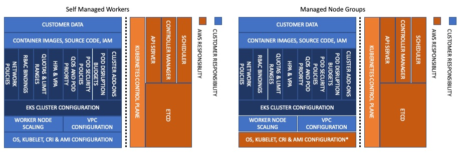
Before designing your system, it is important to know where the line of demarcation is between your responsibilities and the provider of the service (AWS).
For additional information about the shared responsibility model, see https://aws.amazon.com/compliance/shared-responsibility-model/
Introduction¶
There are several security best practice areas that are pertinent when using a managed Kubernetes service like EKS:
- Identity and Access Management
- Pod Security
- Runtime Security
- Network Security
- Multi-tenancy
- Detective Controls
- Infrastructure Security
- Data Encryption and Secrets Management
- Regulatory Compliance
- Incident Response and Forensics
- Image Security
As part of designing any system, you need to think about its security implications and the practices that can affect your security posture. For example, you need to control who can perform actions against a set of resources. You also need the ability to quickly identify security incidents, protect your systems and services from unauthorized access, and maintain the confidentiality and integrity of data through data protection. Having a well-defined and rehearsed set of processes for responding to security incidents will improve your security posture too. These tools and techniques are important because they support objectives such as preventing financial loss or complying with regulatory obligations.
AWS helps organizations achieve their security and compliance goals by offering a rich set of security services that have evolved based on feedback from a broad set of security conscious customers. By offering a highly secure foundation, customers can spend less time on undifferentiated heavy lifting and more time on achieving their business objectives.
Feedback¶
This guide is being released on GitHub so as to collect direct feedback and suggestions from the broader EKS/Kubernetes community. If you have a best practice that you feel we ought to include in the guide, please file an issue or submit a PR in the GitHub repository. Our intention is to update the guide periodically as new features are added to the service or when a new best practice evolves.
Further Reading¶
Kubernetes Security Whitepaper, sponsored by the Security Audit Working Group, this Whitepaper describes key aspects of the Kubernetes attack surface and security architecture with the aim of helping security practitioners make sound design and implementation decisions.
The CNCF published also a white paper on cloud native security. The paper examines how the technology landscape has evolved and advocates for the adoption of security practices that align with DevOps processes and agile methodologies.
Identity and Access Management¶
Identity and Access Management (IAM) is an AWS service that performs two essential functions: Authentication and Authorization. Authentication involves the verification of a identity whereas authorization governs the actions that can be performed by AWS resources. Within AWS, a resource can be another AWS service, e.g. EC2, or an AWS principal such as an IAM User or Role. The rules governing the actions that a resource is allowed to perform are expressed as IAM policies.
Controlling Access to EKS Clusters¶
The Kubernetes project supports a variety of different strategies to authenticate requests to the kube-apiserver service, e.g. Bearer Tokens, X.509 certificates, OIDC, etc. EKS currently has native support for webhook token authentication, service account tokens, and as of February 21, 2021, OIDC authentication.
The webhook authentication strategy calls a webhook that verifies bearer tokens. On EKS, these bearer tokens are generated by the AWS CLI or the aws-iam-authenticator client when you run kubectl commands. As you execute commands, the token is passed to the kube-apiserver which forwards it to the authentication webhook. If the request is well-formed, the webhook calls a pre-signed URL embedded in the token's body. This URL validates the request's signature and returns information about the user, e.g. the user's account, Arn, and UserId to the kube-apiserver.
To manually generate a authentication token, type the following command in a terminal window:
You can also get a token programmatically. Below is an example written in Go:
package main
import (
"fmt"
"log"
"sigs.k8s.io/aws-iam-authenticator/pkg/token"
)
func main() {
g, _ := token.NewGenerator(false, false)
tk, err := g.Get("<cluster_name>")
if err != nil {
log.Fatal(err)
}
fmt.Println(tk)
}
The output should resemble this:
{
"kind": "ExecCredential",
"apiVersion": "client.authentication.k8s.io/v1alpha1",
"spec": {},
"status": {
"expirationTimestamp": "2020-02-19T16:08:27Z",
"token": "k8s-aws-v1.aHR0cHM6Ly9zdHMuYW1hem9uYXdzLmNvbS8_QWN0aW9uPUdldENhbGxlcklkZW50aXR5JlZlcnNpb249MjAxMS0wNi0xNSZYLUFtei1BbGdvcml0aG09QVdTNC1ITUFDLVNIQTI1NiZYLUFtei1DcmVkZW50aWFsPUFLSUFKTkdSSUxLTlNSQzJXNVFBJTJGMjAyMDAyMTklMkZ1cy1lYXN0LTElMkZzdHMlMkZhd3M0X3JlcXVlc3QmWC1BbXotRGF0ZT0yMDIwMDIxOVQxNTU0MjdaJlgtQW16LUV4cGlyZXM9NjAmWC1BbXotU2lnbmVkSGVhZGVycz1ob3N0JTNCeC1rOHMtYXdzLWlkJlgtQW16LVNpZ25hdHVyZT0yMjBmOGYzNTg1ZTMyMGRkYjVlNjgzYTVjOWE0MDUzMDFhZDc2NTQ2ZjI0ZjI4MTExZmRhZDA5Y2Y2NDhhMzkz"
}
}
Each token starts with k8s-aws-v1. followed by a base64 encoded string. The string, when decoded, should resemble to something similar to this:
https://sts.amazonaws.com/?Action=GetCallerIdentity&Version=2011-06-15&X-Amz-Algorithm=AWS4-HMAC-SHA256&X-Amz-Credential=XXXXJPFRILKNSRC2W5QA%2F20200219%2Fus-xxxx-1%2Fsts%2Faws4_request&X-Amz-Date=20200219T155427Z&X-Amz-Expires=60&X-Amz-SignedHeaders=host%3Bx-k8s-aws-id&X-Amz-Signature=XXXf8f3285e320ddb5e683a5c9a405301ad76546f24f28111fdad09cf648a393
The token consists of a pre-signed URL that includes an Amazon credential and signature. For additional details see https://docs.aws.amazon.com/STS/latest/APIReference/API_GetCallerIdentity.html.
The token has a time to live (TTL) of 15 minutes after which a new token will need to be generated. This is handled automatically when you use a client like kubectl, however, if you're using the Kubernetes dashboard, you will need to generate a new token and re-authenticate each time the token expires.
Once the user's identity has been authenticated by the AWS IAM service, the kube-apiserver reads the aws-auth ConfigMap in the kube-system Namespace to determine the RBAC group to associate with the user. The aws-auth ConfigMap is used to create a static mapping between IAM principals, i.e. IAM Users and Roles, and Kubernetes RBAC groups. RBAC groups can be referenced in Kubernetes RoleBindings or ClusterRoleBindings. They are similar to IAM Roles in that they define a set of actions (verbs) that can be performed against a collection of Kubernetes resources (objects).
The aws-auth ConfigMap¶
One way Kubernetes integration with AWS authentication can be done is via the aws-auth ConfigMap, which resides in the kube-system Namespace. It's is responsible for mapping the AWS IAM Identities (Users, Groups, and Roles) authentication, to Kubernates role-based access control (RBAC) authorization. The aws-auth ConfigMap is automatically created in your Amazon EKS cluster during its provisioning phase. It was initially created to allow nodes to join your cluster, but as mentioned you can also use this ConfigMap to add RBACs access to IAM principals.
To check your cluster's aws-auth ConfigMap, you can use the following command.
This is a sample of a default configuration of the aws-auth ConfigMap.
apiVersion: v1
data:
mapRoles: |
- groups:
- system:bootstrappers
- system:nodes
- system:node-proxier
rolearn: arn:aws:iam::<AWS_ACCOUNT_ID>:role/kube-system-<SELF_GENERATED_UUID>
username: system:node:{{SessionName}}
kind: ConfigMap
metadata:
creationTimestamp: "2023-10-22T18:19:30Z"
name: aws-auth
namespace: kube-system
The main session of this ConfigMap, is under data in the mapRoles block, which is basically composed by 3 parameters.
- groups: The Kubernetes group(s) to map the IAM Role to. This can be a default group, or a custom group specified in a
clusterrolebindingorrolebinding. In the above example we have just system groups declared. - rolearn: The ARN of the AWS IAM Role be mapped to the Kubernetes group(s) add, using the following format
arn:<PARTITION>:iam::<AWS_ACCOUNT_ID>:role/role-name. - username: The username within Kubernetes to map to the AWS IAM role. This can be any custom name.
It is also possible to map permissions for AWS IAM Users, defining a new configuration block for
mapUsers, underdatain theaws-authConfigMap, replacing the rolearn parameter for userarn, however as a Best Practice it's always recommended to usermapRolesinstead.
To manage permissions, you can edit the aws-auth ConfigMap adding or removing access to your Amazon EKS cluster. Although it's possible to edit the aws-auth ConfigMap manually, it's recommended using tools like eksctl, since this is a very senstitive configuration, and an inaccurate configuration can lock you outside your Amazon EKS Cluster. Check the subsection Use tools to make changes to the aws-auth ConfigMap below for more details.
Cluster Access Manager¶
Cluster Access Manager, now the preferred way to manage access of AWS IAM principals to Amazon EKS clusters, is a functionality of the AWS API as is an opt-in feature for EKS v1.23 and later clusters (new or existing). It simplifies identity mapping between AWS IAM and Kubernetes RBACs, eliminating the need to switch between AWS and Kubernetes APIs or editing the the aws-auth ConfigMap for access management, reducing operational overhead, and helping address misconfigurations. The tool also enables cluster administrators to revoke or refine cluster-admin permissions automatically granted to the AWS IAM principal used to create the cluster.
This API relies on two concepts:
- Access Entries: A cluster identity directly linked to an AWS IAM principal (user or role) allowed to authenticate to an Amazon EKS cluster.
- Access Policies: Are Amazon EKS specific policies that provides the authorization for an Access Entry to perform actions in the Amazon EKS cluster.
At launch Amazon EKS supports only predefined and AWS managed policies. Access policies are not IAM entities and are defined and managed by Amazon EKS.
Cluster Access Manager allows the combiniation of upstream RBAC with Access Policies supporting allow and pass (but not deny) on Kubernetes AuthZ decisions regarding API server requests. A deny descision will happen when both, the upstream RBAC and Amazon EKS authorizers can't determine the outcome of a request evaluation.
With this feature, Amazon EKS support three modes of authentication:
CONFIG_MAPto continue usingaws-authconfigMap exclusively.API_AND_CONFIG_MAPto source authenticated IAM principals from both EKS Access Entry APIs and theaws-authconfigMap, prioritizing the Access Entries. Ideal to migrate existingaws-authpermissions to Access Entries.APIto exclusively rely on EKS Access Entry APIs. Being this one the new recommended approach.
To get started, cluster administrators can create or update Amazon EKS clusters, setting the preferred authentication to API_AND_CONFIG_MAP or API method and define Access Entries to grant access the desired AWS IAM principals.
$ aws eks create-cluster \
--name <CLUSTER_NAME> \
--role-arn <CLUSTER_ROLE_ARN> \
--resources-vpc-config subnetIds=<value>,endpointPublicAccess=true,endpointPrivateAccess=true \
--logging '{"clusterLogging":[{"types":["api","audit","authenticator","controllerManager","scheduler"],"enabled":true}]}' \
--access-config authenticationMode=API_AND_CONFIG_MAP,bootstrapClusterCreatorAdminPermissions=false
The above command is an example to create an Amazon EKS cluster already without the admin permissions of the cluster creator.
It is possible to update Amazon EKS clusters configuration to enable API authenticationMode using the update-cluster-config command, to do that on existing clusters using CONFIG_MAP you will have to first update to API_AND_CONFIG_MAP and then to API. These operations cannot be reverted, meaning that's not possible to switch from API to API_AND_CONFIG_MAP or CONFIG_MAP, and also from API_AND_CONFIG_MAP to CONFIG_MAP.
The API support commands to add and revoke access to the cluster, as well as validate the existing Access Policies and Access Entries for the specified cluster. The default policies are created to match Kubernets RBACs as follows.
| EKS Access Policy | Kubernetes RBAC |
|---|---|
| AmazonEKSClusterAdminPolicy | cluster-admin |
| AmazonEKSAdminPolicy | admin |
| AmazonEKSEditPolicy | edit |
| AmazonEKSViewPolicy | view |
$ aws eks list-access-policies
{
"accessPolicies": [
{
"name": "AmazonEKSAdminPolicy",
"arn": "arn:aws:eks::aws:cluster-access-policy/AmazonEKSAdminPolicy"
},
{
"name": "AmazonEKSClusterAdminPolicy",
"arn": "arn:aws:eks::aws:cluster-access-policy/AmazonEKSClusterAdminPolicy"
},
{
"name": "AmazonEKSEditPolicy",
"arn": "arn:aws:eks::aws:cluster-access-policy/AmazonEKSEditPolicy"
},
{
"name": "AmazonEKSViewPolicy",
"arn": "arn:aws:eks::aws:cluster-access-policy/AmazonEKSViewPolicy"
}
]
}
$ aws eks list-access-entries --cluster-name <CLUSTER_NAME>
{
"accessEntries": []
}
No Access Entries are available when the cluster is created without the cluster creator admin permission, which is the only entry created by default.
Cluster Access Recommendations¶
Make the EKS Cluster Endpoint private¶
By default when you provision an EKS cluster, the API cluster endpoint is set to public, i.e. it can be accessed from the Internet. Despite being accessible from the Internet, the endpoint is still considered secure because it requires all API requests to be authenticated by IAM and then authorized by Kubernetes RBAC. That said, if your corporate security policy mandates that you restrict access to the API from the Internet or prevents you from routing traffic outside the cluster VPC, you can:
- Configure the EKS cluster endpoint to be private. See Modifying Cluster Endpoint Access for further information on this topic.
- Leave the cluster endpoint public and specify which CIDR blocks can communicate with the cluster endpoint. The blocks are effectively a whitelisted set of public IP addresses that are allowed to access the cluster endpoint.
- Configure public access with a set of whitelisted CIDR blocks and set private endpoint access to enabled. This will allow public access from a specific range of public IPs while forcing all network traffic between the kubelets (workers) and the Kubernetes API through the cross-account ENIs that get provisioned into the cluster VPC when the control plane is provisioned.
Don't use a service account token for authentication¶
A service account token is a long-lived, static credential. If it is compromised, lost, or stolen, an attacker may be able to perform all the actions associated with that token until the service account is deleted. At times, you may need to grant an exception for applications that have to consume the Kubernetes API from outside the cluster, e.g. a CI/CD pipeline application. If such applications run on AWS infrastructure, like EC2 instances, consider using an instance profile and mapping that to a Kubernetes RBAC role.
Employ least privileged access to AWS Resources¶
An IAM User does not need to be assigned privileges to AWS resources to access the Kubernetes API. If you need to grant an IAM user access to an EKS cluster, create an entry in the aws-auth ConfigMap for that user that maps to a specific Kubernetes RBAC group.
Remove the cluster-admin permissions from the cluster creator principal¶
By default Amazon EKS clusters are created with a permanent cluster-admin permission bound to the cluster creator principal. With the Cluster Access Manager API, it's possible to create clusters without this permission setting the --access-config bootstrapClusterCreatorAdminPermissions to false, when using API_AND_CONFIG_MAP or API authentication mode. Revoke this access considered a best practice to avoid any unwanted changes to the cluster configuration. The process to revoke this access, follows the same process to revoke any other access to the cluster.
The API gives you flexibility to only disassociate an IAM principal from an Access Policy, in this case the AmazonEKSClusterAdminPolicy.
$ aws eks list-associated-access-policies \
--cluster-name <CLUSTER_NAME> \
--principal-arn <IAM_PRINCIPAL_ARN>
$ aws eks disassociate-access-policy --cluster-name <CLUSTER_NAME> \
--principal-arn <IAM_PRINCIPAL_ARN. \
--policy-arn arn:aws:eks::aws:cluster-access-policy/AmazonEKSClusterAdminPolicy
Or completeley removing the Access Entry associated with the cluster-admin permission.
$ aws eks list-access-entries --cluster-name <CLUSTER_NAME>
{
"accessEntries": []
}
$ aws eks delete-access-entry --cluster-name <CLUSTER_NAME> \
--principal-arn <IAM_PRINCIPAL_ARN>
This access can be granted again if needed during an incident, emergency or break glass scenario where the cluster is otherwise inaccessible.
If the cluster still configured with the CONFIG_MAP authentication method, all additional users should be granted access to the cluster through the aws-auth ConfigMap, and after aws-auth ConfigMap is configured, the role assigned to the entity that created the cluster, can be deleted and only recreated in case of an incident, emergency or break glass scenario, or where the aws-auth ConfigMap is corrupted and the cluster is otherwise inaccessible. This can be particularly useful in production clusters.
Use IAM Roles when multiple users need identical access to the cluster¶
Rather than creating an entry for each individual IAM User, allow those users to assume an IAM Role and map that role to a Kubernetes RBAC group. This will be easier to maintain, especially as the number of users that require access grows.
Attention
When accessing the EKS cluster with the IAM entity mapped by aws-auth ConfigMap, the username described is recorded in the user field of the Kubernetes audit log. If you're using an IAM role, the actual users who assume that role aren't recorded and can't be audited.
If still using the aws-auth configMap as the authentication method, when assigning K8s RBAC permissions to an IAM role, you should include {{SessionName}} in your username. That way, the audit log will record the session name so you can track who the actual user assume this role along with the CloudTrail log.
- rolearn: arn:aws:iam::XXXXXXXXXXXX:role/testRole
username: testRole:{{SessionName}}
groups:
- system:masters
In Kubernetes 1.20 and above, this change is no longer required, since
user.extra.sessionName.0was added to the Kubernetes audit log.
Employ least privileged access when creating RoleBindings and ClusterRoleBindings¶
Like the earlier point about granting access to AWS Resources, RoleBindings and ClusterRoleBindings should only include the set of permissions necessary to perform a specific function. Avoid using ["*"] in your Roles and ClusterRoles unless it's absolutely necessary. If you're unsure what permissions to assign, consider using a tool like audit2rbac to automatically generate Roles and binding based on the observed API calls in the Kubernetes Audit Log.
Create cluster using an automated process¶
As seen in earlier steps, when creating an Amazon EKS cluster, if not using the using API_AND_CONFIG_MAP or API authentication mode, and not opting out to delegate cluster-admin permissions to the cluster creator, the IAM entity user or role, such as afederated userthat creates the cluster, is automatically grantedsystem:masterspermissions in the cluster's RBAC configuration. Even being a best practice to remove this permission, as described here if using the CONFIG_MAP authentication method, relying on aws-auth ConfigMap, this access cannot be revoked. Therefore it is a good idea to create the cluster with an infrastructure automation pipeline tied to dedicated IAM role, with no permissions to be assumed by other users or entities and regularly audit this role permissions, policies, and who have access to the trigger the pipeline. Also, this role should not be used to perform routine actions on the cluster, and be exclusively used to cluster level actions triggered by the pipeline, via SCM code changes for example.
Regularly audit access to the cluster¶
Who requires access is likely to change over time. Plan to periodically audit the aws-auth ConfigMap to see who has been granted access and the rights they've been assigned. You can also use open source tooling like kubectl-who-can, or rbac-lookup to examine the roles bound to a particular service account, user, or group. We'll explore this topic further when we get to the section on auditing. Additional ideas can be found in this article from NCC Group.
If relying on aws-auth configMap use tools to make changes¶
An improperly formatted aws-auth ConfigMap may cause you to lose access to the cluster. If you need to make changes to the ConfigMap, use a tool.
eksctl
The eksctl CLI includes a command for adding identity mappings to the aws-auth
ConfigMap.
View CLI Help:
Check the identities mapped to your Amazon EKS Cluster.
$ eksctl get iamidentitymapping --cluster $CLUSTER_NAME --region $AWS_REGION
ARN USERNAME GROUPS ACCOUNT
arn:aws:iam::788355785855:role/kube-system-<SELF_GENERATED_UUID> system:node:{{SessionName}} system:bootstrappers,system:nodes,system:node-proxier
Make an IAM Role a Cluster Admin:
$ eksctl create iamidentitymapping --cluster <CLUSTER_NAME> --region=<region> --arn arn:aws:iam::123456:role/testing --group system:masters --username admin
...
For more information, review eksctl docs
aws-auth by keikoproj
aws-auth by keikoproj includes both a cli and a go library.
Download and view help CLI help:
Alternatively, install aws-auth with the krew plugin manager for kubectl.
Review the aws-auth docs on GitHub for more information, including the go library.
The aws-iam-authenticator project includes a CLI for updating the ConfigMap.
Download a release on GitHub.
Add cluster permissions to an IAM Role:
$ ./aws-iam-authenticator add role --rolearn arn:aws:iam::185309785115:role/lil-dev-role-cluster --username lil-dev-user --groups system:masters --kubeconfig ~/.kube/config
...
Alternative Approaches to Authentication and Access Management¶
While IAM is the preferred way to authenticate users who need access to an EKS cluster, it is possible to use an OIDC identity provider such as GitHub using an authentication proxy and Kubernetes impersonation. Posts for two such solutions have been published on the AWS Open Source blog:
- Authenticating to EKS Using GitHub Credentials with Teleport
- Consistent OIDC authentication across multiple EKS clusters using kube-oidc-proxy
Attention
EKS natively supports OIDC authentication without using a proxy. For further information, please read the launch blog, Introducing OIDC identity provider authentication for Amazon EKS. For an example showing how to configure EKS with Dex, a popular open source OIDC provider with connectors for a variety of different authention methods, see Using Dex & dex-k8s-authenticator to authenticate to Amazon EKS. As described in the blogs, the username/group of users authenticated by an OIDC provider will appear in the Kubernetes audit log.
You can also use AWS SSO to federate AWS with an external identity provider, e.g. Azure AD. If you decide to use this, the AWS CLI v2.0 includes an option to create a named profile that makes it easy to associate an SSO session with your current CLI session and assume an IAM role. Know that you must assume a role prior to running kubectl as the IAM role is used to determine the user's Kubernetes RBAC group.
Additional Resources¶
rbac.dev A list of additional resources, including blogs and tools, for Kubernetes RBAC
Pods Identities¶
Certain applications that run within a Kubernetes cluster need permission to call the Kubernetes API to function properly. For example, the AWS Load Balancer Controller needs to be able to list a Service's Endpoints. The controller also needs to be able to invoke AWS APIs to provision and configure an ALB. In this section we will explore the best practices for assigning rights and privileges to Pods.
Kubernetes Service Accounts¶
A service account is a special type of object that allows you to assign a Kubernetes RBAC role to a pod. A default service account is created automatically for each Namespace within a cluster. When you deploy a pod into a Namespace without referencing a specific service account, the default service account for that Namespace will automatically get assigned to the Pod and the Secret, i.e. the service account (JWT) token for that service account, will get mounted to the pod as a volume at /var/run/secrets/kubernetes.io/serviceaccount. Decoding the service account token in that directory will reveal the following metadata:
{
"iss": "kubernetes/serviceaccount",
"kubernetes.io/serviceaccount/namespace": "default",
"kubernetes.io/serviceaccount/secret.name": "default-token-5pv4z",
"kubernetes.io/serviceaccount/service-account.name": "default",
"kubernetes.io/serviceaccount/service-account.uid": "3b36ddb5-438c-11ea-9438-063a49b60fba",
"sub": "system:serviceaccount:default:default"
}
The default service account has the following permissions to the Kubernetes API.
apiVersion: rbac.authorization.k8s.io/v1
kind: ClusterRole
metadata:
annotations:
rbac.authorization.kubernetes.io/autoupdate: "true"
creationTimestamp: "2020-01-30T18:13:25Z"
labels:
kubernetes.io/bootstrapping: rbac-defaults
name: system:discovery
resourceVersion: "43"
selfLink: /apis/rbac.authorization.k8s.io/v1/clusterroles/system%3Adiscovery
uid: 350d2ab8-438c-11ea-9438-063a49b60fba
rules:
- nonResourceURLs:
- /api
- /api/*
- /apis
- /apis/*
- /healthz
- /openapi
- /openapi/*
- /version
- /version/
verbs:
- get
This role authorizes unauthenticated and authenticated users to read API information and is deemed safe to be publicly accessible.
When an application running within a Pod calls the Kubernetes APIs, the Pod needs to be assigned a service account that explicitly grants it permission to call those APIs. Similar to guidelines for user access, the Role or ClusterRole bound to a service account should be restricted to the API resources and methods that the application needs to function and nothing else. To use a non-default service account simply set the spec.serviceAccountName field of a Pod to the name of the service account you wish to use. For additional information about creating service accounts, see https://kubernetes.io/docs/reference/access-authn-authz/rbac/#service-account-permissions.
Note
Prior to Kubernetes 1.24, Kubernetes would automatically create a secret for each a service account. This secret was mounted to the pod at /var/run/secrets/kubernetes.io/serviceaccount and would be used by the pod to authenticate to the Kubernetes API server. In Kubernetes 1.24, a service account token is dynamically generated when the pod runs and is only valid for an hour by default. A secret for the service account will not be created. If you have an application that runs outside the cluster that needs to authenticate to the Kubernetes API, e.g. Jenkins, you will need to create a secret of type kubernetes.io/service-account-token along with an annotation that references the service account such as metadata.annotations.kubernetes.io/service-account.name: <SERVICE_ACCOUNT_NAME>. Secrets created in this way do not expire.
IAM Roles for Service Accounts (IRSA)¶
IRSA is a feature that allows you to assign an IAM role to a Kubernetes service account. It works by leveraging a Kubernetes feature known as Service Account Token Volume Projection. When Pods are configured with a Service Account that references an IAM Role, the Kubernetes API server will call the public OIDC discovery endpoint for the cluster on startup. The endpoint cryptographically signs the OIDC token issued by Kubernetes and the resulting token mounted as a volume. This signed token allows the Pod to call the AWS APIs associated IAM role. When an AWS API is invoked, the AWS SDKs calls sts:AssumeRoleWithWebIdentity. After validating the token's signature, IAM exchanges the Kubernetes issued token for a temporary AWS role credential.
Decoding the (JWT) token for IRSA will produce output similar to the example you see below:
{
"aud": [
"sts.amazonaws.com"
],
"exp": 1582306514,
"iat": 1582220114,
"iss": "https://oidc.eks.us-west-2.amazonaws.com/id/D43CF17C27A865933144EA99A26FB128",
"kubernetes.io": {
"namespace": "default",
"pod": {
"name": "alpine-57b5664646-rf966",
"uid": "5a20f883-5407-11ea-a85c-0e62b7a4a436"
},
"serviceaccount": {
"name": "s3-read-only",
"uid": "a720ba5c-5406-11ea-9438-063a49b60fba"
}
},
"nbf": 1582220114,
"sub": "system:serviceaccount:default:s3-read-only"
}
This particular token grants the Pod view-only privileges to S3. When the application attempts to read from S3, the token is exchanged for a temporary set of IAM credentials that resembles this:
{
"AssumedRoleUser": {
"AssumedRoleId": "AROA36C6WWEJULFUYMPB6:abc",
"Arn": "arn:aws:sts::123456789012:assumed-role/eksctl-winterfell-addon-iamserviceaccount-de-Role1-1D61LT75JH3MB/abc"
},
"Audience": "sts.amazonaws.com",
"Provider": "arn:aws:iam::123456789012:oidc-provider/oidc.eks.us-west-2.amazonaws.com/id/D43CF17C27A865933144EA99A26FB128",
"SubjectFromWebIdentityToken": "system:serviceaccount:default:s3-read-only",
"Credentials": {
"SecretAccessKey": "ORJ+8Adk+wW+nU8FETq7+mOqeA8Z6jlPihnV8hX1",
"SessionToken": "FwoGZXIvYXdzEGMaDMLxAZkuLpmSwYXShiL9A1S0X87VBC1mHCrRe/pB2oes+l1eXxUYnPJyC9ayOoXMvqXQsomq0xs6OqZ3vaa5Iw1HIyA4Cv1suLaOCoU3hNvOIJ6C94H1vU0siQYk7DIq9Av5RZe+uE2FnOctNBvYLd3i0IZo1ajjc00yRK3v24VRq9nQpoPLuqyH2jzlhCEjXuPScPbi5KEVs9fNcOTtgzbVf7IG2gNiwNs5aCpN4Bv/Zv2A6zp5xGz9cWj2f0aD9v66vX4bexOs5t/YYhwuwAvkkJPSIGvxja0xRThnceHyFHKtj0H+bi/PWAtlI8YJcDX69cM30JAHDdQH+ltm/4scFptW1hlvMaP+WReCAaCrsHrAT+yka7ttw5YlUyvZ8EPog+j6fwHlxmrXM9h1BqdikomyJU00gm1++FJelfP+1zAwcyrxCnbRl3ARFrAt8hIlrT6Vyu8WvWtLxcI8KcLcJQb/LgkW+sCTGlYcY8z3zkigJMbYn07ewTL5Ss7LazTJJa758I7PZan/v3xQHd5DEc5WBneiV3iOznDFgup0VAMkIviVjVCkszaPSVEdK2NU7jtrh6Jfm7bU/3P6ZG+CkyDLIa8MBn9KPXeJd/y+jTk5Ii+fIwO/+mDpGNUribg6TPxhzZ8b/XdZO1kS1gVgqjXyVC+M+BRBh6C4H21w/eMzjCtDIpoxt5rGKL6Nu/IFMipoC4fgx6LIIHwtGYMG7SWQi7OsMAkiwZRg0n68/RqWgLzBt/4pfjSRYuk=",
"Expiration": "2020-02-20T18:49:50Z",
"AccessKeyId": "XXXX36C6WWEJUMHA3L7Z"
}
}
A mutating webhook that runs as part of the EKS control plane injects the AWS Role ARN and the path to a web identity token file into the Pod as environment variables. These values can also be supplied manually.
AWS_ROLE_ARN=arn:aws:iam::AWS_ACCOUNT_ID:role/IAM_ROLE_NAME
AWS_WEB_IDENTITY_TOKEN_FILE=/var/run/secrets/eks.amazonaws.com/serviceaccount/token
The kubelet will automatically rotate the projected token when it is older than 80% of its total TTL, or after 24 hours. The AWS SDKs are responsible for reloading the token when it rotates. For further information about IRSA, see https://docs.aws.amazon.com/eks/latest/userguide/iam-roles-for-service-accounts-technical-overview.html.
Pod Identity Recommendations¶
Update the aws-node daemonset to use IRSA¶
At present, the aws-node daemonset is configured to use a role assigned to the EC2 instances to assign IPs to pods. This role includes several AWS managed policies, e.g. AmazonEKS_CNI_Policy and EC2ContainerRegistryReadOnly that effectively allow all pods running on a node to attach/detach ENIs, assign/unassign IP addresses, or pull images from ECR. Since this presents a risk to your cluster, it is recommended that you update the aws-node daemonset to use IRSA. A script for doing this can be found in the repository for this guide.
Restrict access to the instance profile assigned to the worker node¶
When you use IRSA, it updates the credential chain of the pod to use the IRSA token, however, the pod can still inherit the rights of the instance profile assigned to the worker node. When using IRSA, it is strongly recommended that you block access instance metadata to minimize the blast radius of a breach.
Caution
Blocking access to instance metadata will prevent pods that do not use IRSA from inheriting the role assigned to the worker node.
You can block access to instance metadata by requiring the instance to use IMDSv2 only and updating the hop count to 1 as in the example below. You can also include these settings in the node group's launch template. Do not disable instance metadata as this will prevent components like the node termination handler and other things that rely on instance metadata from working properly.
$ aws ec2 modify-instance-metadata-options --instance-id <value> --http-tokens required --http-put-response-hop-limit 1
...
If you are using Terraform to create launch templates for use with Managed Node Groups, add the metadata block to configure the hop count as seen in this code snippet:
resource "aws_launch_template" "foo" {
name = "foo"
...
metadata_options {
http_endpoint = "enabled"
http_tokens = "required"
http_put_response_hop_limit = 1
instance_metadata_tags = "enabled"
}
...
You can also block a pod's access to EC2 metadata by manipulating iptables on the node. For further information about this method, see Limiting access to the instance metadata service.
If you have an application that is using an older version of the AWS SDK that doesn't support IRSA, you should update the SDK version.
Scope the IAM Role trust policy for IRSA to the service account name¶
The trust policy can be scoped to a Namespace or a specific service account within a Namespace. When using IRSA it's best to make the role trust policy as explicit as possible by including the service account name. This will effectively prevent other Pods within the same Namespace from assuming the role. The CLI eksctl will do this automatically when you use it to create service accounts/IAM roles. See https://eksctl.io/usage/iamserviceaccounts/ for further information.
When your application needs access to IMDS, use IMDSv2 and increase the hop limit on EC2 instances to 2¶
IMDSv2 requires you use a PUT request to get a session token. The initial PUT request has to include a TTL for the session token. Newer versions of the AWS SDKs will handle this and the renewal of said token automatically. It's also important to be aware that the default hop limit on EC2 instances is intentionally set to 1 to prevent IP forwarding. As a consequence, Pods that request a session token that are run on EC2 instances may eventually time out and fallback to using the IMDSv1 data flow. EKS adds support IMDSv2 by enabling both v1 and v2 and changing the hop limit to 2 on nodes provisioned by eksctl or with the official CloudFormation templates.
Disable auto-mounting of service account tokens¶
If your application doesn't need to call the Kubernetes API set the automountServiceAccountToken attribute to false in the PodSpec for your application or patch the default service account in each namespace so that it's no longer mounted to pods automatically. For example:
Use dedicated service accounts for each application¶
Each application should have its own dedicated service account. This applies to service accounts for the Kubernetes API as well as IRSA.
Attention
If you employ a blue/green approach to cluster upgrades instead of performing an in-place cluster upgrade, you will need to update the trust policy of each of the IRSA IAM roles with the OIDC endpoint of the new cluster. A blue/green cluster upgrade is where you create a cluster running a newer version of Kubernetes alongside the old cluster and use a load balancer or a service mesh to seamlessly shift traffic from services running on the old cluster to the new cluster.
Run the application as a non-root user¶
Containers run as root by default. While this allows them to read the web identity token file, running a container as root is not considered a best practice. As an alternative, consider adding the spec.securityContext.runAsUser attribute to the PodSpec. The value of runAsUser is arbitrary value.
In the following example, all processes within the Pod will run under the user ID specified in the runAsUser field.
apiVersion: v1
kind: Pod
metadata:
name: security-context-demo
spec:
securityContext:
runAsUser: 1000
runAsGroup: 3000
containers:
- name: sec-ctx-demo
image: busybox
command: [ "sh", "-c", "sleep 1h" ]
When you run a container as a non-root user, it prevents the container from reading the IRSA service account token because the token is assigned 0600 [root] permissions by default. If you update the securityContext for your container to include fsgroup=65534 [Nobody] it will allow the container to read the token.
In Kubernetes 1.19 and above, this change is no longer required.
Grant least privileged access to applications¶
Action Hero is a utility that you can run alongside your application to identify the AWS API calls and corresponding IAM permissions your application needs to function properly. It is similar to IAM Access Advisor in that it helps you gradually limit the scope of IAM roles assigned to applications. Consult the documentation on granting least privileged access to AWS resources for further information.
Review and revoke unnecessary anonymous access¶
Ideally anonymous access should be disabled for all API actions. Anonymous access is granted by creating a RoleBinding or ClusterRoleBinding for the Kubernetes built-in user system:anonymous. You can use the rbac-lookup tool to identify permissions that system:anonymous user has on your cluster:
./rbac-lookup | grep -P 'system:(anonymous)|(unauthenticated)'
system:anonymous cluster-wide ClusterRole/system:discovery
system:unauthenticated cluster-wide ClusterRole/system:discovery
system:unauthenticated cluster-wide ClusterRole/system:public-info-viewer
Any role or ClusterRole other than system:public-info-viewer should not be bound to system:anonymous user or system:unauthenticated group.
There may be some legitimate reasons to enable anonymous access on specific APIs. If this is the case for your cluster ensure that only those specific APIs are accessible by anonymous user and exposing those APIs without authentication doesnt make your cluster vulnerable.
Prior to Kubernetes/EKS Version 1.14, system:unauthenticated group was associated to system:discovery and system:basic-user ClusterRoles by default. Note that even if you have updated your cluster to version 1.14 or higher, these permissions may still be enabled on your cluster, since cluster updates do not revoke these permissions. To check which ClusterRoles have "system:unauthenticated" except system:public-info-viewer you can run the following command (requires jq util):
kubectl get ClusterRoleBinding -o json | jq -r '.items[] | select(.subjects[]?.name =="system:unauthenticated") | select(.metadata.name != "system:public-info-viewer") | .metadata.name'
And "system:unauthenticated" can be removed from all the roles except "system:public-info-viewer" using:
kubectl get ClusterRoleBinding -o json | jq -r '.items[] | select(.subjects[]?.name =="system:unauthenticated") | select(.metadata.name != "system:public-info-viewer") | del(.subjects[] | select(.name =="system:unauthenticated"))' | kubectl apply -f -
Alternatively, you can check and remove it manually by kubectl describe and kubectl edit. To check if system:unauthenticated group has system:discovery permissions on your cluster run the following command:
kubectl describe clusterrolebindings system:discovery
Name: system:discovery
Labels: kubernetes.io/bootstrapping=rbac-defaults
Annotations: rbac.authorization.kubernetes.io/autoupdate: true
Role:
Kind: ClusterRole
Name: system:discovery
Subjects:
Kind Name Namespace
---- ---- ---------
Group system:authenticated
Group system:unauthenticated
To check if system:unauthenticated group has system:basic-user permission on your cluster run the following command:
kubectl describe clusterrolebindings system:basic-user
Name: system:basic-user
Labels: kubernetes.io/bootstrapping=rbac-defaults
Annotations: rbac.authorization.kubernetes.io/autoupdate: true
Role:
Kind: ClusterRole
Name: system:basic-user
Subjects:
Kind Name Namespace
---- ---- ---------
Group system:authenticated
Group system:unauthenticated
If system:unauthenticated group is bound to system:discovery and/or system:basic-user ClusterRoles on your cluster, you should disassociate these roles from system:unauthenticated group. Edit system:discovery ClusterRoleBinding using the following command:
The above command will open the current definition of system:discovery ClusterRoleBinding in an editor as shown below:
# Please edit the object below. Lines beginning with a '#' will be ignored,
# and an empty file will abort the edit. If an error occurs while saving this file will be
# reopened with the relevant failures.
#
apiVersion: rbac.authorization.k8s.io/v1
kind: ClusterRoleBinding
metadata:
annotations:
rbac.authorization.kubernetes.io/autoupdate: "true"
creationTimestamp: "2021-06-17T20:50:49Z"
labels:
kubernetes.io/bootstrapping: rbac-defaults
name: system:discovery
resourceVersion: "24502985"
selfLink: /apis/rbac.authorization.k8s.io/v1/clusterrolebindings/system%3Adiscovery
uid: b7936268-5043-431a-a0e1-171a423abeb6
roleRef:
apiGroup: rbac.authorization.k8s.io
kind: ClusterRole
name: system:discovery
subjects:
- apiGroup: rbac.authorization.k8s.io
kind: Group
name: system:authenticated
- apiGroup: rbac.authorization.k8s.io
kind: Group
name: system:unauthenticated
Delete the entry for system:unauthenticated group from the subjects section in the above editor screen.
Repeat the same steps for system:basic-user ClusterRoleBinding.
Alternative approaches¶
While IRSA is the preferred way to assign an AWS "identity" to a pod, it requires that you include recent version of the AWS SDKs in your application. For a complete listing of the SDKs that currently support IRSA, see https://docs.aws.amazon.com/eks/latest/userguide/iam-roles-for-service-accounts-minimum-sdk.html. If you have an application that you can't immediately update with a IRSA-compatible SDK, there are several community-built solutions available for assigning IAM roles to Kubernetes pods, including kube2iam and kiam. Although AWS doesn't endorse or condone the use of these solutions, they are frequently used by the community at large to achieve similar results as IRSA.
Pod Security¶
The pod specification includes a variety of different attributes that can strengthen or weaken your overall security posture. As a Kubernetes practitioner your chief concern should be preventing a process thats running in a container from escaping the isolation boundaries of the container runtime and gaining access to the underlying host.
Linux Capabilities¶
The processes that run within a container run under the context of the [Linux] root user by default. Although the actions of root within a container are partially constrained by the set of Linux capabilities that the container runtime assigns to the containers, these default privileges could allow an attacker to escalate their privileges and/or gain access to sensitive information bound to the host, including Secrets and ConfigMaps. Below is a list of the default capabilities assigned to containers. For additional information about each capability, see http://man7.org/linux/man-pages/man7/capabilities.7.html.
CAP_AUDIT_WRITE, CAP_CHOWN, CAP_DAC_OVERRIDE, CAP_FOWNER, CAP_FSETID, CAP_KILL, CAP_MKNOD, CAP_NET_BIND_SERVICE, CAP_NET_RAW, CAP_SETGID, CAP_SETUID, CAP_SETFCAP, CAP_SETPCAP, CAP_SYS_CHROOT
Info
EC2 and Fargate pods are assigned the aforementioned capabilities by default. Additionally, Linux capabilities can only be dropped from Fargate pods.
Pods that are run as privileged, inherit all of the Linux capabilities associated with root on the host. This should be avoided if possible.
Node Authorization¶
All Kubernetes worker nodes use an authorization mode called Node Authorization. Node Authorization authorizes all API requests that originate from the kubelet and allows nodes to perform the following actions:
Read operations:
- services
- endpoints
- nodes
- pods
- secrets, configmaps, persistent volume claims and persistent volumes related to pods bound to the kubelets node
Write operations:
- nodes and node status (enable the
NodeRestrictionadmission plugin to limit a kubelet to modify its own node) - pods and pod status (enable the
NodeRestrictionadmission plugin to limit a kubelet to modify pods bound to itself) - events
Auth-related operations:
- Read/write access to the CertificateSigningRequest (CSR) API for TLS bootstrapping
- the ability to create TokenReview and SubjectAccessReview for delegated authentication/authorization checks
EKS uses the node restriction admission controller which only allows the node to modify a limited set of node attributes and pod objects that are bound to the node. Nevertheless, an attacker who manages to get access to the host will still be able to glean sensitive information about the environment from the Kubernetes API that could allow them to move laterally within the cluster.
Pod Security Solutions¶
Pod Security Policy (PSP)¶
In the past, Pod Security Policy (PSP) resources were used to specify a set of requirements that pods had to meet before they could be created. As of Kubernetes version 1.21, PSP have been deprecated. They are scheduled for removal in Kubernetes version 1.25.
Attention
PSPs are deprecated in Kubernetes version 1.21. You will have until version 1.25 or roughly 2 years to transition to an alternative. This document explains the motivation for this deprecation.
Migrating to a new pod security solution¶
Since PSPs have been removed as of Kubernetes v1.25, cluster administrators and operators must replace those security controls. Two solutions can fill this need:
- Policy-as-code (PAC) solutions from the Kubernetes ecosystem
- Kubernetes Pod Security Standards (PSS)
Both the PAC and PSS solutions can coexist with PSP; they can be used in clusters before PSP is removed. This eases adoption when migrating from PSP. Please see this document when considering migrating from PSP to PSS.
Kyverno, one of the PAC solutions outlined below, has specific guidance outlined in a blog post when migrating from PSPs to its solution including analogous policies, feature comparisons, and a migration procedure. Additional information and guidance on migration to Kyverno with respect to Pod Security Admission (PSA) has been published on the AWS blog here.
Policy-as-code (PAC)¶
Policy-as-code (PAC) solutions provide guardrails to guide cluster users, and prevent unwanted behaviors, through prescribed and automated controls. PAC uses Kubernetes Dynamic Admission Controllers to intercept the Kubernetes API server request flow, via a webhook call, and mutate and validate request payloads, based on policies written and stored as code. Mutation and validation happens before the API server request results in a change to the cluster. PAC solutions use policies to match and act on API server request payloads, based on taxonomy and values.
There are several open source PAC solutions available for Kubernetes. These solutions are not part of the Kubernetes project; they are sourced from the Kubernetes ecosystem. Some PAC solutions are listed below.
For further information about PAC solutions and how to help you select the appropriate solution for your needs, see the links below.
- Policy-based countermeasures for Kubernetes Part 1
- Policy-based countermeasures for Kubernetes Part 2
Pod Security Standards (PSS) and Pod Security Admission (PSA)¶
In response to the PSP deprecation and the ongoing need to control pod security out-of-the-box, with a built-in Kubernetes solution, the Kubernetes Auth Special Interest Group created the Pod Security Standards (PSS) and Pod Security Admission (PSA). The PSA effort includes an admission controller webhook project that implements the controls defined in the PSS. This admission controller approach resembles that used in the PAC solutions.
According to the Kubernetes documentation, the PSS "define three different policies to broadly cover the security spectrum. These policies are cumulative and range from highly-permissive to highly-restrictive."
These policies are defined as:
-
Privileged: Unrestricted (unsecure) policy, providing the widest possible level of permissions. This policy allows for known privilege escalations. It is the absence of a policy. This is good for applications such as logging agents, CNIs, storage drivers, and other system wide applications that need privileged access.
-
Baseline: Minimally restrictive policy which prevents known privilege escalations. Allows the default (minimally specified) Pod configuration. The baseline policy prohibits use of hostNetwork, hostPID, hostIPC, hostPath, hostPort, the inability to add Linux capabilities, along with several other restrictions.
-
Restricted: Heavily restricted policy, following current Pod hardening best practices. This policy inherits from the baseline and adds further restrictions such as the inability to run as root or a root-group. Restricted policies may impact an application's ability to function. They are primarily targeted at running security critical applications.
These policies define profiles for pod execution, arranged into three levels of privileged vs. restricted access.
To implement the controls defined by the PSS, PSA operates in three modes:
-
enforce: Policy violations will cause the pod to be rejected.
-
audit: Policy violations will trigger the addition of an audit annotation to the event recorded in the audit log, but are otherwise allowed.
-
warn: Policy violations will trigger a user-facing warning, but are otherwise allowed.
These modes and the profile (restriction) levels are configured at the Kubernetes Namespace level, using labels, as seen in the below example.
apiVersion: v1
kind: Namespace
metadata:
name: policy-test
labels:
pod-security.kubernetes.io/enforce: restricted
When used independently, these operational modes have different responses that result in different user experiences. The enforce mode will prevent pods from being created if respective podSpecs violate the configured restriction level. However, in this mode, non-pod Kubernetes objects that create pods, such as Deployments, will not be prevented from being applied to the cluster, even if the podSpec therein violates the applied PSS. In this case the Deployment will be applied, while the pod(s) will be prevented from being applied.
This is a difficult user experience, as there is no immediate indication that the successfully applied Deployment object belies failed pod creation. The offending podSpecs will not create pods. Inspecting the Deployment resource with kubectl get deploy <DEPLOYMENT_NAME> -oyaml will expose the message from the failed pod(s) .status.conditions element, as seen below.
...
status:
conditions:
- lastTransitionTime: "2022-01-20T01:02:08Z"
lastUpdateTime: "2022-01-20T01:02:08Z"
message: 'pods "test-688f68dc87-tw587" is forbidden: violates PodSecurity "restricted:latest":
allowPrivilegeEscalation != false (container "test" must set securityContext.allowPrivilegeEscalation=false),
unrestricted capabilities (container "test" must set securityContext.capabilities.drop=["ALL"]),
runAsNonRoot != true (pod or container "test" must set securityContext.runAsNonRoot=true),
seccompProfile (pod or container "test" must set securityContext.seccompProfile.type
to "RuntimeDefault" or "Localhost")'
reason: FailedCreate
status: "True"
type: ReplicaFailure
...
In both the audit and warn modes, the pod restrictions do not prevent violating pods from being created and started. However, in these modes audit annotations on API server audit log events and warnings to API server clients, such as kubectl, are triggered, respectively, when pods, as well as objects that create pods, contain podSpecs with violations. A kubectl Warning message is seen below.
Warning: would violate PodSecurity "restricted:latest": allowPrivilegeEscalation != false (container "test" must set securityContext.allowPrivilegeEscalation=false), unrestricted capabilities (container "test" must set securityContext.capabilities.drop=["ALL"]), runAsNonRoot != true (pod or container "test" must set securityContext.runAsNonRoot=true), seccompProfile (pod or container "test" must set securityContext.seccompProfile.type to "RuntimeDefault" or "Localhost")
deployment.apps/test created
The PSA audit and warn modes are useful when introducing the PSS without negatively impacting cluster operations.
The PSA operational modes are not mutually exclusive, and can be used in a cumulative manner. As seen below, the multiple modes can be configured in a single namespace.
apiVersion: v1
kind: Namespace
metadata:
name: policy-test
labels:
pod-security.kubernetes.io/audit: restricted
pod-security.kubernetes.io/enforce: restricted
pod-security.kubernetes.io/warn: restricted
In the above example, the user-friendly warnings and audit annotations are provided when applying Deployments, while the enforce of violations are also provided at the pod level. In fact multiple PSA labels can use different profile levels, as seen below.
apiVersion: v1
kind: Namespace
metadata:
name: policy-test
labels:
pod-security.kubernetes.io/enforce: baseline
pod-security.kubernetes.io/warn: restricted
In the above example, PSA is configured to allow the creation of all pods that satisfy the baseline profile level, and then warn on pods (and objects that create pods) that violate the restricted profile level. This is a useful approach to determine the possible impacts when changing from the baseline to restricted profiles.
Existing Pods¶
If a namespace with existing pods is modified to use a more restrictive PSS profile, the audit and warn modes will produce appropriate messages; however, enforce mode will not delete the pods. The warning messages are seen below.
Warning: existing pods in namespace "policy-test" violate the new PodSecurity enforce level "restricted:latest"
Warning: test-688f68dc87-htm8x: allowPrivilegeEscalation != false, unrestricted capabilities, runAsNonRoot != true, seccompProfile
namespace/policy-test configured
Exemptions¶
PSA uses Exemptions to exclude enforcement of violations against pods that would have otherwise been applied. These exemptions are listed below.
-
Usernames: requests from users with an exempt authenticated (or impersonated) username are ignored.
-
RuntimeClassNames: pods and workload resources specifying an exempt runtime class name are ignored.
-
Namespaces: pods and workload resources in an exempt namespace are ignored.
These exemptions are applied statically in the PSA admission controller configuration as part of the API server configuration.
In the Validating Webhook implementation the exemptions can be configured within a Kubernetes ConfigMap resource that gets mounted as a volume into the pod-security-webhook container.
apiVersion: v1
kind: ConfigMap
metadata:
name: pod-security-webhook
namespace: pod-security-webhook
data:
podsecurityconfiguration.yaml: |
apiVersion: pod-security.admission.config.k8s.io/v1
kind: PodSecurityConfiguration
defaults:
enforce: "restricted"
enforce-version: "latest"
audit: "restricted"
audit-version: "latest"
warn: "restricted"
warn-version: "latest"
exemptions:
# Array of authenticated usernames to exempt.
usernames: []
# Array of runtime class names to exempt.
runtimeClasses: []
# Array of namespaces to exempt.
namespaces: ["kube-system","policy-test1"]
As seen in the above ConfigMap YAML the cluster-wide default PSS level has been set to restricted for all PSA modes, audit, enforce, and warn. This affects all namespaces, except those exempted: namespaces: ["kube-system","policy-test1"]. Additionally, in the ValidatingWebhookConfiguration resource, seen below, the pod-security-webhook namespace is also exempted from configured PSS.
...
webhooks:
# Audit annotations will be prefixed with this name
- name: "pod-security-webhook.kubernetes.io"
# Fail-closed admission webhooks can present operational challenges.
# You may want to consider using a failure policy of Ignore, but should
# consider the security tradeoffs.
failurePolicy: Fail
namespaceSelector:
# Exempt the webhook itself to avoid a circular dependency.
matchExpressions:
- key: kubernetes.io/metadata.name
operator: NotIn
values: ["pod-security-webhook"]
...
Attention
Pod Security Admissions graduated to stable in Kubernetes v1.25. If you wanted to use the Pod Security Admission feature prior to it being enabled by default, you needed to install the dynamic admission controller (mutating webhook). The instructions for installing and configuring the webhook can be found here.
Choosing between policy-as-code and Pod Security Standards¶
The Pod Security Standards (PSS) were developed to replace the Pod Security Policy (PSP), by providing a solution that was built-in to Kubernetes and did not require solutions from the Kubernetes ecosystem. That being said, policy-as-code (PAC) solutions are considerably more flexible.
The following list of Pros and Cons is designed help you make a more informed decision about your pod security solution.
Policy-as-code (as compared to Pod Security Standards)
Pros:
- More flexible and more granular (down to attributes of resources if need be)
- Not just focused on pods, can be used against different resources and actions
- Not just applied at the namespace level
- More mature than the Pod Security Standards
- Decisions can be based on anything in the API server request payload, as well as existing cluster resources and external data (solution dependent)
- Supports mutating API server requests before validation (solution dependent)
- Can generate complementary policies and Kubernetes resources (solution dependent - From pod policies, Kyverno can auto-gen policies for higher-level controllers, such as Deployments. Kyverno can also generate additional Kubernetes resources "when a new resource is created or when the source is updated" by using Generate Rules.)
- Can be used to shift left, into CICD pipelines, before making calls to the Kubernetes API server (solution dependent)
- Can be used to implement behaviors that are not necessarily security related, such as best practices, organizational standards, etc.
- Can be used in non-Kubernetes use cases (solution dependent)
- Because of flexibility, the user experience can be tuned to users' needs
Cons:
- Not built into Kubernetes
- More complex to learn, configure, and support
- Policy authoring may require new skills/languages/capabilities
Pod Security Admission (as compared to policy-as-code)
Pros:
- Built into Kubernetes
- Simpler to configure
- No new languages to use or policies to author
- If the cluster default admission level is configured to privileged, namespace labels can be used to opt namespaces into the pod security profiles.
Cons:
- Not as flexible or granular as policy-as-code
- Only 3 levels of restrictions
- Primarily focused on pods
Summary¶
If you currently do not have a pod security solution, beyond PSP, and your required pod security posture fits the model defined in the Pod Security Standards (PSS), then an easier path may be to adopt the PSS, in lieu of a policy-as-code solution. However, if your pod security posture does not fit the PSS model, or you envision adding additional controls, beyond that defined by PSS, then a policy-as-code solution would seem a better fit.
Recommendations¶
Use multiple Pod Security Admission (PSA) modes for a better user experience¶
As mentioned earlier, PSA enforce mode prevents pods with PSS violations from being applied, but does not stop higher-level controllers, such as Deployments. In fact, the Deployment will be applied successfully without any indication that the pods failed to be applied. While you can use kubectl to inspect the Deployment object, and discover the failed pods message from the PSA, the user experience could be better. To make the user experience better, multiple PSA modes (audit, enforce, warn) should be used.
apiVersion: v1
kind: Namespace
metadata:
name: policy-test
labels:
pod-security.kubernetes.io/audit: restricted
pod-security.kubernetes.io/enforce: restricted
pod-security.kubernetes.io/warn: restricted
In the above example, with enforce mode defined, when a Deployment manifest with PSS violations in the respective podSpec is attempted to be applied to the Kubernetes API server, the Deployment will be successfully applied, but the pods will not. And, since the audit and warn modes are also enabled, the API server client will receive a warning message and the API server audit log event will be annotated with a message as well.
Restrict the containers that can run as privileged¶
As mentioned, containers that run as privileged inherit all of the Linux capabilities assigned to root on the host. Seldom do containers need these types of privileges to function properly. There are multiple methods that can be used to restrict the permissions and capabilities of containers.
Attention
Fargate is a launch type that enables you to run "serverless" container(s) where the containers of a pod are run on infrastructure that AWS manages. With Fargate, you cannot run a privileged container or configure your pod to use hostNetwork or hostPort.
Do not run processes in containers as root¶
All containers run as root by default. This could be problematic if an attacker is able to exploit a vulnerability in the application and get shell access to the running container. You can mitigate this risk a variety of ways. First, by removing the shell from the container image. Second, adding the USER directive to your Dockerfile or running the containers in the pod as a non-root user. The Kubernetes podSpec includes a set of fields, under spec.securityContext, that let you specify the user and/or group under which to run your application. These fields are runAsUser and runAsGroup respectively.
To enforce the use of the spec.securityContext, and its associated elements, within the Kubernetes podSpec, policy-as-code or Pod Security Standards can be added to clusters. These solutions allow you to write and/or use policies or profiles that can validate inbound Kubernetes API server request payloads, before they are persisted into etcd. Furthermore, policy-as-code solutions can mutate inbound requests, and in some cases, generate new requests.
Never run Docker in Docker or mount the socket in the container¶
While this conveniently lets you to build/run images in Docker containers, you're basically relinquishing complete control of the node to the process running in the container. If you need to build container images on Kubernetes use Kaniko, buildah, or a build service like CodeBuild instead.
Tip
Kubernetes clusters used for CICD processing, such as building container images, should be isolated from clusters running more generalized workloads.
Restrict the use of hostPath or if hostPath is necessary restrict which prefixes can be used and configure the volume as read-only¶
hostPath is a volume that mounts a directory from the host directly to the container. Rarely will pods need this type of access, but if they do, you need to be aware of the risks. By default pods that run as root will have write access to the file system exposed by hostPath. This could allow an attacker to modify the kubelet settings, create symbolic links to directories or files not directly exposed by the hostPath, e.g. /etc/shadow, install ssh keys, read secrets mounted to the host, and other malicious things. To mitigate the risks from hostPath, configure the spec.containers.volumeMounts as readOnly, for example:
You should also use policy-as-code solutions to restrict the directories that can be used by hostPath volumes, or prevent hostPath usage altogether. You can use the Pod Security Standards Baseline or Restricted policies to prevent the use of hostPath.
For further information about the dangers of privileged escalation, read Seth Art's blog Bad Pods: Kubernetes Pod Privilege Escalation.
Set requests and limits for each container to avoid resource contention and DoS attacks¶
A pod without requests or limits can theoretically consume all of the resources available on a host. As additional pods are scheduled onto a node, the node may experience CPU or memory pressure which can cause the Kubelet to terminate or evict pods from the node. While you cant prevent this from happening all together, setting requests and limits will help minimize resource contention and mitigate the risk from poorly written applications that consume an excessive amount of resources.
The podSpec allows you to specify requests and limits for CPU and memory. CPU is considered a compressible resource because it can be oversubscribed. Memory is incompressible, i.e. it cannot be shared among multiple containers.
When you specify requests for CPU or memory, youre essentially designating the amount of memory that containers are guaranteed to get. Kubernetes aggregates the requests of all the containers in a pod to determine which node to schedule the pod onto. If a container exceeds the requested amount of memory it may be subject to termination if theres memory pressure on the node.
Limits are the maximum amount of CPU and memory resources that a container is allowed to consume and directly corresponds to the memory.limit_in_bytes value of the cgroup created for the container. A container that exceeds the memory limit will be OOM killed. If a container exceeds its CPU limit, it will be throttled.
Tip
When using container resources.limits it is strongly recommended that container resource usage (a.k.a. Resource Footprints) be data-driven and accurate, based on load testing. Absent an accurate and trusted resource footprint, container resources.limits can be padded. For example, resources.limits.memory could be padded 20-30% higher than observable maximums, to account for potential memory resource limit inaccuracies.
Kubernetes uses three Quality of Service (QoS) classes to prioritize the workloads running on a node. These include:
- guaranteed
- burstable
- best-effort
If limits and requests are not set, the pod is configured as best-effort (lowest priority). Best-effort pods are the first to get killed when there is insufficient memory. If limits are set on all containers within the pod, or if the requests and limits are set to the same values and not equal to 0, the pod is configured as guaranteed (highest priority). Guaranteed pods will not be killed unless they exceed their configured memory limits. If the limits and requests are configured with different values and not equal to 0, or one container within the pod sets limits and the others dont or have limits set for different resources, the pods are configured as burstable (medium priority). These pods have some resource guarantees, but can be killed once they exceed their requested memory.
Attention
Requests don't affect the memory_limit_in_bytes value of the container's cgroup; the cgroup limit is set to the amount of memory available on the host. Nevertheless, setting the requests value too low could cause the pod to be targeted for termination by the kubelet if the node undergoes memory pressure.
| Class | Priority | Condition | Kill Condition |
|---|---|---|---|
| Guaranteed | highest | limit = request != 0 | Only exceed memory limits |
| Burstable | medium | limit != request != 0 | Can be killed if exceed request memory |
| Best-Effort | lowest | limit & request Not Set | First to get killed when there's insufficient memory |
For additional information about resource QoS, please refer to the Kubernetes documentation.
You can force the use of requests and limits by setting a resource quota on a namespace or by creating a limit range. A resource quota allows you to specify the total amount of resources, e.g. CPU and RAM, allocated to a namespace. When its applied to a namespace, it forces you to specify requests and limits for all containers deployed into that namespace. By contrast, limit ranges give you more granular control of the allocation of resources. With limit ranges you can min/max for CPU and memory resources per pod or per container within a namespace. You can also use them to set default request/limit values if none are provided.
Policy-as-code solutions can be used enforce requests and limits. or to even create the resource quotas and limit ranges when namespaces are created.
Do not allow privileged escalation¶
Privileged escalation allows a process to change the security context under which its running. Sudo is a good example of this as are binaries with the SUID or SGID bit. Privileged escalation is basically a way for users to execute a file with the permissions of another user or group. You can prevent a container from using privileged escalation by implementing a policy-as-code mutating policy that sets allowPrivilegeEscalation to false or by setting securityContext.allowPrivilegeEscalation in the podSpec. Policy-as-code policies can also be used to prevent API server requests from succeeding if incorrect settings are detected. Pod Security Standards can also be used to prevent pods from using privilege escalation.
Disable ServiceAccount token mounts¶
For pods that do not need to access the Kubernetes API, you can disable the automatic mounting of a ServiceAccount token on a pod spec, or for all pods that use a particular ServiceAccount.
Attention
Disabling ServiceAccount mounting does not prevent a pod from having network access to the Kubernetes API. To prevent a pod from having any network access to the Kubernetes API, you will need to modify the EKS cluster endpoint access and use NetworkPolicy to block pod access
apiVersion: v1
kind: ServiceAccount
metadata:
name: sa-no-automount
automountServiceAccountToken: false
Disable service discovery¶
For pods that do not need to lookup or call in-cluster services, you can reduce the amount of information given to a pod. You can set the Pod's DNS policy to not use CoreDNS, and not expose services in the pod's namespace as environment variables. See the Kubernetes docs on environment variables for more information on service links. The default value for a pod's DNS policy is "ClusterFirst" which uses in-cluster DNS, while the non-default value "Default" uses the underlying node's DNS resolution. See the Kubernetes docs on Pod DNS policy for more information.
Attention
Disabling service links and changing the pod's DNS policy does not prevent a
pod from having network access to the in-cluster DNS service. An attacker
can still enumerate services in a cluster by reaching the in-cluster DNS
service. (ex: dig SRV *.*.svc.cluster.local @$CLUSTER_DNS_IP) To prevent
in-cluster service discovery, use NetworkPolicy
to block pod access
apiVersion: v1
kind: Pod
metadata:
name: pod-no-service-info
spec:
dnsPolicy: Default # "Default" is not the true default value
enableServiceLinks: false
Configure your images with read-only root file system¶
Configuring your images with a read-only root file system prevents an attacker from overwriting a binary on the file system that your application uses. If your application has to write to the file system, consider writing to a temporary directory or attach and mount a volume. You can enforce this by setting the pod's SecurityContext as follows:
Policy-as-code and Pod Security Standards can be used to enforce this behavior.
Info
As per Windows containers in Kubernetes securityContext.readOnlyRootFilesystem cannot be set to
true for a container running on Windows as write access is required for registry and system processes to run inside the container.
Tools and Resources¶
- open-policy-agent/gatekeeper-library: The OPA Gatekeeper policy library a library of OPA/Gatekeeper policies that you can use as a substitute for PSPs.
- Kyverno Policy Library
- A collection of common OPA and Kyverno policies for EKS.
- Policy based countermeasures: part 1
- Policy based countermeasures: part 2
- Pod Security Policy Migrator a tool that converts PSPs to OPA/Gatekeeper, KubeWarden, or Kyverno policies
Tenant Isolation¶
When we think of multi-tenancy, we often want to isolate a user or application from other users or applications running on a shared infrastructure.
Kubernetes is a single tenant orchestrator, i.e. a single instance of the control plane is shared among all the tenants within a cluster. There are, however, various Kubernetes objects that you can use to create the semblance of multi-tenancy. For example, Namespaces and Role-based access controls (RBAC) can be implemented to logically isolate tenants from each other. Similarly, Quotas and Limit Ranges can be used to control the amount of cluster resources each tenant can consume. Nevertheless, the cluster is the only construct that provides a strong security boundary. This is because an attacker that manages to gain access to a host within the cluster can retrieve all Secrets, ConfigMaps, and Volumes, mounted on that host. They could also impersonate the Kubelet which would allow them to manipulate the attributes of the node and/or move laterally within the cluster.
The following sections will explain how to implement tenant isolation while mitigating the risks of using a single tenant orchestrator like Kubernetes.
Soft multi-tenancy¶
With soft multi-tenancy, you use native Kubernetes constructs, e.g. namespaces, roles and role bindings, and network policies, to create logical separation between tenants. RBAC, for example, can prevent tenants from accessing or manipulate each other's resources. Quotas and limit ranges control the amount of cluster resources each tenant can consume while network policies can help prevent applications deployed into different namespaces from communicating with each other.
None of these controls, however, prevent pods from different tenants from sharing a node. If stronger isolation is required, you can use a node selector, anti-affinity rules, and/or taints and tolerations to force pods from different tenants to be scheduled onto separate nodes; often referred to as sole tenant nodes. This could get rather complicated, and cost prohibitive, in an environment with many tenants.
Attention
Soft multi-tenancy implemented with Namespaces does not allow you to provide tenants with a filtered list of Namespaces because Namespaces are a globally scoped Type. If a tenant has the ability to view a particular Namespace, it can view all Namespaces within the cluster.
Warning
With soft-multi-tenancy, tenants retain the ability to query CoreDNS for all services that run within the cluster by default. An attacker could exploit this by running dig SRV ..svc.cluster.local from any pod in the cluster. If you need to restrict access to DNS records of services that run within your clusters, consider using the Firewall or Policy plugins for CoreDNS. For additional information, see https://github.com/coredns/policy#kubernetes-metadata-multi-tenancy-policy.
Kiosk is an open source project that can aid in the implementation of soft multi-tenancy. It is implemented as a series of CRDs and controllers that provide the following capabilities:
- Accounts & Account Users to separate tenants in a shared Kubernetes cluster
- Self-Service Namespace Provisioning for account users
- Account Limits to ensure quality of service and fairness when sharing a cluster
- Namespace Templates for secure tenant isolation and self-service namespace initialization
Loft is a commercial offering from the maintainers of Kiosk and DevSpace that adds the following capabilities:
- Multi-cluster access for granting access to spaces in different clusters
- Sleep mode scales down deployments in a space during periods of inactivity
- Single sign-on with OIDC authentication providers like GitHub
There are three primary use cases that can be addressed by soft multi-tenancy.
Enterprise Setting¶
The first is in an Enterprise setting where the "tenants" are semi-trusted in that they are employees, contractors, or are otherwise authorized by the organization. Each tenant will typically align to an administrative division such as a department or team.
In this type of setting, a cluster administrator will usually be responsible for creating namespaces and managing policies. They may also implement a delegated administration model where certain individuals are given oversight of a namespace, allowing them to perform CRUD operations for non-policy related objects like deployments, services, pods, jobs, etc.
The isolation provided by a container runtime may be acceptable within this setting or it may need to be augmented with additional controls for pod security. It may also be necessary to restrict communication between services in different namespaces if stricter isolation is required.
Kubernetes as a Service¶
By contrast, soft multi-tenancy can be used in settings where you want to offer Kubernetes as a service (KaaS). With KaaS, your application is hosted in a shared cluster along with a collection of controllers and CRDs that provide a set of PaaS services. Tenants interact directly with the Kubernetes API server and are permitted to perform CRUD operations on non-policy objects. There is also an element of self-service in that tenants may be allowed to create and manage their own namespaces. In this type of environment, tenants are assumed to be running untrusted code.
To isolate tenants in this type of environment, you will likely need to implement strict network policies as well as pod sandboxing. Sandboxing is where you run the containers of a pod inside a micro VM like Firecracker or in a user-space kernel. Today, you can create sandboxed pods with EKS Fargate.
Software as a Service (SaaS)¶
The final use case for soft multi-tenancy is in a Software-as-a-Service (SaaS) setting. In this environment, each tenant is associated with a particular instance of an application that's running within the cluster. Each instance often has its own data and uses separate access controls that are usually independent of Kubernetes RBAC.
Unlike the other use cases, the tenant in a SaaS setting does not directly interface with the Kubernetes API. Instead, the SaaS application is responsible for interfacing with the Kubernetes API to create the necessary objects to support each tenant.
Kubernetes Constructs¶
In each of these instances the following constructs are used to isolate tenants from each other:
Namespaces¶
Namespaces are fundamental to implementing soft multi-tenancy. They allow you to divide the cluster into logical partitions. Quotas, network policies, service accounts, and other objects needed to implement multi-tenancy are scoped to a namespace.
Network policies¶
By default, all pods in a Kubernetes cluster are allowed to communicate with each other. This behavior can be altered using network policies.
Network policies restrict communication between pods using labels or IP address ranges. In a multi-tenant environment where strict network isolation between tenants is required, we recommend starting with a default rule that denies communication between pods, and another rule that allows all pods to query the DNS server for name resolution. With that in place, you can begin adding more permissive rules that allow for communication within a namespace. This can be further refined as required.
Note
Amazon VPC CNI now supports Kubernetes Network Policies to create policies that can isolate sensitive workloads and protect them from unauthorized access when running Kubernetes on AWS. This means that you can use all the capabilities of the Network Policy API within your Amazon EKS cluster. This level of granular control enables you to implement the principle of least privilege, which ensures that only authorized pods are allowed to communicate with each other.
Attention
Network policies are necessary but not sufficient. The enforcement of network policies requires a policy engine such as Calico or Cilium.
Role-based access control (RBAC)¶
Roles and role bindings are the Kubernetes objects used to enforce role-based access control (RBAC) in Kubernetes. Roles contain lists of actions that can be performed against objects in your cluster. Role bindings specify the individuals or groups to whom the roles apply. In the enterprise and KaaS settings, RBAC can be used to permit administration of objects by selected groups or individuals.
Quotas¶
Quotas are used to define limits on workloads hosted in your cluster. With quotas, you can specify the maximum amount of CPU and memory that a pod can consume, or you can limit the number of resources that can be allocated in a cluster or namespace. Limit ranges allow you to declare minimum, maximum, and default values for each limit.
Overcommitting resources in a shared cluster is often beneficial because it allows you maximize your resources. However, unbounded access to a cluster can cause resource starvation, which can lead to performance degradation and loss of application availability. If a pod's requests are set too low and the actual resource utilization exceeds the capacity of the node, the node will begin to experience CPU or memory pressure. When this happens, pods may be restarted and/or evicted from the node.
To prevent this from happening, you should plan to impose quotas on namespaces in a multi-tenant environment to force tenants to specify requests and limits when scheduling their pods on the cluster. It will also mitigate a potential denial of service by constraining the amount of resources a pod can consume.
You can also use quotas to apportion the cluster's resources to align with a tenant's spend. This is particularly useful in the KaaS scenario.
Pod priority and preemption¶
Pod priority and preemption can be useful when you want to provide more importance to a Pod relative to other Pods. For example, with pod priority you can configure pods from customer A to run at a higher priority than customer B. When there's insufficient capacity available, the scheduler will evict the lower-priority pods from customer B to accommodate the higher-priority pods from customer A. This can be especially handy in a SaaS environment where customers willing to pay a premium receive a higher priority.
Attention
Pods priority can have an undesired effect on other Pods with lower priority. For example, although the victim pods are terminated gracefully but the PodDisruptionBudget is not guaranteed, which could break a application with lower priority that relies on a quorum of Pods, see Limitations of preemption.
Mitigating controls¶
Your chief concern as an administrator of a multi-tenant environment is preventing an attacker from gaining access to the underlying host. The following controls should be considered to mitigate this risk:
Sandboxed execution environments for containers¶
Sandboxing is a technique by which each container is run in its own isolated virtual machine. Technologies that perform pod sandboxing include Firecracker and Weave's Firekube.
For additional information about the effort to make Firecracker a supported runtime for EKS, see https://threadreaderapp.com/thread/1238496944684597248.html.
Open Policy Agent (OPA) & Gatekeeper¶
Gatekeeper is a Kubernetes admission controller that enforces policies created with OPA. With OPA you can create a policy that runs pods from tenants on separate instances or at a higher priority than other tenants. A collection of common OPA policies can be found in the GitHub repository for this project.
There is also an experimental OPA plugin for CoreDNS that allows you to use OPA to filter/control the records returned by CoreDNS.
Kyverno¶
Kyverno is a Kubernetes native policy engine that can validate, mutate, and generate configurations with policies as Kubernetes resources. Kyverno uses Kustomize-style overlays for validation, supports JSON Patch and strategic merge patch for mutation, and can clone resources across namespaces based on flexible triggers.
You can use Kyverno to isolate namespaces, enforce pod security and other best practices, and generate default configurations such as network policies. Several examples are included in the GitHub repository for this project. Many others are included in the policy library on the Kyverno website.
Isolating tenant workloads to specific nodes¶
Restricting tenant workloads to run on specific nodes can be used to increase isolation in the soft multi-tenancy model. With this approach, tenant-specific workloads are only run on nodes provisioned for the respective tenants. To achieve this isolation, native Kubernetes properties (node affinity, and taints and tolerations) are used to target specific nodes for pod scheduling, and prevent pods, from other tenants, from being scheduled on the tenant-specific nodes.
Part 1 - Node affinity¶
Kubernetes node affinity is used to target nodes for scheduling, based on node labels. With node affinity rules, the pods are attracted to specific nodes that match the selector terms. In the below pod specification, the requiredDuringSchedulingIgnoredDuringExecution node affinity is applied to the respective pod. The result is that the pod will target nodes that are labeled with the following key/value: node-restriction.kubernetes.io/tenant: tenants-x.
...
spec:
affinity:
nodeAffinity:
requiredDuringSchedulingIgnoredDuringExecution:
nodeSelectorTerms:
- matchExpressions:
- key: node-restriction.kubernetes.io/tenant
operator: In
values:
- tenants-x
...
With this node affinity, the label is required during scheduling, but not during execution; if the underlying nodes' labels change, the pods will not be evicted due solely to that label change. However, future scheduling could be impacted.
Warning
The label prefix of node-restriction.kubernetes.io/ has special meaning in Kubernetes. NodeRestriction which is enabled for EKS clusters prevents kubelet from adding/removing/updating labels with this prefix. Attackers aren't able to use the kubelet's credentials to update the node object or modify the system setup to pass these labels into kubelet as kubelet isn't allowed to modify these labels. If this prefix is used for all pod to node scheduling, it prevents scenarios where an attacker may want to attract a different set of workloads to a node by modifying the node labels.
Info
Instead of node affinity, we could have used the node selector. However, node affinity is more expressive and allows for more conditions to be considered during pod scheduling. For additional information about the differences and more advanced scheduling choices, please see this CNCF blog post on Advanced Kubernetes pod to node scheduling.
Part 2 - Taints and tolerations¶
Attracting pods to nodes is just the first part of this three-part approach. For this approach to work, we must repel pods from scheduling onto nodes for which the pods are not authorized. To repel unwanted or unauthorized pods, Kubernetes uses node taints. Taints are used to place conditions on nodes that prevent pods from being scheduled. The below taint uses a key-value pair of tenant: tenants-x.
Given the above node taint, only pods that tolerate the taint will be allowed to be scheduled on the node. To allow authorized pods to be scheduled onto the node, the respective pod specifications must include a toleration to the taint, as seen below.
Pods with the above toleration will not be stopped from scheduling on the node, at least not because of that specific taint. Taints are also used by Kubernetes to temporarily stop pod scheduling during certain conditions, like node resource pressure. With node affinity, and taints and tolerations, we can effectively attract the desired pods to specific nodes and repel unwanted pods.
Attention
Certain Kubernetes pods are required to run on all nodes. Examples of these pods are those started by the Container Network Interface (CNI) and kube-proxy daemonsets. To that end, the specifications for these pods contain very permissive tolerations, to tolerate different taints. Care should be taken to not change these tolerations. Changing these tolerations could result in incorrect cluster operation. Additionally, policy-management tools, such as OPA/Gatekeeper and Kyverno can be used to write validating policies that prevent unauthorized pods from using these permissive tolerations.
Part 3 - Policy-based management for node selection¶
There are several tools that can be used to help manage the node affinity and tolerations of pod specifications, including enforcement of rules in CICD pipelines. However, enforcement of isolation should also be done at the Kubernetes cluster level. For this purpose, policy-management tools can be used to mutate inbound Kubernetes API server requests, based on request payloads, to apply the respective node affinity rules and tolerations mentioned above.
For example, pods destined for the tenants-x namespace can be stamped with the correct node affinity and toleration to permit scheduling on the tenants-x nodes. Utilizing policy-management tools configured using the Kubernetes Mutating Admission Webhook, policies can be used to mutate the inbound pod specifications. The mutations add the needed elements to allow desired scheduling. An example OPA/Gatekeeper policy that adds a node affinity is seen below.
apiVersion: mutations.gatekeeper.sh/v1alpha1
kind: Assign
metadata:
name: mutator-add-nodeaffinity-pod
annotations:
aws-eks-best-practices/description: >-
Adds Node affinity - https://kubernetes.io/docs/concepts/scheduling-eviction/assign-pod-node/#node-affinity
spec:
applyTo:
- groups: [""]
kinds: ["Pod"]
versions: ["v1"]
match:
namespaces: ["tenants-x"]
location: "spec.affinity.nodeAffinity.requiredDuringSchedulingIgnoredDuringExecution.nodeSelectorTerms"
parameters:
assign:
value:
- matchExpressions:
- key: "tenant"
operator: In
values:
- "tenants-x"
The above policy is applied to a Kubernetes API server request, to apply a pod to the tenants-x namespace. The policy adds the requiredDuringSchedulingIgnoredDuringExecution node affinity rule, so that pods are attracted to nodes with the tenant: tenants-x label.
A second policy, seen below, adds the toleration to the same pod specification, using the same matching criteria of target namespace and groups, kinds, and versions.
apiVersion: mutations.gatekeeper.sh/v1alpha1
kind: Assign
metadata:
name: mutator-add-toleration-pod
annotations:
aws-eks-best-practices/description: >-
Adds toleration - https://kubernetes.io/docs/concepts/scheduling-eviction/taint-and-toleration/
spec:
applyTo:
- groups: [""]
kinds: ["Pod"]
versions: ["v1"]
match:
namespaces: ["tenants-x"]
location: "spec.tolerations"
parameters:
assign:
value:
- key: "tenant"
operator: "Equal"
value: "tenants-x"
effect: "NoSchedule"
The above policies are specific to pods; this is due to the paths to the mutated elements in the policies' location elements. Additional policies could be written to handle resources that create pods, like Deployment and Job resources. The listed policies and other examples can been seen in the companion GitHub project for this guide.
The result of these two mutations is that pods are attracted to the desired node, while at the same time, not repelled by the specific node taint. To verify this, we can see the snippets of output from two kubectl calls to get the nodes labeled with tenant=tenants-x, and get the pods in the tenants-x namespace.
kubectl get nodes -l tenant=tenants-x
NAME
ip-10-0-11-255...
ip-10-0-28-81...
ip-10-0-43-107...
kubectl -n tenants-x get pods -owide
NAME READY STATUS RESTARTS AGE IP NODE
tenant-test-deploy-58b895ff87-2q7xw 1/1 Running 0 13s 10.0.42.143 ip-10-0-43-107...
tenant-test-deploy-58b895ff87-9b6hg 1/1 Running 0 13s 10.0.18.145 ip-10-0-28-81...
tenant-test-deploy-58b895ff87-nxvw5 1/1 Running 0 13s 10.0.30.117 ip-10-0-28-81...
tenant-test-deploy-58b895ff87-vw796 1/1 Running 0 13s 10.0.3.113 ip-10-0-11-255...
tenant-test-pod 1/1 Running 0 13s 10.0.35.83 ip-10-0-43-107...
As we can see from the above outputs, all the pods are scheduled on the nodes labeled with tenant=tenants-x. Simply put, the pods will only run on the desired nodes, and the other pods (without the required affinity and tolerations) will not. The tenant workloads are effectively isolated.
An example mutated pod specification is seen below.
apiVersion: v1
kind: Pod
metadata:
name: tenant-test-pod
namespace: tenants-x
spec:
affinity:
nodeAffinity:
requiredDuringSchedulingIgnoredDuringExecution:
nodeSelectorTerms:
- matchExpressions:
- key: tenant
operator: In
values:
- tenants-x
...
tolerations:
- effect: NoSchedule
key: tenant
operator: Equal
value: tenants-x
...
Attention
Policy-management tools that are integrated to the Kubernetes API server request flow, using mutating and validating admission webhooks, are designed to respond to the API server's request within a specified timeframe. This is usually 3 seconds or less. If the webhook call fails to return a response within the configured time, the mutation and/or validation of the inbound API sever request may or may not occur. This behavior is based on whether the admission webhook configurations are set to Fail Open or Fail Close.
In the above examples, we used policies written for OPA/Gatekeeper. However, there are other policy management tools that handle our node-selection use case as well. For example, this Kyverno policy could be used to handle the node affinity mutation.
Tip
If operating correctly, mutating policies will effect the desired changes to inbound API server request payloads. However, validating policies should also be included to verify that the desired changes occur, before changes are allowed to persist. This is especially important when using these policies for tenant-to-node isolation. It is also a good idea to include Audit policies to routinely check your cluster for unwanted configurations.
References¶
-
k-rail Designed to help you secure a multi-tenant environment through the enforcement of certain policies.
-
Security Practices for MultiTenant SaaS Applications using Amazon EKS
Hard multi-tenancy¶
Hard multi-tenancy can be implemented by provisioning separate clusters for each tenant. While this provides very strong isolation between tenants, it has several drawbacks.
First, when you have many tenants, this approach can quickly become expensive. Not only will you have to pay for the control plane costs for each cluster, you will not be able to share compute resources between clusters. This will eventually cause fragmentation where a subset of your clusters are underutilized while others are overutilized.
Second, you will likely need to buy or build special tooling to manage all of these clusters. In time, managing hundreds or thousands of clusters may simply become too unwieldy.
Finally, creating a cluster per tenant will be slow relative to a creating a namespace. Nevertheless, a hard-tenancy approach may be necessary in highly-regulated industries or in SaaS environments where strong isolation is required.
Future directions¶
The Kubernetes community has recognized the current shortcomings of soft multi-tenancy and the challenges with hard multi-tenancy. The Multi-Tenancy Special Interest Group (SIG) is attempting to address these shortcomings through several incubation projects, including Hierarchical Namespace Controller (HNC) and Virtual Cluster.
The HNC proposal (KEP) describes a way to create parent-child relationships between namespaces with [policy] object inheritance along with an ability for tenant administrators to create sub-namespaces.
The Virtual Cluster proposal describes a mechanism for creating separate instances of the control plane services, including the API server, the controller manager, and scheduler, for each tenant within the cluster (also known as "Kubernetes on Kubernetes").
The Multi-Tenancy Benchmarks proposal provides guidelines for sharing clusters using namespaces for isolation and segmentation, and a command line tool kubectl-mtb to validate conformance to the guidelines.
Multi-cluster management resources¶
Auditing and logging¶
Collecting and analyzing [audit] logs is useful for a variety of different reasons. Logs can help with root cause analysis and attribution, i.e. ascribing a change to a particular user. When enough logs have been collected, they can be used to detect anomalous behaviors too. On EKS, the audit logs are sent to Amazon Cloudwatch Logs. The audit policy for EKS is as follows:
apiVersion: audit.k8s.io/v1beta1
kind: Policy
rules:
# Log aws-auth configmap changes
- level: RequestResponse
namespaces: ["kube-system"]
verbs: ["update", "patch", "delete"]
resources:
- group: "" # core
resources: ["configmaps"]
resourceNames: ["aws-auth"]
omitStages:
- "RequestReceived"
- level: None
users: ["system:kube-proxy"]
verbs: ["watch"]
resources:
- group: "" # core
resources: ["endpoints", "services", "services/status"]
- level: None
users: ["kubelet"] # legacy kubelet identity
verbs: ["get"]
resources:
- group: "" # core
resources: ["nodes", "nodes/status"]
- level: None
userGroups: ["system:nodes"]
verbs: ["get"]
resources:
- group: "" # core
resources: ["nodes", "nodes/status"]
- level: None
users:
- system:kube-controller-manager
- system:kube-scheduler
- system:serviceaccount:kube-system:endpoint-controller
verbs: ["get", "update"]
namespaces: ["kube-system"]
resources:
- group: "" # core
resources: ["endpoints"]
- level: None
users: ["system:apiserver"]
verbs: ["get"]
resources:
- group: "" # core
resources: ["namespaces", "namespaces/status", "namespaces/finalize"]
- level: None
users:
- system:kube-controller-manager
verbs: ["get", "list"]
resources:
- group: "metrics.k8s.io"
- level: None
nonResourceURLs:
- /healthz*
- /version
- /swagger*
- level: None
resources:
- group: "" # core
resources: ["events"]
- level: Request
users: ["kubelet", "system:node-problem-detector", "system:serviceaccount:kube-system:node-problem-detector"]
verbs: ["update","patch"]
resources:
- group: "" # core
resources: ["nodes/status", "pods/status"]
omitStages:
- "RequestReceived"
- level: Request
userGroups: ["system:nodes"]
verbs: ["update","patch"]
resources:
- group: "" # core
resources: ["nodes/status", "pods/status"]
omitStages:
- "RequestReceived"
- level: Request
users: ["system:serviceaccount:kube-system:namespace-controller"]
verbs: ["deletecollection"]
omitStages:
- "RequestReceived"
# Secrets, ConfigMaps, and TokenReviews can contain sensitive & binary data,
# so only log at the Metadata level.
- level: Metadata
resources:
- group: "" # core
resources: ["secrets", "configmaps"]
- group: authentication.k8s.io
resources: ["tokenreviews"]
omitStages:
- "RequestReceived"
- level: Request
resources:
- group: ""
resources: ["serviceaccounts/token"]
- level: Request
verbs: ["get", "list", "watch"]
resources:
- group: "" # core
- group: "admissionregistration.k8s.io"
- group: "apiextensions.k8s.io"
- group: "apiregistration.k8s.io"
- group: "apps"
- group: "authentication.k8s.io"
- group: "authorization.k8s.io"
- group: "autoscaling"
- group: "batch"
- group: "certificates.k8s.io"
- group: "extensions"
- group: "metrics.k8s.io"
- group: "networking.k8s.io"
- group: "policy"
- group: "rbac.authorization.k8s.io"
- group: "scheduling.k8s.io"
- group: "settings.k8s.io"
- group: "storage.k8s.io"
omitStages:
- "RequestReceived"
# Default level for known APIs
- level: RequestResponse
resources:
- group: "" # core
- group: "admissionregistration.k8s.io"
- group: "apiextensions.k8s.io"
- group: "apiregistration.k8s.io"
- group: "apps"
- group: "authentication.k8s.io"
- group: "authorization.k8s.io"
- group: "autoscaling"
- group: "batch"
- group: "certificates.k8s.io"
- group: "extensions"
- group: "metrics.k8s.io"
- group: "networking.k8s.io"
- group: "policy"
- group: "rbac.authorization.k8s.io"
- group: "scheduling.k8s.io"
- group: "settings.k8s.io"
- group: "storage.k8s.io"
omitStages:
- "RequestReceived"
# Default level for all other requests.
- level: Metadata
omitStages:
- "RequestReceived"
Recommendations¶
Enable audit logs¶
The audit logs are part of the EKS managed Kubernetes control plane logs that are managed by EKS. Instructions for enabling/disabling the control plane logs, which includes the logs for the Kubernetes API server, the controller manager, and the scheduler, along with the audit log, can be found here, https://docs.aws.amazon.com/eks/latest/userguide/control-plane-logs.html#enabling-control-plane-log-export.
Info
When you enable control plane logging, you will incur costs for storing the logs in CloudWatch. This raises a broader issue about the ongoing cost of security. Ultimately you will have to weigh those costs against the cost of a security breach, e.g. financial loss, damage to your reputation, etc. You may find that you can adequately secure your environment by implementing only some of the recommendations in this guide.
Warning
The maximum size for a CloudWatch Logs entry is 256KB whereas the maximum Kubernetes API request size is 1.5MiB. Log entries greater than 256KB will either be truncated or only include the request metadata.
Utilize audit metadata¶
Kubernetes audit logs include two annotations that indicate whether or not a request was authorized authorization.k8s.io/decision and the reason for the decision authorization.k8s.io/reason. Use these attributes to ascertain why a particular API call was allowed.
Create alarms for suspicious events¶
Create an alarm to automatically alert you where there is an increase in 403 Forbidden and 401 Unauthorized responses, and then use attributes like host, sourceIPs, and k8s_user.username to find out where those requests are coming from.
Analyze logs with Log Insights¶
Use CloudWatch Log Insights to monitor changes to RBAC objects, e.g. Roles, RoleBindings, ClusterRoles, and ClusterRoleBindings. A few sample queries appear below:
Lists updates to the aws-auth ConfigMap:
fields @timestamp, @message
| filter @logStream like "kube-apiserver-audit"
| filter verb in ["update", "patch"]
| filter objectRef.resource = "configmaps" and objectRef.name = "aws-auth" and objectRef.namespace = "kube-system"
| sort @timestamp desc
fields @timestamp, @message
| filter @logStream like "kube-apiserver-audit"
| filter verb in ["create", "update", "patch"] and responseStatus.code = 201
| filter objectRef.resource = "validatingwebhookconfigurations"
| sort @timestamp desc
fields @timestamp, @message
| sort @timestamp desc
| limit 100
| filter objectRef.resource="roles" and verb in ["create", "update", "patch", "delete"]
fields @timestamp, @message
| sort @timestamp desc
| limit 100
| filter objectRef.resource="rolebindings" and verb in ["create", "update", "patch", "delete"]
fields @timestamp, @message
| sort @timestamp desc
| limit 100
| filter objectRef.resource="clusterroles" and verb in ["create", "update", "patch", "delete"]
fields @timestamp, @message
| sort @timestamp desc
| limit 100
| filter objectRef.resource="clusterrolebindings" and verb in ["create", "update", "patch", "delete"]
fields @timestamp, @message
| sort @timestamp desc
| limit 100
| filter objectRef.resource="secrets" and verb in ["get", "watch", "list"] and responseStatus.code="401"
| stats count() by bin(1m)
fields @timestamp, @message, sourceIPs.0
| sort @timestamp desc
| limit 100
| filter user.username="system:anonymous" and responseStatus.code in ["401", "403"]
Audit your CloudTrail logs¶
AWS APIs called by pods that are utilizing IAM Roles for Service Accounts (IRSA) are automatically logged to CloudTrail along with the name of the service account. If the name of a service account that wasn't explicitly authorized to call an API appears in the log, it may be an indication that the IAM role's trust policy was misconfigured. Generally speaking, Cloudtrail is a great way to ascribe AWS API calls to specific IAM principals.
Use CloudTrail Insights to unearth suspicious activity¶
CloudTrail insights automatically analyzes write management events from CloudTrail trails and alerts you of unusual activity. This can help you identify when there's an increase in call volume on write APIs in your AWS account, including from pods that use IRSA to assume an IAM role. See Announcing CloudTrail Insights: Identify and Response to Unusual API Activity for further information.
Additional resources¶
As the volume of logs increases, parsing and filtering them with Log Insights or another log analysis tool may become ineffective. As an alternative, you might want to consider running Sysdig Falco and ekscloudwatch. Falco analyzes audit logs and flags anomalies or abuse over an extended period of time. The ekscloudwatch project forwards audit log events from CloudWatch to Falco for analysis. Falco provides a set of default audit rules along with the ability to add your own.
Yet another option might be to store the audit logs in S3 and use the SageMaker Random Cut Forest algorithm to anomalous behaviors that warrant further investigation.
Tooling¶
The following commercial and open source projects can be used to assess your cluster's alignment with established best practices:
- kubeaudit
- kube-scan Assigns a risk score to the workloads running in your cluster in accordance with the Kubernetes Common Configuration Scoring System framework
- kubesec.io
- polaris
- Starboard
- Snyk
- Kubescape Kubescape is an open source kubernetes security tool that scans clusters, YAML files, and Helm charts. It detects misconfigurations according to multiple frameworks (including NSA-CISA and MITRE ATT&CK.)
Network security¶
Network security has several facets. The first involves the application of rules which restrict the flow of network traffic between services. The second involves the encryption of traffic while it is in transit. The mechanisms to implement these security measures on EKS are varied but often include the following items:
Traffic control¶
- Network Policies
- Security Groups
Encryption in transit¶
- Service Mesh
- Container Network Interfaces (CNIs)
- Ingress Controllers and Load Balancers
- Nitro Instances
- ACM Private CA with cert-manager
Network policy¶
Within a Kubernetes cluster, all Pod to Pod communication is allowed by default. While this flexibility may help promote experimentation, it is not considered secure. Kubernetes network policies give you a mechanism to restrict network traffic between Pods (often referred to as East/West traffic) as well as between Pods and external services. Kubernetes network policies operate at layers 3 and 4 of the OSI model. Network policies use pod, namespace selectors and labels to identify source and destination pods, but can also include IP addresses, port numbers, protocols, or a combination of these. Network Policies can be applied to both Inbound or Outbound connections to the pod, often called Ingress and Egress rules.
With native network policy support of Amazon VPC CNI Plugin, you can implement network policies to secure network traffic in kubernetes clusters. This integrates with the upstream Kubernetes Network Policy API, ensuring compatibility and adherence to Kubernetes standards. You can define policies using different identifiers supported by the upstream API. By default, all ingress and egress traffic is allowed to a pod. When a network policy with a policyType Ingress is specified, only allowed connections into the pod are those from the pod's node and those allowed by the ingress rules. Same applies for egress rules. If multiple rules are defined, then union of all rules are taken into account when making the decision. Thus, order of evaluation does not affect the policy result.
Attention
When you first provision an EKS cluster, VPC CNI Network Policy functionality is not enabled by default. Ensure you deployed supported VPC CNI Add-on version and set ENABLE_NETWORK_POLICY flag to true on the vpc-cni add-on to enable this. Refer Amazon EKS User guide for detailed instructions.
Recommendations¶
Getting Started with Network Policies - Follow Principle of Least Privilege¶
Create a default deny policy¶
As with RBAC policies, it is recommended to follow least privileged access principles with network policies. Start by creating a deny all policy that restricts all inbound and outbound traffic with in a namespace.
Kubernetes network policy
apiVersion: networking.k8s.io/v1
kind: NetworkPolicy
metadata:
name: default-deny
namespace: default
spec:
podSelector: {}
policyTypes:
- Ingress
- Egress

Tip
The image above was created by the network policy viewer from Tufin.
Create a rule to allow DNS queries¶
Once you have the default deny all rule in place, you can begin layering on additional rules, such as a rule that allows pods to query CoreDNS for name resolution.
Kubernetes network policy
apiVersion: networking.k8s.io/v1
kind: NetworkPolicy
metadata:
name: allow-dns-access
namespace: default
spec:
podSelector:
matchLabels: {}
policyTypes:
- Egress
egress:
- to:
- namespaceSelector:
matchLabels:
kubernetes.io/metadata.name: kube-system
podSelector:
matchLabels:
k8s-app: kube-dns
ports:
- protocol: UDP
port: 53

Incrementally add rules to selectively allow the flow of traffic between namespaces/pods¶
Understand the application requirements and create fine-grained ingress and egress rules as needed. Below example shows how to restrict ingress traffic on port 80 to app-one from client-one. This helps minimize the attack surface and reduces the risk of unauthorized access.
Kubernetes network policy
apiVersion: networking.k8s.io/v1
kind: NetworkPolicy
metadata:
name: allow-ingress-app-one
namespace: default
spec:
podSelector:
matchLabels:
k8s-app: app-one
policyTypes:
- Ingress
ingress:
- from:
- podSelector:
matchLabels:
k8s-app: client-one
ports:
- protocol: TCP
port: 80

Monitoring network policy enforcement¶
- Use Network Policy editor
- Network policy editor helps with visualizations, security score, autogenerates from network flow logs
- Build network policies in an interactive way
- Audit Logs
- Regularly review audit logs of your EKS cluster
- Audit logs provide wealth of information about what actions have been performed on your cluster including changes to network policies
- Use this information to track changes to your network policies over time and detect any unauthorized or unexpected changes
- Automated testing
- Implement automated testing by creating a test environment that mirrors your production environment and periodically deploy workloads that attempt to violate your network policies.
- Monitoring metrics
- Configure your observability agents to scrape the prometheus metrics from the VPC CNI node agents, that allows to monitor the agent health, and sdk errors.
- Audit Network Policies regularly
- Periodically audit your Network Policies to make sure that they meet your current application requirements. As your application evolves, an audit gives you the opportunity to remove redundant ingress, egress rules and make sure that your applications dont have excessive permissions.
- Ensure Network Policies exists using Open Policy Agent (OPA)
- Use OPA Policy like shown below to ensure Network Policy always exists before onboarding application pods. This policy denies onboarding k8s pods with a label
k8s-app: sample-appif corresponding network policy does not exist.
- Use OPA Policy like shown below to ensure Network Policy always exists before onboarding application pods. This policy denies onboarding k8s pods with a label
package kubernetes.admission
import data.kubernetes.networkpolicies
deny[msg] {
input.request.kind.kind == "Pod"
pod_label_value := {v["k8s-app"] | v := input.request.object.metadata.labels}
contains_label(pod_label_value, "sample-app")
np_label_value := {v["k8s-app"] | v := networkpolicies[_].spec.podSelector.matchLabels}
not contains_label(np_label_value, "sample-app")
msg:= sprintf("The Pod %v could not be created because it is missing an associated Network Policy.", [input.request.object.metadata.name])
}
contains_label(arr, val) {
arr[_] == val
}
Troubleshooting¶
Monitor the vpc-network-policy-controller, node-agent logs¶
Enable the EKS Control plane controller manager logs to diagnose the network policy functionality. You can stream the control plane logs to a CloudWatch log group and use CloudWatch Log insights to perform advanced queries. From the logs, you can view what pod endpoint objects are resolved to a Network Policy, reconcilation status of the policies, and debug if the policy is working as expected.
In addition, Amazon VPC CNI allows you to enable the collection and export of policy enforcement logs to Amazon Cloudwatch from the EKS worker nodes. Once enabled, you can leverage CloudWatch Container Insights to provide insights on your usage related to Network Policies.
Amazon VPC CNI also ships an SDK that provides an interface to interact with eBPF programs on the node. The SDK is installed when the aws-node is deployed onto the nodes. You can find the SDK binary installed under /opt/cni/bin directory on the node. At launch, the SDK provides support for fundamental functionalities such as inspecting eBPF programs and maps.
Log network traffic metadata¶
AWS VPC Flow Logs captures metadata about the traffic flowing through a VPC, such as source and destination IP address and port along with accepted/dropped packets. This information could be analyzed to look for suspicious or unusual activity between resources within the VPC, including Pods. However, since the IP addresses of pods frequently change as they are replaced, Flow Logs may not be sufficient on its own. Calico Enterprise extends the Flow Logs with pod labels and other metadata, making it easier to decipher the traffic flows between pods.
Security groups¶
EKS uses AWS VPC Security Groups (SGs) to control the traffic between the Kubernetes control plane and the cluster's worker nodes. Security groups are also used to control the traffic between worker nodes, and other VPC resources, and external IP addresses. When you provision an EKS cluster (with Kubernetes version 1.14-eks.3 or greater), a cluster security group is automatically created for you. This security group allows unfettered communication between the EKS control plane and the nodes from managed node groups. For simplicity, it is recommended that you add the cluster SG to all node groups, including unmanaged node groups.
Prior to Kubernetes version 1.14 and EKS version eks.3, there were separate security groups configured for the EKS control plane and node groups. The minimum and suggested rules for the control plane and node group security groups can be found at https://docs.aws.amazon.com/eks/latest/userguide/sec-group-reqs.html. The minimum rules for the control plane security group allows port 443 inbound from the worker node SG. This rule is what allows the kubelets to communicate with the Kubernetes API server. It also includes port 10250 for outbound traffic to the worker node SG; 10250 is the port that the kubelets listen on. Similarly, the minimum node group rules allow port 10250 inbound from the control plane SG and 443 outbound to the control plane SG. Finally there is a rule that allows unfettered communication between nodes within a node group.
If you need to control communication between services that run within the cluster and service the run outside the cluster such as an RDS database, consider security groups for pods. With security groups for pods, you can assign an existing security group to a collection of pods.
Warning
If you reference a security group that does not exist prior to the creation of the pods, the pods will not get scheduled.
You can control which pods are assigned to a security group by creating a SecurityGroupPolicy object and specifying a PodSelector or a ServiceAccountSelector. Setting the selectors to {} will assign the SGs referenced in the SecurityGroupPolicy to all pods in a namespace or all Service Accounts in a namespace. Be sure you've familiarized yourself with all the considerations before implementing security groups for pods.
Important
If you use SGs for pods you must create SGs that allow port 53 outbound to the cluster security group. Similarly, you must update the cluster security group to accept port 53 inbound traffic from the pod security group.
Important
The limits for security groups still apply when using security groups for pods so use them judiciously.
Important
You must create rules for inbound traffic from the cluster security group (kubelet) for all of the probes configured for pod.
Important
Security groups for pods relies on a feature known as ENI trunking which was created to increase the ENI density of an EC2 instance. When a pod is assigned to an SG, a VPC controller associates a branch ENI from the node group with the pod. If there aren't enough branch ENIs available in a node group at the time the pod is scheduled, the pod will stay in pending state. The number of branch ENIs an instance can support varies by instance type/family. See https://docs.aws.amazon.com/eks/latest/userguide/security-groups-for-pods.html#supported-instance-types for further details.
While security groups for pods offers an AWS-native way to control network traffic within and outside of your cluster without the overhead of a policy daemon, other options are available. For example, the Cilium policy engine allows you to reference a DNS name in a network policy. Calico Enterprise includes an option for mapping network policies to AWS security groups. If you've implemented a service mesh like Istio, you can use an egress gateway to restrict network egress to specific, fully qualified domains or IP addresses. For further information about this option, read the three part series on egress traffic control in Istio.
When to use Network Policy vs Security Group for Pods?¶
When to use Kubernetes network policy:¶
- Controlling pod-to-pod traffic
- Suitable for controlling network traffic between pods inside a cluster (east-west traffic)
- Control traffic at the IP address or port level (OSI layer 3 or 4)
When to use AWS Security groups for pods (SGP):¶
- Leverage existing AWS configurations
- If you already have complex set of EC2 security groups that manage access to AWS services and you are migrating applications from EC2 instances to EKS, SGPs can be a very good choice allowing you to reuse security group resources and apply them to your pods.
- Control access to AWS services
- Your applications running within an EKS cluster wants to communicate with other AWS services (RDS database), use SGPs as an efficient mechanism to control the traffic from the pods to AWS services.
- Isolation of Pod & Node traffic
- If you want to completely separate pod traffic from the rest of the node traffic, use SGP in
POD_SECURITY_GROUP_ENFORCING_MODE=strictmode.
- If you want to completely separate pod traffic from the rest of the node traffic, use SGP in
Best practices using Security groups for pods and Network Policy¶
- Layered security
- Use a combination of SGP and kubernetes network policy for a layered security approach
- Use SGPs to limit network level access to AWS services that are not part of a cluster, while kubernetes network policies can restrict network traffic between pods inside the cluster
- Principle of least privilege
- Only allow necessary traffic between pods or namespaces
- Segment your applications
- Wherever possible, segment applications by the network policy to reduce the blast radius if an application is compromised
- Keep policies simple and clear
- Kubernetes network policies can be quite granular and complex, its best to keep them as simple as possible to reduce the risk of misconfiguration and ease the management overhead
- Reduce the attack surface
- Minimize the attack surface by limiting the exposure of your applications
Attention
Security Groups for pods provides two enforcing modes: strict and standard. You must use standard mode when using both Network Policy and Security Groups for pods features in an EKS cluster.
When it comes to network security, a layered approach is often the most effective solution. Using kubernetes network policy and SGP in combination can provide a robust defense-in-depth strategy for your applications running in EKS.
Service Mesh Policy Enforcement or Kubernetes network policy¶
A service mesh is a dedicated infrastructure layer that you can add to your applications. It allows you to transparently add capabilities like observability, traffic management, and security, without adding them to your own code.
Service mesh enforces policies at Layer 7 (application) of OSI model whereas kubernetes network policies operate at Layer 3 (network) and Layer 4 (transport). There are many offerings in this space like AWS AppMesh, Istio, Linkerd, etc.,
When to use Service mesh for policy enforcement:¶
- Have existing investment in a service mesh
- Need more advanced capabilities like traffic management, observability & security
- Traffic control, load balancing, circuit breaking, rate limiting, timeouts etc.
- Detailed insights into how your services are performing (latency, error rates, requests per second, request volumes etc.)
- You want to implement and leverage service mesh for security features like mTLS
Choose Kubernetes network policy for simpler use cases¶
- Limit which pods can communicate with each other
- Network policies require fewer resources than a service mesh making them a good fit for simpler use cases or for smaller clusters where the overhead of running and managing a service mesh might not be justified
Tip
Network policies and Service mesh can also be used together. Use network policies to provide a baseline level of security and isolation between your pods and then use a service mesh to add additional capabilities like traffic management, observability and security.
ThirdParty Network Policy Engines¶
Consider a Third Party Network Policy Engine when you have advanced policy requirements like Global Network Policies, support for DNS Hostname based rules, Layer 7 rules, ServiceAccount based rules, and explicit deny/log actions, etc., Calico, is an open source policy engine from Tigera that works well with EKS. In addition to implementing the full set of Kubernetes network policy features, Calico supports extended network polices with a richer set of features, including support for layer 7 rules, e.g. HTTP, when integrated with Istio. Calico policies can be scoped to Namespaces, Pods, service accounts, or globally. When policies are scoped to a service account, it associates a set of ingress/egress rules with that service account. With the proper RBAC rules in place, you can prevent teams from overriding these rules, allowing IT security professionals to safely delegate administration of namespaces. Isovalent, the maintainers of Cilium, have also extended the network policies to include partial support for layer 7 rules, e.g. HTTP. Cilium also has support for DNS hostnames which can be useful for restricting traffic between Kubernetes Services/Pods and resources that run within or outside of your VPC. By contrast, Calico Enterprise includes a feature that allows you to map a Kubernetes network policy to an AWS security group, as well as DNS hostnames.
You can find a list of common Kubernetes network policies at https://github.com/ahmetb/kubernetes-network-policy-recipes. A similar set of rules for Calico are available at https://docs.projectcalico.org/security/calico-network-policy.
Migration to Amazon VPC CNI Network Policy Engine¶
To maintain consistency and avoid unexpected pod communication behavior, it is recommended to deploy only one Network Policy Engine in your cluster. If you want to migrate from 3P to VPC CNI Network Policy Engine, we recommend converting your existing 3P NetworkPolicy CRDs to the Kubernetes NetworkPolicy resources before enabling VPC CNI network policy support. And, test the migrated policies in a separate test cluster before applying them in you production environment. This allows you to identify and address any potential issues or inconsistencies in pod communication behavior.
Migration Tool¶
To assist in your migration process, we have developed a tool called K8s Network Policy Migrator that converts your existing Calico/Cilium network policy CRDs to Kubernetes native network policies. After conversion you can directly test the converted network policies on your new clusters running VPC CNI network policy controller. The tool is designed to help you streamline the migration process and ensure a smooth transition.
Important
Migration tool will only convert 3P policies that are compatible with native kubernetes network policy api. If you are using advanced network policy features offered by 3P plugins, Migration tool will skip and report them.
Please note that migration tool is currently not supported by AWS VPC CNI Network policy engineering team, it is made available to customers on a best-effort basis. We encourage you to utilize this tool to facilitate your migration process. In the event that you encounter any issues or bugs with the tool, we kindly ask you create a GitHub issue. Your feedback is invaluable to us and will assist in the continuous improvement of our services.
Additional Resources¶
- Kubernetes & Tigera: Network Policies, Security, and Audit
- Calico Enterprise
- Cilium
- NetworkPolicy Editor an interactive policy editor from Cilium
- Inspektor Gadget advise network-policy gadget Suggests network policies based on an analysis of network traffic
Encryption in transit¶
Applications that need to conform to PCI, HIPAA, or other regulations may need to encrypt data while it is in transit. Nowadays TLS is the de facto choice for encrypting traffic on the wire. TLS, like it's predecessor SSL, provides secure communications over a network using cryptographic protocols. TLS uses symmetric encryption where the keys to encrypt the data are generated based on a shared secret that is negotiated at the beginning of the session. The following are a few ways that you can encrypt data in a Kubernetes environment.
Nitro Instances¶
Traffic exchanged between the following Nitro instance types, e.g. C5n, G4, I3en, M5dn, M5n, P3dn, R5dn, and R5n, is automatically encrypted by default. When there's an intermediate hop, like a transit gateway or a load balancer, the traffic is not encrypted. See Encryption in transit for further details on encryption in transit as well as the complete list of instances types that support network encryption by default.
Container Network Interfaces (CNIs)¶
WeaveNet can be configured to automatically encrypt all traffic using NaCl encryption for sleeve traffic, and IPsec ESP for fast datapath traffic.
Service Mesh¶
Encryption in transit can also be implemented with a service mesh like App Mesh, Linkerd v2, and Istio. AppMesh supports mTLS with X.509 certificates or Envoy's Secret Discovery Service(SDS). Linkerd and Istio both have support for mTLS.
The aws-app-mesh-examples GitHub repository provides walkthroughs for configuring mTLS using X.509 certificates and SPIRE as SDS provider with your Envoy container:
App Mesh also supports TLS encryption with a private certificate issued by AWS Certificate Manager (ACM) or a certificate stored on the local file system of the virtual node.
The aws-app-mesh-examples GitHub repository provides walkthroughs for configuring TLS using certificates issued by ACM and certificates that are packaged with your Envoy container: + Configuring TLS with File Provided TLS Certificates + Configuring TLS with AWS Certificate Manager
Ingress Controllers and Load Balancers¶
Ingress controllers are a way for you to intelligently route HTTP/S traffic that emanates from outside the cluster to services running inside the cluster. Oftentimes, these Ingresses are fronted by a layer 4 load balancer, like the Classic Load Balancer or the Network Load Balancer (NLB). Encrypted traffic can be terminated at different places within the network, e.g. at the load balancer, at the ingress resource, or the Pod. How and where you terminate your SSL connection will ultimately be dictated by your organization's network security policy. For instance, if you have a policy that requires end-to-end encryption, you will have to decrypt the traffic at the Pod. This will place additional burden on your Pod as it will have to spend cycles establishing the initial handshake. Overall SSL/TLS processing is very CPU intensive. Consequently, if you have the flexibility, try performing the SSL offload at the Ingress or the load balancer.
Use encryption with AWS Elastic load balancers¶
The AWS Application Load Balancer (ALB) and Network Load Balancer (NLB) both have support for transport encryption (SSL and TLS). The alb.ingress.kubernetes.io/certificate-arn annotation for the ALB lets you to specify which certificates to add to the ALB. If you omit the annotation the controller will attempt to add certificates to listeners that require it by matching the available AWS Certificate Manager (ACM) certificates using the host field. Starting with EKS v1.15 you can use the service.beta.kubernetes.io/aws-load-balancer-ssl-cert annotation with the NLB as shown in the example below.
apiVersion: v1
kind: Service
metadata:
name: demo-app
namespace: default
labels:
app: demo-app
annotations:
service.beta.kubernetes.io/aws-load-balancer-type: "nlb"
service.beta.kubernetes.io/aws-load-balancer-ssl-cert: "<certificate ARN>"
service.beta.kubernetes.io/aws-load-balancer-ssl-ports: "443"
service.beta.kubernetes.io/aws-load-balancer-backend-protocol: "http"
spec:
type: LoadBalancer
ports:
- port: 443
targetPort: 80
protocol: TCP
selector:
app: demo-app
---
kind: Deployment
apiVersion: apps/v1
metadata:
name: nginx
namespace: default
labels:
app: demo-app
spec:
replicas: 1
selector:
matchLabels:
app: demo-app
template:
metadata:
labels:
app: demo-app
spec:
containers:
- name: nginx
image: nginx
ports:
- containerPort: 443
protocol: TCP
- containerPort: 80
protocol: TCP
Following are additional examples for SSL/TLS termination.
- Securing EKS Ingress With Contour And Lets Encrypt The GitOps Way
- How do I terminate HTTPS traffic on Amazon EKS workloads with ACM?
Attention
Some Ingresses, like the AWS LB controller, implement the SSL/TLS using Annotations instead of as part of the Ingress Spec.
ACM Private CA with cert-manager¶
You can enable TLS and mTLS to secure your EKS application workloads at the ingress, on the pod, and between pods using ACM Private Certificate Authority (CA) and cert-manager, a popular Kubernetes add-on to distribute, renew, and revoke certificates. ACM Private CA is a highly-available, secure, managed CA without the upfront and maintenance costs of managing your own CA. If you are using the default Kubernetes certificate authority, there is an opportunity to improve your security and meet compliance requirements with ACM Private CA. ACM Private CA secures private keys in FIPS 140-2 Level 3 hardware security modules (very secure), compared with the default CA storing keys encoded in memory (less secure). A centralized CA also gives you more control and improved auditability for private certificates both inside and outside of a Kubernetes environment.
Short-Lived CA Mode for Mutual TLS Between Workloads¶
When using ACM Private CA for mTLS in EKS, it is recommended that you use short lived certificates with short-lived CA mode. Although it is possible to issue out short-lived certificates in the general-purpose CA mode, using short-lived CA mode works out more cost-effective (~75% cheaper than general mode) for use cases where new certificates need to be issued frequently. In addition to this, you should try to align the validity period of the private certificates with the lifetime of the pods in your EKS cluster. Learn more about ACM Private CA and its benefits here.
Setup Instructions¶
Start by creating a Private CA by following procedures provided in the ACM Private CA tech docs. Once you have a Private CA, install cert-manager using regular installation instructions. After installing cert-manager, install the Private CA Kubernetes cert-manager plugin by following the setup instructions in GitHub. The plugin lets cert-manager request private certificates from ACM Private CA.
Now that you have a Private CA and an EKS cluster with cert-manager and the plugin installed, its time to set permissions and create the issuer. Update IAM permissions of the EKS node role to allow access to ACM Private CA. Replace the <CA_ARN> with the value from your Private CA:
{
"Version": "2012-10-17",
"Statement": [
{
"Sid": "awspcaissuer",
"Action": [
"acm-pca:DescribeCertificateAuthority",
"acm-pca:GetCertificate",
"acm-pca:IssueCertificate"
],
"Effect": "Allow",
"Resource": "<CA_ARN>"
}
]
}
Create an Issuer in Amazon EKS by creating a Custom Resource Definition file named cluster-issuer.yaml with the following text in it, replacing <CA_ARN> and <Region> information with your Private CA.
apiVersion: awspca.cert-manager.io/v1beta1
kind: AWSPCAClusterIssuer
metadata:
name: demo-test-root-ca
spec:
arn: <CA_ARN>
region: <Region>
Deploy the Issuer you created.
Your EKS cluster is configured to request certificates from Private CA. You can now use cert-manager's Certificate resource to issue certificates by changing the issuerRef field's values to the Private CA Issuer you created above. For more details on how to specify and request Certificate resources, please check cert-manager's Certificate Resources guide. See examples here.
ACM Private CA with Istio and cert-manager¶
If you are running Istio in your EKS cluster, you can disable the Istio control plane (specifically istiod) from functioning as the root Certificate Authority (CA), and configure ACM Private CA as the root CA for mTLS between workloads. If you're going with this approach, consider using the short-lived CA mode in ACM Private CA. Refer to the previous section and this blog post for more details.
How Certificate Signing Works in Istio (Default)¶
Workloads in Kubernetes are identified using service accounts. If you don't specify a service account, Kubernetes will automatically assign one to your workload. Also, service accounts automatically mount an associated token. This token is used by the service account for workloads to authenticate against the Kubernetes API. The service account may be sufficient as an identity for Kubernetes but Istio has its own identity management system and CA. When a workload starts up with its envoy sidecar proxy, it needs an identity assigned from Istio in order for it to be deemed as trustworthy and allowed to communicate with other services in the mesh.
To get this identity from Istio, the istio-agent sends a request known as a certificate signing request (or CSR) to the Istio control plane. This CSR contains the service account token so that the workload's identity can be verified before being processed. This verification process is handled by istiod, which acts as both the Registration Authority (or RA) and the CA. The RA serves as a gatekeeper that makes sure only verified CSR makes it through to the CA. Once the CSR is verified, it will be forwarded to the CA which will then issue a certificate containing a SPIFFE identity with the service account. This certificate is called a SPIFFE verifiable identity document (or SVID). The SVID is assigned to the requesting service for identification purposes and to encrypt the traffic in transit between the communicating services.

How Certificate Signing Works in Istio with ACM Private CA¶
You can use a cert-manager add-on called the Istio Certificate Signing Request agent (istio-csr) to integrate Istio with ACM Private CA. This agent allows Istio workloads and control plane components to be secured with cert manager issuers, in this case ACM Private CA. The istio-csr agent exposes the same service that istiod serves in the default config of validating incoming CSRs. Except, after verification, it will convert the requests into resources that cert manager supports (i.e. integrations with external CA issuers).
Whenever there's a CSR from a workload, it will be forwarded to istio-csr, which will request certificates from ACM Private CA. This communication between istio-csr and ACM Private CA is enabled by the AWS Private CA issuer plugin. Cert manager uses this plugin to request TLS certificates from ACM Private CA. The issuer plugin will communicate with the ACM Private CA service to request a signed certificate for the workload. Once the certificate has been signed, it will be returned to istio-csr, which will read the signed request, and return it to the workload that initiated the CSR.

Setup Instructions¶
- Start by following the same setup instructions in this section to complete the following:
- Create a Private CA
- Install cert-manager
- Install the issuer plugin
- Set permissions and create an issuer. The issuer represents the CA and is used to sign
istiodand mesh workload certificates. It will communicate with ACM Private CA. - Create an
istio-systemnamespace. This is where theistiod certificateand other Istio resources will be deployed. - Install Istio CSR configured with AWS Private CA Issuer Plugin. You can preserve the certificate signing requests for workloads to verify that they get approved and signed (
preserveCertificateRequests=true).
helm install -n cert-manager cert-manager-istio-csr jetstack/cert-manager-istio-csr \
--set "app.certmanager.issuer.group=awspca.cert-manager.io" \
--set "app.certmanager.issuer.kind=AWSPCAClusterIssuer" \
--set "app.certmanager.issuer.name=<the-name-of-the-issuer-you-created>" \
--set "app.certmanager.preserveCertificateRequests=true" \
--set "app.server.maxCertificateDuration=48h" \
--set "app.tls.certificateDuration=24h" \
--set "app.tls.istiodCertificateDuration=24h" \
--set "app.tls.rootCAFile=/var/run/secrets/istio-csr/ca.pem" \
--set "volumeMounts[0].name=root-ca" \
--set "volumeMounts[0].mountPath=/var/run/secrets/istio-csr" \
--set "volumes[0].name=root-ca" \
--set "volumes[0].secret.secretName=istio-root-ca"
istiod with cert-manager istio-csr as the certificate provider for the mesh. This process can be carried out using the Istio Operator.
apiVersion: install.istio.io/v1alpha1
kind: IstioOperator
metadata:
name: istio
namespace: istio-system
spec:
profile: "demo"
hub: gcr.io/istio-release
values:
global:
# Change certificate provider to cert-manager istio agent for istio agent
caAddress: cert-manager-istio-csr.cert-manager.svc:443
components:
pilot:
k8s:
env:
# Disable istiod CA Sever functionality
- name: ENABLE_CA_SERVER
value: "false"
overlays:
- apiVersion: apps/v1
kind: Deployment
name: istiod
patches:
# Mount istiod serving and webhook certificate from Secret mount
- path: spec.template.spec.containers.[name:discovery].args[7]
value: "--tlsCertFile=/etc/cert-manager/tls/tls.crt"
- path: spec.template.spec.containers.[name:discovery].args[8]
value: "--tlsKeyFile=/etc/cert-manager/tls/tls.key"
- path: spec.template.spec.containers.[name:discovery].args[9]
value: "--caCertFile=/etc/cert-manager/ca/root-cert.pem"
- path: spec.template.spec.containers.[name:discovery].volumeMounts[6]
value:
name: cert-manager
mountPath: "/etc/cert-manager/tls"
readOnly: true
- path: spec.template.spec.containers.[name:discovery].volumeMounts[7]
value:
name: ca-root-cert
mountPath: "/etc/cert-manager/ca"
readOnly: true
- path: spec.template.spec.volumes[6]
value:
name: cert-manager
secret:
secretName: istiod-tls
- path: spec.template.spec.volumes[7]
value:
name: ca-root-cert
configMap:
defaultMode: 420
name: istio-ca-root-cert
- Deploy the above custom resource you created.
- Now you can deploy a workload to the mesh in your EKS cluster and enforce mTLS.

Additional Resources¶
- How to implement cert-manager and the ACM Private CA plugin to enable TLS in EKS.
- Setting up end-to-end TLS encryption on Amazon EKS with the new AWS Load Balancer Controller and ACM Private CA.
- Private CA Kubernetes cert-manager plugin on GitHub.
- Private CA Kubernetes cert-manager plugin user guide.
- How to use AWS Private Certificate Authority short-lived certificate mode
Tooling¶
- Verifying Service Mesh TLS in Kubernetes, Using ksniff and Wireshark
- ksniff
- egress-operator An operator and DNS plugin to control egress traffic from your cluster without protocol inspection
Data encryption and secrets management¶
Encryption at rest¶
There are three different AWS-native storage options you can use with Kubernetes: EBS, EFS, and FSx for Lustre. All three offer encryption at rest using a service managed key or a customer master key (CMK). For EBS you can use the in-tree storage driver or the EBS CSI driver. Both include parameters for encrypting volumes and supplying a CMK. For EFS, you can use the EFS CSI driver, however, unlike EBS, the EFS CSI driver does not support dynamic provisioning. If you want to use EFS with EKS, you will need to provision and configure at-rest encryption for the file system prior to creating a PV. For further information about EFS file encryption, please refer to Encrypting Data at Rest. Besides offering at-rest encryption, EFS and FSx for Lustre include an option for encrypting data in transit. FSx for Luster does this by default. For EFS, you can add transport encryption by adding the tls parameter to mountOptions in your PV as in this example:
apiVersion: v1
kind: PersistentVolume
metadata:
name: efs-pv
spec:
capacity:
storage: 5Gi
volumeMode: Filesystem
accessModes:
- ReadWriteOnce
persistentVolumeReclaimPolicy: Retain
storageClassName: efs-sc
mountOptions:
- tls
csi:
driver: efs.csi.aws.com
volumeHandle: <file_system_id>
The FSx CSI driver supports dynamic provisioning of Lustre file systems. It encrypts data with a service managed key by default, although there is an option to provide your own CMK as in this example:
kind: StorageClass
apiVersion: storage.k8s.io/v1
metadata:
name: fsx-sc
provisioner: fsx.csi.aws.com
parameters:
subnetId: subnet-056da83524edbe641
securityGroupIds: sg-086f61ea73388fb6b
deploymentType: PERSISTENT_1
kmsKeyId: <kms_arn>
Attention
As of May 28, 2020 all data written to the ephemeral volume in EKS Fargate pods is encrypted by default using an industry-standard AES-256 cryptographic algorithm. No modifications to your application are necessary as encryption and decryption are handled seamlessly by the service.
Recommendations¶
Encrypt data at rest¶
Encrypting data at rest is considered a best practice. If you're unsure whether encryption is necessary, encrypt your data.
Rotate your CMKs periodically¶
Configure KMS to automatically rotate your CMKs. This will rotate your keys once a year while saving old keys indefinitely so that your data can still be decrypted. For additional information see Rotating customer master keys
Use EFS access points to simplify access to shared datasets¶
If you have shared datasets with different POSIX file permissions or want to restrict access to part of the shared file system by creating different mount points, consider using EFS access points. To learn more about working with access points, see https://docs.aws.amazon.com/efs/latest/ug/efs-access-points.html. Today, if you want to use an access point (AP) you'll need to reference the AP in the PV's volumeHandle parameter.
Attention
As of March 23, 2021 the EFS CSI driver supports dynamic provisioning of EFS Access Points. Access points are application-specific entry points into an EFS file system that make it easier to share a file system between multiple pods. Each EFS file system can have up to 120 PVs. See Introducing Amazon EFS CSI dynamic provisioning for additional information.
Secrets management¶
Kubernetes secrets are used to store sensitive information, such as user certificates, passwords, or API keys. They are persisted in etcd as base64 encoded strings. On EKS, the EBS volumes for etcd nodes are encrypted with EBS encryption. A pod can retrieve a Kubernetes secrets objects by referencing the secret in the podSpec. These secrets can either be mapped to an environment variable or mounted as volume. For additional information on creating secrets, see https://kubernetes.io/docs/concepts/configuration/secret/.
Caution
Secrets in a particular namespace can be referenced by all pods in the secret's namespace.
Caution
The node authorizer allows the Kubelet to read all of the secrets mounted to the node.
Recommendations¶
Use AWS KMS for envelope encryption of Kubernetes secrets¶
This allows you to encrypt your secrets with a unique data encryption key (DEK). The DEK is then encrypted using a key encryption key (KEK) from AWS KMS which can be automatically rotated on a recurring schedule. With the KMS plugin for Kubernetes, all Kubernetes secrets are stored in etcd in ciphertext instead of plain text and can only be decrypted by the Kubernetes API server. For additional details, see using EKS encryption provider support for defense in depth
Audit the use of Kubernetes Secrets¶
On EKS, turn on audit logging and create a CloudWatch metrics filter and alarm to alert you when a secret is used (optional). The following is an example of a metrics filter for the Kubernetes audit log, {($.verb="get") && ($.objectRef.resource="secret")}. You can also use the following queries with CloudWatch Log Insights:
fields @timestamp, @message
| sort @timestamp desc
| limit 100
| stats count(*) by objectRef.name as secret
| filter verb="get" and objectRef.resource="secrets"
fields @timestamp, @message
| sort @timestamp desc
| limit 100
| filter verb="get" and objectRef.resource="secrets"
| display objectRef.namespace, objectRef.name, user.username, responseStatus.code
Rotate your secrets periodically¶
Kubernetes doesn't automatically rotate secrets. If you have to rotate secrets, consider using an external secret store, e.g. Vault or AWS Secrets Manager.
Use separate namespaces as a way to isolate secrets from different applications¶
If you have secrets that cannot be shared between applications in a namespace, create a separate namespace for those applications.
Use volume mounts instead of environment variables¶
The values of environment variables can unintentionally appear in logs. Secrets mounted as volumes are instantiated as tmpfs volumes (a RAM backed file system) that are automatically removed from the node when the pod is deleted.
Use an external secrets provider¶
There are several viable alternatives to using Kubernetes secrets, including AWS Secrets Manager and Hashicorp's Vault. These services offer features such as fine grained access controls, strong encryption, and automatic rotation of secrets that are not available with Kubernetes Secrets. Bitnami's Sealed Secrets is another approach that uses asymmetric encryption to create "sealed secrets". A public key is used to encrypt the secret while the private key used to decrypt the secret is kept within the cluster, allowing you to safely store sealed secrets in source control systems like Git. See Managing secrets deployment in Kubernetes using Sealed Secrets for further information.
As the use of external secrets stores has grown, so has need for integrating them with Kubernetes. The Secret Store CSI Driver is a community project that uses the CSI driver model to fetch secrets from external secret stores. Currently, the Driver has support for AWS Secrets Manager, Azure, Vault, and GCP. The AWS provider supports both AWS Secrets Manager and AWS Parameter Store. It can also be configured to rotate secrets when they expire and can synchronize AWS Secrets Manager secrets to Kubernetes Secrets. Synchronization of secrets can be useful when you need to reference a secret as an environment variable instead of reading them from a volume.
Note
When the the secret store CSI driver has to fetch a secret, it assumes the IRSA role assigned to the pod that references a secret. The code for this operation can be found here.
For additional information about the AWS Secrets & Configuration Provider (ASCP) refer to the following resources:
- How to use AWS Secrets Configuration Provider with Kubernetes Secret Store CSI Driver
- Integrating Secrets Manager secrets with Kubernetes Secrets Store CSI Driver
external-secrets is yet another way to use an external secret store with Kubernetes. Like the CSI Driver, external-secrets works against a variety of different backends, including AWS Secrets Manager. The difference is, rather than retrieving secrets from the external secret store, external-secrets copies secrets from these backends to Kubernetes as Secrets. This lets you manage secrets using your preferred secret store and interact with secrets in a Kubernetes-native way.
Runtime security¶
Runtime security provides active protection for your containers while they're running. The idea is to detect and/or prevent malicious activity from occurring inside the container. This can be achieved with a number of mechanisms in the Linux kernel or kernel extensions that are integrated with Kubernetes, such as Linux capabilities, secure computing (seccomp), AppArmor, or SELinux. There are also options like Amazon GuardDuty and third party tools that can assist with establishing baselines and detecting anomalous activity with less manual configuration of Linux kernel mechanisms.
Attention
Kubernetes does not currently provide any native mechanisms for loading seccomp, AppArmor, or SELinux profiles onto Nodes. They either have to be loaded manually or installed onto Nodes when they are bootstrapped. This has to be done prior to referencing them in your Pods because the scheduler is unaware of which nodes have profiles. See below how tools like Security Profiles Operator can help automate provisioning of profiles onto nodes.
Security contexts and built-in Kubernetes controls¶
Many Linux runtime security mechanisms are tightly integrated with Kubernetes and can be configured through Kubernetes security contexts. One such option is the privileged flag, which is false by default and if enabled is essentially equivalent to root on the host. It is nearly always inappropriate to enable privileged mode in production workloads, but there are many more controls that can provide more granular privileges to containers as appropriate.
Linux capabilities¶
Linux capabilities allow you to grant certain capabilities to a Pod or container without providing all the abilities of the root user. Examples include CAP_NET_ADMIN, which allows configuring network interfaces or firewalls, or CAP_SYS_TIME, which allows manipulation of the system clock.
Seccomp¶
With secure computing (seccomp) you can prevent a containerized application from making certain syscalls to the underlying host operating system's kernel. While the Linux operating system has a few hundred system calls, the lion's share of them are not necessary for running containers. By restricting what syscalls can be made by a container, you can effectively decrease your application's attack surface.
Seccomp works by intercepting syscalls and only allowing those that have been allowlisted to pass through. Docker has a default seccomp profile which is suitable for a majority of general purpose workloads, and other container runtimes like containerd provide comparable defaults. You can configure your container or Pod to use the container runtime's default seccomp profile by adding the following to the securityContext section of the Pod spec:
As of 1.22 (in alpha, stable as of 1.27), the above RuntimeDefault can be used for all Pods on a Node using a single kubelet flag, --seccomp-default. Then the profile specified in securityContext is only needed for other profiles.
It's also possible to create your own profiles for things that require additional privileges. This can be very tedious to do manually, but there are tools like Inspektor Gadget (also recommended in the network security section for generating network policies) and Security Profiles Operator that support using tools like eBPF or logs to record baseline privilege requirements as seccomp profiles. Security Profiles Operator further allows automating the deployment of recorded profiles to nodes for use by Pods and containers.
AppArmor and SELinux¶
AppArmor and SELinux are known as mandatory access control or MAC systems. They are similar in concept to seccomp but with different APIs and abilities, allowing access control for e.g. specific filesystem paths or network ports. Support for these tools depends on the Linux distribution, with Debian/Ubuntu supporting AppArmor and RHEL/CentOS/Bottlerocket/Amazon Linux 2023 supporting SELinux. Also see the infrastructure security section for further discussion of SELinux.
Both AppArmor and SELinux are integrated with Kubernetes, but as of Kubernetes 1.28 AppArmor profiles must be specified via annotations while SELinux labels can be set through the SELinuxOptions field on the security context directly.
As with seccomp profiles, the Security Profiles Operator mentioned above can assist with deploying profiles onto nodes in the cluster. (In the future, the project also aims to generate profiles for AppArmor and SELinux as it does for seccomp.)
Recommendations¶
Use Amazon GuardDuty for runtime monitoring and detecting threats to your EKS environments¶
If you do not currently have a solution for continuously monitoring EKS runtimes and analyzing EKS audit logs, and scanning for malware and other suspicious activity, Amazon strongly recommends the use of Amazon GuardDuty for customers who want a simple, fast, secure, scalable, and cost-effective one-click way to protect their AWS environments. Amazon GuardDuty is a security monitoring service that analyzes and processes foundational data sources, such as AWS CloudTrail management events, AWS CloudTrail event logs, VPC flow logs (from Amazon EC2 instances), Kubernetes audit logs, and DNS logs. It also includes EKS runtime monitoring. It uses continuously updated threat intelligence feeds, such as lists of malicious IP addresses and domains, and machine learning to identify unexpected, potentially unauthorized, and malicious activity within your AWS environment. This can include issues like escalation of privileges, use of exposed credentials, or communication with malicious IP addresses, domains, presence of malware on your Amazon EC2 instances and EKS container workloads, or discovery of suspicious API activity. GuardDuty informs you of the status of your AWS environment by producing security findings that you can view in the GuardDuty console or through Amazon EventBridge. GuardDuty also provides support for you to export your findings to an Amazon Simple Storage Service (S3) bucket, and integrate with other services such as AWS Security Hub and Detective.
Watch this AWS Online Tech Talk "Enhanced threat detection for Amazon EKS with Amazon GuardDuty - AWS Online Tech Talks" to see how to enable these additional EKS security features step-by-step in minutes.
Optionally: Use a 3rd party solution for runtime monitoring¶
Creating and managing seccomp and Apparmor profiles can be difficult if you're not familiar with Linux security. If you don't have the time to become proficient, consider using a 3rd party commercial solution. A lot of them have moved beyond static profiles like Apparmor and seccomp and have begun using machine learning to block or alert on suspicious activity. A handful of these solutions can be found below in the tools section. Additional options can be found on the AWS Marketplace for Containers.
Consider add/dropping Linux capabilities before writing seccomp policies¶
Capabilities involve various checks in kernel functions reachable by syscalls. If the check fails, the syscall typically returns an error. The check can be done either right at the beginning of a specific syscall, or deeper in the kernel in areas that might be reachable through multiple different syscalls (such as writing to a specific privileged file). Seccomp, on the other hand, is a syscall filter which is applied to all syscalls before they are run. A process can set up a filter which allows them to revoke their right to run certain syscalls, or specific arguments for certain syscalls.
Before using seccomp, consider whether adding/removing Linux capabilities gives you the control you need. See https://kubernetes.io/docs/tasks/configure-pod-container/security-context/#set-capabilities-for-a-container for further information.
See whether you can accomplish your aims by using Pod Security Policies (PSPs)¶
Pod Security Policies offer a lot of different ways to improve your security posture without introducing undue complexity. Explore the options available in PSPs before venturing into building seccomp and Apparmor profiles.
Warning
As of Kubernetes 1.25, PSPs have been removed and replaced with the Pod Security Admission controller. Third-party alternatives which exist include OPA/Gatekeeper and Kyverno. A collection of Gatekeeper constraints and constraint templates for implementing policies commonly found in PSPs can be pulled from the Gatekeeper library repository on GitHub. And many replacements for PSPs can be found in the Kyverno policy library including the full collection of Pod Security Standards.
Additional Resources¶
- 7 things you should know before you start
- AppArmor Loader
- Setting up nodes with profiles
- Security Profiles Operator is a Kubernetes enhancement which aims to make it easier for users to use SELinux, seccomp and AppArmor in Kubernetes clusters. It provides capabilities for both generating profiles from running workloads and loading profiles onto Kubernetes nodes for use in Pods. Inspektor Gadget allows inspecting, tracing, and profiling many aspects of runtime behavior on Kubernetes, including assisting in the generation of seccomp profiles.
Tools¶
Protecting the infrastructure (hosts)¶
Inasmuch as it's important to secure your container images, it's equally important to safeguard the infrastructure that runs them. This section explores different ways to mitigate risks from attacks launched directly against the host. These guidelines should be used in conjunction with those outlined in the Runtime Security section.
Recommendations¶
Use an OS optimized for running containers¶
Consider using Flatcar Linux, Project Atomic, RancherOS, and Bottlerocket, a special purpose OS from AWS designed for running Linux containers. It includes a reduced attack surface, a disk image that is verified on boot, and enforced permission boundaries using SELinux.
Alternately, use the EKS optimized AMI for your Kubernetes worker nodes. The EKS optimized AMI is released regularly and contains a minimal set of OS packages and binaries necessary to run your containerized workloads.
Please refer Amazon EKS AMI RHEL Build Specification for a sample configuration script which can be used for building a custom Amazon EKS AMI running on Red Hat Enterprise Linux using Hashicorp Packer. This script can be further leveraged to build STIG compliant EKS custom AMIs.
Keep your worker node OS updated¶
Regardless of whether you use a container-optimized host OS like Bottlerocket or a larger, but still minimalist, Amazon Machine Image like the EKS optimized AMIs, it is best practice to keep these host OS images up to date with the latest security patches.
For the EKS optimized AMIs, regularly check the CHANGELOG and/or release notes channel and automate the rollout of updated worker node images into your cluster.
Treat your infrastructure as immutable and automate the replacement of your worker nodes¶
Rather than performing in-place upgrades, replace your workers when a new patch or update becomes available. This can be approached a couple of ways. You can either add instances to an existing autoscaling group using the latest AMI as you sequentially cordon and drain nodes until all of the nodes in the group have been replaced with the latest AMI. Alternatively, you can add instances to a new node group while you sequentially cordon and drain nodes from the old node group until all of the nodes have been replaced. EKS managed node groups uses the first approach and will display a message in the console to upgrade your workers when a new AMI becomes available. eksctl also has a mechanism for creating node groups with the latest AMI and for gracefully cordoning and draining pods from nodes groups before the instances are terminated. If you decide to use a different method for replacing your worker nodes, it is strongly recommended that you automate the process to minimize human oversight as you will likely need to replace workers regularly as new updates/patches are released and when the control plane is upgraded.
With EKS Fargate, AWS will automatically update the underlying infrastructure as updates become available. Oftentimes this can be done seamlessly, but there may be times when an update will cause your pod to be rescheduled. Hence, we recommend that you create deployments with multiple replicas when running your application as a Fargate pod.
Periodically run kube-bench to verify compliance with CIS benchmarks for Kubernetes¶
kube-bench is an open source project from Aqua that evaluates your cluster against the CIS benchmarks for Kubernetes. The benchmark describes the best practices for securing unmanaged Kubernetes clusters. The CIS Kubernetes Benchmark encompasses the control plane and the data plane. Since Amazon EKS provides a fully managed control plane, not all of the recommendations from the CIS Kubernetes Benchmark are applicable. To ensure this scope reflects how Amazon EKS is implemented, AWS created the CIS Amazon EKS Benchmark. The EKS benchmark inherits from CIS Kubernetes Benchmark with additional inputs from the community with specific configuration considerations for EKS clusters.
When running kube-bench against an EKS cluster, follow these instructions from Aqua Security. For further information see Introducing The CIS Amazon EKS Benchmark.
Minimize access to worker nodes¶
Instead of enabling SSH access, use SSM Session Manager when you need to remote into a host. Unlike SSH keys which can be lost, copied, or shared, Session Manager allows you to control access to EC2 instances using IAM. Moreover, it provides an audit trail and log of the commands that were run on the instance.
As of August 19th, 2020 Managed Node Groups support custom AMIs and EC2 Launch Templates. This allows you to embed the SSM agent into the AMI or install it as the worker node is being bootstrapped. If you rather not modify the Optimized AMI or the ASG's launch template, you can install the SSM agent with a DaemonSet as in this example, https://github.com/aws-samples/ssm-agent-daemonset-installer.
Minimal IAM policy for SSM based SSH Access¶
The AmazonSSMManagedInstanceCore AWS managed policy contains a number of permissions that are not required for SSM Session Manager / SSM RunCommand if you're just looking to avoid SSH access. Of concern specifically is the
* permissions for ssm:GetParameter(s) which would allow for the role to access all parameters in Parameter Store (including SecureStrings with the AWS managed KMS key configured).
The following IAM policy contains the minimal set of permissions to enable node access via SSM Systems Manager.
{
"Version": "2012-10-17",
"Statement": [
{
"Sid": "EnableAccessViaSSMSessionManager",
"Effect": "Allow",
"Action": [
"ssmmessages:OpenDataChannel",
"ssmmessages:OpenControlChannel",
"ssmmessages:CreateDataChannel",
"ssmmessages:CreateControlChannel",
"ssm:UpdateInstanceInformation"
],
"Resource": "*"
},
{
"Sid": "EnableSSMRunCommand",
"Effect": "Allow",
"Action": [
"ssm:UpdateInstanceInformation",
"ec2messages:SendReply",
"ec2messages:GetMessages",
"ec2messages:GetEndpoint",
"ec2messages:FailMessage",
"ec2messages:DeleteMessage",
"ec2messages:AcknowledgeMessage"
],
"Resource": "*"
}
]
}
With this policy in place and the Session Manager plugin installed, you can then run
to access the node.Note
You may also want to consider adding permissions to enable Session Manager logging.
Deploy workers onto private subnets¶
By deploying workers onto private subnets, you minimize their exposure to the Internet where attacks often originate. Beginning April 22, 2020, the assignment of public IP addresses to nodes in a managed node groups will be controlled by the subnet they are deployed onto. Prior to this, nodes in a Managed Node Group were automatically assigned a public IP. If you choose to deploy your worker nodes on to public subnets, implement restrictive AWS security group rules to limit their exposure.
Run Amazon Inspector to assess hosts for exposure, vulnerabilities, and deviations from best practices¶
You can use Amazon Inspector to check for unintended network access to your nodes and for vulnerabilities on the underlying Amazon EC2 instances.
Amazon Inspector can provide common vulnerabilities and exposures (CVE) data for your Amazon EC2 instances only if the Amazon EC2 Systems Manager (SSM) agent is installed and enabled. This agent is preinstalled on several Amazon Machine Images (AMIs) including EKS optimized Amazon Linux AMIs. Regardless of SSM agent status, all of your Amazon EC2 instances are scanned for network reachability issues. For more information about configuring scans for Amazon EC2, see Scanning Amazon EC2 instances.
Attention
Inspector cannot be run on the infrastructure used to run Fargate pods.
Alternatives¶
Run SELinux¶
Info
Available on Red Hat Enterprise Linux (RHEL), CentOS, Bottlerocket, and Amazon Linux 2023
SELinux provides an additional layer of security to keep containers isolated from each other and from the host. SELinux allows administrators to enforce mandatory access controls (MAC) for every user, application, process, and file. Think of it as a backstop that restricts the operations that can be performed against to specific resources based on a set of labels. On EKS, SELinux can be used to prevent containers from accessing each other's resources.
Container SELinux policies are defined in the container-selinux package. Docker CE requires this package (along with its dependencies) so that the processes and files created by Docker (or other container runtimes) run with limited system access. Containers leverage the container_t label which is an alias to svirt_lxc_net_t. These policies effectively prevent containers from accessing certain features of the host.
When you configure SELinux for Docker, Docker automatically labels workloads container_t as a type and gives each container a unique MCS level. This will isolate containers from one another. If you need looser restrictions, you can create your own profile in SElinux which grants a container permissions to specific areas of the file system. This is similar to PSPs in that you can create different profiles for different containers/pods. For example, you can have a profile for general workloads with a set of restrictive controls and another for things that require privileged access.
SELinux for Containers has a set of options that can be configured to modify the default restrictions. The following SELinux Booleans can be enabled or disabled based on your needs:
| Boolean | Default | Description |
|---|---|---|
container_connect_any |
off |
Allow containers to access privileged ports on the host. For example, if you have a container that needs to map ports to 443 or 80 on the host. |
container_manage_cgroup |
off |
Allow containers to manage cgroup configuration. For example, a container running systemd will need this to be enabled. |
container_use_cephfs |
off |
Allow containers to use a ceph file system. |
By default, containers are allowed to read/execute under /usr and read most content from /etc. The files under /var/lib/docker and /var/lib/containers have the label container_var_lib_t. To view a full list of default, labels see the container.fc file.
docker container run -it \
-v /var/lib/docker/image/overlay2/repositories.json:/host/repositories.json \
centos:7 cat /host/repositories.json
# cat: /host/repositories.json: Permission denied
docker container run -it \
-v /etc/passwd:/host/etc/passwd \
centos:7 cat /host/etc/passwd
# cat: /host/etc/passwd: Permission denied
Files labeled with container_file_t are the only files that are writable by containers. If you want a volume mount to be writeable, you will needed to specify :z or :Z at the end.
:zwill re-label the files so that the container can read/write:Zwill re-label the files so that only the container can read/write
ls -Z /var/lib/misc
# -rw-r--r--. root root system_u:object_r:var_lib_t:s0 postfix.aliasesdb-stamp
docker container run -it \
-v /var/lib/misc:/host/var/lib/misc:z \
centos:7 echo "Relabeled!"
ls -Z /var/lib/misc
#-rw-r--r--. root root system_u:object_r:container_file_t:s0 postfix.aliasesdb-stamp
In Kubernetes, relabeling is slightly different. Rather than having Docker automatically relabel the files, you can specify a custom MCS label to run the pod. Volumes that support relabeling will automatically be relabeled so that they are accessible. Pods with a matching MCS label will be able to access the volume. If you need strict isolation, set a different MCS label for each pod.
securityContext:
seLinuxOptions:
# Provide a unique MCS label per container
# You can specify user, role, and type also
# enforcement based on type and level (svert)
level: s0:c144:c154
In this example s0:c144:c154 corresponds to an MCS label assigned to a file that the container is allowed to access.
On EKS you could create policies that allow for privileged containers to run, like FluentD and create an SELinux policy to allow it to read from /var/log on the host without needing to relabel the host directory. Pods with the same label will be able to access the same host volumes.
We have implemented sample AMIs for Amazon EKS that have SELinux configured on CentOS 7 and RHEL 7. These AMIs were developed to demonstrate sample implementations that meet requirements of highly regulated customers, such as STIG, CJIS, and C2S.
Caution
SELinux will ignore containers where the type is unconfined.
Additional resources¶
- SELinux Kubernetes RBAC and Shipping Security Policies for On-prem Applications
- Iterative Hardening of Kubernetes
- Audit2Allow
- SEAlert
- Generate SELinux policies for containers with Udica describes a tool that looks at container spec files for Linux capabilities, ports, and mount points, and generates a set of SELinux rules that allow the container to run properly
- AMI Hardening playbooks for hardening the OS to meet different regulatory requirements
Tools¶
- Keiko Upgrade Manager an open source project from Intuit that orchestrates the rotation of worker nodes.
- Sysdig Secure
- eksctl
Compliance¶
Compliance is a shared responsibility between AWS and the consumers of its services. Generally speaking, AWS is responsible for security of the cloud whereas its users are responsible for security in the cloud. The line that delineates what AWS and its users are responsible for will vary depending on the service. For example, with Fargate, AWS is responsible for managing the physical security of its data centers, the hardware, the virtual infrastructure (Amazon EC2), and the container runtime (Docker). Users of Fargate are responsible for securing the container image and their application. Knowing who is responsible for what is an important consideration when running workloads that must adhere to compliance standards.
The following table shows the compliance programs with which the different container services conform.
| Compliance Program | Amazon ECS Orchestrator | Amazon EKS Orchestrator | ECS Fargate | Amazon ECR |
|---|---|---|---|---|
| PCI DSS Level 1 | 1 | 1 | 1 | 1 |
| HIPAA Eligible | 1 | 1 | 1 | 1 |
| SOC I | 1 | 1 | 1 | 1 |
| SOC II | 1 | 1 | 1 | 1 |
| SOC III | 1 | 1 | 1 | 1 |
| ISO 27001:2013 | 1 | 1 | 1 | 1 |
| ISO 9001:2015 | 1 | 1 | 1 | 1 |
| ISO 27017:2015 | 1 | 1 | 1 | 1 |
| ISO 27018:2019 | 1 | 1 | 1 | 1 |
| IRAP | 1 | 1 | 1 | 1 |
| FedRAMP Moderate (East/West) | 1 | 1 | 0 | 1 |
| FedRAMP High (GovCloud) | 1 | 1 | 0 | 1 |
| DOD CC SRG | 1 | DISA Review (IL5) | 0 | 1 |
| HIPAA BAA | 1 | 1 | 1 | 1 |
| MTCS | 1 | 1 | 0 | 1 |
| C5 | 1 | 1 | 0 | 1 |
| K-ISMS | 1 | 1 | 0 | 1 |
| ENS High | 1 | 1 | 0 | 1 |
| OSPAR | 1 | 1 | 0 | 1 |
| HITRUST CSF | 1 | 1 | 1 | 1 |
Compliance status changes over time. For the latest status, always refer to https://aws.amazon.com/compliance/services-in-scope/.
For further information about cloud accreditation models and best practices, see the AWS whitepaper, Accreditation Models for Secure Cloud Adoption
Shifting Left¶
The concept of shifting left involves catching policy violations and errors earlier in the software development lifecycle. From a security perspective, this can be very beneficial. A developer, for example, can fix issues with their configuration before their application is deployed to the cluster. Catching mistakes like this earlier will help prevent configurations that violate your policies from being deployed.
Policy as Code¶
Policy can be thought of as a set of rules for governing behaviors, i.e. behaviors that are allowed or those that are prohibited. For example, you may have a policy that says that all Dockerfiles should include a USER directive that causes the container to run as a non-root user. As a document, a policy like this can be hard to discover and enforce. It may also become outdated as your requirements change. With Policy as Code (PaC) solutions, you can automate security, compliance, and privacy controls that detect, prevent, reduce, and counteract known and persistent threats. Furthermore, they give you mechanism to codify your policies and manage them as you do other code artifacts. The benefit of this approach is that you can reuse your DevOps and GitOps strategies to manage and consistently apply policies across fleets of Kubernetes clusters. Please refer to Pod Security for information about PaC options and the future of PSPs.
Recommendations¶
Use policy-as-code tools in pipelines to detect violations before deployment¶
- OPA is an open source policy engine that's part of the CNCF. It's used for making policy decisions and can be run a variety of different ways, e.g. as a language library or a service. OPA policies are written in a Domain Specific Language (DSL) called Rego. While it is often run as part of a Kubernetes Dynamic Admission Controller as the Gatekeeper project, OPA can also be incorporated into your CI/CD pipeline. This allows developers to get feedback about their configuration earlier in the release cycle which can subsequently help them resolve issues before they get to production. A collection of common OPA policies can be found in the GitHub repository for this project.
- Conftest is built on top of OPA and it provides a developer focused experience for testing Kubernetes configuration.
- Kyverno is a policy engine designed for Kubernetes. With Kyverno, policies are managed as Kubernetes resources and no new language is required to write policies. This allows using familiar tools such as kubectl, git, and kustomize to manage policies. Kyverno policies can validate, mutate, and generate Kubernetes resources plus ensure OCI image supply chain security. The Kyverno CLI can be used to test policies and validate resources as part of a CI/CD pipeline. All the Kyverno community policies can be found on the Kyverno website, and for examples using the Kyverno CLI to write tests in pipelines, see the policies repository.
Tools and resources¶
- kube-bench
- docker-bench-security
- AWS Inspector
- Kubernetes Security Review A 3rd party security assessment of Kubernetes 1.13.4 (2019)
Incident response and forensics¶
Your ability to react quickly to an incident can help minimize damage caused from a breach. Having a reliable alerting system that can warn you of suspicious behavior is the first step in a good incident response plan. When an incident does arise, you have to quickly decide whether to destroy and replace the effected container, or isolate and inspect the container. If you choose to isolate the container as part of a forensic investigation and root cause analysis, then the following set of activities should be followed:
Sample incident response plan¶
Identify the offending Pod and worker node¶
Your first course of action should be to isolate the damage. Start by identifying where the breach occurred and isolate that Pod and its node from the rest of the infrastructure.
Identify the offending Pods and worker nodes using workload name¶
If you know the name and namespace of the offending pod, you can identify the the worker node running the pod as follows:
If a Workload Resource (https://kubernetes.io/docs/concepts/workloads/controllers/) such as a Deployment has been compromised, it is likely that all the pods that are part of the workload resource are compromised. Use the following command to list all the pods of the Workload Resource and the nodes they are running on:selector=$(kubectl get deployments <name> \
--namespace <namespace> -o json | jq -j \
'.spec.selector.matchLabels | to_entries | .[] | "\(.key)=\(.value)"')
kubectl get pods --namespace <namespace> --selector=$selector \
-o json | jq -r '.items[] | "\(.metadata.name) \(.spec.nodeName)"'
Identify the offending Pods and worker nodes using service account name¶
In some cases, you may identify that a service account is compromised. It is likely that pods using the identified service account are compromised. You can identify all the pods using the service account and nodes they are running on with the following command:
kubectl get pods -o json --namespace <namespace> | \
jq -r '.items[] |
select(.spec.serviceAccount == "<service account name>") |
"\(.metadata.name) \(.spec.nodeName)"'
Identify Pods with vulnerable or compromised images and worker nodes¶
In some cases, you may discover that a container image being used in pods on your cluster is malicious or compromised. A container image is malicious or compromised, if it was found to contain malware, is a known bad image or has a CVE that has been exploited. You should consider all the pods using the container image compromised. You can identify the pods using the image and nodes they are running on with the following command:
IMAGE=<Name of the malicious/compromised image>
kubectl get pods -o json --all-namespaces | \
jq -r --arg image "$IMAGE" '.items[] |
select(.spec.containers[] | .image == $image) |
"\(.metadata.name) \(.metadata.namespace) \(.spec.nodeName)"'
Isolate the Pod by creating a Network Policy that denies all ingress and egress traffic to the pod¶
A deny all traffic rule may help stop an attack that is already underway by severing all connections to the pod. The following Network Policy will apply to a pod with the label app=web.
apiVersion: networking.k8s.io/v1
kind: NetworkPolicy
metadata:
name: default-deny
spec:
podSelector:
matchLabels:
app: web
policyTypes:
- Ingress
- Egress
Attention
A Network Policy may prove ineffective if an attacker has gained access to underlying host. If you suspect that has happened, you can use AWS Security Groups to isolate a compromised host from other hosts. When changing a host's security group, be aware that it will impact all containers running on that host.
Revoke temporary security credentials assigned to the pod or worker node if necessary¶
If the worker node has been assigned an IAM role that allows Pods to gain access to other AWS resources, remove those roles from the instance to prevent further damage from the attack. Similarly, if the Pod has been assigned an IAM role, evaluate whether you can safely remove the IAM policies from the role without impacting other workloads.
Cordon the worker node¶
By cordoning the impacted worker node, you're informing the scheduler to avoid scheduling pods onto the affected node. This will allow you to remove the node for forensic study without disrupting other workloads.
Info
This guidance is not applicable to Fargate where each Fargate pod run in its own sandboxed environment. Instead of cordoning, sequester the affected Fargate pods by applying a network policy that denies all ingress and egress traffic.
Enable termination protection on impacted worker node¶
An attacker may attempt to erase their misdeeds by terminating an affected node. Enabling termination protection can prevent this from happening. Instance scale-in protection will protect the node from a scale-in event.
Warning
You cannot enable termination protection on a Spot instance.
Label the offending Pod/Node with a label indicating that it is part of an active investigation¶
This will serve as a warning to cluster administrators not to tamper with the affected Pods/Nodes until the investigation is complete.
Capture volatile artifacts on the worker node¶
- Capture the operating system memory. This will capture the Docker daemon (or other container runtime) and its subprocesses per container. This can be accomplished using tools like LiME and Volatility, or through higher-level tools such as Automated Forensics Orchestrator for Amazon EC2 that build on top of them.
- Perform a netstat tree dump of the processes running and the open ports. This will capture the docker daemon and its subprocess per container.
-
Run commands to save container-level state before evidence is altered. You can use capabilities of the container runtime to capture information about currently running containers. For example, with Docker, you could do the following:
docker top CONTAINERfor processes running.docker logs CONTAINERfor daemon level held logs.docker inspect CONTAINERfor various information about the container.
The same could be achieved with containerd using the nerdctl CLI, in place of
docker(e.g.nerdctl inspect). Some additional commands are available depending on the container runtime. For example, Docker hasdocker diffto see changes to the container filesystem ordocker checkpointto save all container state including volatile memory (RAM). See this Kubernetes blog post for discussion of similar capabilities with containerd or CRI-O runtimes. -
Pause the container for forensic capture.
- Snapshot the instance's EBS volumes.
Redeploy compromised Pod or Workload Resource¶
Once you have gathered data for forensic analysis, you can redeploy the compromised pod or workload resource.
First roll out the fix for the vulnerability that was compromised and start new replacement pods. Then delete the vulnerable pods.
If the vulnerable pods are managed by a higher-level Kubernetes workload resource (for example, a Deployment or DaemonSet), deleting them will schedule new ones. So vulnerable pods will be launched again. In that case you should deploy a new replacement workload resource after fixing the vulnerability. Then you should delete the vulnerable workload.
Recommendations¶
Review the AWS Security Incident Response Whitepaper¶
While this section gives a brief overview along with a few recommendations for handling suspected security breaches, the topic is exhaustively covered in the white paper, AWS Security Incident Response.
Practice security game days¶
Divide your security practitioners into 2 teams: red and blue. The red team will be focused on probing different systems for vulnerabilities while the blue team will be responsible for defending against them. If you don't have enough security practitioners to create separate teams, consider hiring an outside entity that has knowledge of Kubernetes exploits.
Kubesploit is a penetration testing framework from CyberArk that you can use to conduct game days. Unlike other tools which scan your cluster for vulnerabilities, kubesploit simulates a real-world attack. This gives your blue team an opportunity to practice its response to an attack and gauge its effectiveness.
Run penetration tests against your cluster¶
Periodically attacking your own cluster can help you discover vulnerabilities and misconfigurations. Before getting started, follow the penetration test guidelines before conducting a test against your cluster.
Tools¶
- kube-hunter, a penetration testing tool for Kubernetes.
- Gremlin, a chaos engineering toolkit that you can use to simulate attacks against your applications and infrastructure.
- Attacking and Defending Kubernetes Installations
- kubesploit
Videos¶
Image security¶
You should consider the container image as your first line of defense against an attack. An insecure, poorly constructed image can allow an attacker to escape the bounds of the container and gain access to the host. Once on the host, an attacker can gain access to sensitive information or move laterally within the cluster or with your AWS account. The following best practices will help mitigate risk of this happening.
Recommendations¶
Create minimal images¶
Start by removing all extraneous binaries from the container image. If youre using an unfamiliar image from Dockerhub, inspect the image using an application like Dive which can show you the contents of each of the containers layers. Remove all binaries with the SETUID and SETGID bits as they can be used to escalate privilege and consider removing all shells and utilities like nc and curl that can be used for nefarious purposes. You can find the files with SETUID and SETGID bits with the following command:
To remove the special permissions from these files, add the following directive to your container image:
Colloquially, this is known as de-fanging your image.
Use multi-stage builds¶
Using multi-stage builds is a way to create minimal images. Oftentimes, multi-stage builds are used to automate parts of the Continuous Integration cycle. For example, multi-stage builds can be used to lint your source code or perform static code analysis. This affords developers an opportunity to get near immediate feedback instead of waiting for a pipeline to execute. Multi-stage builds are attractive from a security standpoint because they allow you to minimize the size of the final image pushed to your container registry. Container images devoid of build tools and other extraneous binaries improves your security posture by reducing the attack surface of the image. For additional information about multi-stage builds, see https://docs.docker.com/develop/develop-images/multistage-build/.
Create Software Bill of Materials (SBOMs) for your container image¶
A software bill of materials (SBOM) is a nested inventory of the software artifacts that make up your container image. SBOM is a key building block in software security and software supply chain risk management. Generating, storing SBOMS in a central repository and scanning SBOMs for vulnerabilities helps address the following concerns:
- Visibility: understand what components make up your container image. Storing in a central repository allows SBOMs to be audited and scanned anytime, even post deployment to detect and respond to new vulnerabilities such as zero day vulnerabilities.
- Provenance Verification: assurance that existing assumptions of where and how an artifact originates from are true and that the artifact or its accompanying metadata have not been tampered with during the build or delivery processes.
- Trustworthiness: assurance that a given artifact and its contents can be trusted to do what it is purported to do, i.e. is suitable for a purpose. This involves judgement on whether the code is safe to execute and making informed decisions about the risks associated with executing the code. Trustworthiness is assured by creating an attested pipeline execution report along with attested SBOM and attested CVE scan report to assure the consumers of the image that this image is in-fact created through secure means (pipeline) with secure components.
- Dependency Trust Verification: recursive checking of an artifacts dependency tree for trustworthiness and provenance of the artifacts it uses. Drift in SBOMs can help detect malicious activity including unauthorized, untrusted dependencies, infiltration attempts.
The following tools can be used to generate SBOM:
- Amazon Inspector can be used to create and export SBOMs.
- Syft from Anchore can also be used for SBOM generation. For quicker vulnerability scans, the SBOM generated for a container image can be used as an input to scan. The SBOM and scan report are then attested and attached to the image before pushing the image to a central OCI repository such as Amazon ECR for review and audit purposes.
Learn more about securing your software supply chain by reviewing CNCF Software Supply Chain Best Practices guide.
Scan images for vulnerabilities regularly¶
Like their virtual machine counterparts, container images can contain binaries and application libraries with vulnerabilities or develop vulnerabilities over time. The best way to safeguard against exploits is by regularly scanning your images with an image scanner. Images that are stored in Amazon ECR can be scanned on push or on-demand (once during a 24 hour period). ECR currently supports two types of scanning - Basic and Enhanced. Basic scanning leverages Clair an open source image scanning solution for no cost. Enhanced scanning uses Amazon Inspector to provide automatic continuous scans for additional cost. After an image is scanned, the results are logged to the event stream for ECR in EventBridge. You can also see the results of a scan from within the ECR console. Images with a HIGH or CRITICAL vulnerability should be deleted or rebuilt. If an image that has been deployed develops a vulnerability, it should be replaced as soon as possible.
Knowing where images with vulnerabilities have been deployed is essential to keeping your environment secure. While you could conceivably build an image tracking solution yourself, there are already several commercial offerings that provide this and other advanced capabilities out of the box, including:
A Kubernetes validation webhook could also be used to validate that images are free of critical vulnerabilities. Validation webhooks are invoked prior to the Kubernetes API. They are typically used to reject requests that don't comply with the validation criteria defined in the webhook. This is an example of a serverless webhook that calls the ECR describeImageScanFindings API to determine whether a pod is pulling an image with critical vulnerabilities. If vulnerabilities are found, the pod is rejected and a message with list of CVEs is returned as an Event.
Use attestations to validate artifact integrity¶
An attestation is a cryptographically signed statement that claims something - a predicate e.g. a pipeline run or the SBOM or the vulnerability scan report is true about another thing - a subject i.e. the container image.
Attestations help users to validate that an artifact comes from a trusted source in the software supply chain. As an example, we may use a container image without knowing all the software components or dependencies that are included in that image. However, if we trust whatever the producer of the container image says about what software is present, we can use the producers attestation to rely on that artifact. This means that we can proceed to use the artifact safely in our workflow in place of having done the analysis ourself.
- Attestations can be created using AWS Signer or Sigstore cosign.
- Kubernetes admission controllers such as Kyverno can be used to verify attestations.
- Refer to this workshop to learn more about software supply chain management best practices on AWS using open source tools with topics including creating and attaching attestations to a container image.
Create IAM policies for ECR repositories¶
Nowadays, it is not uncommon for an organization to have multiple development teams operating independently within a shared AWS account. If these teams don't need to share assets, you may want to create a set of IAM policies that restrict access to the repositories each team can interact with. A good way to implement this is by using ECR namespaces. Namespaces are a way to group similar repositories together. For example, all of the registries for team A can be prefaced with the team-a/ while those for team B can use the team-b/ prefix. The policy to restrict access might look like the following:
{
"Version": "2012-10-17",
"Statement": [
{
"Sid": "AllowPushPull",
"Effect": "Allow",
"Action": [
"ecr:GetDownloadUrlForLayer",
"ecr:BatchGetImage",
"ecr:BatchCheckLayerAvailability",
"ecr:PutImage",
"ecr:InitiateLayerUpload",
"ecr:UploadLayerPart",
"ecr:CompleteLayerUpload"
],
"Resource": [
"arn:aws:ecr:<region>:<account_id>:repository/team-a/*"
]
}
]
}
Consider using ECR private endpoints¶
The ECR API has a public endpoint. Consequently, ECR registries can be accessed from the Internet so long as the request has been authenticated and authorized by IAM. For those who need to operate in a sandboxed environment where the cluster VPC lacks an Internet Gateway (IGW), you can configure a private endpoint for ECR. Creating a private endpoint enables you to privately access the ECR API through a private IP address instead of routing traffic across the Internet. For additional information on this topic, see Amazon ECR interface VPC endpoints.
Implement endpoint policies for ECR¶
The default endpoint policy for allows access to all ECR repositories within a region. This might allow an attacker/insider to exfiltrate data by packaging it as a container image and pushing it to a registry in another AWS account. Mitigating this risk involves creating an endpoint policy that limits API access to ECR repositories. For example, the following policy allows all AWS principles in your account to perform all actions against your and only your ECR repositories:
{
"Statement": [
{
"Sid": "LimitECRAccess",
"Principal": "*",
"Action": "*",
"Effect": "Allow",
"Resource": "arn:aws:ecr:<region>:<account_id>:repository/*"
}
]
}
You can enhance this further by setting a condition that uses the new PrincipalOrgID attribute which will prevent pushing/pulling of images by an IAM principle that is not part of your AWS Organization. See, aws:PrincipalOrgID for additional details.
We recommended applying the same policy to both the com.amazonaws.<region>.ecr.dkr and the com.amazonaws.<region>.ecr.api endpoints.
Since EKS pulls images for kube-proxy, coredns, and aws-node from ECR, you will need to add the account ID of the registry, e.g. 602401143452.dkr.ecr.us-west-2.amazonaws.com/* to the list of resources in the endpoint policy or alter the policy to allow pulls from "*" and restrict pushes to your account ID. The table below reveals the mapping between the AWS accounts where EKS images are vended from and cluster region.
| Account Number | Region |
|---|---|
| 602401143452 | All commercial regions except for those listed below |
| --- | --- |
| 800184023465 | ap-east-1 - Asia Pacific (Hong Kong) |
| 558608220178 | me-south-1 - Middle East (Bahrain) |
| 918309763551 | cn-north-1 - China (Beijing) |
| 961992271922 | cn-northwest-1 - China (Ningxia) |
For further information about using endpoint policies, see Using VPC endpoint policies to control Amazon ECR access.
Implement lifecycle policies for ECR¶
The NIST Application Container Security Guide warns about the risk of "stale images in registries", noting that over time old images with vulnerable, out-of-date software packages should be removed to prevent accidental deployment and exposure. Each ECR repository can have a lifecycle policy that sets rules for when images expire. The AWS official documentation describes how to set up test rules, evaluate them and then apply them. There are several lifecycle policy examples in the official docs that show different ways of filtering the images in a repository:
- Filtering by image age or count
- Filtering by tagged or untagged images
- Filtering by image tags, either in multiple rules or a single rule
Warning
If the image for long running application is purged from ECR, it can cause an image pull errors when the application is redeployed or scaled horizontally. When using image lifecycle policies, be sure you have good CI/CD practices in place to keep deployments and the images that they reference up to date and always create [image] expiry rules that account for how often you do releases/deployments.
Create a set of curated images¶
Rather than allowing developers to create their own images, consider creating a set of vetted images for the different application stacks in your organization. By doing so, developers can forego learning how to compose Dockerfiles and concentrate on writing code. As changes are merged into Master, a CI/CD pipeline can automatically compile the asset, store it in an artifact repository and copy the artifact into the appropriate image before pushing it to a Docker registry like ECR. At the very least you should create a set of base images from which developers to create their own Dockerfiles. Ideally, you want to avoid pulling images from Dockerhub because a) you don't always know what is in the image and b) about a fifth of the top 1000 images have vulnerabilities. A list of those images and their vulnerabilities can be found at https://vulnerablecontainers.org/.
Add the USER directive to your Dockerfiles to run as a non-root user¶
As was mentioned in the pod security section, you should avoid running container as root. While you can configure this as part of the podSpec, it is a good habit to use the USER directive to your Dockerfiles. The USER directive sets the UID to use when running RUN, ENTRYPOINT, or CMD instruction that appears after the USER directive.
Lint your Dockerfiles¶
Linting can be used to verify that your Dockerfiles are adhering to a set of predefined guidelines, e.g. the inclusion of the USER directive or the requirement that all images be tagged. dockerfile_lint is an open source project from RedHat that verifies common best practices and includes a rule engine that you can use to build your own rules for linting Dockerfiles. It can be incorporated into a CI pipeline, in that builds with Dockerfiles that violate a rule will automatically fail.
Build images from Scratch¶
Reducing the attack surface of your container images should be primary aim when building images. The ideal way to do this is by creating minimal images that are devoid of binaries that can be used to exploit vulnerabilities. Fortunately, Docker has a mechanism to create images from scratch. With languages like Go, you can create a static linked binary and reference it in your Dockerfile as in this example:
############################
# STEP 1 build executable binary
############################
FROM golang:alpine AS builder# Install git.
# Git is required for fetching the dependencies.
RUN apk update && apk add --no-cache gitWORKDIR $GOPATH/src/mypackage/myapp/COPY . . # Fetch dependencies.
# Using go get.
RUN go get -d -v# Build the binary.
RUN go build -o /go/bin/hello
############################
# STEP 2 build a small image
############################
FROM scratch# Copy our static executable.
COPY --from=builder /go/bin/hello /go/bin/hello# Run the hello binary.
ENTRYPOINT ["/go/bin/hello"]
This creates a container image that consists of your application and nothing else, making it extremely secure.
Use immutable tags with ECR¶
Immutable tags force you to update the image tag on each push to the image repository. This can thwart an attacker from overwriting an image with a malicious version without changing the image's tags. Additionally, it gives you a way to easily and uniquely identify an image.
Sign your images, SBOMs, pipeline runs and vulnerability reports¶
When Docker was first introduced, there was no cryptographic model for verifying container images. With v2, Docker added digests to the image manifest. This allowed an images configuration to be hashed and for the hash to be used to generate an ID for the image. When image signing is enabled, the Docker engine verifies the manifests signature, ensuring that the content was produced from a trusted source and no tampering has occurred. After each layer is downloaded, the engine verifies the digest of the layer, ensuring that the content matches the content specified in the manifest. Image signing effectively allows you to create a secure supply chain, through the verification of digital signatures associated with the image.
We can use AWS Signer or Sigstore Cosign, to sign container images, create attestations for SBOMs, vulnerability scan reports and pipeline run reports. These attestations assure the trustworthiness and integrity of the image, that it is in fact created by the trusted pipeline without any interference or tampering, and that it contains only the software components that are documented (in the SBOM) that is verified and trusted by the image publisher. These attestations can be attached to the container image and pushed to the repository.
In the next section we will see how to use the attested artifacts for audits and admissions controller verification.
Image integrity verification using Kubernetes admission controller¶
We can verify image signatures, attested artifacts in an automated way before deploying the image to target Kubernetes cluster using dynamic admission controller and admit deployments only when the security metadata of the artifacts comply with the admission controller policies.
For example we can write a policy that cryptographically verifies the signature of an image, an attested SBOM, attested pipeline run report, or attested CVE scan report. We can write conditions in the policy to check data in the report, e.g. a CVE scan should not have any critical CVEs. Deployment is allowed only for images that satisfy these conditions and all other deployments will be rejected by the admissions controller.
Examples of admission controller include:
Update the packages in your container images¶
You should include RUN apt-get update && apt-get upgrade in your Dockerfiles to upgrade the packages in your images. Although upgrading requires you to run as root, this occurs during image build phase. The application doesn't need to run as root. You can install the updates and then switch to a different user with the USER directive. If your base image runs as a non-root user, switch to root and back; don't solely rely on the maintainers of the base image to install the latest security updates.
Run apt-get clean to delete the installer files from /var/cache/apt/archives/. You can also run rm -rf /var/lib/apt/lists/* after installing packages. This removes the index files or the lists of packages that are available to install. Be aware that these commands may be different for each package manager. For example:
RUN apt-get update && apt-get install -y \
curl \
git \
libsqlite3-dev \
&& apt-get clean && rm -rf /var/lib/apt/lists/*
Tools¶
- docker-slim Build secure minimal images
- dockle Verifies that your Dockerfile aligns with best practices for creating secure images
- dockerfile-lint Rule based linter for Dockerfiles
- hadolint A smart dockerfile linter
- Gatekeeper and OPA A policy based admission controller
- Kyverno A Kubernetes-native policy engine
- in-toto Allows the user to verify if a step in the supply chain was intended to be performed, and if the step was performed by the right actor
- Notary A project for signing container images
- Notary v2
- Grafeas An open artifact metadata API to audit and govern your software supply chain
Ended: Security
Cluster Autoscaling
Karpenter Best Practices¶
Karpenter¶
Karpenter is an open-source cluster autoscaler that automatically provisions new nodes in response to unschedulable pods. Karpenter evaluates the aggregate resource requirements of the pending pods and chooses the optimal instance type to run them. It will automatically scale-in or terminate instances that dont have any non-daemonset pods to reduce waste. It also supports a consolidation feature which will actively move pods around and either delete or replace nodes with cheaper versions to reduce cluster cost.
Reasons to use Karpenter
Before the launch of Karpenter, Kubernetes users relied primarily on Amazon EC2 Auto Scaling groups and the Kubernetes Cluster Autoscaler (CAS) to dynamically adjust the compute capacity of their clusters. With Karpenter, you dont need to create dozens of node groups to achieve the flexibility and diversity you get with Karpenter. Moreover, Karpenter is not as tightly coupled to Kubernetes versions (as CAS is) and doesnt require you to jump between AWS and Kubernetes APIs.
Karpenter consolidates instance orchestration responsibilities within a single system, which is simpler, more stable and cluster-aware. Karpenter was designed to overcome some of the challenges presented by Cluster Autoscaler by providing simplified ways to:
- Provision nodes based on workload requirements.
- Create diverse node configurations by instance type, using flexible workload provisioner options. Instead of managing many specific custom node groups, Karpenter could let you manage diverse workload capacity with a single, flexible provisioner.
- Achieve improved pod scheduling at scale by quickly launching nodes and scheduling pods.
For information and documentation on using Karpenter, visit the karpenter.sh site.
Recommendations¶
Best practices are divided into sections on Karpenter itself, provisioners, and pod scheduling.
Karpenter best practices¶
The following best practices cover topics related to Karpenter itself.
Use Karpenter for workloads with changing capacity needs¶
Karpenter brings scaling management closer to Kubernetes native APIs than do Autoscaling Groups (ASGs) and Managed Node Groups (MNGs). ASGs and MNGs are AWS-native abstractions where scaling is triggered based on AWS level metrics, such as EC2 CPU load. Cluster Autoscaler bridges the Kubernetes abstractions into AWS abstractions, but loses some flexibility because of that, such as scheduling for a specific availability zone.
Karpenter removes a layer of AWS abstraction to bring some of the flexibility directly into Kubernetes. Karpenter is best used for clusters with workloads that encounter periods of high, spiky demand or have diverse compute requirements. MNGs and ASGs are good for clusters running workloads that tend to be more static and consistent. You can use a mix of dynamically and statically managed nodes, depending on your requirements.
Consider other autoscaling projects when...¶
You need features that are still being developed in Karpenter. Because Karpenter is a relatively new project, consider other autoscaling projects for the time being if you have a need for features that are not yet part of Karpenter.
Run the Karpenter controller on EKS Fargate or on a worker node that belongs to a node group¶
Karpenter is installed using a Helm chart. The Helm chart installs the Karpenter controller and a webhook pod as a Deployment that needs to run before the controller can be used for scaling your cluster. We recommend a minimum of one small node group with at least one worker node. As an alternative, you can run these pods on EKS Fargate by creating a Fargate profile for the karpenter namespace. Doing so will cause all pods deployed into this namespace to run on EKS Fargate. Do not run Karpenter on a node that is managed by Karpenter.
Avoid using custom launch templates with Karpenter¶
Karpenter strongly recommends against using custom launch templates. Using custom launch templates prevents multi-architecture support, the ability to automatically upgrade nodes, and securityGroup discovery. Using launch templates may also cause confusion because certain fields are duplicated within Karpenters provisioners while others are ignored by Karpenter, e.g. subnets and instance types.
You can often avoid using launch templates by using custom user data and/or directly specifying custom AMIs in the AWS node template. More information on how to do this is available at Node Templates.
Exclude instance types that do not fit your workload¶
Consider excluding specific instances types with the node.kubernetes.io/instance-type key if they are not required by workloads running in your cluster.
The following example shows how to avoid provisioning large Graviton instances.
- key: node.kubernetes.io/instance-type
operator: NotIn
values:
'm6g.16xlarge'
'm6gd.16xlarge'
'r6g.16xlarge'
'r6gd.16xlarge'
'c6g.16xlarge'
Enable Interruption Handling when using Spot¶
Karpenter supports native interruption handling, enabled through the aws.interruptionQueue value in Karpenter settings. Interruption handling watches for upcoming involuntary interruption events that would cause disruption to your workloads such as:
- Spot Interruption Warnings
- Scheduled Change Health Events (Maintenance Events)
- Instance Terminating Events
- Instance Stopping Events
When Karpenter detects one of these events will occur to your nodes, it automatically cordons, drains, and terminates the node(s) ahead of the interruption event to give the maximum amount of time for workload cleanup prior to interruption. It is not advised to use AWS Node Termination Handler alongside Karpenter as explained here.
Pods that require checkpointing or other forms of graceful draining, requiring the 2-mins before shutdown should enable Karpenter interruption handling in their clusters.
Amazon EKS private cluster without outbound internet access¶
When provisioning an EKS Cluster into a VPC with no route to the internet, you have to make sure youve configured your environment in accordance with the private cluster requirements that appear in EKS documentation. In addition, you need to make sure youve created an STS VPC regional endpoint in your VPC. If not, you will see errors similar to those that appear below.
ERROR controller.controller.metrics Reconciler error {"commit": "5047f3c", "reconciler group": "karpenter.sh", "reconciler kind": "Provisioner", "name": "default", "namespace": "", "error": "fetching instance types using ec2.DescribeInstanceTypes, WebIdentityErr: failed to retrieve credentials\ncaused by: RequestError: send request failed\ncaused by: Post \"https://sts.<region>.amazonaws.com/\": dial tcp x.x.x.x:443: i/o timeout"}
These changes are necessary in a private cluster because the Karpenter Controller uses IAM Roles for Service Accounts (IRSA). Pods configured with IRSA acquire credentials by calling the AWS Security Token Service (AWS STS) API. If there is no outbound internet access, you must create and use an AWS STS VPC endpoint in your VPC.
Private clusters also require you to create a VPC endpoint for SSM. When Karpenter tries to provision a new node, it queries the Launch template configs and an SSM parameter. If you do not have a SSM VPC endpoint in your VPC, it will cause the following error:
INFO controller.provisioning Waiting for unschedulable pods {"commit": "5047f3c", "provisioner": "default"}
INFO controller.provisioning Batched 3 pods in 1.000572709s {"commit": "5047f3c", "provisioner": "default"}
INFO controller.provisioning Computed packing of 1 node(s) for 3 pod(s) with instance type option(s) [c4.xlarge c6i.xlarge c5.xlarge c5d.xlarge c5a.xlarge c5n.xlarge m6i.xlarge m4.xlarge m6a.xlarge m5ad.xlarge m5d.xlarge t3.xlarge m5a.xlarge t3a.xlarge m5.xlarge r4.xlarge r3.xlarge r5ad.xlarge r6i.xlarge r5a.xlarge] {"commit": "5047f3c", "provisioner": "default"}
ERROR controller.provisioning Could not launch node, launching instances, getting launch template configs, getting launch templates, getting ssm parameter, RequestError: send request failed
caused by: Post "https://ssm.<region>.amazonaws.com/": dial tcp x.x.x.x:443: i/o timeout {"commit": "5047f3c", "provisioner": "default"}
There is no VPC endpoint for the Price List Query API. As a result, pricing data will go stale over time. Karpenter gets around this by including on-demand pricing data in its binary, but only updates that data when Karpenter is upgraded. Failed requests for pricing data will result in the following error messages:
ERROR controller.aws.pricing updating on-demand pricing, RequestError: send request failed
caused by: Post "https://api.pricing.us-east-1.amazonaws.com/": dial tcp 52.94.231.236:443: i/o timeout; RequestError: send request failed
caused by: Post "https://api.pricing.us-east-1.amazonaws.com/": dial tcp 52.94.231.236:443: i/o timeout, using existing pricing data from 2022-08-17T00:19:52Z {"commit": "4b5f953"}
In summary, to use Karpenter in a completely Private EKS Clusters, you need to create the following VPC endpoints:
com.amazonaws.<region>.ec2
com.amazonaws.<region>.ecr.api
com.amazonaws.<region>.ecr.dkr
com.amazonaws.<region>.s3 For pulling container images
com.amazonaws.<region>.sts For IAM roles for service accounts
com.amazonaws.<region>.ssm - For resolving default AMIs
com.amazonaws.<region>.sqs - For accessing SQS if using interruption handling
Note
Karpenter (controller and webhook deployment) container images must be in or copied to Amazon ECR private or to a another private registry accessible from inside the VPC. The reason for this is that the Karpenter controller and webhook pods currently use Public ECR images. If these are not available from within the VPC, or from networks peered with the VPC, you will get Image pull errors when Kubernetes tries to pull these images from ECR public.
For further information, see Issue 988 and Issue 1157.
Creating provisioners¶
The following best practices cover topics related to creating provisioners.
Create multiple provisioners when...¶
When different teams are sharing a cluster and need to run their workloads on different worker nodes, or have different OS or instance type requirements, create multiple provisioners. For example, one team may want to use Bottlerocket, while another may want to use Amazon Linux. Likewise, one team might have access to expensive GPU hardware that wouldnt be needed by another team. Using multiple provisioners makes sure that the most appropriate assets are available to each team.
Create provisioners that are mutually exclusive or weighted¶
It is recommended to create Provisioners that are either mutually exclusive or weighted to provide consistent scheduling behavior. If they are not and multiple Provisioners are matched, Karpenter will randomly choose which to use, causing unexpected results. Useful examples for creating multiple provisioners include the following:
Creating a Provisioner with GPU and only allowing special workloads to run on these (expensive) nodes:
# Provisioner for GPU Instances with Taints
apiVersion: karpenter.sh/v1alpha5
kind: Provisioner
metadata:
name: gpu
spec:
requirements:
- key: node.kubernetes.io/instance-type
operator: In
values:
- p3.8xlarge
- p3.16xlarge
taints:
- effect: NoSchedule
key: nvidia.com/gpu
value: "true"
ttlSecondsAfterEmpty: 60
Deployment with toleration for the taint:
# Deployment of GPU Workload will have tolerations defined
apiVersion: apps/v1
kind: Deployment
metadata:
name: inflate-gpu
spec:
...
spec:
tolerations:
- key: "nvidia.com/gpu"
operator: "Exists"
effect: "NoSchedule"
For a general deployment for another team, the provisioner spec could include nodeAffinify. A Deployment could then use nodeSelectorTerms to match billing-team.
# Provisioner for regular EC2 instances
apiVersion: karpenter.sh/v1alpha5
kind: Provisioner
metadata:
name: generalcompute
spec:
labels:
billing-team: my-team
requirements:
- key: node.kubernetes.io/instance-type
operator: In
values:
- m5.large
- m5.xlarge
- m5.2xlarge
- c5.large
- c5.xlarge
- c5a.large
- c5a.xlarge
- r5.large
- r5.xlarge
Deployment using nodeAffinity:
# Deployment will have spec.affinity.nodeAffinity defined
kind: Deployment
metadata:
name: workload-my-team
spec:
replicas: 200
...
spec:
affinity:
nodeAffinity:
requiredDuringSchedulingIgnoredDuringExecution:
nodeSelectorTerms:
- matchExpressions:
- key: "billing-team"
operator: "In"
values: ["my-team"]
Use timers (TTL) to automatically delete nodes from the cluster¶
You can use timers on provisioned nodes to set when to delete nodes that are devoid of workload pods or have reached an expiration time. Node expiry can be used as a means of upgrading, so that nodes are retired and replaced with updated versions. See How Karpenter nodes are deprovisioned in the Karpenter documentation for information on using ttlSecondsUntilExpired and ttlSecondsAfterEmpty to deprovision nodes.
Avoid overly constraining the Instance Types that Karpenter can provision, especially when utilizing Spot¶
When using Spot, Karpenter uses the Price Capacity Optimized allocation strategy to provision EC2 instances. This strategy instructs EC2 to provision instances from the deepest pools for the number of instances that you are launching and have the lowest risk of interruption. EC2 Fleet then requests Spot instances from the lowest priced of these pools. The more instance types you allow Karpenter to utilize, the better EC2 can optimize your spot instances runtime. By default, Karpenter will use all Instance Types EC2 offers in the region and availability zones your cluster is deployed in. Karpenter intelligently chooses from the set of all instance types based on pending pods to make sure your pods are scheduled onto appropriately sized and equipped instances. For example, if your pod does not require a GPU, Karpenter will not schedule your pod to an EC2 instance type supporting a GPU. When you're unsure about which instance types to use, you can run the Amazon ec2-instance-selector to generate a list of instance types that match your compute requirements. For example, the CLI takes memory vCPU, architecture, and region as input parameters and provides you with a list of EC2 instances that satisfy those constraints.
$ ec2-instance-selector --memory 4 --vcpus 2 --cpu-architecture x86_64 -r ap-southeast-1
c5.large
c5a.large
c5ad.large
c5d.large
c6i.large
t2.medium
t3.medium
t3a.medium
You shouldnt place too many constraints on Karpenter when using Spot instances because doing so can affect the availability of your applications. Say, for example, all of the instances of a particular type are reclaimed and there are no suitable alternatives available to replace them. Your pods will remain in a pending state until the spot capacity for the configured instance types is replenished. You can reduce the risk of insufficient capacity errors by spreading your instances across different availability zones, because spot pools are different across AZs. That said, the general best practice is to allow Karpenter to use a diverse set of instance types when using Spot.
Scheduling Pods¶
The following best practices relate to deploying pods In a cluster using Karpenter for node provisioning.
Follow EKS best practices for high availability¶
If you need to run highly available applications, follow general EKS best practice recommendations. See Topology Spread in Karpenter documentation for details on how to spread pods across nodes and zones. Use Disruption Budgets to set the minimum available pods that need to be maintained, in case there are attempts to evict or delete pods.
Use layered Constraints to constrain the compute features available from your cloud provider¶
Karpenters model of layered constraints allows you to create a complex set of provisioner and pod deployment constraints to get the best possible matches for pod scheduling. Examples of constraints that a pod spec can request include the following:
- Needing to run in availability zones where only particular applications are available. Say, for example, you have pod that has to communicate with another application that runs on an EC2 instance residing in a particular availability zone. If your aim is to reduce cross-AZ traffic in your VPC, you may want to co-locate the pods in the AZ where the EC2 instance is located. This sort of targeting is often accomplished using node selectors. For additional information on Node selectors, please refer to the Kubernetes documentation.
- Requiring certain kinds of processors or other hardware. See the Accelerators section of the Karpenter docs for a podspec example that requires the pod to run on a GPU.
Create billing alarms to monitor your compute spend¶
When you configure your cluster to automatically scale, you should create billing alarms to warn you when your spend has exceeded a threshold and add resource limits to your Karpenter configuration. Setting resource limits with Karpenter is similar to setting an AWS autoscaling groups maximum capacity in that it represents the maximum amount of compute resources that can be instantiated by a Karpenter provisioner.
Note
It is not possible to set a global limit for the whole cluster. Limits apply to specific provisioners.
The snippet below tells Karpenter to only provision a maximum of 1000 CPU cores and 1000Gi of memory. Karpenter will stop adding capacity only when the limit is met or exceeded. When a limit is exceeded the Karpenter controller will write memory resource usage of 1001 exceeds limit of 1000 or a similar looking message to the controllers logs. If you are routing your container logs to CloudWatch logs, you can create a metrics filter to look for specific patterns or terms in your logs and then create a CloudWatch alarm to alert you when your configured metrics threshold is breached.
For further information using limits with Karpenter, see Setting Resource Limits in the Karpenter documentation.
If you dont use limits or constrain the instance types that Karpenter can provision, Karpenter will continue adding compute capacity to your cluster as needed. While configuring Karpenter in this way allows your cluster to scale freely, it can also have significant cost implications. It is for this reason that we recommend that configuring billing alarms. Billing alarms allow you to be alerted and proactively notified when the calculated estimated charges in your account(s) exceed a defined threshold. See Setting up an Amazon CloudWatch Billing Alarm to Proactively Monitor Estimated Charges for additional information.
You may also want to enable Cost Anomaly Detection which is an AWS Cost Management feature that uses machine learning to continuously monitor your cost and usage to detect unusual spends. Further information can be found in the AWS Cost Anomaly Detection Getting Started guide. If youve gone so far as to create a budget in AWS Budgets, you can also configure an action to notify you when a specific threshold has been breached. With budget actions you can send an email, post a message to an SNS topic, or send a message to a chatbot like Slack. For further information see Configuring AWS Budgets actions.
Use the do-not-evict annotation to prevent Karpenter from deprovisioning a node¶
If you are running a critical application on a Karpenter-provisioned node, such as a long running batch job or stateful application, and the nodes TTL has expired, the application will be interrupted when the instance is terminated. By adding a karpenter.sh/do-not-evict annotation to the pod, you are instructing Karpenter to preserve the node until the Pod is terminated or the do-not-evict annotation is removed. See Deprovisioning documentation for further information.
If the only non-daemonset pods left on a node are those associated with jobs, Karpenter is able to target and terminate those nodes so long as the job status is succeed or failed.
Configure requests=limits for all non-CPU resources when using consolidation¶
Consolidation and scheduling in general work by comparing the pods resource requests vs the amount of allocatable resources on a node. The resource limits are not considered. As an example, pods that have a memory limit that is larger than the memory request can burst above the request. If several pods on the same node burst at the same time, this can cause some of the pods to be terminated due to an out of memory (OOM) condition. Consolidation can make this more likely to occur as it works to pack pods onto nodes only considering their requests.
Use LimitRanges to configure defaults for resource requests and limits¶
Because Kubernetes doesnt set default requests or limits, a containers consumption of resources from the underlying host, CPU, and memory is unbound. The Kubernetes scheduler looks at a pods total requests (the higher of the total requests from the pods containers or the total resources from the pods Init containers) to determine which worker node to schedule the pod onto. Similarly, Karpenter considers a pods requests to determine which type of instance it provisions. You can use a limit range to apply a sensible default for a namespace, in case resource requests are not specified by some pods.
See Configure Default Memory Requests and Limits for a Namespace
Apply accurate resource requests to all workloads¶
Karpenter is able to launch nodes that best fit your workloads when its information about your workloads requirements is accurate. This is particularly important if using Karpenter's consolidation feature.
See Configure and Size Resource Requests/Limits for all Workloads
CoreDNS recommendations¶
Update the configuration of CoreDNS to maintain reliability¶
When deploying CoreDNS pods on nodes managed by Karpenter, given Karpenter's dynamic nature in rapidly terminating/creating new nodes to align with demand, it is advisable to adhere to the following best practices:
This will ensure that DNS queries are not directed to a CoreDNS Pod that is not yet ready or has been terminated.
Karpenter Blueprints¶
As Karpenter takes an application-first approach to provision compute capacity for to the Kubernetes data plane, there are common workload scenarios that you might be wondering how to configure them properly. Karpenter Blueprints is a repository that includes a list of common workload scenarios following the best practices described here. You'll have all the resources you need to even create an EKS cluster with Karpenter configured, and test each of the blueprints included in the repository. You can combine different blueprints to finally create the one you need for your workload(s).
Additional Resources¶
Kubernetes Cluster Autoscaler¶
Overview¶
The Kubernetes Cluster Autoscaler is a popular Cluster Autoscaling solution maintained by SIG Autoscaling. It is responsible for ensuring that your cluster has enough nodes to schedule your pods without wasting resources. It watches for pods that fail to schedule and for nodes that are underutilized. It then simulates the addition or removal of nodes before applying the change to your cluster. The AWS Cloud Provider implementation within Cluster Autoscaler controls the .DesiredReplicas field of your EC2 Auto Scaling Groups.

This guide will provide a mental model for configuring the Cluster Autoscaler and choosing the best set of tradeoffs to meet your organizations requirements. While there is no single best configuration, there are a set of configuration options that enable you to trade off performance, scalability, cost, and availability. Additionally, this guide will provide tips and best practices for optimizing your configuration for AWS.
Glossary¶
The following terminology will be used frequently throughout this document. These terms can have broad meaning, but are limited to the definitions below for the purposes of this document.
Scalability refers to how well the Cluster Autoscaler performs as your Kubernetes Cluster increases in number of pods and nodes. As scalability limits are reached, the Cluster Autoscalers performance and functionality degrades. As the Cluster Autoscaler exceeds its scalability limits, it may no longer add or remove nodes in your cluster.
Performance refers to how quickly the Cluster Autoscaler is able to make and execute scaling decisions. A perfectly performing Cluster Autoscaler would instantly make a decision and trigger a scaling action in response to stimuli, such as a pod becoming unschedulable.
Availability means that pods can be scheduled quickly and without disruption. This includes when newly created pods need to be scheduled and when a scaled down node terminates any remaining pods scheduled to it.
Cost is determined by the decision behind scale out and scale in events. Resources are wasted if an existing node is underutilized or a new node is added that is too large for incoming pods. Depending on the use case, there can be costs associated with prematurely terminating pods due to an aggressive scale down decision.
Node Groups are an abstract Kubernetes concept for a group of nodes within a cluster. It is not a true Kubernetes resource, but exists as an abstraction in the Cluster Autoscaler, Cluster API, and other components. Nodes within a Node Group share properties like labels and taints, but may consist of multiple Availability Zones or Instance Types.
EC2 Auto Scaling Groups can be used as an implementation of Node Groups on EC2. EC2 Auto Scaling Groups are configured to launch instances that automatically join their Kubernetes Clusters and apply labels and taints to their corresponding Node resource in the Kubernetes API.
EC2 Managed Node Groups are another implementation of Node Groups on EC2. They abstract away the complexity manually configuring EC2 Autoscaling Scaling Groups and provide additional management features like node version upgrade and graceful node termination.
Operating the Cluster Autoscaler¶
The Cluster Autoscaler is typically installed as a Deployment in your cluster. It uses leader election to ensure high availability, but work is done by a single replica at a time. It is not horizontally scalable. For basic setups, the default it should work out of the box using the provided installation instructions, but there are a few things to keep in mind.
Ensure that:
- The Cluster Autoscalers version matches the Clusters Version. Cross version compatibility is not tested or supported.
- Auto Discovery is enabled, unless you have specific advanced use cases that prevent use of this mode.
Employ least privileged access to the IAM role¶
When the Auto Discovery is used, we strongly recommend that you employ least privilege access by limiting Actions autoscaling:SetDesiredCapacity and autoscaling:TerminateInstanceInAutoScalingGroup to the Auto Scaling groups that are scoped to the current cluster.
This will prevents a Cluster Autoscaler running in one cluster from modifying nodegroups in a different cluster even if the --node-group-auto-discovery argument wasn't scoped down to the nodegroups of the cluster using tags (for example k8s.io/cluster-autoscaler/<cluster-name>).
{
"Version": "2012-10-17",
"Statement": [
{
"Effect": "Allow",
"Action": [
"autoscaling:SetDesiredCapacity",
"autoscaling:TerminateInstanceInAutoScalingGroup"
],
"Resource": "*",
"Condition": {
"StringEquals": {
"aws:ResourceTag/k8s.io/cluster-autoscaler/enabled": "true",
"aws:ResourceTag/k8s.io/cluster-autoscaler/<my-cluster>": "owned"
}
}
},
{
"Effect": "Allow",
"Action": [
"autoscaling:DescribeAutoScalingInstances",
"autoscaling:DescribeAutoScalingGroups",
"autoscaling:DescribeScalingActivities",
"ec2:DescribeLaunchTemplateVersions",
"autoscaling:DescribeTags",
"autoscaling:DescribeLaunchConfigurations",
"ec2:DescribeInstanceTypes"
],
"Resource": "*"
}
]
}
Configuring your Node Groups¶
Effective autoscaling starts with correctly configuring a set of Node Groups for your cluster. Selecting the right set of Node Groups is key to maximizing availability and reducing cost across your workloads. AWS implements Node Groups using EC2 Auto Scaling Groups, which are flexible to a large number of use cases. However, the Cluster Autoscaler makes some assumptions about your Node Groups. Keeping your EC2 Auto Scaling Group configurations consistent with these assumptions will minimize undesired behavior.
Ensure that:
- Each Node in a Node Group has identical scheduling properties, such as Labels, Taints, and Resources.
- For MixedInstancePolicies, the Instance Types must be of the same shape for CPU, Memory, and GPU
- The first Instance Type specified in the policy will be used to simulate scheduling.
- If your policy has additional Instance Types with more resources, resources may be wasted after scale out.
- If your policy has additional Instance Types with less resources, pods may fail to schedule on the instances.
- Node Groups with many nodes are preferred over many Node Groups with fewer nodes. This will have the biggest impact on scalability.
- Wherever possible, prefer EC2 features when both systems provide support (e.g. Regions, MixedInstancePolicy)
Note: We recommend using EKS Managed Node Groups. Managed Node Groups come with powerful management features, including features for Cluster Autoscaler like automatic EC2 Auto Scaling Group discovery and graceful node termination.
Optimizing for Performance and Scalability¶
Understanding the autoscaling algorithms runtime complexity will help you tune the Cluster Autoscaler to continue operating smoothly in large clusters with greater than 1,000 nodes.
The primary knobs for tuning scalability of the Cluster Autoscaler are the resources provided to the process, the scan interval of the algorithm, and the number of Node Groups in the cluster. There are other factors involved in the true runtime complexity of this algorithm, such as scheduling plugin complexity and number of pods. These are considered to be unconfigurable parameters as they are natural to the clusters workload and cannot easily be tuned.
The Cluster Autoscaler loads the entire clusters state into memory, including Pods, Nodes, and Node Groups. On each scan interval, the algorithm identifies unschedulable pods and simulates scheduling for each Node Group. Tuning these factors come with different tradeoffs which should be carefully considered for your use case.
Vertically Autoscaling the Cluster Autoscaler¶
The simplest way to scale the Cluster Autoscaler to larger clusters is to increase the resource requests for its deployment. Both memory and CPU should be increased for large clusters, though this varies significantly with cluster size. The autoscaling algorithm stores all pods and nodes in memory, which can result in a memory footprint larger than a gigabyte in some cases. Increasing resources is typically done manually. If you find that constant resource tuning is creating an operational burden, consider using the Addon Resizer or Vertical Pod Autoscaler.
Reducing the number of Node Groups¶
Minimizing the number of node groups is one way to ensure that the Cluster Autoscaler will continue to perform well on large clusters. This may be challenging for some organizations who structure their node groups per team or per application. While this is fully supported by the Kubernetes API, this is considered to be a Cluster Autoscaler anti-pattern with repercussions for scalability. There are many reasons to use multiple node groups (e.g. Spot or GPUs), but in many cases there are alternative designs that achieve the same effect while using a small number of groups.
Ensure that:
- Pod isolation is done using Namespaces rather than Node Groups.
- This may not be possible in low-trust multi-tenant clusters.
- Pod ResourceRequests and ResourceLimits are properly set to avoid resource contention.
- Larger instance types will result in more optimal bin packing and reduced system pod overhead.
- NodeTaints or NodeSelectors are used to schedule pods as the exception, not as the rule.
- Regional resources are defined as a single EC2 Auto Scaling Group with multiple Availability Zones.
Reducing the Scan Interval¶
A low scan interval (e.g. 10 seconds) will ensure that the Cluster Autoscaler responds as quickly as possible when pods become unschedulable. However, each scan results in many API calls to the Kubernetes API and EC2 Auto Scaling Group or EKS Managed Node Group APIs. These API calls can result in rate limiting or even service unavailability for your Kubernetes Control Plane.
The default scan interval is 10 seconds, but on AWS, launching a node takes significantly longer to launch a new instance. This means that its possible to increase the interval without significantly increasing overall scale up time. For example, if it takes 2 minutes to launch a node, changing the interval to 1 minute will result a tradeoff of 6x reduced API calls for 38% slower scale ups.
Sharding Across Node Groups¶
The Cluster Autoscaler can be configured to operate on a specific set of Node Groups. Using this functionality, its possible to deploy multiple instances of the Cluster Autoscaler, each configured to operate on a different set of Node Groups. This strategy enables you use arbitrarily large numbers of Node Groups, trading cost for scalability. We only recommend using this as a last resort for improving performance.
The Cluster Autoscaler was not originally designed for this configuration, so there are some side effects. Since the shards do not communicate, its possible for multiple autoscalers to attempt to schedule an unschedulable pod. This can result in unnecessary scale out of multiple Node Groups. These extra nodes will scale back in after the scale-down-delay.
metadata:
name: cluster-autoscaler
namespace: cluster-autoscaler-1
...
--nodes=1:10:k8s-worker-asg-1
--nodes=1:10:k8s-worker-asg-2
---
metadata:
name: cluster-autoscaler
namespace: cluster-autoscaler-2
...
--nodes=1:10:k8s-worker-asg-3
--nodes=1:10:k8s-worker-asg-4
Ensure that:
- Each shard is configured to point to a unique set of EC2 Auto Scaling Groups
- Each shard is deployed to a separate namespace to avoid leader election conflicts
Optimizing for Cost and Availability¶
Spot Instances¶
You can use Spot Instances in your node groups and save up to 90% off the on-demand price, with the trade-off the Spot Instances can be interrupted at any time when EC2 needs the capacity back. Insufficient Capacity Errors will occur when your EC2 Auto Scaling group cannot scale up due to lack of available capacity. Maximizing diversity by selecting many instance families can increase your chance of achieving your desired scale by tapping into many Spot capacity pools, and decrease the impact of Spot Instance interruptions on your cluster availability. Mixed Instance Policies with Spot Instances are a great way to increase diversity without increasing the number of node groups. Keep in mind, if you need guaranteed resources, use On-Demand Instances instead of Spot Instances.
Its critical that all Instance Types have similar resource capacity when configuring Mixed Instance Policies. The autoscalers scheduling simulator uses the first InstanceType in the MixedInstancePolicy. If subsequent Instance Types are larger, resources may be wasted after a scale up. If smaller, your pods may fail to schedule on the new instances due to insufficient capacity. For example, M4, M5, M5a, and M5n instances all have similar amounts of CPU and Memory and are great candidates for a MixedInstancePolicy. The EC2 Instance Selector tool can help you identify similar instance types.
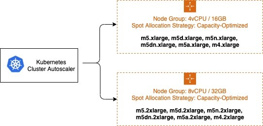
It's recommended to isolate On-Demand and Spot capacity into separate EC2 Auto Scaling groups. This is preferred over using a base capacity strategy because the scheduling properties are fundamentally different. Since Spot Instances be interrupted at any time (when EC2 needs the capacity back), users will often taint their preemptable nodes, requiring an explicit pod toleration to the preemption behavior. These taints result in different scheduling properties for the nodes, so they should be separated into multiple EC2 Auto Scaling Groups.
The Cluster Autoscaler has a concept of Expanders, which provide different strategies for selecting which Node Group to scale. The strategy --expander=least-waste is a good general purpose default, and if you're going to use multiple node groups for Spot Instance diversification (as described in the image above), it could help further cost-optimize the node groups by scaling the group which would be best utilized after the scaling activity.
Prioritizing a node group / ASG¶
You may also configure priority based autoscaling by using the Priority expander. --expander=priority enables your cluster to prioritize a node group / ASG, and if it is unable to scale for any reason, it will choose the next node group in the prioritized list. This is useful in situations where, for example, you want to use P3 instance types because their GPU provides optimal performance for your workload, but as a second option you can also use P2 instance types.
apiVersion: v1
kind: ConfigMap
metadata:
name: cluster-autoscaler-priority-expander
namespace: kube-system
data:
priorities: |-
10:
- .*p2-node-group.*
50:
- .*p3-node-group.*
Cluster Autoscaler will try to scale up the EC2 Auto Scaling group matching the name p3-node-group. If this operation does not succeed within --max-node-provision-time, it will attempt to scale an EC2 Auto Scaling group matching the name p2-node-group.
This value defaults to 15 minutes and can be reduced for more responsive node group selection, though if the value is too low, it can cause unnecessary scale outs.
Overprovisioning¶
The Cluster Autoscaler minimizes costs by ensuring that nodes are only added to the cluster when needed and are removed when unused. This significantly impacts deployment latency because many pods will be forced to wait for a node scale up before they can be scheduled. Nodes can take multiple minutes to become available, which can increase pod scheduling latency by an order of magnitude.
This can be mitigated using overprovisioning, which trades cost for scheduling latency. Overprovisioning is implemented using temporary pods with negative priority, which occupy space in the cluster. When newly created pods are unschedulable and have higher priority, the temporary pods will be preempted to make room. The temporary pods then become unschedulable, triggering the Cluster Autoscaler to scale out new overprovisioned nodes.
There are other less obvious benefits to overprovisioning. Without overprovisioning, one of the side effects of a highly utilized cluster is that pods will make less optimal scheduling decisions using the preferredDuringSchedulingIgnoredDuringExecution rule of Pod or Node Affinity. A common use case for this is to separate pods for a highly available application across availability zones using AntiAffinity. Overprovisioning can significantly increase the chance that a node of the correct zone is available.
The amount of overprovisioned capacity is a careful business decision for your organization. At its core, its a tradeoff between performance and cost. One way to make this decision is to determine your average scale up frequency and divide it by the amount of time it takes to scale up a new node. For example, if on average you require a new node every 30 seconds and EC2 takes 30 seconds to provision a new node, a single node of overprovisioning will ensure that theres always an extra node available, reducing scheduling latency by 30 seconds at the cost of a single additional EC2 Instance. To improve zonal scheduling decisions, overprovision a number of nodes equal to the number of availability zones in your EC2 Auto Scaling Group to ensure that the scheduler can select the best zone for incoming pods.
Prevent Scale Down Eviction¶
Some workloads are expensive to evict. Big data analysis, machine learning tasks, and test runners will eventually complete, but must be restarted if interrupted. The Cluster Autoscaler will attempt to scale down any node under the scale-down-utilization-threshold, which will interrupt any remaining pods on the node. This can be prevented by ensuring that pods that are expensive to evict are protected by a label recognized by the Cluster Autoscaler.
Ensure that:
- Expensive to evict pods have the annotation
cluster-autoscaler.kubernetes.io/safe-to-evict=false
Advanced Use Cases¶
EBS Volumes¶
Persistent storage is critical for building stateful applications, such as database or distributed caches. EBS Volumes enable this use case on Kubernetes, but are limited to a specific zone. These applications can be highly available if sharded across multiple AZs using a separate EBS Volume for each AZ. The Cluster Autoscaler can then balance the scaling of the EC2 Autoscaling Groups.
Ensure that:
- Node group balancing is enabled by setting
balance-similar-node-groups=true. - Node Groups are configured with identical settings except for different availability zones and EBS Volumes.
Co-Scheduling¶
Machine learning distributed training jobs benefit significantly from the minimized latency of same-zone node configurations. These workloads deploy multiple pods to a specific zone. This can be achieved by setting Pod Affinity for all co-scheduled pods or Node Affinity using topologyKey: failure-domain.beta.kubernetes.io/zone. The Cluster Autoscaler will then scale out a specific zone to match demands. You may wish to allocate multiple EC2 Auto Scaling Groups, one per availability zone to enable failover for the entire co-scheduled workload.
Ensure that:
- Node group balancing is enabled by setting
balance-similar-node-groups=false - Node Affinity and/or Pod Preemption is used when clusters include both Regional and Zonal Node Groups.
- Use Node Affinity to force or encourage regional pods to avoid zonal Node Groups, and vice versa.
- If zonal pods schedule onto regional node groups, this will result in imbalanced capacity for your regional pods.
- If your zonal workloads can tolerate disruption and relocation, configure Pod Preemption to enable regionally scaled pods to force preemption and rescheduling on a less contested zone.
Accelerators¶
Some clusters take advantage of specialized hardware accelerators such as GPU. When scaling out, the accelerator device plugin can take several minutes to advertise the resource to the cluster. The Cluster Autoscaler has simulated that this node will have the accelerator, but until the accelerator becomes ready and updates the nodes available resources, pending pods can not be scheduled on the node. This can result in repeated unnecessary scale out.
Additionally, nodes with accelerators and high CPU or Memory utilization will not be considered for scale down, even if the accelerator is unused. This behavior can be expensive due to the relative cost of accelerators. Instead, the Cluster Autoscaler can apply special rules to consider nodes for scale down if they have unoccupied accelerators.
To ensure the correct behavior for these cases, you can configure the kubelet on your accelerator nodes to label the node before it joins the cluster. The Cluster Autoscaler will use this label selector to trigger the accelerator optimized behavior.
Ensure that:
- The Kubelet for GPU nodes is configured with
--node-labels k8s.amazonaws.com/accelerator=$ACCELERATOR_TYPE - Nodes with Accelerators adhere to the identical scheduling properties rule noted above.
Scaling from 0¶
Cluster Autoscaler is capable of scaling Node Groups to and from zero, which can yield significant cost savings. It detects the CPU, memory, and GPU resources of an Auto Scaling Group by inspecting the InstanceType specified in its LaunchConfiguration or LaunchTemplate. Some pods require additional resources like WindowsENI or PrivateIPv4Address or specific NodeSelectors or Taints which cannot be discovered from the LaunchConfiguration. The Cluster Autoscaler can account for these factors by discovering them from tags on the EC2 Auto Scaling Group. For example:
Key: k8s.io/cluster-autoscaler/node-template/resources/$RESOURCE_NAME
Value: 5
Key: k8s.io/cluster-autoscaler/node-template/label/$LABEL_KEY
Value: $LABEL_VALUE
Key: k8s.io/cluster-autoscaler/node-template/taint/$TAINT_KEY
Value: NoSchedule
Note: Keep in mind, when scaling to zero your capacity is returned to EC2 and may be unavailable in the future.
Additional Parameters¶
There are many configuration options that can be used to tune the behavior and performance of the Cluster Autoscaler. A complete list of parameters is available on GitHub.
| Parameter | Description | Default |
| scan-interval | How often cluster is reevaluated for scale up or down | 10 seconds |
| max-empty-bulk-delete | Maximum number of empty nodes that can be deleted at the same time. | 10 |
| scale-down-delay-after-add | How long after scale up that scale down evaluation resumes | 10 minutes |
| scale-down-delay-after-delete | How long after node deletion that scale down evaluation resumes, defaults to scan-interval | scan-interval |
| scale-down-delay-after-failure | How long after scale down failure that scale down evaluation resumes | 3 minutes |
| scale-down-unneeded-time | How long a node should be unneeded before it is eligible for scale down | 10 minutes |
| scale-down-unready-time | How long an unready node should be unneeded before it is eligible for scale down | 20 minutes |
| scale-down-utilization-threshold | Node utilization level, defined as sum of requested resources divided by capacity, below which a node can be considered for scale down | 0.5 |
| scale-down-non-empty-candidates-count | Maximum number of non empty nodes considered in one iteration as candidates for scale down with drain. Lower value means better CA responsiveness but possible slower scale down latency. Higher value can affect CA performance with big clusters (hundreds of nodes). Set to non positive value to turn this heuristic off - CA will not limit the number of nodes it considers. | 30 |
| scale-down-candidates-pool-ratio | A ratio of nodes that are considered as additional non empty candidates for scale down when some candidates from previous iteration are no longer valid. Lower value means better CA responsiveness but possible slower scale down latency. Higher value can affect CA performance with big clusters (hundreds of nodes). Set to 1.0 to turn this heuristics off - CA will take all nodes as additional candidates. | 0.1 |
| scale-down-candidates-pool-min-count | Minimum number of nodes that are considered as additional non empty candidates for scale down when some candidates from previous iteration are no longer valid. When calculating the pool size for additional candidates we take max(#nodes * scale-down-candidates-pool-ratio, scale-down-candidates-pool-min-count) |
50 |
Additional Resources¶
This page contains a list of Cluster Autoscaler presentations and demos. If you'd like to add a presentation or demo here, please send a pull request.
| Presentation/Demo | Presenters |
|---|---|
| Autoscaling and Cost Optimization on Kubernetes: From 0 to 100 | Guy Templeton, Skyscanner & Jiaxin Shan, Amazon |
| SIG-Autoscaling Deep Dive | Maciek Pytel & Marcin Wielgus |
References¶
Ended: Cluster Autoscaling
Reliability
Amazon EKS Best Practices Guide for Reliability¶
This section provides guidance about making workloads running on EKS resilient and highly-available
How to use this guide¶
This guide is meant for developers and architects who want to develop and operate highly-available and fault-tolerant services in EKS. The guide is organized into different topic areas for easier consumption. Each topic starts with a brief overview, followed by a list of recommendations and best practices for the reliability of your EKS clusters.
Introduction¶
The reliability best practices for EKS have been grouped under the following topics:
- Applications
- Control Plane
- Data Plane
What makes a system reliable? If a system can function consistently and meet demands in spite of changes in its environment over a period of time, it can be called reliable. To achieve this, the system has to detect failures, automatically heal itself, and have the ability to scale based on demand.
Customers can use Kubernetes as a foundation to operate mission-critical applications and services reliably. But aside from incorporating container-based application design principles, running workloads reliably also requires a reliable infrastructure. In Kubernetes, infrastructure comprises the control plane and data plane.
EKS provides a production-grade Kubernetes control plane that is designed to be highly-available and fault-tolerant.
In EKS, AWS is responsible for the reliability of the Kubernetes control plane. EKS runs Kubernetes control plane across three availability zones in an AWS Region. It automatically manages the availability and scalability of the Kubernetes API servers and the etcd cluster.
The responsibility for the data planes reliability is shared between you, the customer, and AWS. EKS offers three options for Kubernetes data plane. Fargate, which is the most managed option, handles provisioning and scaling of the data plane. The second option, managed nodes groups, handles provisioning, and updates of the data plane. And finally, self-managed nodes is the least managed option for the data plane. The more AWS-managed data plane you use, the less responsibility you have
Managed node groups automate the provisioning and lifecycle management of EC2 nodes. You can use the EKS API (using EKS console, AWS API, AWS CLI, CloudFormation, Terraform, or eksctl), to create, scale, and upgrade managed nodes. Managed nodes run EKS-optimized Amazon Linux 2 EC2 instances in your account, and you can install custom software packages by enabling SSH access. When you provision managed nodes, they run as part of an EKS-managed Auto Scaling Group that can span multiple Availability Zones; you control this through the subnets you provide when creating managed nodes. EKS also automatically tags managed nodes so they can be used with Cluster Autoscaler.
Amazon EKS follows the shared responsibility model for CVEs and security patches on managed node groups. Because managed nodes run the Amazon EKS-optimized AMIs, Amazon EKS is responsible for building patched versions of these AMIs when bug fixes. However, you are responsible for deploying these patched AMI versions to your managed node groups.
EKS also manages updating the nodes although you have to initiate the update process. The process of updating managed node is explained in the EKS documentation.
If you run self-managed nodes, you can use Amazon EKS-optimized Linux AMI to create worker nodes. You are responsible for patching and upgrading the AMI and the nodes. It is a best practice to use eksctl, CloudFormation, or infrastructure as code tools to provision self-managed nodes because this will make it easy for you to upgrade self-managed nodes. Consider migrating to new nodes when updating worker nodes because the migration process taints the old node group as NoSchedule and drains the nodes after a new stack is ready to accept the existing pod workload. However, you can also perform an in-place upgrade of self-managed nodes.

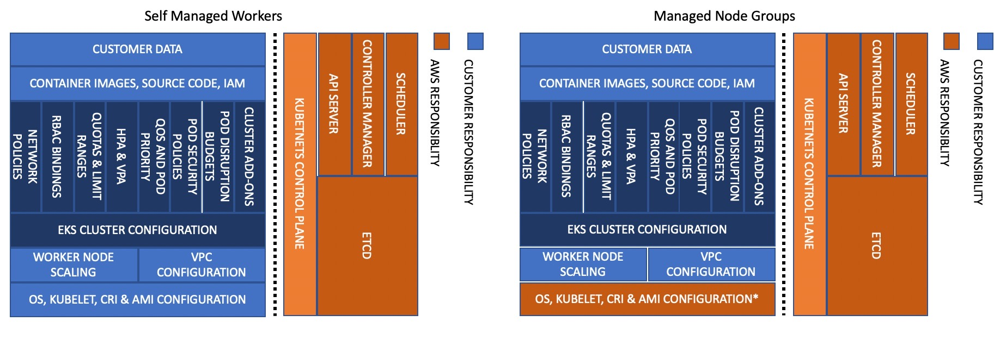
This guide includes a set of recommendations that you can use to improve the reliability of your EKS data plane, Kubernetes core components, and your applications.
Feedback¶
This guide is being released on GitHub to collect direct feedback and suggestions from the broader EKS/Kubernetes community. If you have a best practice that you feel we ought to include in the guide, please file an issue or submit a PR in the GitHub repository. We intend to update the guide periodically as new features are added to the service or when a new best practice evolves.
Running highly-available applications¶
Your customers expect your application to be always available, including when you're making changes and especially during spikes in traffic. A scalable and resilient architecture keeps your applications and services running without disruptions, which keeps your users happy. A scalable infrastructure grows and shrinks based on the needs of the business. Eliminating single points of failure is a critical step towards improving an applications availability and making it resilient.
With Kubernetes, you can operate your applications and run them in a highly-available and resilient fashion. Its declarative management ensures that once youve set up the application, Kubernetes will continuously try to match the current state with the desired state.
Recommendations¶
Avoid running singleton Pods¶
If your entire application runs in a single Pod, then your application will be unavailable if that Pod gets terminated. Instead of deploying applications using individual pods, create Deployments. If a Pod that is created by a Deployment fails or gets terminated, the Deployment controller will start a new pod to ensure the specified number of replica Pods are always running.
Run multiple replicas¶
Running multiple replicas Pods of an app using a Deployment helps it run in a highly-available manner. If one replica fails, the remaining replicas will still function, albeit at reduced capacity until Kubernetes creates another Pod to make up for the loss. Furthermore, you can use the Horizontal Pod Autoscaler to scale replicas automatically based on workload demand.
Schedule replicas across nodes¶
Running multiple replicas wont be very useful if all the replicas are running on the same node, and the node becomes unavailable. Consider using pod anti-affinity or pod topology spread constraints to spread replicas of a Deployment across multiple worker nodes.
You can further improve a typical applications reliability by running it across multiple AZs.
Using Pod anti-affinity rules¶
The manifest below tells Kubernetes scheduler to prefer to place pods on separate nodes and AZs. It doesnt require distinct nodes or AZ because if it did, then Kubernetes will not be able to schedule any pods once there is a pod running in each AZ. If your application requires just three replicas, you can use requiredDuringSchedulingIgnoredDuringExecution for topologyKey: topology.kubernetes.io/zone, and Kubernetes scheduler will not schedule two pods in the same AZ.
apiVersion: apps/v1
kind: Deployment
metadata:
name: spread-host-az
labels:
app: web-server
spec:
replicas: 4
selector:
matchLabels:
app: web-server
template:
metadata:
labels:
app: web-server
spec:
affinity:
podAntiAffinity:
preferredDuringSchedulingIgnoredDuringExecution:
- podAffinityTerm:
labelSelector:
matchExpressions:
- key: app
operator: In
values:
- web-server
topologyKey: topology.kubernetes.io/zone
weight: 100
- podAffinityTerm:
labelSelector:
matchExpressions:
- key: app
operator: In
values:
- web-server
topologyKey: kubernetes.io/hostname
weight: 99
containers:
- name: web-app
image: nginx:1.16-alpine
Using Pod topology spread constraints¶
Similar to pod anti-affinity rules, pod topology spread constraints allow you to make your application available across different failure (or topology) domains like hosts or AZs. This approach works very well when you're trying to ensure fault tolerance as well as availability by having multiple replicas in each of the different topology domains. Pod anti-affinity rules, on the other hand, can easily produce a result where you have a single replica in a topology domain because the pods with an anti-affinity toward each other have a repelling effect. In such cases, a single replica on a dedicated node isn't ideal for fault tolerance nor is it a good use of resources. With topology spread constraints, you have more control over the spread or distribution that the scheduler should try to apply across the topology domains. Here are some important properties to use in this approach:
1. The maxSkew is used to control or determine the maximum point to which things can be uneven across the topology domains. For example, if an application has 10 replicas and is deployed across 3 AZs, you can't get an even spread, but you can influence how uneven the distribution will be. In this case, the maxSkew can be anything between 1 and 10. A value of 1 means you can potentially end up with a spread like 4,3,3, 3,4,3 or 3,3,4 across the 3 AZs. In contrast, a value of 10 means you can potentially end up with a spread like 10,0,0, 0,10,0 or 0,0,10 across 3 AZs.
2. The topologyKey is a key for one of the node labels and defines the type of topology domain that should be used for the pod distribution. For example, a zonal spread would have the following key-value pair:
whenUnsatisfiable property is used to determine how you want the scheduler to respond if the desired constraints can't be satisfied.
4. The labelSelector is used to find matching pods so that the scheduler can be aware of them when deciding where to place pods in accordance with the constraints that you specify.
In addition to these above, there are other fields that you can read about further in the Kubernetes documentation.
apiVersion: apps/v1
kind: Deployment
metadata:
name: spread-host-az
labels:
app: web-server
spec:
replicas: 10
selector:
matchLabels:
app: web-server
template:
metadata:
labels:
app: web-server
spec:
topologySpreadConstraints:
- maxSkew: 1
topologyKey: "topology.kubernetes.io/zone"
whenUnsatisfiable: ScheduleAnyway
labelSelector:
matchLabels:
app: express-test
containers:
- name: web-app
image: nginx:1.16-alpine
Run Kubernetes Metrics Server¶
Install the Kubernetes metrics server to help scale your applications. Kubernetes autoscaler add-ons like HPA and VPA need to track metrics of applications to scale them. The metrics-server collects resource metrics that can be used to make scaling decisions. The metrics are collected from kubelets and served in Metrics API format.
The metrics server doesnt retain any data, and its not a monitoring solution. Its purpose is to expose CPU and memory usage metrics to other systems. If you want to track your application's state over time, you need a monitoring tool like Prometheus or Amazon CloudWatch.
Follow the EKS documentation to install metrics-server in your EKS cluster.
Horizontal Pod Autoscaler (HPA)¶
HPA can automatically scale your application in response to demand and help you avoid impacting your customers during peak traffic. It is implemented as a control loop in Kubernetes that periodically queries metrics from APIs that provide resource metrics.
HPA can retrieve metrics from the following APIs:
1. metrics.k8s.io also known as Resource Metrics API Provides CPU and memory usage for pods
2. custom.metrics.k8s.io Provides metrics from other metric collectors like Prometheus; these metrics are internal to your Kubernetes cluster.
3. external.metrics.k8s.io Provides metrics that are external to your Kubernetes cluster (E.g., SQS Queue Depth, ELB latency).
You must use one of these three APIs to provide the metric to scale your application.
Scaling applications based on custom or external metrics¶
You can use custom or external metrics to scale your application on metrics other than CPU or memory utilization. Custom Metrics API servers provide the custom-metrics.k8s.io API that HPA can use to autoscale applications.
You can use the Prometheus Adapter for Kubernetes Metrics APIs to collect metrics from Prometheus and use with the HPA. In this case, Prometheus adapter will expose Prometheus metrics in Metrics API format.
Once you deploy the Prometheus Adapter, you can query custom metrics using kubectl.
kubectl get raw /apis/custom.metrics.k8s.io/v1beta1/
External metrics, as the name suggests, provide the Horizontal Pod Autoscaler the ability to scale deployments using metrics that are external to the Kubernetes cluster. For example, in batch processing workloads, it is common to scale the number of replicas based on the number of jobs in flight in an SQS queue.
To autoscale a Deployment using a CloudWatch metric, for example, scaling a batch-processor application based on SQS queue depth, you can use k8s-cloudwatch-adapter. k8s-cloudwatch-adapter is a community project and not maintained by AWS.
Vertical Pod Autoscaler (VPA)¶
VPA automatically adjusts the CPU and memory reservation for your Pods to help you right-size your applications. For applications that need to be scaled vertically - which is done by increasing resource allocation - you can use VPA to automatically scale Pod replicas or provide scaling recommendations.
Your application may become temporarily unavailable if VPA needs to scale it because VPAs current implementation does not perform in-place adjustments to Pods; instead, it will recreate the Pod that needs to be scaled.
EKS Documentation includes a walkthrough for setting up VPA.
Fairwinds Goldilocks project provides a dashboard to visualize VPA recommendations for CPU and memory requests and limits. Its VPA update mode allows you to auto-scale Pods based on VPA recommendations.
Updating applications¶
Modern applications require rapid innovation with a high degree of stability and availability. Kubernetes gives you the tools to update your applications continuously without disrupting your customers.
Lets look at some of the best practices that make it possible to quickly deploy changes without sacrificing availability.
Have a mechanism to perform rollbacks¶
Having an undo button can evade disasters. It is a best practice to test deployments in a separate lower environment (test or development environment) before updating the production cluster. Using a CI/CD pipeline can help you automate and test deployments. With a continuous deployment pipeline, you can quickly revert to the older version if the upgrade happens to be defective.
You can use Deployments to update a running application. This is typically done by updating the container image. You can use kubectl to update a Deployment like this:
The --record argument record the changes to the Deployment and helps you if you need to perform a rollback. kubectl rollout history deployment shows you the recorded changes to Deployments in your cluster. You can rollback a change using kubectl rollout undo deployment <DEPLOYMENT_NAME>.
By default, when you update a Deployment that requires a recreation of pods, Deployment will perform a rolling update. In other words, Kubernetes will only update a portion of the running pods in a Deployment and not all the Pods at once. You can control how Kubernetes performs rolling updates through RollingUpdateStrategy property.
When performing a rolling update of a Deployment, you can use the Max Unavailable property to specify the maximum number of Pods that can be unavailable during the update. The Max Surge property of Deployment allows you to set the maximum number of Pods that can be created over the desired number of Pods.
Consider adjusting max unavailable to ensure that a rollout doesnt disrupt your customers. For example, Kubernetes sets 25% max unavailable by default, which means if you have 100 Pods, you may have only 75 Pods actively working during a rollout. If your application needs a minimum of 80 Pods, this rollout can be disruptive. Instead, you can set max unavailable to 20% to ensure that there are at least 80 functional Pods throughout the rollout.
Use blue/green deployments¶
Changes are inherently risky, but changes that cannot be undone can be potentially catastrophic. Change procedures that allow you to effectively turn back time through a rollback make enhancements and experimentation safer. Blue/green deployments give you a method to quickly retract the changes if things go wrong. In this deployment strategy, you create an environment for the new version. This environment is identical to the current version of the application being updated. Once the new environment is provisioned, traffic is routed to the new environment. If the new version produces the desired results without generating errors, the old environment is terminated. Otherwise, traffic is restored to the old version.
You can perform blue/green deployments in Kubernetes by creating a new Deployment that is identical to the existing versions Deployment. Once you verify that the Pods in the new Deployment are running without errors, you can start sending traffic to the new Deployment by changing the selector spec in the Service that routes traffic to your applications Pods.
Many continuous integration tools such as Flux, Jenkins, and Spinnaker let you automate blue/green deployments. AWS Containers Blog includes a walkthrough using AWS Load Balancer Controller: Using AWS Load Balancer Controller for blue/green deployment, canary deployment and A/B testing
Use Canary deployments¶
Canary deployments are a variant of blue/green deployments that can significantly remove risk from changes. In this deployment strategy, you create a new Deployment with fewer Pods alongside your old Deployment, and divert a small percentage of traffic to the new Deployment. If metrics indicate that the new version is performing as well or better than the existing version, you progressively increase traffic to the new Deployment while scaling it up until all traffic is diverted to the new Deployment. If there's an issue, you can route all traffic to the old Deployment and stop sending traffic to the new Deployment.
Although Kubernetes offers no native way to perform canary deployments, you can use tools such as Flagger with Istio or App Mesh.
Health checks and self-healing¶
No software is bug-free, but Kubernetes can help you to minimize the impact of software failures. In the past, if an application crashed, someone had to remediate the situation by restarting the application manually. Kubernetes gives you the ability to detect software failures in your Pods and automatically replace them with new replicas. With Kubernetes you can monitor the health of your applications and automatically replace unhealthy instances.
Kubernetes supports three types of health-checks:
- Liveness probe
- Startup probe (supported in Kubernetes version 1.16+)
- Readiness probe
Kubelet, the Kubernetes agent, is responsible for running all the above-mentioned checks. Kubelet can check a Pods' health in three ways: kubelet can either run a shell command inside a Pod's container, send an HTTP GET request to its container, or open a TCP socket on a specified port.
If you choose an exec-based probe, which runs a shell script inside a container, ensure that the shell command exits before the timeoutSeconds value expires. Otherwise, your node will have <defunct> processes, leading to node failure.
Recommendations¶
Use Liveness Probe to remove unhealthy pods¶
The Liveness probe can detect deadlock conditions where the process continues to run, but the application becomes unresponsive. For example, if you are running a web service that listens on port 80, you can configure a Liveness probe to send an HTTP GET request on Pods port 80. Kubelet will periodically send a GET request to the Pod and expect a response; if the Pod responds between 200-399 then the kubelet considers that Pod is healthy; otherwise, the Pod will be marked as unhealthy. If a Pod fails health-checks continuously, the kubelet will terminate it.
You can use initialDelaySeconds to delay the first probe.
When using the Liveness Probe, ensure that your application doesnt run into a situation in which all Pods simultaneously fail the Liveness Probe because Kubernetes will try to replace all your Pods, which will render your application offline. Furthermore, Kubernetes will continue to create new Pods that will also fail Liveness Probes, putting unnecessary strain on the control plane. Avoid configuring the Liveness Probe to depend on an a factor that is external to your Pod, for example, a external database. In other words, a non-responsive external-to-your-Pod database shouldnt make your Pods fail their Liveness Probes.
Sandor Szcss post LIVENESS PROBES ARE DANGEROUS describes problems that can be caused by misconfigured probes.
Use Startup Probe for applications that take longer to start¶
When your app needs additional time to startup, you can use the Startup Probe to delay the Liveness and Readiness Probe. For example, a Java app that needs to hydrate cache from a database may need up to two minutes before it is fully functional. Any Liveness or Readiness Probe until it becomes fully functional might fail. Configuring a Startup Probe will allow the Java app to become healthy before Liveness or Readiness Probe are executed.
Until the Startup Probe succeeds, all the other Probes are disabled. You can define the maximum time Kubernetes should wait for application startup. If, after the maximum configured time, the Pod still fails Startup Probes, it will be terminated, and a new Pod will be created.
The Startup Probe is similar to the Liveness Probe -- if they fail, the Pod is recreated. As Ricardo A. explains in his post Fantastic Probes And How To Configure Them, Startup Probes should be used when the startup time of an application is unpredictable. If you know your application needs ten seconds to start, you should use Liveness/Readiness Probe with initialDelaySeconds instead.
Use Readiness Probe to detect partial unavailability¶
While the Liveness probe detects failures in an app that are resolved by terminating the Pod (hence, restarting the app), Readiness Probe detects conditions where the app may be temporarily unavailable. In these situations, the app may become temporarily unresponsive; however, it is expected to be healthy again once this operation completes.
For example, during intense disk I/O operations, applications may be temporarily unavailable to handle requests. Here, terminating the applications Pod is not a remedy; at the same time, additional requests sent to the Pod can fail.
You can use the Readiness Probe to detect temporary unavailability in your app and stop sending requests to its Pod until it becomes functional again. Unlike Liveness Probe, where a failure would result in a recreation of Pod, a failed Readiness Probe would mean that Pod will not receive any traffic from Kubernetes Service. When the Readiness Probe succeeds, Pod will resume receiving traffic from Service.
Just like the Liveness Probe, avoid configuring Readiness Probes that depend on a resource thats external to the Pod (such as a database). Heres a scenario where a poorly configured Readiness can render the application nonfunctional - if a Pods Readiness Probe fails when the apps database is unreachable, other Pod replicas will also fail simultaneously since they share the same health-check criteria. Setting the probe in this way will ensure that whenever the database is unavailable, the Pods Readiness Probes will fail, and Kubernetes will stop sending traffic all Pods.
A side-effect of using Readiness Probes is that they can increase the time it takes to update Deployments. New replicas will not receive traffic unless Readiness Probes are successful; until then, old replicas will continue to receive traffic.
Dealing with disruptions¶
Pods have a finite lifetime - even if you have long-running Pods, its prudent to ensure Pods terminate correctly when the time comes. Depending on your upgrade strategy, Kubernetes cluster upgrades may require you to create new worker nodes, which requires all Pods to be recreated on newer nodes. Proper termination handling and Pod Disruption Budgets can help you avoid service disruptions as Pods are removed from older nodes and recreated on newer nodes.
The preferred way to upgrade worker nodes is by creating new worker nodes and terminating old ones. Before terminating worker nodes, you should drain it. When a worker node is drained, all its pods are safely evicted. Safely is a key word here; when pods on a worker are evicted, they are not simply sent a SIGKILL signal. Instead, a SIGTERM signal is sent to the main process (PID 1) of each container in the Pods being evicted. After the SIGTERM signal is sent, Kubernetes will give the process some time (grace period) before a SIGKILL signal is sent. This grace period is 30 seconds by default; you can override the default by using grace-period flag in kubectl or declare terminationGracePeriodSeconds in your Podspec.
kubectl delete pod <pod name> grace-period=<seconds>
It is common to have containers in which the main process doesnt have PID 1. Consider this Python-based sample container:
$ kubectl exec python-app -it ps
PID USER TIME COMMAND
1 root 0:00 {script.sh} /bin/sh ./script.sh
5 root 0:00 python app.py
In this example, the shell script receives SIGTERM, the main process, which happens to be a Python application in this example, doesnt get a SIGTERM signal. When the Pod is terminated, the Python application will be killed abruptly. This can be remediated by changing the ENTRYPOINT of the container to launch the Python application. Alternatively, you can use a tool like dumb-init to ensure that your application can handle signals.
You can also use Container hooks to execute a script or an HTTP request at container start or stop. The PreStop hook action runs before the container receives a SIGTERM signal and must complete before this signal is sent. The terminationGracePeriodSeconds value applies from when the PreStop hook action begins executing, not when the SIGTERM signal is sent.
Recommendations¶
Protect critical workload with Pod Disruption Budgets¶
Pod Disruption Budget or PDB can temporarily halt the eviction process if the number of replicas of an application falls below the declared threshold. The eviction process will continue once the number of available replicas is over the threshold. You can use PDB to declare the minAvailable and maxUnavailable number of replicas. For example, if you want at least three copies of your app to be available, you can create a PDB.
apiVersion: policy/v1beta1
kind: PodDisruptionBudget
metadata:
name: my-svc-pdb
spec:
minAvailable: 3
selector:
matchLabels:
app: my-svc
The above PDB policy tells Kubernetes to halt the eviction process until three or more replicas are available. Node draining respects PodDisruptionBudgets. During an EKS managed node group upgrade, nodes are drained with a fifteen-minute timeout. After fifteen minutes, if the update is not forced (the option is called Rolling update in the EKS console), the update fails. If the update is forced, the pods are deleted.
For self-managed nodes, you can also use tools like AWS Node Termination Handler, which ensures that the Kubernetes control plane responds appropriately to events that can cause your EC2 instance to become unavailable, such as EC2 maintenance events and EC2 Spot interruptions. It uses the Kubernetes API to cordon the node to ensure no new Pods are scheduled, then drains it, terminating any running Pods.
You can use Pod anti-affinity to schedule a Deployments Pods on different nodes and avoid PDB related delays during node upgrades.
Practice chaos engineering¶
Chaos Engineering is the discipline of experimenting on a distributed system in order to build confidence in the systems capability to withstand turbulent conditions in production.
In his blog, Dominik Tornow explains that Kubernetes is a declarative system where the user supplies a representation of the desired state of the system to the system. The system then considers the current state and the desired state to determine the sequence of commands to transition from the current state to the desired state. This means Kubernetes always stores the desired state and if the system deviates, Kubernetes will take action to restore the state. For example, if a worker node becomes unavailable, Kubernetes will reschedule the Pods onto another worker node. Similarly, if a replica crashes, the Deployment Contoller will create a new replica. In this way, Kubernetes controllers automatically fix failures.
Chaos engineering tools like Gremlin help you test the resiliency of your Kubernetes cluster and identify single points of failure. Tools that introduce artificial chaos in your cluster (and beyond) can uncover systemic weaknesses, present an opportunity to identify bottlenecks and misconfigurations, and rectify problems in a controlled environment. The Chaos Engineering philosophy advocates breaking things on purpose and stress testing infrastructure to minimize unanticipated downtime.
Use a Service Mesh¶
You can use a service mesh to improve your applications resiliency. Service meshes enable service-to-service communication and increase the observability of your microservices network. Most service mesh products work by having a small network proxy run alongside each service that intercepts and inspects the applications network traffic. You can place your application in a mesh without modifying your application. Using service proxys built-in features, you can have it generate network statistics, create access logs, and add HTTP headers to outbound requests for distributed tracing.
A service mesh can help you make your microservices more resilient with features like automatic request retries, timeouts, circuit-breaking, and rate-limiting.
If you operate multiple clusters, you can use a service mesh to enable cross-cluster service-to-service communication.
Service Meshes¶
Observability¶
Observability is an umbrella term that includes monitoring, logging, and tracing. Microservices based applications are distributed by nature. Unlike monolithic applications where monitoring a single system is sufficient, in a distributed application architecture, you need to monitor each components performance. You can use cluster-level monitoring, logging, and distributed tracing systems to identify issues in your cluster before they disrupt your customers.
Kubernetes built-in tools for troubleshooting and monitoring are limited. The metrics-server collects resource metrics and stores them in memory but doesnt persist them. You can view the logs of a Pod using kubectl, but Kubernetes doesn't automatically retain logs. And the implementation of distributed tracing is done either at the application code level or using services meshes.
Kubernetes' extensibility shines here. Kubernetes allows you to bring your preferred centralized monitoring, logging, and tracing solution.
Recommendations¶
Monitor your applications¶
The number of metrics you need to monitor in modern applications is growing continuously. It helps if you have an automated way to track your applications so you can focus on solving your customers challenges. Cluster-wide monitoring tools like Prometheus or CloudWatch Container Insights can monitor your cluster and workload and provide you signals when, or preferably, before things go wrong.
Monitoring tools allow you to create alerts that your operations team can subscribe to. Consider rules to activate alarms for events that can, when exacerbated, lead to an outage or impact application performance.
If youre unclear on which metrics you should monitor, you can take inspiration from these methods:
- RED method. Stands for requests, errors, and duration.
- USE method. Stands for utilization, saturation, and errors.
Sysdigs post Best practices for alerting on Kubernetes includes a comprehensive list of components that can impact the availability of your applications.
Use Prometheus client library to expose application metrics¶
In addition to monitoring the state of the application and aggregating standard metrics, you can also use the Prometheus client library to expose application-specific custom metrics to improve the application's observability.
Use centralized logging tools to collect and persist logs¶
Logging in EKS falls under two categories: control plane logs and application logs. EKS control plane logging provides audit and diagnostic logs directly from the control plane to CloudWatch Logs in your account. Application logs are logs produced by Pods running inside your cluster. Application logs include logs produced by Pods that run the business logic applications and Kubernetes system components such as CoreDNS, Cluster Autoscaler, Prometheus, etc.
EKS provide five types of control plane logs:
- Kubernetes API server component logs
- Audit
- Authenticator
- Controller manager
- Scheduler
The controller manager and scheduler logs can help diagnose control plane problems such as bottlenecks and errors. By default, EKS control plane logs arent sent to CloudWatch Logs. You can enable control plane logging and select the types of EKS control plane logs youd like to capture for each cluster in your account
Collecting application logs requires installing a log aggregator tool like Fluent Bit, Fluentd, or CloudWatch Container Insights in your cluster.
Kubernetes log aggregator tools run as DaemonSets and scrape container logs from nodes. Application logs are then sent to a centralized destination for storage. For example, CloudWatch Container Insights can use either Fluent Bit or Fluentd to collect logs and ship them to CloudWatch Logs for storage. Fluent Bit and Fluentd support many popular log analytics systems such as Elasticsearch and InfluxDB giving you the ability to change the storage backend for your logs by modifying Fluent bit or Fluentds log configuration.
Use a distributed tracing system to identify bottlenecks¶
A typical modern application has components distributed over the network, and its reliability depends on the proper functioning of each of the components that make up the application. You can use a distributed tracing solution to understand how requests flow and how systems communicate. Traces can show you where bottlenecks exist in your application network and prevent problems that can cause cascading failures.
You have two options to implement tracing in your applications: you can either implement distributed tracing at the code level using shared libraries or use a service mesh.
Implementing tracing at the code level can be disadvantageous. In this method, you have to make changes to your code. This is further complicated if you have polyglot applications. Youre also responsible for maintaining yet another library, across your services.
Service Meshes like LinkerD, Istio, and AWS App Mesh can be used to implement distributed tracing in your application with minimal changes to the application code. You can use service mesh to standardize metrics generation, logging, and tracing.
Tracing tools like AWS X-Ray, Jaeger support both shared library and service mesh implementations.
Consider using a tracing tool like AWS X-Ray or Jaeger that supports both (shared library and service mesh) implementations so you will not have to switch tools if you later adopt service mesh.
EKS Control Plane¶
Amazon Elastic Kubernetes Service (EKS) is a managed Kubernetes service that makes it easy for you to run Kubernetes on AWS without needing to install, operate, and maintain your own Kubernetes control plane or worker nodes. It runs upstream Kubernetes and is certified Kubernetes conformant. This conformance ensures that EKS supports the Kubernetes APIs, just like the open-source community version that you can install on EC2 or on-premises. Existing applications running on upstream Kubernetes are compatible with Amazon EKS.
EKS automatically manages the availability and scalability of the Kubernetes control plane nodes, and it automatically replaces unhealthy control plane nodes.
EKS Architecture¶
EKS architecture is designed to eliminate any single points of failure that may compromise the availability and durability of the Kubernetes control plane.
The Kubernetes control plane managed by EKS runs inside an EKS managed VPC. The EKS control plane comprises the Kubernetes API server nodes, etcd cluster. Kubernetes API server nodes that run components like the API server, scheduler, and kube-controller-manager run in an auto-scaling group. EKS runs a minimum of two API server nodes in distinct Availability Zones (AZs) within in AWS region. Likewise, for durability, the etcd server nodes also run in an auto-scaling group that spans three AZs. EKS runs a NAT Gateway in each AZ, and API servers and etcd servers run in a private subnet. This architecture ensures that an event in a single AZ doesnt affect the EKS cluster's availability.
When you create a new cluster, Amazon EKS creates a highly-available endpoint for the managed Kubernetes API server that you use to communicate with your cluster (using tools like kubectl). The managed endpoint uses NLB to load balance Kubernetes API servers. EKS also provisions two ENIs in different AZs to facilitate communication to your worker nodes.

You can configure whether your Kubernetes clusters API server is reachable from the public internet (using the public endpoint) or through your VPC (using the EKS-managed ENIs) or both.
Whether users and worker nodes connect to the API server using the public endpoint or the EKS-managed ENI, there are redundant paths for connection.
Recommendations¶
Monitor Control Plane Metrics¶
Monitoring Kubernetes API metrics can give you insights into control plane performance and identify issues. An unhealthy control plane can compromise the availability of the workloads running inside the cluster. For example, poorly written controllers can overload the API servers, affecting your application's availability.
Kubernetes exposes control plane metrics at the /metrics endpoint.
You can view the metrics exposed using kubectl:
These metrics are represented in a Prometheus text format.
You can use Prometheus to collect and store these metrics. In May 2020, CloudWatch added support for monitoring Prometheus metrics in CloudWatch Container Insights. So you can also use Amazon CloudWatch to monitor the EKS control plane. You can use Tutorial for Adding a New Prometheus Scrape Target: Prometheus KPI Server Metrics to collect metrics and create CloudWatch dashboard to monitor your clusters control plane.
You can find Kubernetes API server metrics here. For example, apiserver_request_duration_seconds can indicate how long API requests are taking to run.
Consider monitoring these control plane metrics:
API Server¶
| Metric | Description |
|---|---|
apiserver_request_total |
Counter of apiserver requests broken out for each verb, dry run value, group, version, resource, scope, component, and HTTP response code. |
apiserver_request_duration_seconds* |
Response latency distribution in seconds for each verb, dry run value, group, version, resource, subresource, scope, and component. |
apiserver_admission_controller_admission_duration_seconds |
Admission controller latency histogram in seconds, identified by name and broken out for each operation and API resource and type (validate or admit). |
apiserver_admission_webhook_rejection_count |
Count of admission webhook rejections. Identified by name, operation, rejection_code, type (validating or admit), error_type (calling_webhook_error, apiserver_internal_error, no_error) |
rest_client_request_duration_seconds |
Request latency in seconds. Broken down by verb and URL. |
rest_client_requests_total |
Number of HTTP requests, partitioned by status code, method, and host. |
etcd¶
| Metric | Description |
|---|---|
etcd_request_duration_seconds |
Etcd request latency in seconds for each operation and object type. |
etcd_db_total_size_in_bytes or apiserver_storage_db_total_size_in_bytes (starting with EKS v1.26) or apiserver_storage_size_bytes (starting with EKS v1.28) |
Etcd database size. |
Consider using the Kubernetes Monitoring Overview Dashboard to visualize and monitor Kubernetes API server requests and latency and etcd latency metrics.
The following Prometheus query can be used to monitor the current size of etcd. The query assumes there is job called kube-apiserver for scraping metrics from API metrics endpoint and the EKS version is below v1.26.
Attention
When the database size limit is exceeded, etcd emits a no space alarm and stops taking further write requests. In other words, the cluster becomes read-only, and all requests to mutate objects such as creating new pods, scaling deployments, etc., will be rejected by the clusters API server.
Cluster Authentication¶
EKS currently supports two types of authentication: bearer/service account tokens and IAM authentication which uses webhook token authentication. When users call the Kubernetes API, a webhook passes an authentication token included in the request to IAM. The token, a base 64 signed URL, is generated by the AWS Command Line Interface (AWS CLI).
The IAM user or role that creates the EKS Cluster automatically gets full access to the cluster. You can manage access to the EKS cluster by editing the aws-auth configmap.
If you misconfigure the aws-auth configmap and lose access to the cluster, you can still use the cluster creators user or role to access your EKS cluster.
In the unlikely event that you cannot use the IAM service in the AWS region, you can also use the Kubernetes service accounts bearer token to manage the cluster.
Create a super-admin account that is permitted to perform all actions in the cluster:
Create a role binding that gives super-admin cluster-admin role:
kubectl create clusterrolebinding super-admin-rb --clusterrole=cluster-admin --serviceaccount=kube-system:super-admin
Get service accounts secret:
SECRET_NAME=`kubectl -n kube-system get serviceaccount/super-admin -o jsonpath='{.secrets[0].name}'`
Get token associated with the secret:
Add service account and token to kubeconfig:
Set the current-context in kubeconfig to use super-admin account:
Final kubeconfig should look like this:
apiVersion: v1
clusters:
- cluster:
certificate-authority-data:<REDACTED>
server: https://<CLUSTER>.gr7.us-west-2.eks.amazonaws.com
name: arn:aws:eks:us-west-2:<account number>:cluster/<cluster name>
contexts:
- context:
cluster: arn:aws:eks:us-west-2:<account number>:cluster/<cluster name>
user: super-admin
name: arn:aws:eks:us-west-2:<account number>:cluster/<cluster name>
current-context: arn:aws:eks:us-west-2:<account number>:cluster/<cluster name>
kind: Config
preferences: {}
users:
#- name: arn:aws:eks:us-west-2:<account number>:cluster/<cluster name>
# user:
# exec:
# apiVersion: client.authentication.k8s.io/v1alpha1
# args:
# - --region
# - us-west-2
# - eks
# - get-token
# - --cluster-name
# - <<cluster name>>
# command: aws
# env: null
- name: super-admin
user:
token: <<super-admin sas secret>>
Admission Webhooks¶
Kubernetes has two types of admission webhooks: validating admission webhooks and mutating admission webhooks. These allow a user to extend the kubernetes API and validate or mutate objects before they are accepted by the API. Poor configurations of these webhooks can distabilize the EKS control plane by blocking cluster critical operations.
In order to avoid impacting cluster critical operations either avoid setting "catch-all" webhooks like the following:
- name: "pod-policy.example.com"
rules:
- apiGroups: ["*"]
apiVersions: ["*"]
operations: ["*"]
resources: ["*"]
scope: "*"
Or make sure the webhook has a fail open policy with a timeout shorter than 30 seconds to ensure that if your webhook is unavailable it will not impair cluster critical workloads.
Block Pods with unsafe sysctls¶
Sysctl is a Linux utility that allows users to modify kernel parameters during runtime. These kernel parameters control various aspects of the operating system's behavior, such as network, file system, virtual memory, and process management.
Kubernetes allows assigning sysctl profiles for Pods. Kubernetes categorizes systcls as safe and unsafe. Safe sysctls are namespaced in the container or Pod, and setting them doesnt impact other Pods on the node or the node itself. In contrast, unsafe sysctls are disabled by default since they can potentially disrupt other Pods or make the node unstable.
As unsafe sysctls are disabled by default, the kubelet will not create a Pod with unsafe sysctl profile. If you create such a Pod, the scheduler will repeatedly assign such Pods to nodes, while the node fails to launch it. This infinite loop ultimately strains the cluster control plane, making the cluster unstable.
Consider using OPA Gatekeeper or Kyverno to reject Pods with unsafe sysctls.
Handling Cluster Upgrades¶
Since April 2021, Kubernetes release cycle has been changed from four releases a year (once a quarter) to three releases a year. A new minor version (like 1.21 or 1.22) is released approximately every fifteen weeks. Starting with Kubernetes 1.19, each minor version is supported for approximately twelve months after it's first released. With the advent of Kubernetes v1.28, the compatibility skew between the control plane and worker nodes has expanded from n-2 to n-3 minor versions. To learn more, see Best Practices for Cluster Upgrades.
Running large clusters¶
EKS actively monitors the load on control plane instances and automatically scales them to ensure high performance. However, you should account for potential performance issues and limits within Kubernetes and quotas in AWS services when running large clusters.
- Clusters with more than 1000 services may experience network latency with using
kube-proxyiniptablesmode according to the tests performed by the ProjectCalico team. The solution is to switch to runningkube-proxyinipvsmode. - You may also experience EC2 API request throttling if the CNI needs to request IP addresses for Pods or if you need to create new EC2 instances frequently. You can reduce calls EC2 API by configuring the CNI to cache IP addresses. You can use larger EC2 instance types to reduce EC2 scaling events.
Know limits and service quotas¶
AWS sets service limits (an upper limit on the number of each resource your team can request) to protect you from accidentally over-provisioning resources. Amazon EKS Service Quotas lists the service limits. There are two types of limits, soft limits, that can be changed using AWS Service Quotas. Hard limits cannot be changed. You should consider these values when architecting your applications. Consider reviewing these service limits periodically and incorporate them during in your application design.
- Besides the limits from orchestration engines, there are limits in other AWS services, such as Elastic Load Balancing (ELB) and Amazon VPC, that may affect your application performance.
- More about EC2 limits here: EC2 service limits.
- Each EC2 instance limits the number of packets that can be sent to the Amazon-provided DNS server to a maximum of 1024 packets per second per network interface.
- In EKS environment, etcd storage limit is 8 GiB as per upstream guidance. Please monitor metric
etcd_db_total_size_in_bytesto track etcd db size. You can refer to alert rulesetcdBackendQuotaLowSpaceandetcdExcessiveDatabaseGrowthto setup this monitoring.
Additional Resources:¶
EKS Data Plane¶
To operate high-available and resilient applications, you need a highly-available and resilient data plane. An elastic data plane ensures that Kubernetes can scale and heal your applications automatically. A resilient data plane consists of two or more worker nodes, can grow and shrink with the workload, and automatically recover from failures.
You have two choices for worker nodes with EKS: EC2 instances and Fargate. If you choose EC2 instances, you can manage the worker nodes yourself or use EKS managed node groups. You can have a cluster with a mix of managed, self-managed worker nodes, and Fargate.
EKS on Fargate offers the easiest path to a resilient data plane. Fargate runs each Pod in an isolated compute environment. Each Pod running on Fargate gets its own worker node. Fargate automatically scales the data plane as Kubernetes scales pods. You can scale both the data plane and your workload by using the horizontal pod autoscaler.
The preferred way to scale EC2 worker nodes is by using Kubernetes Cluster Autoscaler, EC2 Auto Scaling groups or community projects like Atlassians Escalator.
Recommendations¶
Use EC2 Auto Scaling Groups to create worker nodes¶
It is a best practice to create worker nodes using EC2 Auto Scaling groups instead of creating individual EC2 instances and joining them to the cluster. Auto Scaling Groups will automatically replace any terminated or failed nodes ensuring that the cluster always has the capacity to run your workload.
Use Kubernetes Cluster Autoscaler to scale nodes¶
Cluster Autoscaler adjusts the size of the data plane when there are pods that cannot be run because the cluster has insufficient resources, and adding another worker node would help. Although Cluster Autoscaler is a reactive process, it waits until pods are in Pending state due to insufficient capacity in the cluster. When such an event occurs, it adds EC2 instances to the cluster. Whenever the cluster runs out of capacity, new replicas - or new pods - will be unavailable (in Pending state) until worker nodes are added. This delay may impact your applications' reliability if the data plane cannot scale fast enough to meet the demands of the workload. If a worker node is consistently underutilized and all of its pods can be scheduled on other worker nodes, Cluster Autoscaler terminates it.
Configure over-provisioning with Cluster Autoscaler¶
Cluster Autoscaler triggers a scale-up of the data-plane when Pods in the cluster are already Pending. Hence, there may be a delay between the time your application needs more replicas, and when it, in fact, gets more replicas. An option to account for this possible delay is through adding more than required replicas, inflating the number of replicas for the application.
Another pattern that Cluster Autoscaler recommends uses pause Pods and the Priority Preemption feature. The pause Pod runs a pause container, which as the name suggests, does nothing but acts as a placeholder for compute capacity that can be used by other Pods in your cluster. Because it runs with a very low assigned priority, the pause Pod gets evicted from the node when another Pod needs to be created, and the cluster doesnt have available capacity. The Kubernetes Scheduler notices the eviction of the pause Pod and tries to reschedule it. But since the cluster is running at capacity, the pause Pod remains Pending, to which the Cluster Autoscaler reacts by adding nodes.
A Helm chart is available to install cluster overprovisioner.
Using Cluster Autoscaler with multiple Auto Scaling Groups¶
Run the Cluster Autoscaler with the --node-group-auto-discovery flag enabled. Doing so will allow the Cluster Autoscaler to find all autoscaling groups that include a particular defined tag and prevents the need to define and maintain each autoscaling group in the manifest.
Using Cluster Autoscaler with local storage¶
By default, the Cluster Autoscaler does not scale-down nodes that have pods deployed with local storage attached. Set the --skip-nodes-with-local-storage flag to false to allow Cluster Autoscaler to scale-down these nodes.
Spread worker nodes and workload across multiple AZs¶
You can protect your workloads from failures in an individual AZ by running worker nodes and pods in multiple AZs. You can control the AZ the worker nodes are created in using the subnets you create the nodes in.
If you are using Kubernetes 1.18+, the recommended method for spreading pods across AZs is to use Topology Spread Constraints for Pods.
The deployment below spreads pods across AZs if possible, letting those pods run anyway if not:
apiVersion: apps/v1
kind: Deployment
metadata:
name: web-server
spec:
replicas: 3
selector:
matchLabels:
app: web-server
template:
metadata:
labels:
app: web-server
spec:
topologySpreadConstraints:
- maxSkew: 1
whenUnsatisfiable: ScheduleAnyway
topologyKey: topology.kubernetes.io/zone
labelSelector:
matchLabels:
app: web-server
containers:
- name: web-app
image: nginx
resources:
requests:
cpu: 1
Note
kube-scheduler is only aware of topology domains via nodes that exist with those labels. If the above deployment is deployed to a cluster with nodes only in a single zone, all of the pods will schedule on those nodes as kube-scheduler isn't aware of the other zones. For this topology spread to work as expected with the scheduler, nodes must already exist in all zones. This issue will be resolved in Kubernetes 1.24 with the addition of the MinDomainsInPodToplogySpread feature gate which allows specifying a minDomains property to inform the scheduler of the number of eligible domains.
Warning
Setting whenUnsatisfiable to DoNotSchedule will cause pods to be unschedulable if the topology spread constraint can't be fulfilled. It should only be set if its preferable for pods to not run instead of violating the topology spread constraint.
On older versions of Kubernetes, you can use pod anti-affinity rules to schedule pods across multiple AZs. The manifest below informs Kubernetes scheduler to prefer scheduling pods in distinct AZs.
apiVersion: apps/v1
kind: Deployment
metadata:
name: web-server
labels:
app: web-server
spec:
replicas: 4
selector:
matchLabels:
app: web-server
template:
metadata:
labels:
app: web-server
spec:
affinity:
podAntiAffinity:
preferredDuringSchedulingIgnoredDuringExecution:
- podAffinityTerm:
labelSelector:
matchExpressions:
- key: app
operator: In
values:
- web-server
topologyKey: failure-domain.beta.kubernetes.io/zone
weight: 100
containers:
- name: web-app
image: nginx
Warning
Do not require that pods be scheduled across distinct AZs otherwise, the number of pods in a deployment will never exceed the number of AZs.
Ensure capacity in each AZ when using EBS volumes¶
If you use Amazon EBS to provide Persistent Volumes, then you need to ensure that the pods and associated EBS volume are located in the same AZ. At the time of writing, EBS volumes are only available within a single AZ. A Pod cannot access EBS-backed persistent volumes located in a different AZ. Kubernetes scheduler knows which AZ a worker node is located in. Kubernetes will always schedule a Pod that requires an EBS volume in the same AZ as the volume. However, if there are no worker nodes available in the AZ where the volume is located, then the Pod cannot be scheduled.
Create Auto Scaling Group for each AZ with enough capacity to ensure that the cluster always has capacity to schedule pods in the same AZ as the EBS volumes they need. In addition, you should enable the --balance-similar-node-groups feature in Cluster Autoscaler.
If you are running an application that uses EBS volume but has no requirements to be highly available, then you can restrict the deployment of the application to a single AZ. In EKS, worker nodes are automatically added failure-domain.beta.kubernetes.io/zone label, which contains the name of the AZ. You can see the labels attached to your nodes by running kubectl get nodes --show-labels. More information about built-in node labels is available here. You can use node selectors to schedule a pod in a particular AZ.
In the example below, the pod will only be scheduled in us-west-2c AZ:
apiVersion: v1
kind: Pod
metadata:
name: single-az-pod
spec:
affinity:
nodeAffinity:
requiredDuringSchedulingIgnoredDuringExecution:
nodeSelectorTerms:
- matchExpressions:
- key: failure-domain.beta.kubernetes.io/zone
operator: In
values:
- us-west-2c
containers:
- name: single-az-container
image: kubernetes/pause
Persistent volumes (backed by EBS) are also automatically labeled with the name of AZ; you can see which AZ your persistent volume belongs to by running kubectl get pv -L topology.ebs.csi.aws.com/zone. When a pod is created and claims a volume, Kubernetes will schedule the Pod on a node in the same AZ as the volume.
Consider this scenario; you have an EKS cluster with one node group. This node group has three worker nodes spread across three AZs. You have an application that uses an EBS-backed Persistent Volume. When you create this application and the corresponding volume, its Pod gets created in the first of the three AZs. Then, the worker node that runs this Pod becomes unhealthy and subsequently unavailable for use. Cluster Autoscaler will replace the unhealthy node with a new worker node; however, because the autoscaling group spans across three AZs, the new worker node may get launched in the second or the third AZ, but not in the first AZ as the situation demands. As the AZ-constrained EBS volume only exists in the first AZ, but there are no worker nodes available in that AZ, the Pod cannot be scheduled. Therefore, you should create one node group in each AZ, so there is always enough capacity available to run pods that cannot be scheduled in other AZs.
Alternatively, EFS can simplify cluster autoscaling when running applications that need persistent storage. Clients can access EFS file systems concurrently from all the AZs in the region. Even if a Pod using EFS-backed Persistent Volume gets terminated and gets scheduled in different AZ, it will be able to mount the volume.
Run node-problem-detector¶
Failures in worker nodes can impact the availability of your applications. node-problem-detector is a Kubernetes add-on that you can install in your cluster to detect worker node issues. You can use a npds remedy system to drain and terminate the node automatically.
Reserving resources for system and Kubernetes daemons¶
You can improve worker nodes' stability by reserving compute capacity for the operating system and Kubernetes daemons. Pods - especially ones without limits declared - can saturate system resources putting nodes in a situation where operating system processes and Kubernetes daemons (kubelet, container runtime, etc.) compete with pods for system resources. You can use kubelet flags --system-reserved and --kube-reserved to reserve resources for system process (udev, sshd, etc.) and Kubernetes daemons respectively.
If you use the EKS-optimized Linux AMI, the CPU, memory, and storage are reserved for the system and Kubernetes daemons by default. When worker nodes based on this AMI launch, EC2 user-data is configured to trigger the bootstrap.sh script. This script calculates CPU and memory reservations based on the number of CPU cores and total memory available on the EC2 instance. The calculated values are written to the KubeletConfiguration file located at /etc/kubernetes/kubelet/kubelet-config.json.
You may need to increase the system resource reservation if you run custom daemons on the node and the amount of CPU and memory reserved by default is insufficient.
eksctl offers the easiest way to customize resource reservation for system and Kubernetes daemons.
Implement QoS¶
For critical applications, consider defining requests=limits for the container in the Pod. This will ensure that the container will not be killed if another Pod requests resources.
It is a best practice to implement CPU and memory limits for all containers as it prevents a container inadvertently consuming system resources impacting the availability of other co-located processes.
Configure and Size Resource Requests/Limits for all Workloads¶
Some general guidance can be applied to sizing resource requests and limits for workloads:
-
Do not specify resource limits on CPU. In the absence of limits, the request acts as a weight on how much relative CPU time containers get. This allows your workloads to use the full CPU without an artificial limit or starvation.
-
For non-CPU resources, configuring
requests=limitsprovides the most predictable behavior. Ifrequests!=limits, the container also has its QOS reduced from Guaranteed to Burstable making it more likely to be evicted in the event of node pressure. -
For non-CPU resources, do not specify a limit that is much larger than the request. The larger
limitsare configured relative torequests, the more likely nodes will be overcommitted leading to high chances of workload interruption. -
Correctly sized requests are particularly important when using a node auto-scaling solution like Karpenter or Cluster AutoScaler. These tools look at your workload requests to determine the number and size of nodes to be provisioned. If your requests are too small with larger limits, you may find your workloads evicted or OOM killed if they have been tightly packed on a node.
Determining resource requests can be difficult, but tools like the Vertical Pod Autoscaler can help you 'right-size' the requests by observing container resource usage at runtime. Other tools that may be useful for determining request sizes include:
Configure resource quotas for namespaces¶
Namespaces are intended for use in environments with many users spread across multiple teams, or projects. They provide a scope for names and are a way to divide cluster resources between multiple teams, projects, workloads. You can limit the aggregate resource consumption in a namespace. The ResourceQuota object can limit the quantity of objects that can be created in a namespace by type, as well as the total amount of compute resources that may be consumed by resources in that project. You can limit the total sum of storage and/or compute (CPU and memory) resources that can be requested in a given namespace.
If resource quota is enabled for a namespace for compute resources like CPU and memory, users must specify requests or limits for each container in that namespace.
Consider configuring quotas for each namespace. Consider using LimitRanges to automatically apply preconfigured limits to containers within a namespaces.
Limit container resource usage within a namespace¶
Resource Quotas help limit the amount of resources a namespace can use. The LimitRange object can help you implement minimum and maximum resources a container can request. Using LimitRange you can set a default request and limits for containers, which is helpful if setting compute resource limits is not a standard practice in your organization. As the name suggests, LimitRange can enforce minimum and maximum compute resources usage per Pod or Container in a namespace. As well as, enforce minimum and maximum storage request per PersistentVolumeClaim in a namespace.
Consider using LimitRange in conjunction with ResourceQuota to enforce limits at a container as well as namespace level. Setting these limits will ensure that a container or a namespace does not impinge on resources used by other tenants in the cluster.
CoreDNS¶
CoreDNS fulfills name resolution and service discovery functions in Kubernetes. It is installed by default on EKS clusters. For interoperability, the Kubernetes Service for CoreDNS is still named kube-dns. CoreDNS Pods run as part of a Deployment in kube-system namespace, and in EKS, by default, it runs two replicas with declared requests and limits. DNS queries are sent to the kube-dns Service that runs in the kube-system Namespace.
Recommendations¶
Monitor CoreDNS metrics¶
CoreDNS has built in support for Prometheus. You should especially consider monitoring CoreDNS latency (coredns_dns_request_duration_seconds_sum, before 1.7.0 version the metric was called core_dns_response_rcode_count_total), errors (coredns_dns_responses_total, NXDOMAIN, SERVFAIL, FormErr) and CoreDNS Pods memory consumption.
For troubleshooting purposes, you can use kubectl to view CoreDNS logs:
for p in $(kubectl get pods -n kube-system -l k8s-app=kube-dns -o jsonpath='{.items[*].metadata.name}'); do kubectl logs $p -n kube-system; done
Use NodeLocal DNSCache¶
You can improve the Cluster DNS performance by running NodeLocal DNSCache. This feature runs a DNS caching agent on cluster nodes as a DaemonSet. All the pods use the DNS caching agent running on the node for name resolution instead of using kube-dns Service.
Configure cluster-proportional-scaler for CoreDNS¶
Another method of improving Cluster DNS performance is by automatically horizontally scaling the CoreDNS Deployment based on the number of nodes and CPU cores in the cluster. Horizontal cluster-proportional-autoscaler is a container that resizes the number of replicas of a Deployment based on the size of the schedulable data-plane.
Nodes and the aggregate of CPU cores in the nodes are the two metrics with which you can scale CoreDNS. You can use both metrics simultaneously. If you use larger nodes, CoreDNS scaling is based on the number of CPU cores. Whereas, if you use smaller nodes, the number of CoreDNS replicas depends on the CPU cores in your data-plane. Proportional autoscaler configuration looks like this:
Choosing an AMI with Node Group¶
EKS provides optimized EC2 AMIs that are used by customers to create both self-managed and managed nodegroups. These AMIs are published in every region for every supported Kubernetes version. EKS marks these AMIs as deprecated when any CVEs or bugs are discovered. Hence, the recommendation is not to consume deprecated AMIs while choosing an AMI for the node group.
Deprecated AMIs can be filtered using Ec2 describe-images api using below command:
You can also recognize a deprecated AMI by verifying if the describe-image output contains a DeprecationTime as a field. For ex:
aws ec2 describe-images --image-id ami-xxx --no-include-deprecated
{
"Images": [
{
"Architecture": "x86_64",
"CreationDate": "2022-07-13T15:54:06.000Z",
"ImageId": "ami-xxx",
"ImageLocation": "123456789012/eks_xxx",
"ImageType": "machine",
"Public": false,
"OwnerId": "123456789012",
"PlatformDetails": "Linux/UNIX",
"UsageOperation": "RunInstances",
"State": "available",
"BlockDeviceMappings": [
{
"DeviceName": "/dev/xvda",
"Ebs": {
"DeleteOnTermination": true,
"SnapshotId": "snap-0993a2fc4bbf4f7f4",
"VolumeSize": 20,
"VolumeType": "gp2",
"Encrypted": false
}
}
],
"Description": "EKS Kubernetes Worker AMI with AmazonLinux2 image, (k8s: 1.19.15, docker: 20.10.13-2.amzn2, containerd: 1.4.13-3.amzn2)",
"EnaSupport": true,
"Hypervisor": "xen",
"Name": "aws_eks_optimized_xxx",
"RootDeviceName": "/dev/xvda",
"RootDeviceType": "ebs",
"SriovNetSupport": "simple",
"VirtualizationType": "hvm",
"DeprecationTime": "2023-02-09T19:41:00.000Z"
}
]
}
Ended: Reliability
Windows Containers
Amazon EKS optimized Windows AMI management¶
Windows Amazon EKS optimized AMIs are built on top of Windows Server 2019 and Windows Server 2022. They are configured to serve as the base image for Amazon EKS nodes. By default, the AMIs include the following components: - kubelet - kube-proxy - AWS IAM Authenticator for Kubernetes - csi-proxy - containerd
You can programmatically retrieve the Amazon Machine Image (AMI) ID for Amazon EKS optimized AMIs by querying the AWS Systems Manager Parameter Store API. This parameter eliminates the need for you to manually look up Amazon EKS optimized AMI IDs. For more information about the Systems Manager Parameter Store API, see GetParameter. Your user account must have the ssm:GetParameter IAM permission to retrieve the Amazon EKS optimized AMI metadata.
The following example retrieves the AMI ID for the latest Amazon EKS optimized AMI for Windows Server 2019 LTSC Core. The version number listed in the AMI name relates to the corresponding Kubernetes build it is prepared for.
aws ssm get-parameter --name /aws/service/ami-windows-latest/Windows_Server-2019-English-Core-EKS_Optimized-1.21/image_id --region us-east-1 --query "Parameter.Value" --output text
Example output:
Managing your own Amazon EKS optimized Windows AMI¶
An essential step towards production environments is maintaining the same Amazon EKS optimized Windows AMI and kubelet version across the Amazon EKS cluster.
Using the same version across the Amazon EKS cluster reduces the time during troubleshooting and increases cluster consistency. Amazon EC2 Image Builder helps create and maintain custom Amazon EKS optimized Windows AMIs to be used across an Amazon EKS cluster.
Use Amazon EC2 Image Builder to select between Windows Server versions, AWS Windows Server AMI release dates, and/or OS build version. The build components step, allows you to select between existing EKS Optimized Windows Artifacts as well as the kubelet versions. For more information: https://docs.aws.amazon.com/eks/latest/userguide/eks-custom-ami-windows.html

NOTE: Prior to selecting a base image, consult the Windows Server Version and License section for important details pertaining to release channel updates.
Configuring faster launching for custom EKS optimized AMIs¶
When using a custom Windows Amazon EKS optimized AMI, Windows worker nodes can be launched up to 65% faster by enabling the Fast Launch feature. This feature maintains a set of pre-provisioned snapshots which have the Sysprep specialize, Windows Out of Box Experience (OOBE) steps and required reboots already completed. These snapshots are then used on subsequent launches, reducing the time to scale-out or replace nodes. Fast Launch can be only enabled for AMIs you own through the EC2 console or in the AWS CLI and the number of snapshots maintained is configurable.
NOTE: Fast Launch is not compatible with the default Amazon-provided EKS optimized AMI, create a custom AMI as above before attempting to enable it.
For more information: AWS Windows AMIs - Configure your AMI for faster launching
Caching Windows base layers on custom AMIs¶
Windows container images are larger than their Linux counterparts. If you are running any containerized .NET Framework-based application, the average image size is around 8.24GB. During pod scheduling, the container image must be fully pulled and extracted in the disk before the pod reaches Running status.
During this process, the container runtime (containerd) pulls and extracts the entire container image in the disk. The pull operation is a parallel process, meaning the container runtime pulls the container image layers in parallel. In contrast, the extraction operation occurs in a sequential process, and it is I/O intensive. Due to that, the container image can take more than 8 minutes to be fully extracted and ready to be used by the container runtime (containerd), and as a result, the pod startup time can take several minutes.
As mentioned in the Patching Windows Server and Container topic, there is an option to build a custom AMI with EKS. During the AMI preparation, you can add an additional EC2 Image builder component to pull all the necessary Windows container images locally and then generate the AMI. This strategy will drastically reduce the time a pod reaches the status Running.
On Amazon EC2 Image Builder, create a component to download the necessary images and attach it to the Image recipe. The following example pulls a specific image from a ECR repository.
name: ContainerdPull
description: This component pulls the necessary containers images for a cache strategy.
schemaVersion: 1.0
phases:
- name: build
steps:
- name: containerdpull
action: ExecutePowerShell
inputs:
commands:
- Set-ExecutionPolicy Unrestricted -Force
- (Get-ECRLoginCommand).Password | docker login --username AWS --password-stdin 111000111000.dkr.ecr.us-east-1.amazonaws.com
- ctr image pull mcr.microsoft.com/dotnet/framework/aspnet:latest
- ctr image pull 111000111000.dkr.ecr.us-east-1.amazonaws.com/myappcontainerimage:latest
To make sure the following component works as expected, check if the IAM role used by EC2 Image builder (EC2InstanceProfileForImageBuilder) has the attached policies:
Blog post¶
In the following blog post, you will find a step by step on how to implement caching strategy for custom Amazon EKS Windows AMIs:
Speeding up Windows container launch times with EC2 Image builder and image cache strategy
Configure gMSA for Windows Pods and containers¶
What is a gMSA account¶
Windows-based applications such as .NET applications often use Active Directory as an identity provider, providing authorization/authentication using NTLM or Kerberos protocol.
An application server to exchange Kerberos tickets with Active Directory requires to be domain-joined. Windows containers dont support domain joins and would not make much sense as containers are ephemeral resources, creating a burden on the Active Directory RID pool.
However, administrators can leverage gMSA Active Directory accounts to negotiate a Windows authentication for resources such as Windows containers, NLB, and server farms.
Windows container and gMSA use case¶
Applications that leverage on Windows authentication, and run as Windows containers, benefit from gMSA because the Windows Node is used to exchange the Kerberos ticket on behalf of the container.There are two options available to setup the Windows worker node to support gMSA integration:
1 - Domain-joined Windows worker nodes¶
In this setup, the Windows worker node is domain-joined in the Active Directory domain, and the AD Computer account of the Windows worker nodes is used to authenticate against Active Directory and retrieve the gMSA identity to be used with the pod.
In the domain-joined approach, you can easily manage and harden your Windows worker nodes using existing Active Directory GPOs; however, it generates additional operational overhead and delays during Windows worker node joining in the Kubernetes cluster, as it requires additional reboots during node startup and Active Directory garage cleaning after the Kubernetes cluster terminates nodes.
In the following blog post, you will find a detailed step-by-step on how to implement the Domain-joined Windows worker node approach:
Windows Authentication on Amazon EKS Windows pods
2 - Domainless Windows worker nodes¶
In this setup, the Windows worker node isn't joined in the Active Directory domain, and a "portable" identity (user/password) is used to authenticate against Active Directory and retrieve the gMSA identity to be used with the pod.
The portable identity is an Active Directory user; the identity (user/password) is stored on AWS Secrets Manager or AWS System Manager Parameter Store, and an AWS-developed plugin called ccg_plugin will be used to retrieve this identity from AWS Secrets Manager or AWS System Manager Parameter Store and pass it to containerd to retrieve the gMSA identity and made it available for the pod.
In this domainless approach, you can benefit from not having any Active Directory interaction during Windows worker node startup when using gMSA and reducing the operational overhead for Active Directory administrators.
In the following blog post, you will find a detailed step-by-step on how to implement the Domainless Windows worker node approach:
Domainless Windows Authentication for Amazon EKS Windows pods
Important note¶
Despite the pod being able to use a gMSA account, it is necessary to also setup the application or service accordingly to support Windows authentication, for instance, in order to setup Microsoft IIS to support Windows authentication, you should prepared it via dockerfile:
RUN Install-WindowsFeature -Name Web-Windows-Auth -IncludeAllSubFeature
RUN Import-Module WebAdministration; Set-ItemProperty 'IIS:\AppPools\SiteName' -name processModel.identityType -value 2
RUN Import-Module WebAdministration; Set-WebConfigurationProperty -Filter '/system.webServer/security/authentication/anonymousAuthentication' -Name Enabled -Value False -PSPath 'IIS:\' -Location 'SiteName'
RUN Import-Module WebAdministration; Set-WebConfigurationProperty -Filter '/system.webServer/security/authentication/windowsAuthentication' -Name Enabled -Value True -PSPath 'IIS:\' -Location 'SiteName'
Hardening the Windows worker node¶
Windows Server hardening involves identifying and remediating security vulnerabilities before they are exploited.
Microsoft offers a range of tools like Microsoft Security Compliance Toolkit and Security Baselines that should be applied to an operational system.
This guide focus specifically on Windows nodes running on Amazon Elastic Kubernetes Service (EKS).
Reducing attack surface with Windows Server Core¶
Windows Server Core is a minimal installation option that is available as part of the EKS Optimized Windows AMI. Deploying Windows Server Core has a couple benefits. First, it has a relatively small disk footprint being 6GB on Server Core against 10GB on Windows Server with Desktop experience. Second, it has smaller attack surface because of its smaller code base.
You can specify the Server Core EKS Optimized AMI for Windows when you deploy your nodes through eksctl or Cloudformation.
The example below is an eksctl manifest for a Windows node group based on Windows Server Core 2004:
nodeGroups:
- name: windows-ng
instanceType: c5.xlarge
minSize: 1
volumeSize: 50
amiFamily: WindowsServer2019CoreContainer
ssh:
allow: false
The amiFamily name conventions can be found on the eksctl official documentation.
Avoiding RDP connections¶
Remote Desktop Protocol (RDP) is a connection protocol developed by Microsoft to provide users with a graphical interface to connect to another Windows computer over a network.
As a best practice, you should treat your Windows worker nodes as if they were immutable. That means no management connections, no updates, and no troubleshooting. Any modification and update should be implemented as a new custom AMI and replaced by updating an Auto Scaling group. See Patching Windows Servers and Containers and Amazon EKS optimized Windows AMI management.
Disable RDP connections on Windows nodes during the deployment by passing the value false on the ssh property, as the example below:
nodeGroups:
- name: windows-ng
instanceType: c5.xlarge
minSize: 1
volumeSize: 50
amiFamily: WindowsServer2019CoreContainer
ssh:
allow: false
If access to the Windows node is needed, use AWS System Manager Session Manager to establish a secure PowerShell session through the AWS Console and SSM agent. To see how to implement the solution watch Securely Access Windows Instances Using AWS Systems Manager Session Manager
In order to use System Manager Session Manager an additional IAM policy must be applied to the Windows nodes. Below is an example where the AmazonSSMManagedInstanceCore is specified in the eksctl cluster manifest:
nodeGroups:
- name: windows-ng
instanceType: c5.xlarge
minSize: 1
volumeSize: 50
amiFamily: WindowsServer2019CoreContainer
ssh:
allow: false
iam:
attachPolicyARNs:
- arn:aws:iam::aws:policy/AmazonEKSWorkerNodePolicy
- arn:aws:iam::aws:policy/AmazonEKS_CNI_Policy
- arn:aws:iam::aws:policy/ElasticLoadBalancingFullAccess
- arn:aws:iam::aws:policy/AmazonEC2ContainerRegistryReadOnly
- arn:aws:iam::aws:policy/AmazonSSMManagedInstanceCore
Amazon Inspector¶
Amazon Inspector is an automated security assessment service that helps improve the security and compliance of applications deployed on AWS. Amazon Inspector automatically assesses applications for exposure, vulnerabilities, and deviations from best practices. After performing an assessment, Amazon Inspector produces a detailed list of security findings prioritized by level of severity. These findings can be reviewed directly or as part of detailed assessment reports which are available via the Amazon Inspector console or API.
Amazon Inspector can be used to run CIS Benchmark assessment on the Windows worker node and it can be installed on a Windows Server Core by performing the following tasks:
- Download the following .exe file: https://inspector-agent.amazonaws.com/windows/installer/latest/AWSAgentInstall.exe
- Transfer the agent to the Windows worker node.
- Run the following command on PowerShell to install the Amazon Inspector Agent:
.\AWSAgentInstall.exe /install
Below is the ouput after the first run. As you can see, it generated findings based on the CVE database. You can use this to harden your Worker nodes or create an AMI based on the hardened configurations.

For more information on Amazon Inspector, including how to install Amazon Inspector agents, set up the CIS Benchmark assessment, and generate reports, watch the Improving the security and compliance of Windows Workloads with Amazon Inspector video.
Amazon GuardDuty¶
Amazon GuardDuty is a threat detection service that continuously monitors for malicious activity and unauthorized behavior to protect your AWS accounts, workloads, and data stored in Amazon S3. With the cloud, the collection and aggregation of account and network activities is simplified, but it can be time consuming for security teams to continuously analyze event log data for potential threats.
By using Amazon GuardDuty you have visilitiby on malicious actitivy against Windows worker nodes, like RDP brute force and Port Probe attacks.
Watch the Threat Detection for Windows Workloads using Amazon GuardDuty video to learn how to implement and run CIS Benchmarks on Optimized EKS Windows AMI
Security in Amazon EC2 for Windows¶
Read up on the Security best practices for Amazon EC2 Windows instances to implement security controls at every layer.
Container image scanning¶
Image Scanning is an automated vulnerability assessment feature that helps improve the security of your applications container images by scanning them for a broad range of operating system vulnerabilities.
Currently, the Amazon Elastic Container Registry (ECR) is only able to scan Linux container image for vulnerabilities. However; there are third-party tools which can be integrated with an existing CI/CD pipeline for Windows container image scanning.
To learn more about how to integrate these solutions with Amazon Elastic Container Repository (ECR), check:
Choosing a Windows Server Version and License¶
There are two primary release channels available to Windows Server customers, the Long-Term Servicing Channel and the Semi-Annual Channel.
You can keep servers on the Long-Term Servicing Channel (LTSC), move them to the Semi-Annual Channel (SAC), or have some servers on either track, depending on what works best for your needs.
Long-Term Servicing Channel (LTSC)¶
Formerly called the Long-Term Servicing Branch, this is the release model you are already familiar with where a new major version of Windows Server is released every 2-3 years. Users are entitled to 5 years of mainstream support and 5 years of extended support. This channel is appropriate for systems that require a longer servicing option and functional stability. Deployments of Windows Server 2019 and earlier versions of Windows Server will not be affected by the new Semi-Annual Channel releases. The Long-Term Servicing Channel will continue to receive security and non-security updates, only receiving select new features and functionality.
Semi-Annual Channel (SAC)¶
Windows Server products in the Semi-Annual Channel have new releases available twice a year, in spring and fall. Each release in this channel is supported for 18 months from the initial release.
Most of the features introduced in the Semi-Annual Channel will be rolled up into the next Long-Term Servicing Channel release of Windows Server. The editions, functionality, and supporting content might vary from release to release depending on customer feedback. In this model, Windows Server releases are identified by the year and month or half of release: for example, in 2020, the release in the 4th month (April) is identified as version 2004. This naming changed with the last SAC release which is identified as 20H2.
Which channel should I use?¶
Microsoft is moving to the LTSC as the primary release channel. The two current SAC builds will be supported until the end of their 18-month lifecycles ending 2021-12-14 for version 2004 and 2022-05-10 for version 20H2.
Important features optimized for Container workloads which originated in the SAC have been incorporated into the LTSC build:
- Direct Server Return (DSR) support. (available in the LTSC August 2020 Cumulative Update)
What is Direct Server Return? DSR is an implementation of asymmetric network load distribution in load balanced systems, meaning that the request and response traffic use a different network path.
Licensing¶
At Amazon Web Services (AWS), the EKS Optimized AMIs for Windows are based on the Datacenter version, which doesn't have a limitation on the numbers of containers running on a worker node. For more information: https://docs.microsoft.com/en-us/virtualization/windowscontainers/about/faq
Logging¶
Containerized applications typically direct application logs to STDOUT. The container runtime traps these logs and does something with them - typically writes to a file. Where these files are stored depends on the container runtime and configuration.
One fundamental difference with Windows pods is they do not generate STDOUT. You can run LogMonitor to retrieve the ETW (Event Tracing for Windows), Windows Event Logs and other application specific logs from running Windows containers and pipes formatted log output to STDOUT. These logs can then be streamed using fluent-bit or fluentd to your desired destination such as Amazon CloudWatch.
The Log collection mechanism retrieves STDOUT/STDERR logs from Kubernetes pods. A DaemonSet is a common way to collect logs from containers. It gives you the ability to manage log routing/filtering/enrichment independently of the application. A fluentd DaemonSet can be used to stream these logs and any other application generated logs to a desired log aggregator.
More detailed information about log streaming from Windows workloads to CloudWatch is explained here
Logging Recomendations¶
The general logging best practices are no different when operating Windows workloads in Kubernetes.
- Always log structured log entries (JSON/SYSLOG) which makes handling log entries easier as there are many pre-written parsers for such structured formats.
- Centralize logs - dedicated logging containers can be used specifically to gather and forward log messages from all containers to a destination
- Keep log verbosity down except when debugging. Verbosity places a lot of stress on the logging infrastructure and significant events can be lost in the noise.
-
Always log the application information along with transaction/request id for traceability. Kubernetes objects do-not carry the application name, so for example a pod name
windows-twryrqywmay not carry any meaning when debugging logs. This helps with traceability and troubleshooting applications with your aggregated logs.How you generate these transaction/correlation id's depends on the programming construct. But a very common pattern is to use a logging Aspect/Interceptor, which can use MDC (Mapped diagnostic context) to inject a unique transaction/correlation id to every incoming request, like so:
Monitoring¶
Prometheus, a graduated CNCF project is by far the most popular monitoring system with native integration into Kubernetes. Prometheus collects metrics around containers, pods, nodes, and clusters. Additionally, Prometheus leverages AlertsManager which lets you program alerts to warn you if something in your cluster is going wrong. Prometheus stores the metric data as a time series data identified by metric name and key/value pairs. Prometheus includes away to query using a language called PromQL, which is short for Prometheus Query Language.
The high level architecture of Prometheus metrics collection is shown below:

Prometheus uses a pull mechanism and scrapes metrics from targets using exporters and from the Kubernetes API using the kube state metrics. This means applications and services must expose a HTTP(S) endpoint containing Prometheus formatted metrics. Prometheus will then, as per its configuration, periodically pull metrics from these HTTP(S) endpoints.
An exporter lets you consume third party metrics as Prometheus formatted metrics. A Prometheus exporter is typically deployed on each node. For a complete list of exporters please refer to the Prometheus exporters. While node exporter is suited for exporting host hardware and OS metrics for linux nodes, it wont work for Windows nodes.
In a mixed node EKS cluster with Windows nodes when you use the stable Prometheus helm chart, you will see failed pods on the Windows nodes, as this exporter is not intended for Windows. You will need to treat the Windows worker pool separate and instead install the Windows exporter on the Windows worker node group.
In order to setup Prometheus monitoring for Windows nodes, you need to download and install the WMI exporter on the Windows server itself and then setup the targets inside the scrape configuration of the Prometheus configuration file. The releases page provides all available .msi installers, with respective feature sets and bug fixes. The installer will setup the windows_exporter as a Windows service, as well as create an exception in the Windows firewall. If the installer is run without any parameters, the exporter will run with default settings for enabled collectors, ports, etc.
You can check out the scheduling best practices section of this guide which suggests the use of taints/tolerations or RuntimeClass to selectively deploy node exporter only to linux nodes, while the Windows exporter is installed on Windows nodes as you bootstrap the node or using a configuration management tool of your choice (example chef, Ansible, SSM etc).
Note that, unlike the linux nodes where the node exporter is installed as a daemonset , on Windows nodes the WMI exporter is installed on the host itself. The exporter will export metrics such as the CPU usage, the memory and the disk I/O usage and can also be used to monitor IIS sites and applications, the network interfaces and services.
The windows_exporter will expose all metrics from enabled collectors by default. This is the recommended way to collect metrics to avoid errors. However, for advanced use the windows_exporter can be passed an optional list of collectors to filter metrics. The collect[] parameter, in the Prometheus configuration lets you do that.
The default install steps for Windows include downloading and starting the exporter as a service during the bootstrapping process with arguments, such as the collectors you want to filter.
> Powershell Invoke-WebRequest https://github.com/prometheus-community/windows_exporter/releases/download/v0.13.0/windows_exporter-0.13.0-amd64.msi -OutFile <DOWNLOADPATH>
> msiexec /i <DOWNLOADPATH> ENABLED_COLLECTORS="cpu,cs,logical_disk,net,os,system,container,memory"
By default, the metrics can be scraped at the /metrics endpoint on port 9182. At this point, Prometheus can consume the metrics by adding the following scrape_config to the Prometheus configuration
scrape_configs:
- job_name: "prometheus"
static_configs:
- targets: ['localhost:9090']
...
- job_name: "wmi_exporter"
scrape_interval: 10s
static_configs:
- targets: ['<windows-node1-ip>:9182', '<windows-node2-ip>:9182', ...]
Prometheus configuration is reloaded using
A better and recommended way to add targets is to use a Custom Resource Definition called ServiceMonitor, which comes as part of the Prometheus operator] that provides the definition for a ServiceMonitor Object and a controller that will activate the ServiceMonitors we define and automatically build the required Prometheus configuration.
The ServiceMonitor, which declaratively specifies how groups of Kubernetes services should be monitored, is used to define an application you wish to scrape metrics from within Kubernetes. Within the ServiceMonitor we specify the Kubernetes labels that the operator can use to identify the Kubernetes Service which in turn identifies the Pods, that we wish to monitor.
In order to leverage the ServiceMonitor, create an Endpoint object pointing to specific Windows targets, a headless service and a ServiceMontor for the Windows nodes.
apiVersion: v1
kind: Endpoints
metadata:
labels:
k8s-app: wmiexporter
name: wmiexporter
namespace: kube-system
subsets:
- addresses:
- ip: NODE-ONE-IP
targetRef:
kind: Node
name: NODE-ONE-NAME
- ip: NODE-TWO-IP
targetRef:
kind: Node
name: NODE-TWO-NAME
- ip: NODE-THREE-IP
targetRef:
kind: Node
name: NODE-THREE-NAME
ports:
- name: http-metrics
port: 9182
protocol: TCP
---
apiVersion: v1
kind: Service ##Headless Service
metadata:
labels:
k8s-app: wmiexporter
name: wmiexporter
namespace: kube-system
spec:
clusterIP: None
ports:
- name: http-metrics
port: 9182
protocol: TCP
targetPort: 9182
sessionAffinity: None
type: ClusterIP
---
apiVersion: monitoring.coreos.com/v1
kind: ServiceMonitor ##Custom ServiceMonitor Object
metadata:
labels:
k8s-app: wmiexporter
name: wmiexporter
namespace: monitoring
spec:
endpoints:
- interval: 30s
port: http-metrics
jobLabel: k8s-app
namespaceSelector:
matchNames:
- kube-system
selector:
matchLabels:
k8s-app: wmiexporter
For more details on the operator and the usage of ServiceMonitor, checkout the official operator documentation. Note that Prometheus does support dynamic target discovery using many service discovery options.
Windows Networking¶
Windows Container Networking Overview¶
Windows containers are fundamentally different than Linux containers. Linux containers use Linux constructs like namespaces, the union file system, and cgroups. On Windows, those constructs are abstracted from Docker by the Host Compute Service (HCS). HCS acts as an API layer that sits above the container implementation on Windows. Windows containers also leverage the Host Network Service (HNS) that defines the network topology on a node.

From a networking perspective, HCS and HNS make Windows containers function like virtual machines. For example, each container has a virtual network adapter (vNIC) that is connected to a Hyper-V virtual switch (vSwitch) as shown in the diagram above.
IP Address Management¶
A node in Amazon EKS uses it's Elastic Network Interface (ENI) to connect to an AWS VPC network. Presently, only a single ENI per Windows worker node is supported. The IP address management for Windows nodes is performed by VPC Resource Controller which runs in control plane. More details about the workflow for IP address management of Windows nodes can be found here.
The number of pods that a Windows worker node can support is dictated by the size of the node and the number of available IPv4 addresses. You can calculate the IPv4 address available on the node as below: - By default, only secondary IPv4 addresses are assigned to the ENI. In such a case-
We subtract one from the total count since one IPv4 addresses will be used as the primary address of the ENI and hence cannot be allocated to the Pods. - If the cluster has been configured for high pod density by enabling prefix delegation feature then-Total IPv4 addresses available for Pods = (Number of supported IPv4 addresses per interface - 1) * 16
/28 prefixes and therefore, the overall number of available IPv4 addresses will be boosted 16 times.
Using the formula above, we can calculate max pods for an m5.large instance as below- - By default, when running in secondary IP mode-
- When usingprefix delegation-
For more information on how many IP addresses an instance type can support, see IP addresses per network interface per instance type.
Another key consideration is the flow of network traffic. With Windows there is a risk of port exhaustion on nodes with more than 100 services. When this condition arises, the nodes will start throwing errors with the following message:
"Policy creation failed: hcnCreateLoadBalancer failed in Win32: The specified port already exists."
To address this issue, we leverage Direct Server Return (DSR). DSR is an implementation of asymmetric network load distribution. In other words, the request and response traffic use different network paths. This feature speeds up communication between pods and reduces the risk of port exhaustion. We therefore recommend enabling DSR on Windows nodes.
DSR is enabled by default in Windows Server SAC EKS Optimized AMIs. For Windows Server 2019 LTSC EKS Optimized AMIs, you will need to enable it during instance provisioning using the script below and by using Windows Server 2019 Full or Core as the amiFamily in the eksctl nodeGroup. See eksctl custom AMI for additional information.
nodeGroups:
- name: windows-ng
instanceType: c5.xlarge
minSize: 1
volumeSize: 50
amiFamily: WindowsServer2019CoreContainer
ssh:
allow: false
<powershell>
[string]$EKSBinDir = "$env:ProgramFiles\Amazon\EKS"
[string]$EKSBootstrapScriptName = 'Start-EKSBootstrap.ps1'
[string]$EKSBootstrapScriptFile = "$EKSBinDir\$EKSBootstrapScriptName"
(Get-Content $EKSBootstrapScriptFile).replace('"--proxy-mode=kernelspace",', '"--proxy-mode=kernelspace", "--feature-gates WinDSR=true", "--enable-dsr",') | Set-Content $EKSBootstrapScriptFile
& $EKSBootstrapScriptFile -EKSClusterName "eks-windows" -APIServerEndpoint "https://<REPLACE-EKS-CLUSTER-CONFIG-API-SERVER>" -Base64ClusterCA "<REPLACE-EKSCLUSTER-CONFIG-DETAILS-CA>" -DNSClusterIP "172.20.0.10" -KubeletExtraArgs "--node-labels=alpha.eksctl.io/cluster-name=eks-windows,alpha.eksctl.io/nodegroup-name=windows-ng-ltsc2019 --register-with-taints=" 3>&1 4>&1 5>&1 6>&1
</powershell>
DSR enablement can be verified following the instructions in the Microsoft Networking blog and the Windows Containers on AWS Lab.
Using an older versions of Windows will increase the risk of port exhaustion as those versions do not support DSR.
Container Network Interface (CNI) options¶
The AWSVPC CNI is the de facto CNI plugin for Windows and Linux worker nodes. While the AWSVPC CNI satisfies the needs of many customers, still there may be times when you need to consider alternatives like an overlay network to avoid IP exhaustion. In these cases, the Calico CNI can be used in place of the AWSVPC CNI. Project Calico is open source software that was developed by Tigera. That software includes a CNI that works with EKS. Instructions for installing Calico CNI in EKS can be found on the Project Calico EKS installation page.
Network Polices¶
It is considered a best practice to change from the default mode of open communication between pods on your Kubernetes cluster to limiting access based on network polices. The open source Project Calico has strong support for network polices that work with both Linux and Windows nodes. This feature is separate and not dependent on using the Calico CNI. We therefore recommend installing Calico and using it for network policy management.
Instructions for installing Calico in EKS can be found on the Installing Calico on Amazon EKS page.
In addition, the advice provided in the Amazon EKS Best Practices Guide for Security - Network Section applies equally to EKS clusters with Windows worker nodes, however, some features like "Security Groups for Pods" are not supported by Windows at this time.
Avoiding OOM errors¶
Windows does not have an out-of-memory process killer as Linux does. Windows always treats all user-mode memory allocations as virtual, and pagefiles are mandatory. The net effect is that Windows won't reach out of memory conditions the same way Linux does. Processes will page to disk instead of being subject to out of memory (OOM) termination. If memory is over-provisioned and all physical memory is exhausted, then paging can slow down performance.
Reserving system and kubelet memory¶
Different from Linux where --kubelet-reserve capture resource reservation for kubernetes system daemons like kubelet, container runtime, etc; and --system-reserve capture resource reservation for OS system daemons like sshd, udev and etc. On Windows these flags do not capture and set memory limits on kubelet or processes running on the node.
However, you can combine these flags to manage NodeAllocatable to reduce Capacity on the node with Pod manifest memory resource limit to control memory allocation per pod. Using this strategy you have a better control of memory allocation as well as a mechanism to minimize out-of-memory (OOM) on Windows nodes.
On Windows nodes, a best practice is to reserve at least 2GB of memory for the OS and process. Use --kubelet-reserve and/or --system-reserve to reduce NodeAllocatable.
Following the Amazon EKS Self-managed Windows nodes documentation, use the CloudFormation template to launch a new Windows node group with customizations to kubelet configuration. The CloudFormation has an element called BootstrapArguments which is the same as KubeletExtraArgs. Use with the following flags and values:
--kube-reserved memory=0.5Gi,ephemeral-storage=1Gi --system-reserved memory=1.5Gi,ephemeral-storage=1Gi --eviction-hard memory.available<200Mi,nodefs.available<10%"
If eksctl is the deployment tool, check the following documentation to customize the kubelet configuration https://eksctl.io/usage/customizing-the-kubelet/
Windows container memory requirements¶
As per Microsoft documentation, a Windows Server base image for NANO requires at least 30MB, whereas Server Core requires 45MB. These numbers grow as you add Windows components such as the .NET Framework, Web Services as IIS and applications.
It is essential for you to know the minimum amount of memory required by your Windows container image, i.e. the base image plus its application layers, and set it as the container's resources/requests in the pod specification. You should also set a limit to avoid pods to consume all the available node memory in case of an application issue.
In the example below, when the Kubernetes scheduler tries to place a pod on a node, the pod's requests are used to determine which node has sufficient resources available for scheduling.
spec:
- name: iis
image: mcr.microsoft.com/windows/servercore/iis:windowsservercore-ltsc2019
resources:
limits:
cpu: 1
memory: 800Mi
requests:
cpu: .1
memory: 128Mi
Conclusion¶
Using this approach minimizes the risks of memory exhaustion but does not prevent it happen. Using Amazon CloudWatch Metrics, you can set up alerts and remediations in case of memory exhaustion occurs.
Patching Windows Servers and Containers¶
Patching Windows Server is a standard management task for Windows Administrators. This can be accomplished using different tools like Amazon System Manager - Patch Manager, WSUS, System Center Configuration Manager, and many others. However, Windows nodes in an Amazon EKS cluster should not be treated as an ordinary Windows servers. They should be treated as an immutable server. Simply put, avoid updating an existing node, just launch a new one based on an new updated AMI.
Using EC2 Image Builder you can automate AMIs build, by creating recipes and adding components.
The following example shows components, which can be pre-existing ones built by AWS (Amazon-managed) as well as the components you create (Owned by me). Pay close attention to the Amazon-managed component called update-windows, this updates Windows Server before generating the AMI through the EC2 Image Builder pipeline.
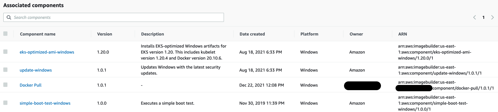
EC2 Image Builder allows you to build AMI's based off Amazon Managed Public AMIs and customize them to meet your business requirements. You can then associate those AMIs with Launch Templates which allows you to link a new AMI to the Auto Scaling Group created by the EKS Nodegroup. After that is complete, you can begin terminating the existing Windows Nodes and new ones will be launched based on the new updated AMI.
Pushing and pulling Windows images¶
Amazon publishes EKS optimized AMIs that include two cached Windows container images.
mcr.microsoft.com/windows/servercore
mcr.microsoft.com/windows/nanoserver

Cached images are updated following the updates on the main OS. When Microsoft releases a new Windows update that directly affects the Windows container base image, the update will be launched as an ordinary Windows Update on the main OS. Keeping the environment up-to-date offers a more secure environment at the Node and Container level.
The size of a Windows container image influences push/pull operations which can lead to slow container startup times. Caching Windows container images allows the expensive I/O operations (file extraction) to occur on the AMI build creation instead of the container launch. As a result, all the necessary image layers will be extracted on the AMI and will be ready to be used, speeding up the time a Windows container launches and can start accepting traffic. During a push operation, only the layers that compose your image are uploaded to the repository.
The following example shows that on the Amazon ECR the fluentd-windows-sac2004 images have only 390.18MB. This is the amount of upload that happened during the push operation.
The following example shows a fluentd Windows ltsc image pushed to an Amazon ECR repository. The size of the layer stored in ECR is 533.05MB.
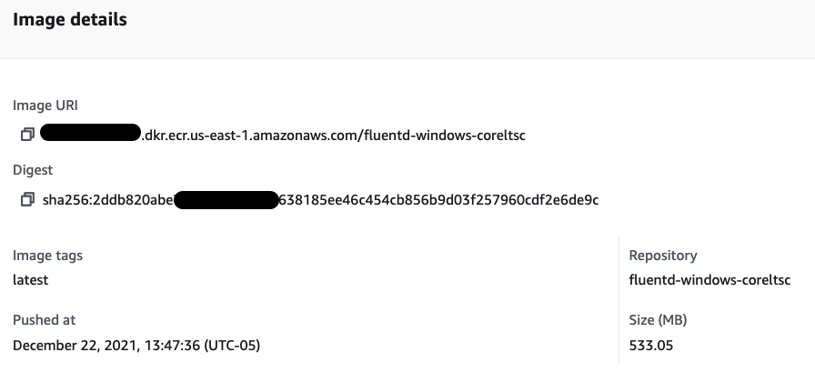
The output below from docker image ls , the size of the fluentd v1.14-windows-ltsc2019-1 is 6.96GB on disk, but that doesn't mean it downloaded and extracted that amount of data.
In practice, during the pull operation only the compressed 533.05MB will be downloaded and extracted.
REPOSITORY TAG IMAGE ID CREATED SIZE
111122223333.dkr.ecr.us-east-1.amazonaws.com/fluentd-windows-coreltsc latest 721afca2c725 7 weeks ago 6.96GB
fluent/fluentd v1.14-windows-ltsc2019-1 721afca2c725 7 weeks ago 6.96GB
amazonaws.com/eks/pause-windows latest 6392f69ae6e7 10 months ago 255MB
The size column shows the overall size of image, 6.96GB. Breaking it down:
- Windows Server Core 2019 LTSC Base image = 5.74GB
- Fluentd Uncompressed Base Image = 6.96GB
- Difference on disk = 1.2GB
- Fluentd compressed final image ECR = 533.05MB
The base image already exists on the local disk, resulting in the total amount on disk being 1.2GB additional. The next time you see the amount of GBs in the size column, don't worry too much, likely more than 70% is already on disk as a cached container image.
Reference¶
Speeding up Windows container launch times with EC2 Image builder and image cache strategy
Running Heterogeneous workloads¶
Kubernetes has support for heterogeneous clusters where you can have a mixture of Linux and Windows nodes in the same cluster. Within that cluster, you can have a mixture of Pods that run on Linux and Pods that run on Windows. You can even run multiple versions of Windows in the same cluster. However, there are several factors (as mentioned below) that will need to be accounted for when making this decision.
Assigning PODs to Nodes Best practices¶
In order to keep Linux and Windows workloads on their respective OS-specific nodes, you need to use some combination of node selectors and taints/tolerations. The main goal of scheduling workloads in a heterogeneous environment is to avoid breaking compatibility for existing Linux workloads.
Ensuring OS-specific workloads land on the appropriate container host¶
Users can ensure Windows containers can be scheduled on the appropriate host using nodeSelectors. All Kubernetes nodes today have the following default labels:
kubernetes.io/os = [windows|linux]
kubernetes.io/arch = [amd64|arm64|...]
If a Pod specification does not include a nodeSelector like "kubernetes.io/os": windows, the Pod may be scheduled on any host, Windows or Linux. This can be problematic since a Windows container can only run on Windows and a Linux container can only run on Linux.
In Enterprise environments, it's not uncommon to have a large number of pre-existing deployments for Linux containers, as well as an ecosystem of off-the-shelf configurations, like Helm charts. In these situations, you may be hesitant to make changes to a deployment's nodeSelectors. The alternative is to use Taints.
For example: --register-with-taints='os=windows:NoSchedule'
If you are using EKS, eksctl offers ways to apply taints through clusterConfig:
NodeGroups:
- name: windows-ng
amiFamily: WindowsServer2022FullContainer
...
labels:
nodeclass: windows2022
taints:
os: "windows:NoSchedule"
Adding a taint to all Windows nodes, the scheduler will not schedule pods on those nodes unless they tolerate the taint. Pod manifest example:
nodeSelector:
kubernetes.io/os: windows
tolerations:
- key: "os"
operator: "Equal"
value: "windows"
effect: "NoSchedule"
Handling multiple Windows build in the same cluster¶
The Windows container base image used by each pod must match the same kernel build version as the node. If you want to use multiple Windows Server builds in the same cluster, then you should set additional node labels, nodeSelectors or leverage a label called windows-build.
Kubernetes 1.17 automatically adds a new label node.kubernetes.io/windows-build to simplify the management of multiple Windows build in the same cluster. If you're running an older version, then it's recommended to add this label manually to Windows nodes.
This label reflects the Windows major, minor, and build number that need to match for compatibility. Below are values used today for each Windows Server version.
It's important to note that Windows Server is moving to the Long-Term Servicing Channel (LTSC) as the primary release channel. The Windows Server Semi-Annual Channel (SAC) was retired on August 9, 2022. There will be no future SAC releases of Windows Server.
| Product Name | Build Number(s) |
|---|---|
| Server full 2022 LTSC | 10.0.20348 |
| Server core 2019 LTSC | 10.0.17763 |
It is possible to check the OS build version through the following command:
The KERNEL-VERSION output matches the Windows OS build version.
NAME STATUS ROLES AGE VERSION INTERNAL-IP EXTERNAL-IP OS-IMAGE KERNEL-VERSION CONTAINER-RUNTIME
ip-10-10-2-235.ec2.internal Ready <none> 23m v1.24.7-eks-fb459a0 10.10.2.235 3.236.30.157 Windows Server 2022 Datacenter 10.0.20348.1607 containerd://1.6.6
ip-10-10-31-27.ec2.internal Ready <none> 23m v1.24.7-eks-fb459a0 10.10.31.27 44.204.218.24 Windows Server 2019 Datacenter 10.0.17763.4131 containerd://1.6.6
ip-10-10-7-54.ec2.internal Ready <none> 31m v1.24.11-eks-a59e1f0 10.10.7.54 3.227.8.172 Amazon Linux 2 5.10.173-154.642.amzn2.x86_64 containerd://1.6.19
The example below applies an additional nodeSelector to the pod manifest in order to match the correct Windows-build version when running different Windows node groups OS versions.
nodeSelector:
kubernetes.io/os: windows
node.kubernetes.io/windows-build: '10.0.20348'
tolerations:
- key: "os"
operator: "Equal"
value: "windows"
effect: "NoSchedule"
Simplifying NodeSelector and Toleration in Pod manifests using RuntimeClass¶
You can also make use of RuntimeClass to simplify the process of using taints and tolerations. This can be accomplished by creating a RuntimeClass object which is used to encapsulate these taints and tolerations.
Create a RuntimeClass by running the following manifest:
apiVersion: node.k8s.io/v1beta1
kind: RuntimeClass
metadata:
name: windows-2022
handler: 'docker'
scheduling:
nodeSelector:
kubernetes.io/os: 'windows'
kubernetes.io/arch: 'amd64'
node.kubernetes.io/windows-build: '10.0.20348'
tolerations:
- effect: NoSchedule
key: os
operator: Equal
value: "windows"
Once the Runtimeclass is created, assign it using as a Spec on the Pod manifest:
apiVersion: apps/v1
kind: Deployment
metadata:
name: iis-2022
labels:
app: iis-2022
spec:
replicas: 1
template:
metadata:
name: iis-2022
labels:
app: iis-2022
spec:
runtimeClassName: windows-2022
containers:
- name: iis
Managed Node Group Support¶
To help customers run their Windows applications in a more streamlined manner, AWS launched the support for Amazon EKS Managed Node Group (MNG) support for Windows containers on December 15, 2022. To help align operations teams, Windows MNGs are enabled using the same workflows and tools as Linux MNGs. Full and core AMI (Amazon Machine Image) family versions of Windows Server 2019 and 2022 are supported.
Following AMI families are supported for Managed Node Groups(MNG)s.
| AMI Family |
|---|
| WINDOWS_CORE_2019_x86_64 |
| WINDOWS_FULL_2019_x86_64 |
| WINDOWS_CORE_2022_x86_64 |
| WINDOWS_FULL_2022_x86_64 |
Additional documentations¶
AWS Official Documentation: https://docs.aws.amazon.com/eks/latest/userguide/windows-support.html
To better understand how Pod Networking (CNI) works, check the following link: https://docs.aws.amazon.com/eks/latest/userguide/pod-networking.html
AWS Blog on Deploying Managed Node Group for Windows on EKS: https://aws.amazon.com/blogs/containers/deploying-amazon-eks-windows-managed-node-groups/
Pod Security Contexts¶
Pod Security Policies (PSP) and Pod Security Standards (PSS) are two main ways of enforcing security in Kubernetes. Note that PodSecurityPolicy is deprecated as of Kubernetes v1.21, and will be removed in v1.25 and Pod Security Standard (PSS) is the Kubernetes recommended approach for enforcing security going forward.
A Pod Security Policy (PSP) is a native solution in Kubernetes to implement security policies. PSP is a cluster-level resource that controls security-sensitive aspects of the Pod specification. Using Pod Security Policy you can define a set of conditions that Pods must meet to be accepted by the cluster. The PSP feature has been available from the early days of Kubernetes and is designed to block misconfigured pods from being created on a given cluster.
For more information on Pod Security Policies please reference the Kubernetes documentation. According to the Kubernetes deprecation policy, older versions will stop getting support nine months after the deprecation of the feature.
On the other hand, Pod Security Standards (PSS) which is the recommended security approach and typically implemented using Security Contexts are defined as part of the Pod and container specifications in the Pod manifest. PSS is the official standard that the Kubernetes project team has defined to address the security-related best practices for Pods. It defines policies such as baseline (minimally restrictive, default), privileged (unrestrictive) and restricted (most restrictive).
We recommend starting with the baseline profile. PSS baseline profile provides a solid balance between security and potential friction, requiring a minimal list of exceptions, it serves as a good starting point for workload security. If you are currently using PSPs we recommend switching to PSS. More details on the PSS policies can be found in the Kubernetes documentation. These policies can be enforced with several tools including those from OPA and Kyverno. For example, Kyverno provides the full collection of PSS policies here.
Security context settings allow one to give privileges to select processes, use program profiles to restrict capabilities to individual programs, allow privilege escalation, filter system calls, among other things.
Windows pods in Kubernetes have some limitations and differentiators from standard Linux-based workloads when it comes to security contexts.
Windows uses a Job object per container with a system namespace filter to contain all processes in a container and provide logical isolation from the host. There is no way to run a Windows container without the namespace filtering in place. This means that system privileges cannot be asserted in the context of the host, and thus privileged containers are not available on Windows.
The following windowsOptions are the only documented Windows Security Context options while the rest are general Security Context options
For a list of security context attributes that are supported in Windows vs linux, please refer to the official documentation here.
The Pod specific settings are applied to all containers. If unspecified, the options from the PodSecurityContext will be used. If set in both SecurityContext and PodSecurityContext, the value specified in SecurityContext takes precedence.
For example, runAsUserName setting for Pods and containers which is a Windows option is a rough equivalent of the Linux-specific runAsUser setting and in the following manifest, the pod specific security context is applied to all containers
apiVersion: v1
kind: Pod
metadata:
name: run-as-username-pod-demo
spec:
securityContext:
windowsOptions:
runAsUserName: "ContainerUser"
containers:
- name: run-as-username-demo
...
nodeSelector:
kubernetes.io/os: windows
Whereas in the following, the container level security context overrides the pod level security context.
apiVersion: v1
kind: Pod
metadata:
name: run-as-username-container-demo
spec:
securityContext:
windowsOptions:
runAsUserName: "ContainerUser"
containers:
- name: run-as-username-demo
..
securityContext:
windowsOptions:
runAsUserName: "ContainerAdministrator"
nodeSelector:
kubernetes.io/os: windows
Examples of acceptable values for the runAsUserName field: ContainerAdministrator, ContainerUser, NT AUTHORITY\NETWORK SERVICE, NT AUTHORITY\LOCAL SERVICE
It is generally a good idea to run your containers with ContainerUser for Windows pods. The users are not shared between the container and host but the ContainerAdministrator does have additional privileges with in the container. Note that, there are username limitations to be aware of.
A good example of when to use ContainerAdministrator is to set PATH. You can use the USER directive to do that, like so:
Also note that, secrets are written in clear text on the node's volume (as compared to tmpfs/in-memory on linux). This means you have to do two things
- Use file ACLs to secure the secrets file location
- Use volume-level encryption using BitLocker
Persistent storage options¶
What is an in-tree vs. out-of-tree volume plugin?¶
Before the introduction of the Container Storage Interface (CSI), all volume plugins were in-tree meaning they were built, linked, compiled, and shipped with the core Kubernetes binaries and extend the core Kubernetes API. This meant that adding a new storage system to Kubernetes (a volume plugin) required checking code into the core Kubernetes code repository.
Out-of-tree volume plugins are developed independently of the Kubernetes code base, and are deployed (installed) on Kubernetes clusters as extensions. This gives vendors the ability to update drivers out-of-band, i.e. separately from the Kubernetes release cycle. This is largely possible because Kubernetes has created a storage interface or CSI that provides vendors a standard way of interfacing with k8s.
You can check more about Amazon Elastic Kubernetes Services (EKS) storage classes and CSI Drivers on https://docs.aws.amazon.com/eks/latest/userguide/storage.html
In-tree Volume Plugin for Windows¶
Kubernetes volumes enable applications, with data persistence requirements, to be deployed on Kubernetes. The management of persistent volumes consists of provisioning/de-provisioning/resizing of volumes, attaching/detaching a volume to/from a Kubernetes node, and mounting/dismounting a volume to/from individual containers in a pod. The code for implementing these volume management actions for a specific storage back-end or protocol is shipped in the form of a Kubernetes volume plugin (In-tree Volume Plugins). On Amazon Elastic Kubernetes Services (EKS) the following class of Kubernetes volume plugins are supported on Windows:
In-tree Volume Plugin: awsElasticBlockStore
In order to use In-tree volume plugin on Windows nodes, it is necessary to create an additional StorageClass to use NTFS as the fsType. On EKS, the default StorageClass uses ext4 as the default fsType.
A StorageClass provides a way for administrators to describe the "classes" of storage they offer. Different classes might map to quality-of-service levels, backup policies, or arbitrary policies determined by the cluster administrators. Kubernetes is unopinionated about what classes represent. This concept is sometimes called "profiles" in other storage systems.
You can check it by running the following command:
Output:
Name: gp2
IsDefaultClass: Yes
Annotations: kubectl.kubernetes.io/last-applied-configuration={"apiVersion":"storage.k8s.io/v1","kind":"StorageClas
","metadata":{"annotations":{"storageclass.kubernetes.io/is-default-class":"true"},"name":"gp2"},"parameters":{"fsType"
"ext4","type":"gp2"},"provisioner":"kubernetes.io/aws-ebs","volumeBindingMode":"WaitForFirstConsumer"}
,storageclass.kubernetes.io/is-default-class=true
Provisioner: kubernetes.io/aws-ebs
Parameters: fsType=ext4,type=gp2
AllowVolumeExpansion: <unset>
MountOptions: <none>
ReclaimPolicy: Delete
VolumeBindingMode: WaitForFirstConsumer
Events: <none>
To create the new StorageClass to support NTFS, use the following manifest:
kind: StorageClass
apiVersion: storage.k8s.io/v1
metadata:
name: gp2-windows
provisioner: kubernetes.io/aws-ebs
parameters:
type: gp2
fsType: ntfs
volumeBindingMode: WaitForFirstConsumer
Create the StorageClass by running the following command:
The next step is to create a Persistent Volume Claim (PVC).
A PersistentVolume (PV) is a piece of storage in the cluster that has been provisioned by an administrator or dynamically provisioned using PVC. It is a resource in the cluster just like a node is a cluster resource. This API object captures the details of the implementation of the storage, be that NFS, iSCSI, or a cloud-provider-specific storage system.
A PersistentVolumeClaim (PVC) is a request for storage by a user. Claims can request specific size and access modes (e.g., they can be mounted ReadWriteOnce, ReadOnlyMany or ReadWriteMany).
Users need PersistentVolumes with different attributes, such as performance, for different use cases. Cluster administrators need to be able to offer a variety of PersistentVolumes that differ in more ways than just size and access modes, without exposing users to the details of how those volumes are implemented. For these needs, there is the StorageClass resource.
In the example below, the PVC has been created within the namespace windows.
apiVersion: v1
kind: PersistentVolumeClaim
metadata:
name: ebs-windows-pv-claim
namespace: windows
spec:
accessModes:
- ReadWriteOnce
storageClassName: gp2-windows
resources:
requests:
storage: 1Gi
Create the PVC by running the following command:
The following manifest creates a Windows Pod, setup the VolumeMount as C:\Data and uses the PVC as the attached storage on C:\Data.
apiVersion: apps/v1
kind: Deployment
metadata:
name: windows-server-ltsc2019
namespace: windows
spec:
selector:
matchLabels:
app: windows-server-ltsc2019
tier: backend
track: stable
replicas: 1
template:
metadata:
labels:
app: windows-server-ltsc2019
tier: backend
track: stable
spec:
containers:
- name: windows-server-ltsc2019
image: mcr.microsoft.com/windows/servercore:ltsc2019
ports:
- name: http
containerPort: 80
imagePullPolicy: IfNotPresent
volumeMounts:
- mountPath: "C:\\data"
name: test-volume
volumes:
- name: test-volume
persistentVolumeClaim:
claimName: ebs-windows-pv-claim
nodeSelector:
kubernetes.io/os: windows
node.kubernetes.io/windows-build: '10.0.17763'
Test the results by accessing the Windows pod via PowerShell:
Inside the Windows Pod, run: ls
Output:
PS C:\> ls
Directory: C:\
Mode LastWriteTime Length Name
---- ------------- ------ ----
d----- 3/8/2021 1:54 PM data
d----- 3/8/2021 3:37 PM inetpub
d-r--- 1/9/2021 7:26 AM Program Files
d----- 1/9/2021 7:18 AM Program Files (x86)
d-r--- 1/9/2021 7:28 AM Users
d----- 3/8/2021 3:36 PM var
d----- 3/8/2021 3:36 PM Windows
-a---- 12/7/2019 4:20 AM 5510 License.txt
The data directory is provided by the EBS volume.
Out-of-tree for Windows¶
Code associated with CSI plugins ship as out-of-tree scripts and binaries that are typically distributed as container images and deployed using standard Kubernetes constructs like DaemonSets and StatefulSets. CSI plugins handle a wide range of volume management actions in Kubernetes. CSI plugins typically consist of node plugins (that run on each node as a DaemonSet) and controller plugins.
CSI node plugins (especially those associated with persistent volumes exposed as either block devices or over a shared file-system) need to perform various privileged operations like scanning of disk devices, mounting of file systems, etc. These operations differ for each host operating system. For Linux worker nodes, containerized CSI node plugins are typically deployed as privileged containers. For Windows worker nodes, privileged operations for containerized CSI node plugins is supported using csi-proxy, a community-managed, stand-alone binary that needs to be pre-installed on each Windows node.
The Amazon EKS Optimized Windows AMI includes CSI-proxy starting from April 2022. Customers can use the SMB CSI Driver on Windows nodes to access Amazon FSx for Windows File Server, Amazon FSx for NetApp ONTAP SMB Shares, and/or AWS Storage Gateway File Gateway.
The following blog has implementation details on how to setup SMB CSI Driver to use Amazon FSx for Windows File Server as a persistent storage for Windows Pods.
Amazon FSx for Windows File Server¶
An option is to use Amazon FSx for Windows File Server through an SMB feature called SMB Global Mapping which makes it possible to mount a SMB share on the host, then pass directories on that share into a container. The container doesn't need to be configured with a specific server, share, username or password - that's all handled on the host instead. The container will work the same as if it had local storage.
The SMB Global Mapping is transparent to the orchestrator, and it is mounted through HostPath which can imply in secure concerns.
In the example below, the path G:\Directory\app-state is an SMB share on the Windows Node.
apiVersion: v1
kind: Pod
metadata:
name: test-fsx
spec:
containers:
- name: test-fsx
image: mcr.microsoft.com/windows/servercore:ltsc2019
command:
- powershell.exe
- -command
- "Add-WindowsFeature Web-Server; Invoke-WebRequest -UseBasicParsing -Uri 'https://dotnetbinaries.blob.core.windows.net/servicemonitor/2.0.1.6/ServiceMonitor.exe' -OutFile 'C:\\ServiceMonitor.exe'; echo '<html><body><br/><br/><marquee><H1>Hello EKS!!!<H1><marquee></body><html>' > C:\\inetpub\\wwwroot\\default.html; C:\\ServiceMonitor.exe 'w3svc'; "
volumeMounts:
- mountPath: C:\dotnetapp\app-state
name: test-mount
volumes:
- name: test-mount
hostPath:
path: G:\Directory\app-state
type: Directory
nodeSelector:
beta.kubernetes.io/os: windows
beta.kubernetes.io/arch: amd64
The following blog has implementation details on how to setup Amazon FSx for Windows File Server as a persistent storage for Windows Pods.
Ended: Windows Containers
Networking
Amazon EKS Best Practices Guide for Networking¶
It is critical to understand Kubernetes networking to operate your cluster and applications efficiently. Pod networking, also called the cluster networking, is the center of Kubernetes networking. Kubernetes supports Container Network Interface (CNI) plugins for cluster networking.
Amazon EKS officially supports Amazon Virtual Private Cloud (VPC) CNI plugin to implement Kubernetes Pod networking. The VPC CNI provides native integration with AWS VPC and works in underlay mode. In underlay mode, Pods and hosts are located at the same network layer and share the network namespace. The IP address of the Pod is consistent from the cluster and VPC perspective.
This guide introduces the Amazon VPC Container Network Interface(VPC CNI) in the context of Kubernetes cluster networking. The VPC CNI is the default networking plugin supported by EKS and hence is the focus of the guide. The VPC CNI is highly configurable to support different use cases. This guide further includes dedicated sections on different VPC CNI use cases, operating modes, sub-components, followed by the recommendations.
Amazon EKS runs upstream Kubernetes and is certified Kubernetes conformant. Although you can use alternate CNI plugins, this guide does not provide recommendations for managing alternate CNIs. Check the EKS Alternate CNI documentation for a list of partners and resources for managing alternate CNIs effectively.
Kubernetes Networking Model¶
Kubernetes sets the following requirements on cluster networking:
- Pods scheduled on the same node must be able to communicate with other Pods without using NAT (Network Address Translation).
- All system daemons (background processes, for example, kubelet) running on a particular node can communicate with the Pods running on the same node.
- Pods that use the host network must be able to contact all other Pods on all other nodes without using NAT.
See the Kubernetes network model for details on what Kubernetes expects from compatible networking implementations. The following figure illustrates the relationship between Pod network namespaces and the host network namespace.

Container Networking Interface (CNI)¶
Kubernetes supports CNI specifications and plugins to implement Kubernetes network model. A CNI consists of a specification (current version 1.0.0) and libraries for writing plugins to configure network interfaces in containers, along with a number of supported plugins. CNI concerns itself only with network connectivity of containers and removing allocated resources when the container is deleted.
The CNI plugin is enabled by passing kubelet the --network-plugin=cni command-line option. Kubelet reads a file from --cni-conf-dir (default /etc/cni/net.d) and uses the CNI configuration from that file to set up each Pods network. The CNI configuration file must match the CNI specification (minimum v0.4.0) and any required CNI plugins referenced by the configuration must be present in the --cni-bin-dir directory (default /opt/cni/bin). If there are multiple CNI configuration files in the directory, the kubelet uses the configuration file that comes first by name in lexicographic order.
Amazon Virtual Private Cloud (VPC) CNI¶
The AWS-provided VPC CNI is the default networking add-on for EKS clusters. VPC CNI add-on is installed by default when you provision EKS clusters. VPC CNI runs on Kubernetes worker nodes. The VPC CNI add-on consists of the CNI binary and the IP Address Management (ipamd) plugin. The CNI assigns an IP address from the VPC network to a Pod. The ipamd manages AWS Elastic Networking Interfaces (ENIs) to each Kubernetes node and maintains the warm pool of IPs. The VPC CNI provides configuration options for pre-allocation of ENIs and IP addresses for fast Pod startup times. Refer to Amazon VPC CNI for recommended plugin management best practices.
Amazon EKS recommends you specify subnets in at least two availability zones when you create a cluster. Amazon VPC CNI allocates IP addresses to Pods from the node subnets. We strongly recommend checking the subnets for available IP addresses. Please consider VPC and Subnet recommendations before deploying EKS clusters.
Amazon VPC CNI allocates a warm pool of ENIs and secondary IP addresses from the subnet attached to the nodes primary ENI. This mode of VPC CNI is called the "secondary IP mode." The number of IP addresses and hence the number of Pods (Pod density) is defined by the number of ENIs and the IP address per ENI (limits) as defined by the instance type. The secondary mode is the default and works well for small clusters with smaller instance types. Please consider using prefix mode if you are experiencing pod density challenges. You can also increase the available IP addresses on node for Pods by assigning prefixes to ENIs.
Amazon VPC CNI natively integrates with AWS VPC and allows users to apply existing AWS VPC networking and security best practices for building Kubernetes clusters. This includes the ability to use VPC flow logs, VPC routing policies, and security groups for network traffic isolation. By default, the Amazon VPC CNI applies security group associated with the primary ENI on the node to the Pods. Consider enabling security groups for Pods when you would like to assign different network rules for a Pod.
By default, VPC CNI assigns IP addresses to Pods from the subnet assigned to the primary ENI of a node. It is common to experience a shortage of IPv4 addresses when running large clusters with thousands of workloads. AWS VPC allows you to extend available IPs by assigning a secondary CIDRs to work around exhaustion of IPv4 CIDR blocks. AWS VPC CNI allows you to use a different subnet CIDR range for Pods. This feature of VPC CNI is called custom networking. You might consider using custom networking to use 100.64.0.0/10 and 198.19.0.0/16 CIDRs (CG-NAT) with EKS. This effectively allows you to create an environment where Pods no longer consume any RFC1918 IP addresses from your VPC.
Custom networking is one option to address the IPv4 address exhaustion problem, but it requires operational overhead. We recommend IPv6 clusters over custom networking to resolve this problem. Specifically, we recommend migrating to IPv6 clusters if you have completely exhausted all available IPv4 address space for your VPC. Evaluate your organizations plans to support IPv6, and consider if investing in IPv6 may have more long-term value.
EKSs support for IPv6 is focused on solving the IP exhaustion problem caused by a limited IPv4 address space. In response to customer issues with IPv4 exhaustion, EKS has prioritized IPv6-only Pods over dual-stack Pods. That is, Pods may be able to access IPv4 resources, but they are not assigned an IPv4 address from VPC CIDR range. The VPC CNI assigns IPv6 addresses to Pods from the AWS managed VPC IPv6 CIDR block.
Subnet Calculator¶
This project includes a Subnet Calculator Excel Document. This calculator document simulates the IP address consumption of a specified workload under different ENI configuration options, such as WARM_IP_TARGET and WARM_ENI_TARGET. The document includes two sheets, a first for Warm ENI mode, and a second for Warm IP mode. Review the VPC CNI guidance for more information on these modes.
Inputs: - Subnet CIDR Size - Warm ENI Target or Warm IP Target - List of instances - type, number, and number of workload pods scheduled per instance
Outputs: - Total number of pods hosted - Number of Subnet IPs consumed - Number of Subnet IPs remaining - Instance Level Details - Number of Warm IPs/ENIs per instance - Number of Active IPs/ENIs per instance
VPC and Subnet Considerations¶
Operating an EKS cluster requires knowledge of AWS VPC networking, in addition to Kubernetes networking.
We recommend you understand the EKS control plane communication mechanisms before you start designing your VPC or deploying clusters into existing VPCs.
Refer to Cluster VPC considerations and Amazon EKS security group considerations when architecting a VPC and subnets to be used with EKS.
Overview¶
EKS Cluster Architecture¶
An EKS cluster consists of two VPCs:
- An AWS-managed VPC that hosts the Kubernetes control plane. This VPC does not appear in the customer account.
- A customer-managed VPC that hosts the Kubernetes nodes. This is where containers run, as well as other customer-managed AWS infrastructure such as load balancers used by the cluster. This VPC appears in the customer account. You need to create customer-managed VPC prior creating a cluster. The eksctl creates a VPC if you do not provide one.
The nodes in the customer VPC need the ability to connect to the managed API server endpoint in the AWS VPC. This allows the nodes to register with the Kubernetes control plane and receive requests to run application Pods.
The nodes connect to the EKS control plane through (a) an EKS public endpoint or (b) a Cross-Account elastic network interfaces (X-ENI) managed by EKS. When a cluster is created, you need to specify at least two VPC subnets. EKS places a X-ENI in each subnet specified during cluster create (also called cluster subnets). The Kubernetes API server uses these Cross-Account ENIs to communicate with nodes deployed on the customer-managed cluster VPC subnets.

As the node starts, the EKS bootstrap script is executed and Kubernetes node configuration files are installed. As part of the boot process on each instance, the container runtime agents, kubelet, and Kubernetes node agents are launched.
To register a node, Kubelet contacts the Kubernetes cluster endpoint. It establishes a connection with either the public endpoint outside of the VPC or the private endpoint within the VPC. Kubelet receives API instructions and provides status updates and heartbeats to the endpoint on a regular basis.
EKS Control Plane Communication¶
EKS has two ways to control access to the cluster endpoint. Endpoint access control lets you choose whether the endpoint can be reached from the public internet or only through your VPC. You can turn on the public endpoint (which is the default), the private endpoint, or both at once.
The configuration of the cluster API endpoint determines the path that nodes take to communicate to the control plane. Note that these endpoint settings can be changed at any time through the EKS console or API.
Public Endpoint¶
This is the default behavior for new Amazon EKS clusters. When only the public endpoint for the cluster is enabled, Kubernetes API requests that originate from within your clusters VPC (such as worker node to control plane communication) leave the VPC, but not Amazons network. In order for nodes to connect to the control plane, they must have a public IP address and a route to an internet gateway or a route to a NAT gateway where they can use the public IP address of the NAT gateway.
Public and Private Endpoint¶
When both the public and private endpoints are enabled, Kubernetes API requests from within the VPC communicate to the control plane via the X-ENIs within your VPC. Your cluster API server is accessible from the internet.
Private Endpoint¶
There is no public access to your API server from the internet when only private endpoint is enabled. All traffic to your cluster API server must come from within your clusters VPC or a connected network. The nodes communicate to API server via X-ENIs within your VPC. Note that cluster management tools must have access to the private endpoint. Learn more about how to connect to a private Amazon EKS cluster endpoint from outside the Amazon VPC.
Note that the cluster's API server endpoint is resolved by public DNS servers to a private IP address from the VPC. In the past, the endpoint could only be resolved from within the VPC.
VPC configurations¶
Amazon VPC supports IPv4 and IPv6 addressing. Amazon EKS supports IPv4 by default. A VPC must have an IPv4 CIDR block associated with it. You can optionally associate multiple IPv4 Classless Inter-Domain Routing (CIDR) blocks and multiple IPv6 CIDR blocks to your VPC. When you create a VPC, you must specify an IPv4 CIDR block for the VPC from the private IPv4 address ranges as specified in RFC 1918. The allowed block size is between a /16 prefix (65,536 IP addresses) and /28 prefix (16 IP addresses).
When creating a new VPC, you can attach a single IPv6 CIDR block, and up to five when changing an existing VPC. The prefix length of the CIDR block is fixed at /64 for IPv6 VPCs, which has more than one trillion IP addresses. You can request an IPv6 CIDR block from the pool of IPv6 addresses maintained by Amazon.
Amazon EKS clusters support both IPv4 and IPv6. By default, EKS clusters use IPv4 IP. Specifying IPv6 at cluster creation time will enable the use IPv6 clusters. IPv6 clusters require dual-stack VPCs and subnets.
Amazon EKS recommends you use at least two subnets that are in different Availability Zones during cluster creation. The subnets you pass in during cluster creation are known as cluster subnets. When you create a cluster, Amazon EKS creates up to 4 cross account (x-account or x-ENIs) ENIs in the subnets that you specify. The x-ENIs are always deployed and are used for cluster administration traffic such as log delivery, exec, and proxy. Please refer to the EKS user guide for complete VPC and subnet requirement details.
Kubernetes worker nodes can run in the cluster subnets, but it is not recommended. During cluster upgrades Amazon EKS provisions additional ENIs in the cluster subnets. When your cluster scales out, worker nodes and pods may consume the available IPs in the cluster subnet. Hence in order to make sure there are enough available IPs you might want to consider using dedicated cluster subnets with /28 netmask.
Kubernetes worker nodes can run in either a public or a private subnet. Whether a subnet is public or private refers to whether traffic within the subnet is routed through an internet gateway. Public subnets have a route table entry to the internet through the internet gateway, but private subnets don't.
The traffic that originates somewhere else and reaches your nodes is called ingress. Traffic that originates from the nodes and leaves the network is called egress. Nodes with public or elastic IP addresses (EIPs) within a subnet configured with an internet gateway allow ingress from outside of the VPC. Private subnets usually include a NAT gateway, which only allows ingress traffic to the nodes from within the VPC while still allowing traffic from the nodes to leave the VPC (egress).
In the IPv6 world, every address is internet routable. The IPv6 addresses associated with the nodes and pods are public. Private subnets are supported by implementing an egress-only internet gateways (EIGW) in a VPC, allowing outbound traffic while blocking all incoming traffic. Best practices for implementing IPv6 subnets can be found in the VPC user guide.
You can configure VPC and Subnets in three different ways:¶
Using only public subnets¶
In the same public subnets, both nodes and ingress resources (such as load balancers) are created. Tag the public subnet with kubernetes.io/role/elb to construct load balancers that face the internet. In this configuration, the cluster endpoint can be configured to be public, private, or both (public and private).
Using private and public subnets¶
Nodes are created on private subnets, whereas Ingress resources are instantiated in public subnets. You can enable public, private, or both (public and private) access to the cluster endpoint. Depending on the configuration of the cluster endpoint, node traffic will enter via the NAT gateway or the ENI.
Using only private subnets¶
Both nodes and ingress are created in private subnets. Using the kubernetes.io/role/internal-elb subnet tag to construct internal load balancers. Accessing your cluster's endpoint will require a VPN connection. You must activate AWS PrivateLink for EC2 and all Amazon ECR and S3 repositories. Only the private endpoint of the cluster should be enabled. We suggest going through the EKS private cluster requirements before provisioning private clusters.
Communication across VPCs¶
There are many scenarios when you require multiple VPCs and separate EKS clusters deployed to these VPCs.
You can use Amazon VPC Lattice to consistently and securely connect services across multiple VPCs and accounts (without requiring additional connectivity to be provided by services like VPC peering, AWS PrivateLink or AWS Transit Gateway). Learn more here.

Amazon VPC Lattice operates in the link-local address space in IPv4 and IPv6, providing connectivity between services that may have overlapping IPv4 addresses. For operational efficiency, we strongly recommend deploying EKS clusters and nodes to IP ranges that do not overlap. In case your infrastructure includes VPCs with overlapping IP ranges, you need to architect your network accordingly. We suggest Private NAT Gateway, or VPC CNI in custom networking mode in conjunction with transit gateway to integrate workloads on EKS to solve overlapping CIDR challenges while preserving routable RFC1918 IP addresses.
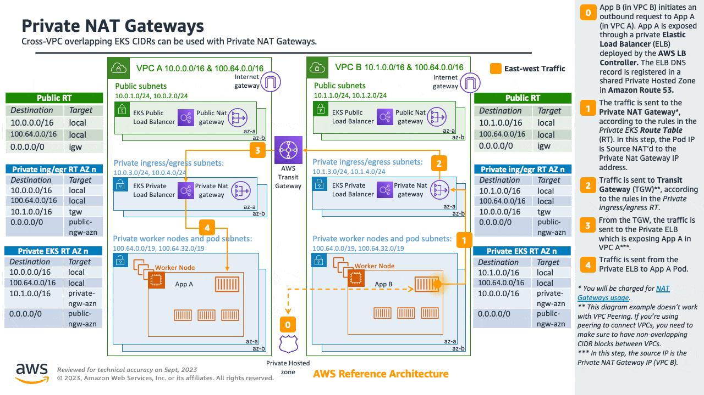
Consider utilizing AWS PrivateLink, also known as an endpoint service, if you are the service provider and would want to share your Kubernetes service and ingress (either ALB or NLB) with your customer VPC in separate accounts.
Sharing VPC across multiple accounts¶
Many enterprises adopted shared Amazon VPCs as a means to streamline network administration, reduce costs and improve security across multiple AWS Accounts in an AWS Organization. They utilize AWS Resource Access Manager (RAM) to securely share supported AWS resources with individual AWS Accounts, organizational units (OUs) or entire AWS Organization.
You can deploy Amazon EKS clusters, managed node groups and other supporting AWS resources (like LoadBalancers, security groups, end points, etc.,) in shared VPC Subnets from an another AWS Account using AWS RAM. Below figure depicts an example highlevel architecture. This allows central networking teams control over the networking constructs like VPCs, Subnets, etc., while allowing application or platform teams to deploy Amazon EKS clusters in their respective AWS Accounts. A complete walkthrough of this scenario is available at this github repository.
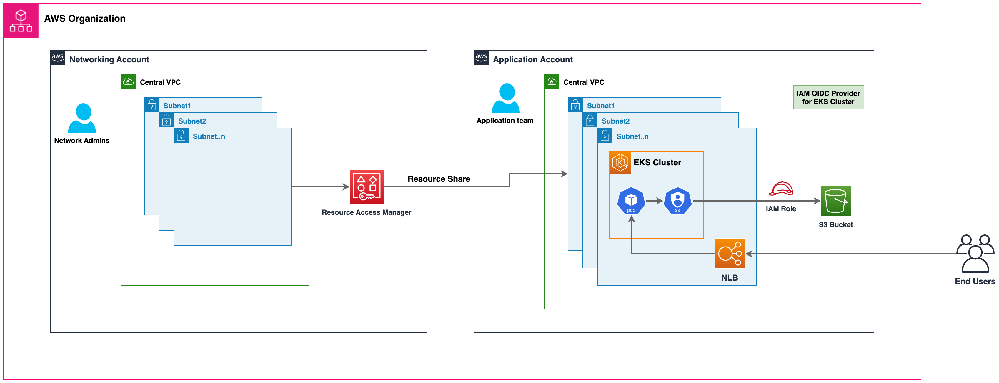
Considerations when using Shared Subnets¶
-
Amazon EKS clusters and worker nodes can be created within shared subnets that are all part of the same VPC. Amazon EKS does not support the creation of clusters across multiple VPCs.
-
Amazon EKS uses AWS VPC Security Groups (SGs) to control the traffic between the Kubernetes control plane and the cluster's worker nodes. Security groups are also used to control the traffic between worker nodes, and other VPC resources, and external IP addresses. You must create these security groups in the application/participant account. Ensure that the security groups you intend to use for your pods are also located in the participant account. You can configure the inbound and outbound rules within your security groups to permit the necessary traffic to and from security groups located in the Central VPC account.
-
Create IAM roles and associated policies within the participant account where your Amazon EKS cluster resides. These IAM roles and policies are essential for granting the necessary permissions to Kubernetes clusters managed by Amazon EKS, as well as to the nodes and pods running on Fargate. The permissions enable Amazon EKS to make calls to other AWS services on your behalf.
-
You can follow following approaches to allow cross Account access to AWS resources like Amazon S3 buckets, Dynamodb tables, etc., from k8s pods:
-
Resource based policy approach: If the AWS service supports resource policies, you can add appropriate resource based policy to allow cross account access to IAM Roles assigned to the kubernetes pods. In this scenario, OIDC provider, IAM Roles, and permission policies exist in the application account. To find AWS Services that support Resource based policies, refer AWS services that work with IAM and look for the services that have Yes in the Resource Based column.
-
OIDC Provider approach: IAM resources like OIDC Provider, IAM Roles, Permission, and Trust policies will be created in other participant AWS Account where the resources exists. These roles will be assigned to Kubernetes pods in application account, so that they can access cross account resources. Refer Cross account IAM roles for Kubernetes service accounts blog for a complete walkthrough of this approach.
-
-
You can deploy the Amazon Elastic Loadbalancer (ELB) resources (ALB or NLB) to route traffic to k8s pods either in application or central networking accounts. Refer to Expose Amazon EKS Pods Through Cross-Account Load Balancer walkthrough for detailed instructions on deploying the ELB resources in central networking account. This option offers enhanced flexibility, as it grants the Central Networking account full control over the security configuration of the Load Balancer resources.
-
When using
custom networking featureof Amazon VPC CNI, you need to use the Availability Zone (AZ) ID mappings listed in the central networking account to create eachENIConfig. This is due to random mapping of physical AZs to the AZ names in each AWS account.
Security Groups¶
A security group controls the traffic that is allowed to reach and leave the resources that it is associated with. Amazon EKS uses security groups to manage the communication between the control plane and nodes. When you create a cluster, Amazon EKS creates a security group that's named eks-cluster-sg-my-cluster-uniqueID. EKS associates these security groups to the managed ENIs and the nodes. The default rules allow all traffic to flow freely between your cluster and nodes, and allows all outbound traffic to any destination.
When you create a cluster, you can specify your own security groups. Please see recommendation for security groups when you specify own security groups.
Recommendations¶
Consider Multi-AZ Deployment¶
AWS Regions provide multiple physically separated and isolated Availability Zones (AZ), which are connected with low-latency, high-throughput, and highly redundant networking. With Availability Zones, you can design and operate applications that automatically fail over between Availability Zones without interruption. Amazon EKS strongly recommends deploying EKS clusters to multiple availability zones. Please consider specifying subnets in at least two availability zones when you create the cluster.
Kubelet running on nodes automatically adds labels to the node object such as topology.kubernetes.io/region=us-west-2, and topology.kubernetes.io/zone=us-west-2d. We recommend to use node labels in conjunction with Pod topology spread constraints to control how Pods are spread across zones. These hints enable Kubernetes scheduler to place Pods for better expected availability, reducing the risk that a correlated failure affects your whole workload. Please refer Assigning nodes to Pods to see examples for node selector and AZ spread constraints.
You can define the subnets or availability zones when you create nodes. The nodes are placed in cluster subnets if no subnets are configured. EKS support for managed node groups automatically spreads the nodes across multiple availability zones on available capacity. Karpenterwill honor the AZ spread placement by scaling nodes to specified AZs if workloads define topology spread limits.
AWS Elastic Load Balancers are managed by the AWS Load Balancer Controller for a Kubernetes cluster. It provisions an Application Load Balancer (ALB) for Kubernetes ingress resources and a Network Load Balancer (NLB) for Kubernetes services of type Loadbalancer. The Elastic Load Balancer controller uses tags to discover the subnets. ELB controller requires a minimum of two availability zones (AZs) to provision ingress resource successfully. Consider setting subnets in at least two AZs to take advantage of geographic redundancy's safety and reliability.
Deploy Nodes to Private Subnets¶
A VPC including both private and public subnets is the ideal method for deploying Kubernetes workloads on EKS. Consider setting a minimum of two public subnets and two private subnets in two distinct availability zones. The related route table of a public subnet contains a route to an internet gateway . Pods are able to interact with the Internet via a NAT gateway. Private subnets are supported by egress-only internet gateways in the IPv6 environment (EIGW).
Instantiating nodes in private subnets offers maximal control over traffic to the nodes and is effective for the vast majority of Kubernetes applications. Ingress resources (like as load balancers) are instantiated in public subnets and route traffic to Pods operating on private subnets.
Consider private only mode if you demand strict security and network isolation. In this configuration, three private subnets are deployed in distinct Availability Zones within the AWS Region's VPC. The resources deployed to the subnets cannot access the internet, nor can the internet access the resources in the subnets. In order for your Kubernetes application to access other AWS services, you must configure PrivateLink interfaces and/or gateway endpoints. You may setup internal load balancers to redirect traffic to Pods using AWS Load Balancer Controller. The private subnets must be tagged (kubernetes.io/role/internal-elb: 1) for the controller to provision load balancers. For nodes to register with the cluster, the cluster endpoint must be set to private mode. Please visit private cluster guide for complete requirements and considerations.
Consider Public and Private Mode for Cluster Endpoint¶
Amazon EKS offers public-only, public-and-private, and private-only cluster endpoint modes. The default mode is public-only, however we recommend configuring cluster endpoint in public and private mode. This option allows Kubernetes API calls within your cluster's VPC (such as node-to-control-plane communication) to utilize the private VPC endpoint and traffic to remain within your cluster's VPC. Your cluster API server, on the other hand, can be reached from the internet. However, we strongly recommend limiting the CIDR blocks that can use the public endpoint. Learn how to configure public and private endpoint access, including limiting CIDR blocks.
We suggest a private-only endpoint when you need security and network isolation. We recommend using either of the options listed in the EKS user guide to connect to an API server privately.
Configure Security Groups Carefully¶
Amazon EKS supports using custom security groups. Any custom security groups must allow communication between nodes and the Kubernetes control plane. Please check port requirements and configure rules manually when your organization doesn't allow for open communication.
EKS applies the custom security groups that you provide during cluster creation to the managed interfaces (X-ENIs). However, it does not immediately associate them with nodes. While creating node groups, it is strongly recommended to associate custom security groups manually. Please consider enabling securityGroupSelector to enable Karpenter node template discovery of custom security groups during autoscaling of nodes.
We strongly recommend creating a security group to allow all inter-node communication traffic. During the bootstrap process, nodes require outbound Internet connectivity to access the cluster endpoint. Evaluate outward access requirements, such as on-premise connection and container registry access, and set rules appropriately. Before putting changes into production, we strongly suggest that you check connections carefully in your development environment.
Deploy NAT Gateways in each Availability Zone¶
If you deploy nodes in private subnets (IPv4 and IPv6), consider creating a NAT Gateway in each Availability Zone (AZ) to ensure zone-independent architecture and reduce cross AZ expenditures. Each NAT gateway in an AZ is implemented with redundancy.
Use Cloud9 to access Private Clusters¶
AWS Cloud9 is a web-based IDE than can run securely in Private Subnets without ingress access, using AWS Systems Manager. Egress can also be disabled on the Cloud9 instance. Learn more about using Cloud9 to access private clusters and subnets.

Amazon VPC CNI¶
Amazon EKS implements cluster networking through the Amazon VPC Container Network Interface(VPC CNI) plugin. The CNI plugin allows Kubernetes Pods to have the same IP address as they do on the VPC network. More specifically, all containers inside the Pod share a network namespace, and they can communicate with each-other using local ports.
Amazon VPC CNI has two components:
- CNI Binary, which will setup Pod network to enable Pod-to-Pod communication. The CNI binary runs on a node root file system and is invoked by the kubelet when a new Pod gets added to, or an existing Pod removed from the node.
- ipamd, a long-running node-local IP Address Management (IPAM) daemon and is responsible for:
- managing ENIs on a node, and
- maintaining a warm-pool of available IP addresses or prefix
When an instance is created, EC2 creates and attaches a primary ENI associated with a primary subnet. The primary subnet may be public or private. The Pods that run in hostNetwork mode use the primary IP address assigned to the node primary ENI and share the same network namespace as the host.
The CNI plugin manages Elastic Network Interfaces (ENI) on the node. When a node is provisioned, the CNI plugin automatically allocates a pool of slots (IPs or Prefixs) from the nodes subnet to the primary ENI. This pool is known as the warm pool, and its size is determined by the nodes instance type. Depending on CNI settings, a slot may be an IP address or a prefix. When a slot on an ENI has been assigned, the CNI may attach additional ENIs with warm pool of slots to the nodes. These additional ENIs are called Secondary ENIs. Each ENI can only support a certain number of slots, based on instance type. The CNI attaches more ENIs to instances based on the number of slots needed, which usually corresponds to the number of Pods. This process continues until the node can no longer support additional ENI. The CNI also pre-allocates warm ENIs and slots for faster Pod startup. Note each instance type has a maximum number of ENIs that may be attached. This is one constraint on Pod density (number of Pods per node), in addition to compute resources.

The maximum number of network interfaces, and the maximum number of slots that you can use varies by the type of EC2 Instance. Since each Pod consumes an IP address on a slot, the number of Pods you can run on a particular EC2 Instance depends on how many ENIs can be attached to it and how many slots each ENI supports. We suggest setting the maximum Pods per EKS user guide to avoid exhaustion of the instances CPU and memory resources. Pods using hostNetwork are excluded from this calculation. You may consider using a script called max-pod-calculator.sh to calculate EKSs recommended maximum Pods for a given instance type.
Overview¶
Secondary IP mode is the default mode for VPC CNI. This guide provides a generic overview of VPC CNI behavior when Secondary IP mode is enabled. The functionality of ipamd (allocation of IP addresses) may vary depending on the configuration settings for VPC CNI, such as Prefix Mode, Security Groups Per Pod, and Custom Networking.
The Amazon VPC CNI is deployed as a Kubernetes Daemonset named aws-node on worker nodes. When a worker node is provisioned, it has a default ENI, called the primary ENI, attached to it. The CNI allocates a warm pool of ENIs and secondary IP addresses from the subnet attached to the nodes primary ENI. By default, ipamd attempts to allocate an additional ENI to the node. The IPAMD allocates additional ENI when a single Pod is scheduled and assigned a secondary IP address from the primary ENI. This "warm" ENI enables faster Pod networking. As the pool of secondary IP addresses runs out, the CNI adds another ENI to assign more.
The number of ENIs and IP addresses in a pool are configured through environment variables called WARM_ENI_TARGET, WARM_IP_TARGET, MINIMUM_IP_TARGET. The aws-node Daemonset will periodically check that a sufficient number of ENIs are attached. A sufficient number of ENIs are attached when all of the WARM_ENI_TARGET, or WARM_IP_TARGET and MINIMUM_IP_TARGET conditions are met. If there are insufficient ENIs attached, the CNI will make an API call to EC2 to attach more until MAX_ENI limit is reached.
WARM_ENI_TARGET- Integer, Values >0 indicate requirement Enabled- The number of Warm ENIs to be maintained. An ENI is warm when it is attached as a secondary ENI to a node, but it is not in use by any Pod. More specifically, no IP addresses of the ENI have been associated with a Pod.
- Example: Consider an instance with 2 ENIs, each ENI supporting 5 IP addresses. WARM_ENI_TARGET is set to 1. If exactly 5 IP addresses are associated with the instance, the CNI maintains 2 ENIs attached to the instance. The first ENI is in use, and all 5 possible IP addresses of this ENI are used. The second ENI is warm with all 5 IP addresses in pool. If another Pod is launched on the instance, a 6th IP address will be needed. The CNI will assign this 6th Pod an IP address from the second ENI and from 5 IPs from the pool. The second ENI is now in use, and no longer in a warm status. The CNI will allocate a 3rd ENI to maintain at least 1 warm ENI.
Note
The warm ENIs still consume IP addresses from the CIDR of your VPC. IP addresses are unused or warm until they are associated with a workload, such as a Pod.
WARM_IP_TARGET, Integer, Values >0 indicate requirement Enabled- The number of Warm IP addresses to be maintained. A Warm IP is available on an actively attached ENI, but has not been assigned to a Pod. In other words, the number of Warm IPs available is the number of IPs that may be assigned to a Pod without requiring an additional ENI.
- Example: Consider an instance with 1 ENI, each ENI supporting 20 IP addresses. WARM_IP_TARGET is set to 5. WARM_ENI_TARGET is set to 0. Only 1 ENI will be attached until a 16th IP address is needed. Then, the CNI will attach a second ENI, consuming 20 possible addresses from the subnet CIDR.
MINIMUM_IP_TARGET, Integer, Values >0 indicate requirement Enabled- The minimum number of IP addresses to be allocated at any time. This is commonly used to front-load the assignment of multiple ENIs at instance launch.
- Example: Consider a newly launched instance. It has 1 ENI and each ENI supports 10 IP addresses. MINIMUM_IP_TARGET is set to 100. The ENI immediately attaches 9 more ENIs for a total of 100 addresses. This happens regardless of any WARM_IP_TARGET or WARM_ENI_TARGET values.
This project includes a Subnet Calculator Excel Document. This calculator document simulates the IP address consumption of a specified workload under different ENI configuration options, such as WARM_IP_TARGET and WARM_ENI_TARGET.

When Kubelet receives an add Pod request, the CNI binary queries ipamd for an available IP address, which ipamd then provides to the Pod. The CNI binary wires up the host and Pod network.
Pods deployed on a node are, by default, assigned to the same security groups as the primary ENI. Alternatively, Pods may be configured with different security groups.

As the pool of IP addresses is depleted, the plugin automatically attaches another elastic network interface to the instance and allocates another set of secondary IP addresses to that interface. This process continues until the node can no longer support additional elastic network interfaces.

When a Pod is deleted, VPC CNI places the Pods IP address in a 30-second cool down cache. The IPs in a cool down cache are not assigned to new Pods. When the cooling-off period is over, VPC CNI moves Pod IP back to the warm pool. The cooling-off period prevents Pod IP addresses from being recycled prematurely and allows kube-proxy on all cluster nodes to finish updating the iptables rules. When the number of IPs or ENIs exceeds the number of warm pool settings, the ipamd plugin returns IPs and ENIs to the VPC.
As described above in Secondary IP mode, each Pod receives one secondary private IP address from one of the ENIs attached to an instance. Since each Pod uses an IP address, the number of Pods you can run on a particular EC2 Instance depends on how many ENIs can be attached to it and how many IP addresses it supports. The VPC CNI checks the limits file to find out how many ENIs and IP addresses are allowed for each type of instance.
You can use the following formula to determine maximum number of Pods you can deploy on a node.
(Number of network interfaces for the instance type (the number of IP addresses per network interface - 1)) + 2
The +2 indicates Pods that require host networking, such as kube-proxy and VPC CNI. Amazon EKS requires kube-proxy and VPC CNI to be operating on each node, and these requirements are factored into the max-pods value. If you want to run additional host networking pods, consider updating the max-pods value.
The +2 indicates Kubernetes Pods that use host networking, such as kube-proxy and VPC CNI. Amazon EKS requires kube-proxy and VPC CNI to be running on every node and are calculated towards max-pods. Consider updating max-pods if you plan to run more host networking Pods. You can specify --kubelet-extra-args "max-pods=110" as user data in the launch template.
As an example, on a cluster with 3 c5.large nodes (3 ENIs and max 10 IPs per ENI), when the cluster starts up and has 2 CoreDNS pods, the CNI will consume 49 IP addresses and keeps them in warm pool. The warm pool enables faster Pod launches when the application is deployed.
Node 1 (with CoreDNS pod): 2 ENIs, 20 IPs assigned
Node 2 (with CoreDNS pod): 2 ENIs, 20 IPs assigned
Node 3 (no Pod): 1 ENI. 10 IPs assigned.
Keep in mind that infrastructure pods, often running as daemon sets, each contribute to the max-pod count. These can include:
- CoreDNS
- Amazon Elastic LoadBalancer
- Operational pods for metrics-server
We suggest that you plan your infrastructure by combining these Pods' capacities. For a list of the maximum number of Pods supported by each instance type, see eni-max-Pods.txt on GitHub.

Recommendations¶
Deploy VPC CNI Managed Add-On¶
When you provision a cluster, Amazon EKS installs VPC CNI automatically. Amazon EKS nevertheless supports managed add-ons that enable the cluster to interact with underlying AWS resources such as computing, storage, and networking. We highly recommend that you deploy clusters with managed add-ons including VPC CNI.
Amazon EKS managed add-on offer VPC CNI installation and management for Amazon EKS clusters. Amazon EKS add-ons include the latest security patches, bug fixes, and are validated by AWS to work with Amazon EKS. The VPC CNI add-on enables you to continuously ensure the security and stability of your Amazon EKS clusters and decrease the amount of effort required to install, configure, and update add-ons. Additionally, a managed add-on can be added, updated, or deleted via the Amazon EKS API, AWS Management Console, AWS CLI, and eksctl.
You can find the managed fields of VPC CNI using --show-managed-fields flag with the kubectl get command.
Managed add-ons prevents configuration drift by automatically overwriting configurations every 15 minutes. This means that any changes to managed add-ons, made via the Kubernetes API after add-on creation, will overwrite by the automated drift-prevention process and also set to defaults during add-on update process.
The fields managed by EKS are listed under managedFields with manager as EKS. Fields managed by EKS include service account, image, image url, liveness probe, readiness probe, labels, volumes, and volume mounts.
Info
The most frequently used fields such as WARM_ENI_TARGET, WARM_IP_TARGET, and MINIMUM_IP_TARGET are not managed and will not be reconciled. The changes to these fields will be preserved upon updating of the add-on.
We suggest testing the add-on behavior in your non-production clusters for a specific configuration before updating production clusters. Additionally, follow the steps in the EKS user guide for add-on configurations.
Migrate to Managed Add-On¶
You will manage the version compatibility and update the security patches of self-managed VPC CNI. To update a self-managed add-on, you must use the Kubernetes APIs and instructions outlined in the EKS user guide. We recommend migrating to a managed add-on for existing EKS clusters and highly suggest creating a backup of your current CNI settings prior to migration. To configure managed add-ons, you can utilize the Amazon EKS API, AWS Management Console, or AWS Command Line Interface.
Amazon EKS will replace the CNI configuration settings if the field is listed as managed with default settings. We caution against modifying the managed fields. The add-on does not reconcile configuration fields such as the warm environment variables and CNI modes. The Pods and applications will continue to run while you migrate to a managed CNI.
Backup CNI Settings Before Update¶
VPC CNI runs on customer data plane (nodes), and hence Amazon EKS does not automatically update the add-on (managed and self-managed) when new versions are released or after you update your cluster to a new Kubernetes minor version. To update the add-on for an existing cluster, you must trigger an update via update-addon API or clicking update now link in the EKS console for add-ons. If you have deployed self-managed add-on, follow steps mentioned under updating self-managed VPC CNI add-on.
We strongly recommend that you update one minor version at a time. For example, if your current minor version is 1.9 and you want to update to 1.11, you should update to the latest patch version of 1.10 first, then update to the latest patch version of 1.11.
Perform an inspection of the aws-node Daemonset before updating Amazon VPC CNI. Take a backup of existing settings. If using a managed add-on, confirm that you have not updated any settings that Amazon EKS might override. We recommend a post update hook in your automation workflow or a manual apply step after an add-on update.
For a self-managed add-on, compare the backup with releases on GitHub to see the available versions and familiarize yourself with the changes in the version that you want to update to. We recommend using Helm to manage self-managed add-ons and leverage values files to apply settings. Any update operations involving Daemonset delete will result in application downtime and must be avoided.
Understand Security Context¶
We strongly suggest you to understand the security contexts configured for managing VPC CNI efficiently. Amazon VPC CNI has two components CNI binary and ipamd (aws-node) Daemonset. The CNI runs as a binary on a node and has access to node root file system, also has privileged access as it deals with iptables at the node level. The CNI binary is invoked by the kubelet when Pods gets added or removed.
The aws-node Daemonset is a long-running process responsible for IP address management at the node level. The aws-node runs in hostNetwork mode and allows access to the loopback device, and network activity of other pods on the same node. The aws-node init-container runs in privileged mode and mounts the CRI socket allowing the Daemonset to monitor IP usage by the Pods running on the node. Amazon EKS is working to remove the privileged requirement of aws-node init container. Additionally, the aws-node needs to update NAT entries and to load the iptables modules and hence runs with NET_ADMIN privileges.
Amazon EKS recommends deploying the security policies as defined by the aws-node manifest for IP management for the Pods and networking settings. Please consider updating to the latest version of VPC CNI. Furthermore, please consider opening a GitHub issue if you have a specific security requirement.
Use separate IAM role for CNI¶
The AWS VPC CNI requires AWS Identity and Access Management (IAM) permissions. The CNI policy needs to be set up before the IAM role can be used. You can use AmazonEKS_CNI_Policy, which is an AWS managed policy for IPv4 clusters. AmazonEKS CNI managed policy only has permissions for IPv4 clusters. You must create a separate IAM policy for IPv6 clusters with the permissions listed here.
By default, VPC CNI inherits the Amazon EKS node IAM role (both managed and self-managed node groups).
Configuring a separate IAM role with the relevant policies for Amazon VPC CNI is strongly recommended. If not, the pods of Amazon VPC CNI gets the permission assigned to the node IAM role and have access to the instance profile assigned to the node.
The VPC CNI plugin creates and configures a service account called aws-node. By default, the service account binds to the Amazon EKS node IAM role with Amazon EKS CNI policy attached. To use the separate IAM role, we recommend that you create a new service account with Amazon EKS CNI policy attached. To use a new service account you must redeploy the CNI pods. Consider specifying a --service-account-role-arn for VPC CNI managed add-on when creating new clusters. Make sure you remove Amazon EKS CNI policy for both IPv4 and IPv6 from Amazon EKS node role.
It is advised that you block access instance metadata to minimize the blast radius of security breach.
Handle Liveness/Readiness Probe failures¶
We advise increasing the liveness and readiness probe timeout values (default timeoutSeconds: 10) for EKS 1.20 an later clusters to prevent probe failures from causing your application's Pod to become stuck in a containerCreating state. This problem has been seen in data-intensive and batch-processing clusters. High CPU use causes aws-node probe health failures, leading to unfulfilled Pod CPU requests. In addition to modifying the probe timeout, ensure that the CPU resource requests (default CPU: 25m) for aws-node are correctly configured. We do not suggest updating the settings unless your node is having issues.
We highly encourage you to run sudo bash /opt/cni/bin/aws-cni-support.sh on a node while you engage Amazon EKS support. The script will assist in evaluating kubelet logs and memory utilization on the node. Please consider installing SSM Agent on Amazon EKS worker nodes to run the script.
Configure IPTables Forward Policy on non-EKS Optimized AMI Instances¶
If you are using custom AMI, make sure to set iptables forward policy to ACCEPT under kubelet.service. Many systems set the iptables forward policy to DROP. You can build custom AMI using HashiCorp Packer and a build specification with resources and configuration scripts from the Amazon EKS AMI repository on AWS GitHub. You can update the kubelet.service and follow the instructions specified here to create a custom AMI.
Routinely Upgrade CNI Version¶
The VPC CNI is backward compatible. The latest version works with all Amazon EKS supported Kubernetes versions. Additionally, the VPC CNI is offered as an EKS add-on (see Deploy VPC CNI Managed Add-On above). While EKS add-ons orchestrates upgrades of add-ons, it will not automatically upgrade add-ons like the CNI because they run on the data plane. You are responsible for upgrading the VPC CNI add-on following managed and self-managed worker node upgrades.
Optimizing IP Address Utilization¶
Containerized environments are growing in scale at a rapid pace, thanks to application modernization. This means that more and more worker nodes and pods are being deployed.
The Amazon VPC CNI plugin assigns each pod an IP address from the VPC's CIDR(s). This approach provides full visibility of the Pod addresses with tools such as VPC Flow Logs and other monitoring solutions. Depending on your workload type this can cause a substantial number of IP addresses to be consumed by the pods.
When designing your AWS networking architecture, it is important to optimize Amazon EKS IP consumption at the VPC and at the node level. This will help you mitigate IP exhaustion issues and increase the pod density per node.
In this section, we will discuss techniques that can help you achieve these goals.
Optimize node-level IP consumption¶
Prefix delegation is a feature of Amazon Virtual Private Cloud (Amazon VPC) that allows you to assign IPv4 or IPv6 prefixes to your Amazon Elastic Compute Cloud (Amazon EC2) instances. It increases the IP addresses per network interface (ENI), which increases the pod density per node and improves your compute efficiency. Prefix delegation is also supported with Custom Networking.
For detailed information please see Prefix Delegation with Linux nodes and Prefix Delegation with Windows nodes sections.
Mitigate IP exhaustion¶
To prevent your clusters from consuming all available IP addresses, we strongly recommend sizing your VPCs and subnets with growth in mind.
Adopting IPv6 is a great way to avoid these problems from the very beginning. However, for organizations whose scalability needs exceed the initial planning and cannot adopt IPv6, improving the VPC design is the recommended response to IP address exhaustion. The most commonly used technique among Amazon EKS customers is adding non-routable Secondary CIDRs to the VPC and configuring the VPC CNI to use this additional IP space when allocating IP addresses to Pods. This is commonly referred to as Custom Networking.
We will cover which variables of the Amazon VPC CNI you can use to optimize the warm pool of IPs assigned to your nodes. We will close this section with some other architectural patterns that are not intrinsic to Amazon EKS but can help mitigate IP exhaustion.
Use IPv6 (recommended)¶
Adopting IPv6 is the easiest way to work around the RFC1918 limitations; we strongly recommend you consider adopting IPv6 as your first option when choosing a network architecture. IPv6 provides a significantly larger total IP address space, and cluster administrators can focus on migrating and scaling applications without devoting effort towards working around IPv4 limits.
Amazon EKS clusters support both IPv4 and IPv6. By default, EKS clusters use IPv4 address space. Specifying an IPv6 based address space at cluster creation time will enable the use of IPv6. In an IPv6 EKS cluster, pods and services receive IPv6 addresses while maintaining the ability for legacy IPv4 endpoints to connect to services running on IPv6 clusters and vice versa. All the pod-to-pod communication within a cluster always occurs over IPv6. Within a VPC (/56), the IPv6 CIDR block size for IPv6 subnets is fixed at /64. This provides 2^64 (approximately 18 quintillion) IPv6 addresses allowing to scale your deployments on EKS.
For detailed information please see the Running IPv6 EKS Clusters section and for hands-on experience please see the Understanding IPv6 on Amazon EKS section of the Get hands-on with IPv6 workshop.

Optimize IP consumption in IPv4 clusters¶
This section is dedicated to customers that are running legacy applications, and/or are not ready to migrate to IPv6. While we encourage all organizations to migrate to IPv6 as soon as possible, we recognize that some may still need to look into alternative approaches to scale their container workloads with IPv4. For this reason, we will also walk you through the architectural patterns to optimize IPv4 (RFC1918) address space consumption with Amazon EKS clusters.
Plan for Growth¶
As a first line of defense against IP exhaustion, we strongly recommend to size your IPv4 VPCs and subnets with growth in mind, to prevent your clusters to consume all the available IP addresses. You will not be able to create new Pods or nodes if the subnets dont have enough available IP addresses.
Before building VPC and subnets, it is advised to work backwards from the required workload scale. For example, when clusters are built using eksctl (a simple CLI tool for creating and managing clusters on EKS) /19 subnets are created by default. A netmask of /19 is suitable for the majority of workload types allowing more than 8000 addresses to be allocated.
Attention
When you size VPCs and subnets, there might be a number of elements (other than pods and nodes) which can consume IP addresses, for example Load Balancers, RDS Databases and other in-vpc services.
Additionally, Amazon EKS, can create up to 4 elastic network interfaces (X-ENI) that are required to allow communication towards the control plane (more info here). During cluster upgrades, Amazon EKS creates new X-ENIs and deletes the old ones when the upgrade is successful. For this reason we recommend a netmask of at least /28 (16 IP addresses) for subnets associated with an EKS cluster.
You can use the sample EKS Subnet Calculator spreadsheet to plan for your network. The spreadsheet calculates IP usage based on workloads and VPC ENI configuration. The IP usage is compared to an IPv4 subnet to determine if the configuration and subnet size is sufficient for your workload. Keep in mind that, if subnets in your VPC run out of available IP addresses, we suggest creating a new subnet using the VPCs original CIDR blocks. Notice that now Amazon EKS now allows modification of cluster subnets and security groups.
Expand the IP space¶
If you are about to exhaust the RFC1918 IP space, you can use the Custom Networking pattern to conserve routable IPs by scheduling Pods inside dedicated additional subnets.
While custom networking will accept valid VPC range for secondary CIDR range, we recommend that you use CIDRs (/16) from the CG-NAT space, i.e. 100.64.0.0/10 or 198.19.0.0/16 as those are less likely to be used in a corporate setting than RFC1918 ranges.
For detailed information please see the dedicated section for Custom Networking.

Optimize the IPs warm pool¶
With the default configuration, the VPC CNI keeps an entire ENI (and associated IPs) in the warm pool. This may consume a large number of IPs, especially on larger instance types.
If your cluster subnet has a limited number of IP addresses available, scrutinize these VPC CNI configuration environment variables:
WARM_IP_TARGETMINIMUM_IP_TARGETWARM_ENI_TARGET
You can configure the value of MINIMUM_IP_TARGET to closely match the number of Pods you expect to run on your nodes. Doing so will ensure that as Pods get created, and the CNI can assign IP addresses from the warm pool without calling the EC2 API.
Please be mindful that setting the value of WARM_IP_TARGET too low, will cause additional calls to the EC2 API, and that might cause throttling of the requests. For large clusters use along with MINIMUM_IP_TARGET to avoid throttling of the requests.
To configure these options, you can download the aws-k8s-cni.yaml manifest and set the environment variables. At the time of writing, the latest release is located here. Check the version of the configuration value matches the installed VPC CNI version.
Warning
These settings will be reset to defaults when you update the CNI. Please take a backup of the CNI, before you update it. Review the configuration settings to determine if you need to reapply them after update is successful.
You can adjust the CNI parameters on the fly without downtime for your existing applications, but you should choose values that will support your scalability needs. For example, if you're working with batch workloads, we recommend updating the default WARM_ENI_TARGET to match the Pod scale needs. Setting WARM_ENI_TARGET to a high value always maintains the warm IP pool required to run large batch workloads and hence avoid data processing delays.
Warning
Improving your VPC design is the recommended response to IP address exhaustion. Consider solutions like IPv6 and Secondary CIDRs. Adjusting these values to minimize the number of Warm IPs should be a temporary solution after other options are excluded. Misconfiguring these values may interfere with cluster operation.
Before making any changes to a production system, be sure to review the considerations on this page.
Monitor IP Address Inventory¶
In addition to the solutions described above, it is also important to have visibility over IP utilization. You can monitor the IP addresses inventory of subnets using CNI Metrics Helper. Some of the metrics available are:
- maximum number of ENIs the cluster can support
- number of ENIs already allocated
- number of IP addresses currently assigned to Pods
- total and maximum number of IP address available
You can also set CloudWatch alarms to get notified if a subnet is running out of IP addresses. Please visit EKS user guide for install instructions of CNI metrics helper
Warning
Make sure DISABLE_METRICS variable for VPC CNI is set to false.
Further considerations¶
There are other architectural patterns not intrinsic to Amazon EKS that can help with IP exhaustion. For example, you can optimize communication across VPCs or share a VPC across multiple accounts to limit the IPv4 address allocation.
Learn more about these patterns here:
Running IPv6 EKS Clusters¶
EKS in IPv6 mode solves the IPv4 exhaustion challenge often manifested in large scale EKS clusters. EKSs support for IPv6 is focused on resolving the IPv4 exhaustion problem, which stems from the limited size of the IPv4 address space. This is a significant concern raised by a number of our customers and is distinct from Kubernetes IPv4/IPv6 dual-stack feature. EKS/IPv6 will also provide the flexability to inter-connect network boundaries using IPv6 CIDRs hence minimizing the chances to suffer from CIDR overlap, therefor solving a 2-Fold problem (In-Cluster, Cross-Cluster). When deploying EKS clusters in IPv6 mode (--ip-family ipv6), the action is not a reversible. In simple words EKS IPv6 support is enabled for the entire lifetime of your cluster.
In an IPv6 EKS cluster, Pods and Services will receive IPv6 addresses while maintaining compatibility with legacy IPv4 Endpoints. This includes the ability for external IPv4 endpoints to access in-cluster services, and Pods to access external IPv4 endpoints.
Amazon EKS IPv6 support leverages the native VPC IPv6 capabilities. Each VPC is allocated with an IPv4 address prefix (CIDR block size can be from /16 to /28) and a unique /56 IPv6 address prefix (fixed) from within Amazons GUA (Global Unicast Address); you can assign a /64 address prefix to each subnet in your VPC. IPv4 features, like Route Tables, Network Access Control Lists, Peering, and DNS resolution, work the same way in an IPv6 enabled VPC. The VPC is then referred as dual-stack VPC, following dual-stack subnets, the following diagram depict the IPV4&IPv6 VPC foundation pattern that support EKS/IPv6 based clusters:
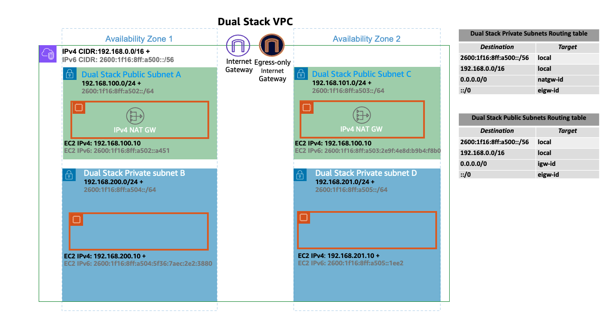
In the IPv6 world, every address is internet routable. By default, VPC allocates IPv6 CIDR from the public GUA range. VPCs do not support assigning private IPv6 addresses from the Unique Local Address (ULA) range as defined by RFC 4193 (fd00::/8 or fc00::/8). This is true even when you would like to assign an IPv6 CIDR owned by you. Egressing to the internet from Private Subnets is supported by implementing an egress-only internet gateway (EIGW) in a VPC, allowing outbound traffic while blocking all incoming traffic. The following diagram depict a Pod IPv6 Internet egress flow inside an EKS/IPv6 cluster:

Best practices for implementing IPv6 subnets can be found in the VPC user guide.
In an IPv6 EKS cluster, nodes and Pods receive public IPv6 addresses. EKS assigns IPv6 addresses to services based on Unique Local IPv6 Unicast Addresses (ULA). The ULA Service CIDR for an IPv6 cluster is automatically assigned during the cluster creation stage and cannot be specified, unlike IPv4. The following diagram depict an EKS/IPv6 based cluster control-plane & data-plan foundation pattern:

Overview¶
EKS/IPv6 is only supported in prefix mode (VPC-CNI Plug-in ENI IP assign mode). Learn more on Prefix Mode.
Prefix assignment only works on Nitro-based EC2 instances, hence EKS/IPv6 is only supported when the cluster data-plane uses EC2 Nitro-based instances.
In simple words an IPv6 prefix of /80 (Per worker-node) will yield ~10^14 IPv6 addresses, the limiting factor will no longer be IPs but Pod density (Resources wise).
IPv6 prefix assignment only occurs at the EKS worker-node bootstrap time. This behaviour is known to mitigate scenarios where high Pod churn EKS/IPv4 clusters are often delayed in Pod scheduling due to throttled API calls generated by the VPC CNI plug-in (ipamd) aimed to allocate Private IPv4 addresses in a timely fashion. It is also known to make the VPC-CNI plug-in advanced knobs tuning WARM_IP/ENI, MINIMUM_IP unnecessarily.
The following diagram zooms into an IPv6 worker-node Elastic Network Interface (ENI):

Every EKS worker-node is assigned with IPv4 and IPv6 addresses, along with corresponding DNS entries. For a given worker-node, only a single IPv4 address from the dual-stack subnet is consumed. EKS support for IPv6 enables you to communicate with IPv4 endpoints (AWS, on-premise, internet) through a highly opinionated egress-only IPv4 model. EKS implements a host-local CNI plugin, secondary to the VPC CNI plugin, which allocates and configures an IPv4 address for a Pod. The CNI plugin configures a host-specific non-routable IPv4 address for a Pod from the 169.254.172.0/22 range. The IPv4 address assigned to the Pod is unique to the worker-node and is not advertised beyond the worker-node. 169.254.172.0/22 provides up to 1024 unique IPv4 addresses which can support large instance types.
The following diagram depict the flow of an IPv6 Pod connecting to an IPv4 endpoint outside the cluster boundary (non-internet):

In the above diagram Pods will perform a DNS lookup for the endpoint and, upon receiving an IPv4 A response, Pods node-only unique IPv4 address is translated through source network address translation (SNAT) to the Private IPv4 (VPC) address of the primary network interface attached to the EC2 Worker-node.
EKS/IPv6 Pods will also need to connect to IPv4 endpoints over the internet using public IPv4 Addresses, to achieve that a similar flow exists. The following diagram depict the flow of an IPv6 Pod connecting to an IPv4 endpoint outside the cluster boundary (internet routable):

In the above diagram Pods will perform a DNS lookup for the endpoint and, upon receiving an IPv4 A response, Pods node-only unique IPv4 address is translated through source network address translation (SNAT) to the Private IPv4 (VPC) address of the primary network interface attached to the EC2 Worker-node. The Pod IPv4 Address (Source IPv4: EC2 Primary IP) is then routed to the IPv4 NAT Gateway where the EC2 Primary IP is translated (SNAT) into a valid internet routable IPv4 Public IP Address (NAT Gateway Assigned Public IP).
Any Pod-to-Pod communication across the nodes always uses an IPv6 address. VPC CNI configures iptables to handle IPv6 while blocking any IPv4 connections.
Kubernetes services will receive only IPv6 addresses (ClusterIP) from Unique Local IPv6 Unicast Addresses (ULA). The ULA Service CIDR for an IPv6 cluster is automatically assigned during EKS cluster creation stage and cannot be modified. The following diagram depict the Pod to Kubernetes Service flow:

Services are exposed to the internet using an AWS load balancer. The load balancer receives public IPv4 and IPv6 addresses, a.k.a dual-stack load balancer. For IPv4 clients accessing IPv6 cluster kubernetes services, the load balancer does IPv4 to IPv6 translation.
Amazon EKS recommends running worker nodes and Pods in private subnets. You can create public load balancers in the public subnets that load balance traffic to Pods running on nodes that are in private subnets. The following diagram depict an internet IPv4 user accessing an EKS/IPv6 Ingress based service:

Note: The above pattern requires to deploy the most recent version of the AWS load balancer controller
EKS Control Plane <-> Data Plane communication¶
EKS will provision Cross-Account ENIs (X-ENIs) in dual stack mode (IPv4/IPv6). Kubernetes node components such as kubelet and kube-proxy are configured to support dual stack. Kubelet and kube-proxy run in a hostNetwork mode and bind to both IPv4 and IPv6 addresses attached to the primary network interface of a node. The Kubernetes api-server communicates to Pods and node components via the X-ENIs is IPv6 based. Pods communicate with the api-servers via the X-ENIs, and Pod to api-server communication always uses IPv6 mode.

Recommendations¶
Maintain Access to IPv4 EKS APIs¶
EKS APIs are accessible by IPv4 only. This also includes the Cluster API Endpoint. You will not be able to access cluster endpoints and APIs from an IPv6 only network. It is required that your network supports (1) an IPv6 transition mechanism such as NAT64/DNS64 that facilitates communication between IPv6 and IPv4 hosts and (2) a DNS service that supports translations of IPv4 endpoints.
Schedule Based on Compute Resources¶
A single IPv6 prefix is sufficient to run many Pods on a single node. This also effectively removes ENI and IP limitations on the maximum number of Pods on a node. Although IPv6 removes direct dependency on max-Pods, when using prefix attachments with smaller instance types like the m5.large, youre likely to exhaust the instances CPU and memory resources long before you exhaust its IP addresses. You must set the EKS recommended maximum Pod value by hand if you are using self-managed node groups or a managed node group with a custom AMI ID.
You can use the following formula to determine the maximum number of Pods you can deploy on a node for a IPv6 EKS cluster.
-
((Number of network interfaces for instance type (number of prefixes per network interface-1)* 16) + 2
-
((3 ENIs)((10 secondary IPs per ENI-1) 16)) + 2 = 460 (real)
Managed node groups automatically calculate the maximum number of Pods for you. Avoid changing EKSs recommended value for the maximum number of Pods to avoid Pod scheduling failures due to resource limitations.
Evaluate Purpose of Existing Custom Networking¶
If custom networking is currently enabled, Amazon EKS recommends re-evaluating your need for it with IPv6. If you chose to use custom networking to address the IPv4 exhaustion issue, it is no longer necessary with IPv6. If you are utilizing custom networking to satisfy a security requirement, such as a separate network for nodes and Pods, you are encouraged to submit an EKS roadmap request.
Fargate Pods in EKS/IPv6 Cluster¶
EKS supports IPv6 for Pods running on Fargate. Pods running on Fargate will consume IPv6 and VPC Routable Private IPv4 addresses carved from the VPC CIDR ranges (IPv4&IPv6). In simple words your EKS/Fargate Pods cluster wide density will be limited to the available IPv4 and IPv6 addresses. It is recommended to size your dual-stack subnets/VPC CIDRs for future growth. You will not be able to schedule new Fargate Pods if the underlying subnet does not contain an available IPv4 address, irrespective of IPv6 available addresses.
Deploy the AWS Load Balancer Controller (LBC)¶
The upstream in-tree Kubernetes service controller does not support IPv6. We recommend using the most recent version of the AWS Load Balancer Controller add-on. The LBC will only deploy a dual-stack NLB or a dual-stack ALB upon consuming corresponding kubernetes service/ingress definition annotated with: "alb.ingress.kubernetes.io/ip-address-type: dualstack" and "alb.ingress.kubernetes.io/target-type: ip"
AWS Network Load Balancer does not support dual-stack UDP protocol address types. If you have strong requirements for low-latency, real-time streaming, online gaming, and IoT, we recommend running IPv4 clusters. To learn more about managing health checks for UDP services, please refer to How to route UDP traffic into Kubernetes.
Identify Dependencies on IMDSv2¶
EKS in IPv6 mode does not support IMDSv2 endpoints (yet). Please open a support ticket if IMDSv2 is a blocker for you to migrate to EKS/IPv6.
Custom Networking¶
By default, Amazon VPC CNI will assign Pods an IP address selected from the primary subnet. The primary subnet is the subnet CIDR that the primary ENI is attached to, usually the subnet of the node/host.
If the subnet CIDR is too small, the CNI may not be able to acquire enough secondary IP addresses to assign to your Pods. This is a common challenge for EKS IPv4 clusters.
Custom networking is one solution to this problem.
Custom networking addresses the IP exhaustion issue by assigning the node and Pod IPs from secondary VPC address spaces (CIDR). Custom networking support supports ENIConfig custom resource. The ENIConfig includes an alternate subnet CIDR range (carved from a secondary VPC CIDR), along with the security group(s) that the Pods will belong to. When custom networking is enabled, the VPC CNI creates secondary ENIs in the subnet defined under ENIConfig. The CNI assigns Pods an IP addresses from a CIDR range defined in a ENIConfig CRD.
Since the primary ENI is not used by custom networking, the maximum number of Pods you can run on a node is lower. The host network Pods continue to use IP address assigned to the primary ENI. Additionally, the primary ENI is used to handle source network translation and route Pods traffic outside the node.
Example Configuration¶
While custom networking will accept valid VPC range for secondary CIDR range, we recommend that you use CIDRs (/16) from the CG-NAT space, i.e. 100.64.0.0/10 or 198.19.0.0/16 as those are less likely to be used in a corporate setting than other RFC1918 ranges. For additional information about the permitted and restricted CIDR block associations you can use with your VPC, see IPv4 CIDR block association restrictions in the VPC and subnet sizing section of the VPC documentation.
As shown in the diagram below, the primary Elastic Network Interface (ENI) of the worker node still uses the primary VPC CIDR range (in this case 10.0.0.0/16) but the secondary ENIs use the secondary VPC CIDR Range (in this case 100.64.0.0/16). Now, in order to have the Pods use the 100.64.0.0/16 CIDR range, you must configure the CNI plugin to use custom networking. You can follow through the steps as documented here.

If you want the CNI to use custom networking, set the AWS_VPC_K8S_CNI_CUSTOM_NETWORK_CFG environment variable to true.
When AWS_VPC_K8S_CNI_CUSTOM_NETWORK_CFG=true, the CNI will assign Pod IP address from a subnet defined in ENIConfig. The ENIConfig custom resource is used to define the subnet in which Pods will be scheduled.
apiVersion : crd.k8s.amazonaws.com/v1alpha1
kind : ENIConfig
metadata:
name: us-west-2a
spec:
securityGroups:
- sg-0dff111a1d11c1c11
subnet: subnet-011b111c1f11fdf11
Upon creating the ENIconfig custom resources, you will need to create new worker nodes and drain the existing nodes. The existing worker nodes and Pods will remain unaffected.
Recommendations¶
Use Custom Networking When¶
We recommend you to consider custom networking if you are dealing with IPv4 exhaustion and cant use IPv6 yet. Amazon EKS support for RFC6598 space enables you to scale Pods beyond RFC1918 address exhaustion challenges. Please consider using prefix delegation with custom networking to increase the Pods density on a node.
You might consider custom networking if you have a security requirement to run Pods on a different network with different security group requirements. When custom networking enabled, the pods use different subnet or security groups as defined in the ENIConfig than the node's primary network interface.
Custom networking is indeed an ideal option for deploying multiple EKS clusters and applications to connect on-premise datacenter services. You can increase the number of private addresses (RFC1918) accessible to EKS in your VPC for services such as Amazon Elastic Load Balancing and NAT-GW, while using non-routable CG-NAT space for your Pods across multiple clusters. Custom networking with the transit gateway and a Shared Services VPC (including NAT gateways across several Availability Zones for high availability) enables you to deliver scalable and predictable traffic flows. This blog post describes an architectural pattern that is one of the most recommended ways to connect EKS Pods to a datacenter network using custom networking.
Avoid Custom Networking When¶
Ready to Implement IPv6¶
Custom networking can mitigate IP exhaustion issues, but it requires additional operational overhead. If you are currently deploying a dual-stack (IPv4/IPv6) VPC or if your plan includes IPv6 support, we recommend implementing IPv6 clusters instead. You can set up IPv6 EKS clusters and migrate your apps. In an IPv6 EKS cluster, both Kubernetes and Pods get an IPv6 address and can communicate in and out to both IPv4 and IPv6 endpoints. Please review best practices for Running IPv6 EKS Clusters.
Exhausted CG-NAT Space¶
Furthermore, if you're currently utilizing CIDRs from the CG-NAT space or are unable to link a secondary CIDR with your cluster VPC, you may need to explore other options, such as using an alternative CNI. We strongly recommend that you either obtain commercial support or possess the in-house knowledge to debug and submit patches to the open source CNI plugin project. Refer Alternate CNI Plugins user guide for more details.
Use Private NAT Gateway¶
Amazon VPC now offers private NAT gateway capabilities. Amazon's private NAT Gateway enables instances in private subnets to connect to other VPCs and on-premises networks with overlapping CIDRs. Consider utilizing the method described on this blog post to employ a private NAT gateway to overcome communication issues for the EKS workloads caused by overlapping CIDRs, a significant complaint expressed by our clients. Custom networking cannot address the overlapping CIDR difficulties on its own, and it adds to the configuration challenges.
The network architecture used in this blog post implementation follows the recommendations under Enable communication between overlapping networks in Amazon VPC documentation. As demonstrated in this blog post, you may expand the usage of private NAT Gateway in conjunction with RFC6598 addresses to manage customers' private IP exhaustion issues. The EKS clusters, worker nodes are deployed in the non-routable 100.64.0.0/16 VPC secondary CIDR range, whereas the private NAT gateway, NAT gateway are deployed to the routable RFC1918 CIDR ranges. The blog explains how a transit gateway is used to connect VPCs in order to facilitate communication across VPCs with overlapping non-routable CIDR ranges. For use cases in which EKS resources in a VPC's non-routable address range need to communicate with other VPCs that do not have overlapping address ranges, customers have the option of using VPC Peering to interconnect such VPCs. This method could provide potential cost savings as all data transit within an Availability Zone via a VPC peering connection is now free.

Unique network for nodes and Pods¶
If you need to isolate your nodes and Pods to a specific network for security reasons, we recommend that you deploy nodes and Pods to a subnet from a larger secondary CIDR block (e.g. 100.64.0.0/8). Following the installation of the new CIDR in your VPC, you can deploy another node group using the secondary CIDR and drain the original nodes to automatically redeploy the pods to the new worker nodes. For more information on how to implement this, see this blog post.
Custom networking is not used in the setup represented in the diagram below. Rather, Kubernetes worker nodes are deployed on subnets from your VPC's secondary VPC CIDR range, such as 100.64.0.0/10. You can keep the EKS cluster running (the control plane will remain on the original subnet/s), but the nodes and Pods will be moved to a secondary subnet/s. This is yet another, albeit unconventional, technique to mitigate the danger of IP exhaustion in a VPC. We propose draining the old nodes before redeploying the pods to the new worker nodes.

Automate Configuration with Availability Zone Labels¶
You can enable Kubernetes to automatically apply the corresponding ENIConfig for the worker node Availability Zone (AZ).
Kubernetes automatically adds the tag topology.kubernetes.io/zone to your worker nodes. Amazon EKS recommends using the availability zone as your ENI config name when you only have one secondary subnet (alternate CIDR) per AZ. Note that tag failure-domain.beta.kubernetes.io/zone is deprecated and replaced with the tag topology.kubernetes.io/zone.
- Set
namefield to the Availability Zone of your VPC. - Enable automatic configuration with this command:
if you have multiple secondary subnets per availability zone, you need create a specific ENI_CONFIG_LABEL_DEF. You might consider configuring ENI_CONFIG_LABEL_DEF as k8s.amazonaws.com/eniConfig and label nodes with custom eniConfig names, such as k8s.amazonaws.com/eniConfig=us-west-2a-subnet-1 and k8s.amazonaws.com/eniConfig=us-west-2a-subnet-2.
Replace Pods when Configuring Secondary Networking¶
Enabling custom networking does not modify existing nodes. Custom networking is a disruptive action. Rather than doing a rolling replacement of all the worker nodes in your cluster after enabling custom networking, we suggest updating the AWS CloudFormation template in the EKS Getting Started Guide with a custom resource that calls a Lambda function to update the aws-node Daemonset with the environment variable to enable custom networking before the worker nodes are provisioned.
If you had any nodes in your cluster with running Pods before you switched to the custom CNI networking feature, you should cordon and drain the nodes to gracefully shutdown the Pods and then terminate the nodes. Only new nodes matching the ENIConfig label or annotations use custom networking, and hence the Pods scheduled on these new nodes can be assigned an IP from secondary CIDR.
Calculate Max Pods per Node¶
Since the nodes primary ENI is no longer used to assign Pod IP addresses, there is a decrease in the number of Pods you can run on a given EC2 instance type. To work around this limitation you can use prefix assignment with custom networking. With prefix assignment, each secondary IP is replaced with a /28 prefix on secondary ENIs.
Consider the maximum number of Pods for an m5.large instance with custom networking.
The maximum number of Pods you can run without prefix assignment is 29
- ((3 ENIs - 1) * (10 secondary IPs per ENI - 1)) + 2 = 20
Enabling prefix attachments increases the number of Pods to 290.
- (((3 ENIs - 1) * ((10 secondary IPs per ENI - 1) * 16)) + 2 = 290
However, we suggest setting max-pods to 110 rather than 290 because the instance has a rather small number of virtual CPUs. On bigger instances, EKS recommends a max pods value of 250. When utilizing prefix attachments with smaller instance types (e.g. m5.large), it is possible that you will exhaust the instance's CPU and memory resources well before its IP addresses.
Info
When the CNI prefix allocates a /28 prefix to an ENI, it has to be a contiguous block of IP addresses. If the subnet that the prefix is generated from is highly fragmented, the prefix attachment may fail. You can mitigate this from happening by creating a new dedicated VPC for the cluster or by reserving subnet a set of CIDR exclusively for prefix attachments. Visit Subnet CIDR reservations for more information on this topic.
Identify Existing Usage of CG-NAT Space¶
Custom networking allows you to mitigate IP exhaustion issue, however it cant solve all the challenges. If you already using CG-NAT space for your cluster, or simply dont have the ability to associate a secondary CIDR with your cluster VPC, we suggest you to explore other options, like using an alternate CNI or moving to IPv6 clusters.
Prefix Mode for Linux¶
Amazon VPC CNI assigns network prefixes to Amazon EC2 network interfaces to increase the number of IP addresses available to nodes and increase pod density per node. You can configure version 1.9.0 or later of the Amazon VPC CNI add-on to assign IPv4 and IPv6 CIDRs instead of assigning individual secondary IP addresses to network interfaces.
Prefix mode is enabled by default on IPv6 clusters and is the only option supported. The VPC CNI assigns a /80 IPv6 prefix to a slot on an ENI. Please refer to the IPv6 section of this guide for further information.
With prefix assignment mode, the maximum number of elastic network interfaces per instance type remains the same, but you can now configure Amazon VPC CNI to assign /28 (16 IP addresses) IPv4 address prefixes, instead of assigning individual IPv4 addresses to the slots on network interfaces. When ENABLE_PREFIX_DELEGATION is set to true VPC CNI allocates an IP address to a Pod from the prefix assigned to an ENI. Please follow the instructions mentioned in the EKS user guide to enable Prefix IP mode.

The maximum number of IP addresses that you can assign to a network interface depends on the instance type. Each prefix that you assign to a network interface counts as one IP address. For example, a c5.large instance has a limit of 10 IPv4 addresses per network interface. Each network interface for this instance has a primary IPv4 address. If a network interface has no secondary IPv4 addresses, you can assign up to 9 prefixes to the network interface. For each additional IPv4 address that you assign to a network interface, you can assign one less prefix to the network interface. Review the AWS EC2 documentation on IP addresses per network interface per instance type and assigning prefixes to network interfaces.
During worker node initialization, the VPC CNI assigns one or more prefixes to the primary ENI. The CNI pre-allocates a prefix for faster pod startup by maintaining a warm pool. The number of prefixes to be held in warm pool can be controlled by setting environment variables.
WARM_PREFIX_TARGET, the number of prefixes to be allocated in excess of current need.WARM_IP_TARGET, the number of IP addresses to be allocated in excess of current need.MINIMUM_IP_TARGET, the minimum number of IP addresses to be available at any time.WARM_IP_TARGETandMINIMUM_IP_TARGETif set will overrideWARM_PREFIX_TARGET.
As more Pods scheduled additional prefixes will be requested for the existing ENI. First, the VPC CNI attempts to allocate a new prefix to an existing ENI. If the ENI is at capacity, the VPC CNI attempts to allocate a new ENI to the node. New ENIs will be attached until the maximum ENI limit (defined by the instance type) is reached. When a new ENI is attached, ipamd will allocate one or more prefixes needed to maintain the WARM_PREFIX_TARGET, WARM_IP_TARGET, and MINIMUM_IP_TARGET setting.

Recommendations¶
Use Prefix Mode when¶
Use prefix mode if you are experiencing Pod density issue on the worker nodes. To avoid VPC CNI errors, we recommend examining the subnets for contiguous block of addresses for /28 prefix before migrate to prefix mode. Please refer Use Subnet Reservations to Avoid Subnet Fragmentation (IPv4) section for Subnet reservation details.
For backward compatibility, the max-pods limit is set to support secondary IP mode. To increase the pod density, please specify the max-pods value to Kubelet and --use-max-pods=false as the user data for the nodes. You may consider using the max-pod-calculator.sh script to calculate EKSs recommended maximum number of pods for a given instance type. Refer to the EKS user guide for example user data.
./max-pods-calculator.sh --instance-type m5.large --cni-version ``1.9``.0 --cni-prefix-delegation-enabled
Prefix assignment mode is especially relevant for users of CNI custom networking where the primary ENI is not used for pods. With prefix assignment, you can still attach more IPs on nearly every Nitro instance type, even without the primary ENI used for pods.
Avoid Prefix Mode when¶
If your subnet is very fragmented and has insufficient available IP addresses to create /28 prefixes, avoid using prefix mode. The prefix attachment may fail if the subnet from which the prefix is produced is fragmented (a heavily used subnet with scattered secondary IP addresses). This problem may be avoided by creating a new subnet and reserving a prefix.
In prefix mode, the security group assigned to the worker nodes is shared by the Pods. Consider using Security groups for Podsif you have a security requirement to achieve compliance by running applications with varying network security requirements on shared compute resources.
Use Similar Instance Types in the same Node Group¶
Your node group may contain instances of many types. If an instance has a low maximum pod count, that value is applied to all nodes in the node group. Consider using similar instance types in a node group to maximize node use. We recommend configuring node.kubernetes.io/instance-type in the requirements part of the provisioner API if you are using Karpenter for automated node scaling.
Warning
The maximum pod count for all nodes in a particular node group is defined by the lowest maximum pod count of any single instance type in the node group.
Configure WARM_PREFIX_TARGET to conserve IPv4 addresses¶
The installation manifests default value for WARM_PREFIX_TARGET is 1. In most cases, the recommended value of 1 for WARM_PREFIX_TARGET will provide a good mix of fast pod launch times while minimizing unused IP addresses assigned to the instance.
If you have a need to further conserve IPv4 addresses per node use WARM_IP_TARGET and MINIMUM_IP_TARGET settings, which override WARM_PREFIX_TARGET when configured. By setting WARM_IP_TARGET to a value less than 16, you can prevent the CNI from keeping an entire excess prefix attached.
Prefer allocating new prefixes over attaching a new ENI¶
Allocating an additional prefix to an existing ENI is a faster EC2 API operation than creating and attaching a new ENI to the instance. Using prefixes improves performance while being frugal with IPv4 address allocation. Attaching a prefix typically completes in under a second, whereas attaching a new ENI can take up to 10 seconds. For most use cases, the CNI will only need a single ENI per worker node when running in prefix mode. If you can afford (in the worst case) up to 15 unused IPs per node, we strongly recommend using the newer prefix assignment networking mode, and realizing the performance and efficiency gains that come with it.
Use Subnet Reservations to Avoid Subnet Fragmentation (IPv4)¶
When EC2 allocates a /28 IPv4 prefix to an ENI, it has to be a contiguous block of IP addresses from your subnet. If the subnet that the prefix is generated from is fragmented (a highly used subnet with scattered secondary IP addresses), the prefix attachment may fail, and you will see the following error message in the VPC CNI logs:
failed to allocate a private IP/Prefix address: InsufficientCidrBlocks: There are not enough free cidr blocks in the specified subnet to satisfy the request.
To avoid fragmentation and have sufficient contiguous space for creating prefixes, you may use VPC Subnet CIDR reservations to reserve IP space within a subnet for exclusive use by prefixes. Once you create a reservation, the VPC CNI plugin will call EC2 APIs to assign prefixes that are automatically allocated from the reserved space.
It is recommended to create a new subnet, reserve space for prefixes, and enable prefix assignment with VPC CNI for worker nodes running in that subnet. If the new subnet is dedicated only to Pods running in your EKS cluster with VPC CNI prefix assignment enabled, then you can skip the prefix reservation step.
Avoid downgrading VPC CNI¶
Prefix mode works with VPC CNI version 1.9.0 and later. Downgrading of the Amazon VPC CNI add-on to a version lower than 1.9.0 must be avoided once the prefix mode is enabled and prefixes are assigned to ENIs. You must delete and recreate nodes if you decide to downgrade the VPC CNI.
Replace all nodes during the transition to Prefix Delegation¶
It is highly recommended that you create new node groups to increase the number of available IP addresses rather than doing rolling replacement of existing worker nodes. Cordon and drain all the existing nodes to safely evict all of your existing Pods. To prevent service disruptions, we suggest implementing Pod Disruption Budgets on your production clusters for critical workloads. Pods on new nodes will be assigned an IP from a prefix assigned to an ENI. After you confirm the Pods are running, you can delete the old nodes and node groups. If you are using managed node groups, please follow steps mentioned here to safely delete a node group.
Prefix Mode for Windows¶
In Amazon EKS, each Pod that runs on a Windows host is assigned a secondary IP address by the VPC resource controller by default. This IP address is a VPC-routable address that is allocated from the host's subnet. On Linux, each ENI attached to the instance has multiple slots that can be populated by a secondary IP address or a /28 CIDR (a prefix). Windows hosts, however, only support a single ENI and its available slots. Using only secondary IP addresses can artifically limit the number of pods you can run on a Windows host, even when there is an abundance of IP addresses available for assignment.
In order to increase the pod density on Windows hosts, especially when using smaller instance types, you can enable Prefix Delegation for Windows nodes. When prefix delegation is enabled, /28 IPv4 prefixes are assigned to ENI slots rather than secondary IP addresses. Prefix delegation can be enabled by adding the enable-windows-prefix-delegation: "true" entry to the amazon-vpc-cni config map. This is the same config map where you need to set enable-windows-ipam: "true" entry for enabling Windows support.
Please follow the instructions mentioned in the EKS user guide to enable Prefix Delegation mode for Windows nodes.
Figure: Comparison of Secondary IP mode with Prefix Delegation mode
The maximum number of IP addresses you can assign to a network interface depends on the instance type and its size. Each prefix assigned to a network interface consumes an available slot. For example, a c5.large instance has a limit of 10 slots per network interface. The first slot on a network interface is always consumed by the interface's primary IP address, leaving you with 9 slots for prefixes and/or secondary IP addresses. If these slots are assigned prefixes, the node can support (9 * 16) 144 IP address whereas if they're assigned secondary IP addresses it can only support 9 IP addresses. See the documentation on IP addresses per network interface per instance type and assigning prefixes to network interfaces for further information.
During worker node initialization, the VPC Resource Controller assigns one or more prefixes to the primary ENI for faster pod startup by maintaining a warm pool of the IP addresses. The number of prefixes to be held in warm pool can be controlled by setting the following configuration parameters in amazon-vpc-cni config map.
warm-prefix-target, the number of prefixes to be allocated in excess of current need.warm-ip-target, the number of IP addresses to be allocated in excess of current need.minimum-ip-target, the minimum number of IP addresses to be available at any time.warm-ip-targetand/orminimum-ip-targetif set will overridewarm-prefix-target.
As more Pods are scheduled on the node, additional prefixes will be requested for the existing ENI. When a Pod is scheduled on the node, VPC Resource Controller would first try to assign an IPv4 address from the existing prefixes on the node. If that is not possible, then a new IPv4 prefix will be requested as long as the subnet has the required capacity.
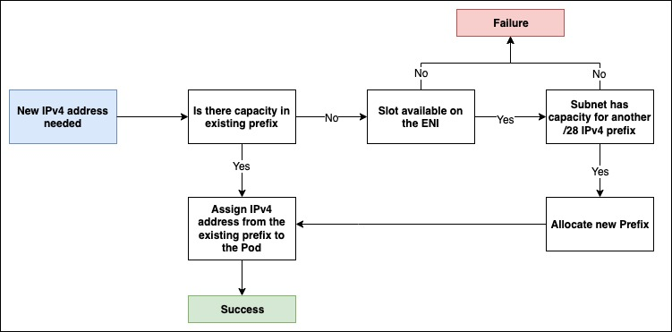
Figure: Workflow during assignment of IPv4 address to the Pod
Recommendations¶
Use Prefix Delegation when¶
Use prefix delegation if you are experiencing Pod density issues on the worker nodes. To avoid errors, we recommend examining the subnets for contiguous block of addresses for /28 prefix before migrating to prefix mode. Please refer Use Subnet Reservations to Avoid Subnet Fragmentation (IPv4) section for Subnet reservation details.
By default, the max-pods on Windows nodes is set to 110. For the vast majority of instance types, this should be sufficient. If you want to increase or decrease this limit, then add the following to the bootstrap command in your user data:
Avoid Prefix Delegation when¶
If your subnet is very fragmented and has insufficient available IP addresses to create /28 prefixes, avoid using prefix mode. The prefix attachment may fail if the subnet from which the prefix is produced is fragmented (a heavily used subnet with scattered secondary IP addresses). This problem may be avoided by creating a new subnet and reserving a prefix.
Configure parameters for prefix delegation to conserve IPv4 addresses¶
warm-prefix-target, warm-ip-target, and minimum-ip-target can be used to fine tune the behaviour of pre-scaling and dynamic scaling with prefixes. By default, the following values are used:
Use Subnet Reservations to Avoid Subnet Fragmentation (IPv4)¶
When EC2 allocates a /28 IPv4 prefix to an ENI, it has to be a contiguous block of IP addresses from your subnet. If the subnet that the prefix is generated from is fragmented (a highly used subnet with scattered secondary IP addresses), the prefix attachment may fail, and you will see the following node event:
InsufficientCidrBlocks: The specified subnet does not have enough free cidr blocks to satisfy the request
It is recommended to create a new subnet, reserve space for prefixes, and enable prefix assignment for worker nodes running in that subnet. If the new subnet is dedicated only to Pods running in your EKS cluster with prefix delegation enabled, then you can skip the prefix reservation step.
Replace all nodes when migrating from Secondary IP mode to Prefix Delegation mode or vice versa¶
It is highly recommended that you create new node groups to increase the number of available IP addresses rather than doing rolling replacement of existing worker nodes.
When using self-managed node groups, the steps for transition would be:
- Increase the capacity in your cluster such that the new nodes would be able to accomodate your workloads
- Enable/Disable the Prefix Delegation feature for Windows
- Cordon and drain all the existing nodes to safely evict all of your existing Pods. To prevent service disruptions, we suggest implementing Pod Disruption Budgets on your production clusters for critical workloads.
- After you confirm the Pods are running, you can delete the old nodes and node groups. Pods on new nodes will be assigned an IPv4 address from a prefix assigned to the node ENI.
When using managed node groups, the steps for transition would be:
- Enable/Disable the Prefix Delegation feature for Windows
- Update the node group using the steps mentioned here. This performs similar steps as above but are managed by EKS.
Warning
Run all Pods on a node in the same mode
For Windows, we recommend that you avoid running Pods in both secondary IP mode and prefix delegation mode at the same time. Such a situation can arise when you migrate from secondary IP mode to prefix delegation mode or vice versa with running Windows workloads.
While this will not impact your running Pods, there can be inconsistency with respect to the node's IP address capacity. For example, consider that a t3.xlarge node which has 14 slots for secondary IPv4 addresses. If you are running 10 Pods, then 10 slots on the ENI will be consumed by secondary IP addresses. After you enable prefix delegation the capacity advertised to the kube-api server would be (14 slots * 16 ip addresses per prefix) 244 but the actual capacity at that moment would be (4 remaining slots * 16 addresses per prefix) 64. This inconsistency between the amount of capacity advertised and the actual amount of capacity (remaining slots) can cause issues if you run more Pods than there are IP addresses available for assignment.
That being said, you can use the migration strategy as described above to safely transition your Pods from secondary IP address to addresses obtained from prefixes. When toggling between the modes, the Pods will continue running normally and:
- When toggling from secondary IP mode to prefix delegation mode, the secondary IP addresses assigned to the running pods will not be released. Prefixes will be assigned to the free slots. Once a pod is terminated, the secondary IP and slot it was using will be released.
- When toggling from prefix delegation mode to secondary IP mode, a prefix will be released when all the IPs within its range are no longer allocated to pods. If any IP from the prefix is assigned to a pod then that prefix will be kept until the pods are terminated.
Debugging Issues with Prefix Delegation¶
You can use our debugging guide here to deep dive into the issue you are facing with prefix delegation on Windows.
Security Groups Per Pod¶
An AWS security group acts as a virtual firewall for EC2 instances to control inbound and outbound traffic. By default, the Amazon VPC CNI will use security groups associated with the primary ENI on the node. More specifically, every ENI associated with the instance will have the same EC2 Security Groups. Thus, every Pod on a node shares the same security groups as the node it runs on.
As seen in the image below, all application Pods operating on worker nodes will have access to the RDS database service (considering RDS inbound allows node security group). Security groups are too coarse grained because they apply to all Pods running on a node. Security groups for Pods provides network segmentation for workloads which is an essential part a good defense in depth strategy.
 With security groups for Pods, you can improve compute efficiency by running applications with varying network security requirements on shared compute resources. Multiple types of security rules, such as Pod-to-Pod and Pod-to-External AWS services, can be defined in a single place with EC2 security groups and applied to workloads with Kubernetes native APIs. The image below shows security groups applied at the Pod level and how they simplify your application deployment and node architecture. The Pod can now access Amazon RDS database.
With security groups for Pods, you can improve compute efficiency by running applications with varying network security requirements on shared compute resources. Multiple types of security rules, such as Pod-to-Pod and Pod-to-External AWS services, can be defined in a single place with EC2 security groups and applied to workloads with Kubernetes native APIs. The image below shows security groups applied at the Pod level and how they simplify your application deployment and node architecture. The Pod can now access Amazon RDS database.

You can enable security groups for Pods by setting ENABLE_POD_ENI=true for VPC CNI. Once enabled, the VPC Resource Controller running on the control plane (managed by EKS) creates and attaches a trunk interface called aws-k8s-trunk-eni to the node. The trunk interface acts as a standard network interface attached to the instance. To manage trunk interfaces, you must add the AmazonEKSVPCResourceController managed policy to the cluster role that goes with your Amazon EKS cluster.
The controller also creates branch interfaces named "aws-k8s-branch-eni" and associates them with the trunk interface. Pods are assigned a security group using the SecurityGroupPolicy custom resource and are associated with a branch interface. Since security groups are specified with network interfaces, we are now able to schedule Pods requiring specific security groups on these additional network interfaces. Review theEKS User Guide Section on Security Groups for Pods, including deployment prerequisites.
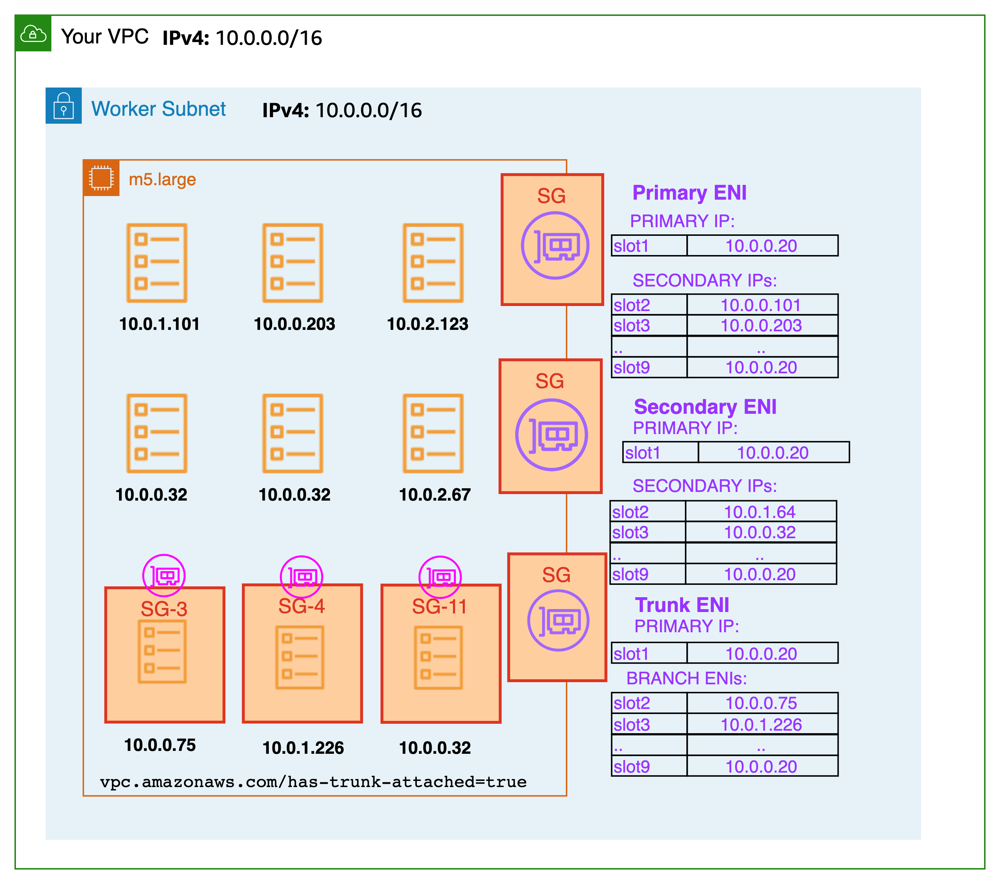
Branch interface capacity is additive to existing instance type limits for secondary IP addresses. Pods that use security groups are not accounted for in the max-pods formula and when you use security group for pods you need to consider raising the max-pods value or be ok with running fewer pods than the node can actually support.
A m5.large can have up to 9 branch network interfaces and up to 27 secondary IP addresses assigned to its standard network interfaces. As shown in the example below, the default max-pods for a m5.large is 29, and EKS counts the Pods that use security groups towards the maximum Pods. Please see the EKS user guide for instructions on how to change the max-pods for nodes.
When security groups for Pods are used in combination with custom networking, the security group defined in security groups for Pods is used rather than the security group specified in the ENIConfig. As a result, when custom networking is enabled, carefully assess security group ordering while using security groups per Pod.
Recommendations¶
Disable TCP Early Demux for Liveness Probe¶
If are you using liveness or readiness probes, you also need to disable TCP early demux, so that the kubelet can connect to Pods on branch network interfaces via TCP. This is only required in strict mode. To do this run the following command:
Under the initContainer section, change the value for DISABLE_TCP_EARLY_DEMUX to true.
Use Security Group For Pods to leverage existing AWS configuration investment.¶
Security groups makes it easier to restrict network access to VPC resources, such as RDS databases or EC2 instances. One clear advantage of security groups per Pod is the opportunity to reuse existing AWS security group resources. If you are using security groups as a network firewall to limit access to your AWS services, we propose applying security groups to Pods using branch ENIs. Consider using security groups for Pods if you are transferring apps from EC2 instances to EKS and limit access to other AWS services with security groups.
Configure Pod Security Group Enforcing Mode¶
Amazon VPC CNI plugin version 1.11 added a new setting named POD_SECURITY_GROUP_ENFORCING_MODE (enforcing mode). The enforcing mode controls both which security groups apply to the pod, and if source NAT is enabled. You may specify the enforcing mode as either strict or standard. Strict is the default, reflecting the previous behavior of the VPC CNI with ENABLE_POD_ENI set to true.
In Strict Mode, only the branch ENI security groups are enforced. The source NAT is also disabled.
In Standard Mode, the security groups associated with both the primary ENI and branch ENI (associated with the pod) are applied. Network traffic must comply with both security groups.
Warning
Any mode change will only impact newly launched Pods. Existing Pods will use the mode that was configured when the Pod was created. Customers will need to recycle existing Pods with security groups if they want to change the traffic behavior.
Enforcing Mode: Use Strict mode for isolating pod and node traffic:¶
By default, security groups for Pods is set to "strict mode." Use this setting if you must completely separate Pod traffic from the rest of the node's traffic. In strict mode, the source NAT is turned off so the branch ENI outbound security groups can be used.
Warning
When strict mode is enabled, all outbound traffic from a pod will leave the node and enter the VPC network. Traffic between pods on the same node will go over the VPC. This increases VPC traffic and limits node-based features. The NodeLocal DNSCache is not supported with strict mode.
Enforcing Mode: Use Standard mode in the following situations¶
Client source IP visible to the containers in the Pod
If you need to keep the client source IP visible to the containers in the Pod, consider setting POD_SECURITY_GROUP_ENFORCING_MODE to standard. Kubernetes services support externalTrafficPolicy=local to support preservation of the client source IP (default type cluster). You can now run Kubernetes services of type NodePort and LoadBalancer using instance targets with an externalTrafficPolicy set to Local in the standard mode. Local preserves the client source IP and avoids a second hop for LoadBalancer and NodePort type Services.
Deploying NodeLocal DNSCache
When using security groups for pods, configure standard mode to support Pods that use NodeLocal DNSCache. NodeLocal DNSCache improves Cluster DNS performance by running a DNS caching agent on cluster nodes as a DaemonSet. This will help the pods that have the highest DNS QPS requirements to query local kube-dns/CoreDNS having a local cache, which will improve the latency.
NodeLocal DNSCache is not supported in strict mode as all network traffic, even to the node, enters the VPC.
Supporting Kubernetes Network Policy
We recommend using standard enforcing mode when using network policy with Pods that have associated security groups.
We strongly recommend to utilize security groups for Pods to limit network-level access to AWS services that are not part of a cluster. Consider network policies to restrict network traffic between Pods inside a cluster, often known as East/West traffic.
Identify Incompatibilities with Security Groups per Pod¶
Windows-based and non-nitro instances do not support security groups for Pods. To utilize security groups with Pods, the instances must be tagged with isTrunkingEnabled. Use network policies to manage access between Pods rather than security groups if your Pods do not depend on any AWS services within or outside of your VPC.
Use Security Groups per Pod to efficiently control traffic to AWS Services¶
If an application running within the EKS cluster has to communicate with another resource within the VPC, e.g. an RDS database, then consider using SGs for pods. While there are policy engines that allow you to specify an CIDR or a DNS name, they are a less optimal choice when communicating with AWS services that have endpoints that reside within a VPC.
In contrast, Kubernetes network policies provide a mechanism for controlling ingress and egress traffic both within and outside the cluster. Kubernetes network policies should be considered if your application has limited dependencies on other AWS services. You may configure network policies that specify egress rules based on CIDR ranges to limit access to AWS services as opposed to AWS native semantics like SGs. You may use Kubernetes network policies to control network traffic between Pods (often referred to as East/West traffic) and between Pods and external services. Kubernetes network policies are implemented at OSI levels 3 and 4.
Amazon EKS allows you to use network policy engines such as Calico and Cilium. By default, the network policy engines are not installed. Please check the respective install guides for instructions on how to set up. For more information on how to use network policy, see EKS Security best practices. The DNS hostnames feature is available in the enterprise versions of network policy engines, which could be useful for controlling traffic between Kubernetes Services/Pods and resources that run outside of AWS. Also, you can consider DNS hostname support for AWS services that don't support security groups by default.
Tag a single Security Group to use AWS Loadbalancer Controller¶
When many security groups are allocated to a Pod, Amazon EKS recommends tagging a single security group with kubernetes.io/cluster/$name shared or owned. The tag allows the AWS Loadbalancer Controller to update the rules of security groups to route traffic to the Pods. If just one security group is given to a Pod, the assignment of a tag is optional. Permissions set in a security group are additive, therefore tagging a single security group is sufficient for the loadbalancer controller to locate and reconcile the rules. It also helps to adhere to the default quotas defined by security groups.
Configure NAT for Outbound Traffic¶
Source NAT is disabled for outbound traffic from Pods that are assigned security groups. For Pods using security groups that require access the internet launch worker nodes on private subnets configured with a NAT gateway or instance and enable external SNAT in the CNI.
Deploy Pods with Security Groups to Private Subnets¶
Pods that are assigned security groups must be run on nodes that are deployed on to private subnets. Note that Pods with assigned security groups deployed to public subnets will not able to access the internet.
Verify terminationGracePeriodSeconds in Pod Specification File¶
Ensure that terminationGracePeriodSeconds is non-zero in your Pod specification file (default 30 seconds). This is essential in order for Amazon VPC CNI to delete the Pod network from the worker node. When set to zero, the CNI plugin does not remove the Pod network from the host, and the branch ENI is not effectively cleaned up.
Using Security Groups for Pods with Fargate¶
Security groups for Pods that run on Fargate work very similarly to Pods that run on EC2 worker nodes. For example, you have to create the security group before referencing it in the SecurityGroupPolicy you associate with your Fargate Pod. By default, the cluster security group is assiged to all Fargate Pods when you don't explicitly assign a SecurityGroupPolicy to a Fargate Pod. For simplicity's sake, you may want to add the cluster security group to a Fagate Pod's SecurityGroupPolicy otherwise you will have to add the minimum security group rules to your security group. You can find the cluster security group using the describe-cluster API.
aws eks describe-cluster --name CLUSTER_NAME --query 'cluster.resourcesVpcConfig.clusterSecurityGroupId'
cat >my-fargate-sg-policy.yaml <<EOF
apiVersion: vpcresources.k8s.aws/v1beta1
kind: SecurityGroupPolicy
metadata:
name: my-fargate-sg-policy
namespace: my-fargate-namespace
spec:
podSelector:
matchLabels:
role: my-fargate-role
securityGroups:
groupIds:
- cluster_security_group_id
- my_fargate_pod_security_group_id
EOF
The minimum security group rules are listed here. These rules allow Fargate Pods to communicate with in-cluster services like kube-apiserver, kubelet, and CoreDNS. You also need add rules to allow inbound and outbound connections to and from your Fargate Pod. This will allow your Pod to communicate with other Pods or resources in your VPC. Additionally, you have to include rules for Fargate to pull container images from Amazon ECR or other container registries such as DockerHub. For more information, see AWS IP address ranges in the AWS General Reference.
You can use the below commands to find the security groups applied to a Fargate Pod.
Note down the eniId from above command.
aws ec2 describe-network-interfaces --network-interface-ids ENI_ID --query 'NetworkInterfaces[*].Groups[*]'
Existing Fargate pods must be deleted and recreated in order for new security groups to be applied. For instance, the following command initiates the deployment of the example-app. To update specific pods, you can change the namespace and deployment name in the below command.
Avoiding Errors & Timeouts with Kubernetes Applications and AWS Load Balancers¶
After creating the necessary Kubernetes resources (Service, Deployment, Ingress, etc), your pods should be able to receive traffic from your clients through an Elastic Load Balancer. However, you may find that errors, timeouts, or connection resets are being generated when you make changes to the application or Kubernetes environment. Those changes could trigger an application deployment or a scaling action (either manual or automatic).
Unfortunately, those errors may be generated even when your application is not logging problems. This is because the Kubernetes systems controlling the resources in your cluster may be running faster than the AWS systems that control the Load Balancer's target registration and health. Your Pods may also start receiving traffic before your application is ready to receive requests.
Lets review the process through which a pod becomes Ready and how traffic can be routed into the pods.
Pod Readiness¶
This diagram from a 2019 Kubecon talk, shows the steps taken for a pod to become Ready and receive traffic for a LoadBalancer service:
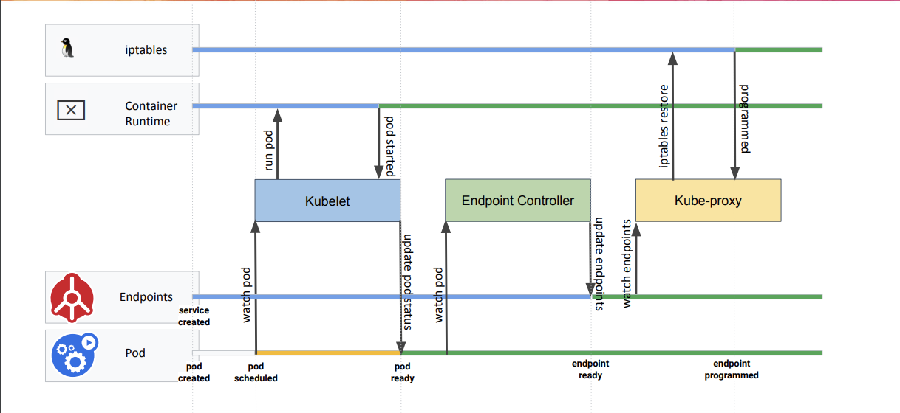
Ready? A Deep Dive into Pod Readiness Gates for Service Health... - Minhan Xia & Ping Zou
When a pod that is a member of a NodePort Service is created, Kubernetes will go through the following steps:
- The pod is created on the Kubernetes control plane (i.e. from a
kubectlcommand or scaling action). - The pod is scheduled by the
kube-schedulerand is assigned to a node in the cluster. - The kubelet running on the assigned node will receive the update (via
watch) and will communicate with its local Container Runtime to start the containers specified in the pod.- When the containers have started running (and optionally pass
ReadinessProbes), the kubelet will update the pod status toReadyby sending an update to thekube-apiserver
- When the containers have started running (and optionally pass
- The Endpoint Controller will receive an update (via
watch) that there is a new pod that isReadyto be added to the Endpoints list for the Service and will add the pod IP/Port tuples to the appropriate endpoints array. kube-proxyreceives an update (viawatch) that there is a new IP/Port to add to the iptables rules for the Service.- The local iptables rules on the worker node will be updated with the additional target pod for the NodePort Service.
Note
When using an Ingress resource and Ingress Controller (like the AWS Load Balancer Controller) step 5 is handled by the relevant controller instead of kube-proxy. The controller will then take the necessary configuration steps (such as registering/deregistering the target to a load balancer) to allow traffic to flow as expected.
When a pod is terminated, or changes to a not-ready state, a similar process occurs. The API server will receive either an update from a controller, kubelet, or kubectl client to terminate the pod. Steps 3-5 continue from there but will remove the Pod IP/Tuple from the endpoints list and iptables rules rather than insert.
Impact on Deployments¶
Below is a diagram showing the steps taken when an application deployment triggers the replacement of pods:
Ready? A Deep Dive into Pod Readiness Gates for Service Health... - Minhan Xia & Ping Zou
Of note in this diagram is that the second Pod will not be deployed until the first pod has reached the Ready state. Steps 4 and 5 from the previous section will also happen in parallel with the deployment actions above.
This means that the actions to propagate the new pod status may still be in-progress when the Deployment controller moves on to the next pods. Since this process also terminates the older version of pods, this could lead to a situation where the pods have reached a Ready status but those changes are still being propagated and the older versions of the pod have been terminated.
This problem is exacerbated when working with load balancers from Cloud Providers like AWS as the Kubernetes systems described above do not, by default, take into account registration times or health checks on the Load Balancer. This means the Deployment update could completely cycle through the pods, but the Load Balancer has not finished performing the health checks or registrating the new Pods which could cause an outage.
A similar problem occurs when a pod is terminated. Depending on the Load Balancer configuration the Pod may take a minute or two to deregister and stop taking new requests. Kubernetes does not delay rolling deployments for this deregistration, this can lead to a state where the Load Balancer is still sending traffic to the IP/port for a target Pod that has already been terminated.
To avoid these problems we can add configuration to ensure the Kubernetes systems take actions more in line with the AWS Load Balancer behavior.
Recommendations¶
Use IP Target-Type Load Balancers¶
When creating a LoadBalancer type service the traffic is sent from the load balancer to any node in the cluster via Instance target type registration. Each node then redirects the traffic from the NodePort to a Pod/IP tuple in the Services Endpoints array, this target could be running on a separate worker node
Note
Remember that array should only have Ready pods

This adds an additional hop to your request, and adds complexity to the Load Balancer configuration. For example, if the Load Balancer above was configured with session affinity, that affinity could only hold between the load balancer and the backend node (depending on the affinity configuration).
Since the Load Balancer is not communicating with the backend Pod directly, controlling the traffic flow and timing with the Kubernetes systems becomes more difficult.
When using the AWS Load Balancer Controller, IP target type can be used to register the Pod IP/Port tuples with the Load Balancer directly:

This simplifies the traffic path from the Load Balancer to the target Pods. This means when a new target is registered we can be sure that target is a Ready Pod IP and port, the health checks from the load balancer will hit the Pod Directly, and when reviewing VPC flow logs or monitoring utilities traffic between the Load Balancer and the Pods will be easily traceable.
Using IP registration also allows us to control the timing and configuration of the traffic directly against the backend Pods, rather than trying to manage connections through the NodePort rules as well.
Utilize Pod Readiness Gates¶
Pod Readiness Gates are additional requirements that must be met before the Pod is allowed to reach the Ready state.
The readiness gates ensure that Kubernetes doesnt move too fast when creating new replicas during a deployment and avoids the situation where Kubernetes has completed the deployment but the new Pods have not completed registration.
To enable these you will need to:
- Deploy the latest version of the AWS Load Balancer Controller (Refer to the documentation if upgrading older versions)
- Label the namespace where the target pods are running with the
elbv2.k8s.aws/pod-readiness-gate-inject: enabledlabel to inject Pod Readiness Gates automatically. - To ensure all of your pods in a namespace get the readiness gate config, you need create your Ingress or Service and label the namespace before creating the pods.
Ensure Pods are Deregistered from Load Balancers before Termination¶
When a pod is terminated steps 4 and 5 from the pod readiness section occur at the same time that the container processes receive the termination signals. This means that if your container is able to shut down quickly it may shut down faster than the Load Balancer is able to deregister the target. To avoid this situation adjust the Pod spec with:
- Add a
preStoplifecycle hook to allow the application to deregister and gracefully close connections. This hook is called immediately before a container is terminated due to an API request or management event such as a liveness/startup probe failure, preemption, resource contention and others. Critically, this hook is called and allowed to complete before the termination signals are sent, provided the grace period is long enough to accommodate the execution.
A simple sleep command like the one above can be used to introduce a short delay between when the pod is marked Terminating (and Load Balancer deregistration begins) and when the termination signal is sent to the container process. If needed this hook can also be leveraged for more advanced application termination/shutdown procedures.
- Extend the
terminationGracePeriodSecondsto accommodate the entireprestopexecution time, as well as the time your application takes to gracefully respond to the termination signal. In the example below the grace period is extended to 200s which allows the entiresleep 180command to complete and then an extra 20s just to be sure my app can shutdown gracefully.
spec:
terminationGracePeriodSeconds: 200
containers:
- name: webapp
image: webapp-st:v1.3
[...]
lifecycle:
preStop:
exec:
command: ["/bin/sh", "-c", "sleep 180"]
Ensure Pods have Readiness Probes¶
When creating Pods in Kubernetes the default Readiness state is Ready, however most applications take a moment or two to instantiate and become ready for requests. You can define a readinessProbe in the Pod spec with an exec command or network request that is used to determine if the application has completed its start up and is ready for traffic.
Pods that are created with a readinessProbe defined start in a NotReady state, and only change to Ready when the readinessProbe is successful. This ensures that applications are not put in-service until the application has completed startup.
Liveness probes are recommended to allow for application restarts when entering a broken state, e.g. deadlocks, however care should be taken with stateful applications as liveness failures will trigger a restart of the application. Startup probes can also be leveraged for applications that are slow to start.
The below probes use HTTP probes against port 80 to check when the web application becomes ready (the same probe configuration is also used for the liveness probe):
[...]
ports:
- containerPort: 80
livenessProbe:
httpGet:
path: /
port: 80
failureThreshold: 1
periodSeconds: 10
initialDelaySeconds: 5
readinessProbe:
httpGet:
path: /
port: 80
periodSeconds: 5
[...]
Configure a Pod Disruption Budget¶
A Pod Disruption Budget (PDB) limits the number of Pods of a replicated application that are down simultaneously from voluntary disruptions. For example, a quorum-based application would like to ensure that the number of replicas running is never brought below the number needed for a quorum. A web front end might want to ensure that the number of replicas serving load never falls below a certain percentage of the total.
The PDB will protect the application against things like the nodes being drained, or application deployments. The PDB ensures that a minimum number or percentage of pods remain available while taking these actions.
Attention
PDBs will NOT protect the application against involuntary disruptions like a failure in the host OS or loss of network connectivity.
The example below ensures that there is always at least 1 Pod available with the label app: echoserver. You can configure the correct replica count for your application or use a percentage:
apiVersion: policy/v1beta1
kind: PodDisruptionBudget
metadata:
name: echoserver-pdb
namespace: echoserver
spec:
minAvailable: 1
selector:
matchLabels:
app: echoserver
Gracefully handle Termination Signals¶
When a pod is Terminated the application running inside the container will receive two Signals. The first is the SIGTERM signal, which is a polite request that the process cease execution. This signal can be blocked or the application could simply ignore this signal, so after the terminationGracePeriodSeconds has elapsed the application will receive the SIGKILL signal. SIGKILL is used to forcibly stop a process, it cannot be blocked, handled or ignored, and is therefore always fatal.
These Signals are used by the container runtime to trigger your application to shutdown. The SIGTERM signal will also be sent after the preStop hook has executed. With the above configuration the preStop hook will ensure the pod has been deregistered from the Load Balancer, so the application can then gracefully closes any remaining open connections when the SIGTERM signal is received.
Note
Signal handling in container environments can be complicated when using wrapper scripts for the entrypoint of your application as the script will be PID 1 and may not forward the signal to your application.
Be Wary of the Deregistration Delay¶
Elastic Load Balancing stops sending requests to targets that are deregistering. By default, Elastic Load Balancing waits 300 seconds before completing the deregistration process, which can help in-flight requests to the target to complete. To change the amount of time that Elastic Load Balancing waits, update the deregistration delay value.
The initial state of a deregistering target is draining. After the deregistration delay elapses, the deregistration process completes and the state of the target is unused. If the target is part of an Auto Scaling group, it can be terminated and replaced.
If a deregistering target has no in-flight requests and no active connections, Elastic Load Balancing immediately completes the deregistration process, without waiting for the deregistration delay to elapse.
Attention
Even though target deregistration is complete, the status of the target is displayed as draining until the deregistration delay timeout expires. After the timeout expires, the target transitions to an unused state.
This can be configured using annotations on the Ingress resource using thealb.ingress.kubernetes.io/target-group-attributes annotation. Example:
apiVersion: networking.k8s.io/v1
kind: Ingress
metadata:
name: echoserver-ip
namespace: echoserver
annotations:
alb.ingress.kubernetes.io/scheme: internet-facing
alb.ingress.kubernetes.io/target-type: ip
alb.ingress.kubernetes.io/load-balancer-name: echoserver-ip
alb.ingress.kubernetes.io/target-group-attributes: deregistration_delay.timeout_seconds=30
spec:
ingressClassName: alb
rules:
- host: echoserver.example.com
http:
paths:
- path: /
pathType: Exact
backend:
service:
name: echoserver-service
port:
number: 8080
Monitoring EKS workloads for Network performance issues¶
Monitoring CoreDNS traffic for DNS throttling issues¶
Running DNS intensive workloads can sometimes experience intermittent CoreDNS failures due to DNS throttling, and this can impact applications where you may encounter occasional UnknownHostException errors.
The Deployment for CoreDNS has an anti-affinity policy that instructs the Kubernetes scheduler to run instances of CoreDNS on separate worker nodes in the cluster, i.e. it should avoid co-locating replicas on the same worker node. This effectively reduces the number of DNS queries per network interface because traffic from each replica is routed through a different ENI. If you notice that DNS queries are being throttled because of the 1024 packets per second limit, you can 1) try increasing the number of CoreDNS replicas or 2) implement NodeLocal DNSCache. See Monitor CoreDNS Metrics for further information.
Challenge¶
- Packet drop happens in seconds and it can be tricky for us to properly monitor these patterns to determine if DNS throttling is actually happening.
- DNS queries are throttled at the elastic network interface level. So, throttled queries don't appear in the query logging.
- Flow logs do not capture all IP traffic. E.g. Traffic generated by instances when they contact the Amazon DNS server. If you use your own DNS server, then all traffic to that DNS server is logged
Solution¶
An easy way to identify the DNS throttling issues in worker nodes is by capturing linklocal_allowance_exceeded metric. The linklocal_allowance_exceeded is number of packets dropped because the PPS of the traffic to local proxy services exceeded the maximum for the network interface. This impacts traffic to the DNS service, the Instance Metadata Service, and the Amazon Time Sync Service. Instead of tracking this event real-time, we can stream this metric to Amazon Managed Service for Prometheus as well and can have them visualized in Amazon Managed Grafana
Monitoring DNS query delays using Conntrack metrics¶
Another metric that can help in monitoring the CoreDNS throttling / query delay are conntrack_allowance_available and conntrack_allowance_exceeded.
Connectivity failures caused by exceeding Connections Tracked allowances can have a larger impact than those resulting from exceeding other allowances. When relying on TCP to transfer data, packets that are queued or dropped due to exceeding EC2 instance network allowances, such as Bandwidth, PPS, etc., are typically handled gracefully thanks to TCPs congestion control capabilities. Impacted flows will be slowed down, and lost packets will be retransmitted. However, when an instance exceeds its Connections Tracked allowance, no new connections can be established until some of the existing ones are closed to make room for new connections.
conntrack_allowance_available and conntrack_allowance_exceeded helps customers in monitoring the connections tracked allowance which varies for every instance. These network performance metrics give customers visibility into the number of packets queued or dropped when an instances networking allowances, such as Network Bandwidth, Packets-Per-Second (PPS), Connections Tracked, and Link-local service access (Amazon DNS, Instance Meta Data Service, Amazon Time Sync) are exceeded
conntrack_allowance_available is the number of tracked connections that can be established by the instance before hitting the Connections Tracked allowance of that instance type (supported for nitro-based instance only).
conntrack_allowance_exceeded is the number of packets dropped because connection tracking exceeded the maximum for the instance and new connections could not be established.
Other important Network performance metrics¶
Other important network performance metrics include:
bw_in_allowance_exceeded (ideal value of the metric should be zero) is the number of packets queued and/or dropped because the inbound aggregate bandwidth exceeded the maximum for the instance
bw_out_allowance_exceeded (ideal value of the metric should be zero) is the number of packets queued and/or dropped because the outbound aggregate bandwidth exceeded the maximum for the instance
pps_allowance_exceeded (ideal value of the metric should be zero) is the number of packets queued and/or dropped because the bidirectional PPS exceeded the maximum for the instance
Capturing the metrics to monitor workloads for network performance issues¶
The Elastic Network Adapter (ENA ) driver publishes network performance metrics discussed above from the instances where they are enabled. All the network performance metrics can be published to CloudWatch using the CloudWatch agent. Please refer to the blog for more information.
Let's now capture the metrics discussed above, store them in Amazon Managed Service for Prometheus and visualize using Amazon Managed Grafana
Prerequisites¶
- ethtool - Ensure the worker nodes have ethtool installed
- An AMP workspace configured in your AWS account. For instructions, see Create a workspace in the AMP User Guide.
- Amazon Managed Grafana Workspace
Deploying Prometheus ethtool exporter¶
The deployment contains a python script that pulls information from ethtool and publishes it in prometheus format.
kubectl apply -f https://raw.githubusercontent.com/Showmax/prometheus-ethtool-exporter/master/deploy/k8s-daemonset.yaml
Deploy the ADOT collector to scrape the ethtool metrics and store in Amazon Managed Service for Prometheus workspace¶
Each cluster where you install AWS Distro for OpenTelemetry (ADOT) must have this role to grant your AWS service account permissions to store metrics into Amazon Managed Service for Prometheus. Follow these steps to create and associate your IAM role to your Amazon EKS service account using IRSA:
eksctl create iamserviceaccount --name adot-collector --namespace default --cluster <CLUSTER_NAME> --attach-policy-arn arn:aws:iam::aws:policy/AmazonPrometheusRemoteWriteAccess --attach-policy-arn arn:aws:iam::aws:policy/AWSXrayWriteOnlyAccess --attach-policy-arn arn:aws:iam::aws:policy/CloudWatchAgentServerPolicy --region <REGION> --approve --override-existing-serviceaccounts
Let's deploy the ADOT collector to scrape the metrcis from the prometheus ethtool exporter and store it in Amazon Managed Service for Prometheus
The following procedure uses an example YAML file with deployment as the mode value. This is the default mode and deploys the ADOT Collector similarly to a standalone application. This configuration receives OTLP metrics from the sample application and Amazon Managed Service for Prometheus metrics scraped from pods on the cluster
curl -o collector-config-amp.yaml https://raw.githubusercontent.com/aws-observability/aws-otel-community/master/sample-configs/operator/collector-config-amp.yaml
In collector-config-amp.yaml, replace the following with your own values:
* mode: deployment
* serviceAccount: adot-collector
* endpoint: "
Once the adot collector is deployed, the metrics will be stored successfully in Amazon Prometheus
Configure alert manager in Amazon Managed Service for Prometheus to send notifications¶
Let's configure recording rules and alerting rules to check for the metrics discussed so far.
We will use the ACK Controller for Amazon Managed Service for Prometheus to provision the alerting and recording rules.
Let's deploy the ACL controller for the Amazon Managed Service for Prometheus service:
export SERVICE=prometheusservice
export RELEASE_VERSION=`curl -sL https://api.github.com/repos/aws-controllers-k8s/$SERVICE-controller/releases/latest | grep '"tag_name":' | cut -d'"' -f4`
export ACK_SYSTEM_NAMESPACE=ack-system
export AWS_REGION=us-east-1
aws ecr-public get-login-password --region us-east-1 | helm registry login --username AWS --password-stdin public.ecr.aws
helm install --create-namespace -n $ACK_SYSTEM_NAMESPACE ack-$SERVICE-controller \
oci://public.ecr.aws/aws-controllers-k8s/$SERVICE-chart --version=$RELEASE_VERSION --set=aws.region=$AWS_REGION
Run the command and after a few moments you should see the following message:
You are now able to create Amazon Managed Service for Prometheus (AMP) resources!
The controller is running in "cluster" mode.
The controller is configured to manage AWS resources in region: "us-east-1"
The ACK controller has been successfully installed and ACK can now be used to provision an Amazon Managed Service for Prometheus workspace.
Let's now create a yaml file for provisioning the alert manager defnition and rule groups.
Save the below file as rulegroup.yaml
apiVersion: prometheusservice.services.k8s.aws/v1alpha1
kind: RuleGroupsNamespace
metadata:
name: default-rule
spec:
workspaceID: <Your WORKSPACE-ID>
name: default-rule
configuration: |
groups:
- name: ppsallowance
rules:
- record: metric:pps_allowance_exceeded
expr: rate(node_net_ethtool{device="eth0",type="pps_allowance_exceeded"}[30s])
- alert: PPSAllowanceExceeded
expr: rate(node_net_ethtool{device="eth0",type="pps_allowance_exceeded"} [30s]) > 0
labels:
severity: critical
annotations:
summary: Connections dropped due to total allowance exceeding for the (instance {{ $labels.instance }})
description: "PPSAllowanceExceeded is greater than 0"
- name: bw_in
rules:
- record: metric:bw_in_allowance_exceeded
expr: rate(node_net_ethtool{device="eth0",type="bw_in_allowance_exceeded"}[30s])
- alert: BWINAllowanceExceeded
expr: rate(node_net_ethtool{device="eth0",type="bw_in_allowance_exceeded"} [30s]) > 0
labels:
severity: critical
annotations:
summary: Connections dropped due to total allowance exceeding for the (instance {{ $labels.instance }})
description: "BWInAllowanceExceeded is greater than 0"
- name: bw_out
rules:
- record: metric:bw_out_allowance_exceeded
expr: rate(node_net_ethtool{device="eth0",type="bw_out_allowance_exceeded"}[30s])
- alert: BWOutAllowanceExceeded
expr: rate(node_net_ethtool{device="eth0",type="bw_out_allowance_exceeded"} [30s]) > 0
labels:
severity: critical
annotations:
summary: Connections dropped due to total allowance exceeding for the (instance {{ $labels.instance }})
description: "BWoutAllowanceExceeded is greater than 0"
- name: conntrack
rules:
- record: metric:conntrack_allowance_exceeded
expr: rate(node_net_ethtool{device="eth0",type="conntrack_allowance_exceeded"}[30s])
- alert: ConntrackAllowanceExceeded
expr: rate(node_net_ethtool{device="eth0",type="conntrack_allowance_exceeded"} [30s]) > 0
labels:
severity: critical
annotations:
summary: Connections dropped due to total allowance exceeding for the (instance {{ $labels.instance }})
description: "ConnTrackAllowanceExceeded is greater than 0"
- name: linklocal
rules:
- record: metric:linklocal_allowance_exceeded
expr: rate(node_net_ethtool{device="eth0",type="linklocal_allowance_exceeded"}[30s])
- alert: LinkLocalAllowanceExceeded
expr: rate(node_net_ethtool{device="eth0",type="linklocal_allowance_exceeded"} [30s]) > 0
labels:
severity: critical
annotations:
summary: Packets dropped due to PPS rate allowance exceeded for local services (instance {{ $labels.instance }})
description: "LinkLocalAllowanceExceeded is greater than 0"
Replace Your WORKSPACE-ID with the Workspace ID of the workspace you are using.
Let's now configure the alert manager definition. Save the below fie as alertmanager.yaml
apiVersion: prometheusservice.services.k8s.aws/v1alpha1
kind: AlertManagerDefinition
metadata:
name: alert-manager
spec:
workspaceID: <Your WORKSPACE-ID >
configuration: |
alertmanager_config: |
route:
receiver: default_receiver
receivers:
- name: default_receiver
sns_configs:
- topic_arn: TOPIC-ARN
sigv4:
region: REGION
message: |
alert_type: {{ .CommonLabels.alertname }}
event_type: {{ .CommonLabels.event_type }}
Replace You WORKSPACE-ID with the Workspace ID of the new workspace, TOPIC-ARN with the ARN of an Amazon Simple Notification Service topic where you want to send the alerts, and REGION with the current region of the workload. Make sure that your workspace has permissions to send messages to Amazon SNS.
Visualize ethtool metrics in Amazon Managed Grafana¶
Let's visualize the metrics within the Amazon Managed Grafana and build a dashboard. Configure the Amazon Managed Service for Prometheus as a datasource inside the Amazon Managed Grafana console. For instructions, see Add Amazon Prometheus as a datasource
Let's explore the metrics in Amazon Managed Grafana now: Click the explore button, and search for ethtool:

Let's build a dashboard for the linklocal_allowance_exceeded metric by using the query rate(node_net_ethtool{device="eth0",type="linklocal_allowance_exceeded"}[30s]). It will result in the below dashboard.

We can clearly see that there were no packets dropped as the value is zero.
Let's build a dashboard for the conntrack_allowance_exceeded metric by using the query rate(node_net_ethtool{device="eth0",type="conntrack_allowance_exceeded"}[30s]). It will result in the below dashboard.

The metric conntrack_allowance_exceeded can be visualized in CloudWatch, provided you run a cloudwatch agent as described here. The resulting dashboard in CloudWatch will look like below:

We can clearly see that there were no packets dropped as the value is zero. If you are using Nitro-based instances, you can create a similar dashboard for conntrack_allowance_available and pro-actively monitor the connections in your EC2 instance. You can further extend this by configuring alerts in Amazon Managed Grafana to send notifications to Slack, SNS, Pagerduty etc.
Ended: Networking
Scalability
EKS Scalability best practices¶
This guide provides advice for scaling EKS clusters. The goal of scaling an EKS cluster is to maximize the amount of work a single cluster can perform. Using a single, large EKS cluster can reduce operational load compared to using multiple clusters, but it has trade-offs for things like multi-region deployments, tenant isolation, and cluster upgrades. In this document we will focus on how to achieve maximum scalability with a single cluster.
How to use this guide¶
This guide is meant for developers and administrators responsible for creating and managing EKS clusters in AWS. It focuses on some generic Kubernetes scaling practices, but it does not have specifics for self-managed Kubernetes clusters or clusters that run outside of an AWS region with EKS Anywhere.
Each topic has a brief overview, followed by recommendations and best practices for operating EKS clusters at scale. Topics do not need to be read in a particular order and recommendations should not be applied without testing and verifying they work in your clusters.
Understanding scaling dimensions¶
Scalability is different from performance and reliability, and all three should be considered when planning your cluster and workload needs. As clusters scale, they need to be monitored, but this guide will not cover monitoring best practices. EKS can scale to large sizes, but you will need to plan how you are going to scale a cluster beyond 300 nodes or 5000 pods. These are not absolute numbers, but they come from collaborating this guide with multiple users, engineers, and support professionals.
Scaling in Kubernetes is multi-dimensional and there are no specific settings or recommendations that work in every situation. The main areas areas where we can provide guidance for scaling include:
Kubernetes Control Plane in an EKS cluster includes all of the services AWS runs and scales for you automatically (e.g. Kubernetes API server). Scaling the Control Plane is AWS's responsibility, but using the Control Plane responsibly is your responsibility.
Kubernetes Data Plane scaling deals with AWS resources that are required for your cluster and workloads, but they are outside of the EKS Control Plane. Resources including EC2 instances, kublet, and storage all need to be scaled as your cluster scales.
Cluster services are Kubernetes controllers and applications that run inside the cluster and provide functionality for your cluster and workloads. These can be EKS Add-ons and also other services or Helm charts you install for compliance and integrations. These services are often depended on by workloads and as your workloads scale your cluster services will need to scale with them.
Workloads are the reason you have a cluster and should scale horizontally with the cluster. There are integrations and settings that workloads have in Kubernetes that can help the cluster scale. There are also architectural considerations with Kubernetes abstractions such as namespaces and services.
Extra large scaling¶
If you are scaling a single cluster beyond 1000 nodes or 50,000 pods we would love to talk to you. We recommend reaching out to your support team or technical account manager to get in touch with specialists who can help you plan and scale beyond the information provided in this guide.
Kubernetes Control Plane¶
The Kubernetes control plane consists of the Kubernetes API Server, Kubernetes Controller Manager, Scheduler and other components that are required for Kubernetes to function. Scalability limits of these components are different depending on what youre running in the cluster, but the areas with the biggest impact to scaling include the Kubernetes version, utilization, and individual Node scaling.
Use EKS 1.24 or above¶
EKS 1.24 introduced a number of changes and switches the container runtime to containerd instead of docker. Containerd helps clusters scale by increasing individual node performance by limiting container runtime features to closely align with Kubernetes needs. Containerd is available in every supported version of EKS and if you would like to switch to containerd in versions prior to 1.24 please use the --container-runtime bootstrap flag.
Limit workload and node bursting¶
Attention
To avoid reaching API limits on the control plane you should limit scaling spikes that increase cluster size by double digit percentages at a time (e.g. 1000 nodes to 1100 nodes or 4000 to 4500 pods at once).
The EKS control plane will automatically scale as your cluster grows, but there are limits on how fast it will scale. When you first create an EKS cluster the Control Plane will not immediately be able to scale to hundreds of nodes or thousands of pods. To read more about how EKS has made scaling improvements see this blog post.
Scaling large applications requires infrastructure to adapt to become fully ready (e.g. warming load balancers). To control the speed of scaling make sure you are scaling based on the right metrics for your application. CPU and memory scaling may not accurately predict your application constraints and using custom metrics (e.g. requests per second) in Kubernetes Horizontal Pod Autoscaler (HPA) may be a better scaling option.
To use a custom metric see the examples in the Kubernetes documentation. If you have more advanced scaling needs or need to scale based on external sources (e.g. AWS SQS queue) then use KEDA for event based workload scaling.
Scale nodes and pods down safely¶
Replace long running instances¶
Replacing nodes regularly keeps your cluster healthy by avoiding configuration drift and issues that only happen after extended uptime (e.g. slow memory leaks). Automated replacement will give you good process and practices for node upgrades and security patching. If every node in your cluster is replaced regularly then there is less toil required to maintain separate processes for ongoing maintenance.
Use Karpenters time to live (TTL) settings to replace instances after theyve been running for a specified amount of time. Self managed node groups can use the max-instance-lifetime setting to cycle nodes automatically. Managed node groups do not currently have this feature but you can track the request here on GitHub.
Remove underutilized nodes¶
You can remove nodes when they have no running workloads using the scale down threshold in the Kubernetes Cluster Autoscaler with the --scale-down-utilization-threshold or in Karpenter you can use the ttlSecondsAfterEmpty provisioner setting.
Use pod disruption budgets and safe node shutdown¶
Removing pods and nodes from a Kubernetes cluster requires controllers to make updates to multiple resources (e.g. EndpointSlices). Doing this frequently or too quickly can cause API server throttling and application outages as changes propogate to controllers. Pod Disruption Budgets are a best practice to slow down churn to protect workload availability as nodes are removed or rescheduled in a cluster.
Use Client-Side Cache when running Kubectl¶
Using the kubectl command inefficiently can add additional load to the Kubernetes API Server. You should avoid running scripts or automation that uses kubectl repeatedly (e.g. in a for loop) or running commands without a local cache.
kubectl has a client-side cache that caches discovery information from the cluster to reduce the amount of API calls required. The cache is enabled by default and is refreshed every 10 minutes.
If you run kubectl from a container or without a client-side cache you may run into API throttling issues. It is recommended to retain your cluster cache by mounting the --cache-dir to avoid making uncessesary API calls.
Disable kubectl Compression¶
Disabling kubectl compression in your kubeconfig file can reduce API and client CPU usage. By default the server will compress data sent to the client to optimize network bandwidth. This adds CPU load on the client and server for every request and disabling compression can reduce the overhead and latency if you have adequate bandwidth. To disable compression you can use the --disable-compression=true flag or set disable-compression: true in your kubeconfig file.
Shard Cluster Autoscaler¶
The Kubernetes Cluster Autoscaler has been tested to scale up to 1000 nodes. On a large cluster with more than 1000 nodes, it is recommended to run multiple instances of the Cluster Autoscaler in shard mode. Each Cluster Autoscaler instance is configured to scale a set of node groups. The following example shows 2 cluster autoscaling configurations that are configured to each scale 4 node groups.
ClusterAutoscaler-1
autoscalingGroups:
- name: eks-core-node-grp-20220823190924690000000011-80c1660e-030d-476d-cb0d-d04d585a8fcb
maxSize: 50
minSize: 2
- name: eks-data_m1-20220824130553925600000011-5ec167fa-ca93-8ca4-53a5-003e1ed8d306
maxSize: 450
minSize: 2
- name: eks-data_m2-20220824130733258600000015-aac167fb-8bf7-429d-d032-e195af4e25f5
maxSize: 450
minSize: 2
- name: eks-data_m3-20220824130553914900000003-18c167fa-ca7f-23c9-0fea-f9edefbda002
maxSize: 450
minSize: 2
ClusterAutoscaler-2
autoscalingGroups:
- name: eks-data_m4-2022082413055392550000000f-5ec167fa-ca86-6b83-ae9d-1e07ade3e7c4
maxSize: 450
minSize: 2
- name: eks-data_m5-20220824130744542100000017-02c167fb-a1f7-3d9e-a583-43b4975c050c
maxSize: 450
minSize: 2
- name: eks-data_m6-2022082413055392430000000d-9cc167fa-ca94-132a-04ad-e43166cef41f
maxSize: 450
minSize: 2
- name: eks-data_m7-20220824130553921000000009-96c167fa-ca91-d767-0427-91c879ddf5af
maxSize: 450
minSize: 2
API Priority and Fairness¶

Overview¶
To protect itself from being overloaded during periods of increased requests, the API Server limits the number of inflight requests it can have outstanding at a given time. Once this limit is exceeded, the API Server will start rejecting requests and return a 429 HTTP response code for "Too Many Requests" back to clients. The server dropping requests and having clients try again later is preferable to having no server-side limits on the number of requests and overloading the control plane, which could result in degraded performance or unavailability.
The mechanism used by Kubernetes to configure how these inflights requests are divided among different request types is called API Priority and Fairness. The API Server configures the total number of inflight requests it can accept by summing together the values specified by the --max-requests-inflight and --max-mutating-requests-inflight flags. EKS uses the default values of 400 and 200 requests for these flags, allowing a total of 600 requests to be dispatched at a given time. However, as it scales the control-plane to larger sizes in response to increased utilization and workload churn, it correspondingly increases the inflight request quota all the way till 2000 (subject to change). APF specifies how these inflight request quota is further sub-divided among different request types. Note that EKS control planes are highly available with at least 2 API Servers registered to each cluster. This means the total number of inflight requests your cluster can handle is twice (or higher if horizontally scaled out further) the inflight quota set per kube-apiserver. This amounts to several thousands of requests/second on the largest EKS clusters.
Two kinds of Kubernetes objects, called PriorityLevelConfigurations and FlowSchemas, configure how the total number of requests is divided between different request types. These objects are maintained by the API Server automatically and EKS uses the default configuration of these objects for the given Kubernetes minor version. PriorityLevelConfigurations represent a fraction of the total number of allowed requests. For example, the workload-high PriorityLevelConfiguration is allocated 98 out of the total of 600 requests. The sum of requests allocated to all PriorityLevelConfigurations will equal 600 (or slightly above 600 because the API Server will round up if a given level is granted a fraction of a request). To check the PriorityLevelConfigurations in your cluster and the number of requests allocated to each, you can run the following command. These are the defaults on EKS 1.24:
$ kubectl get --raw /metrics | grep apiserver_flowcontrol_request_concurrency_limit
apiserver_flowcontrol_request_concurrency_limit{priority_level="catch-all"} 13
apiserver_flowcontrol_request_concurrency_limit{priority_level="global-default"} 49
apiserver_flowcontrol_request_concurrency_limit{priority_level="leader-election"} 25
apiserver_flowcontrol_request_concurrency_limit{priority_level="node-high"} 98
apiserver_flowcontrol_request_concurrency_limit{priority_level="system"} 74
apiserver_flowcontrol_request_concurrency_limit{priority_level="workload-high"} 98
apiserver_flowcontrol_request_concurrency_limit{priority_level="workload-low"} 245
The second type of object are FlowSchemas. API Server requests with a given set of properties are classified under the same FlowSchema. These properties include either the authenticated user or attributes of the request, such as the API group, namespace, or resource. A FlowSchema also specifies which PriorityLevelConfiguration this type of request should map to. The two objects together say, "I want this type of request to count towards this share of inflight requests." When a request hits the API Server, it will check each of its FlowSchemas until it finds one that matches all the required properties. If multiple FlowSchemas match a request, the API Server will choose the FlowSchema with the smallest matching precedence which is specified as a property in the object.
The mapping of FlowSchemas to PriorityLevelConfigurations can be viewed using this command:
$ kubectl get flowschemas
NAME PRIORITYLEVEL MATCHINGPRECEDENCE DISTINGUISHERMETHOD AGE MISSINGPL
exempt exempt 1 <none> 7h19m False
eks-exempt exempt 2 <none> 7h19m False
probes exempt 2 <none> 7h19m False
system-leader-election leader-election 100 ByUser 7h19m False
endpoint-controller workload-high 150 ByUser 7h19m False
workload-leader-election leader-election 200 ByUser 7h19m False
system-node-high node-high 400 ByUser 7h19m False
system-nodes system 500 ByUser 7h19m False
kube-controller-manager workload-high 800 ByNamespace 7h19m False
kube-scheduler workload-high 800 ByNamespace 7h19m False
kube-system-service-accounts workload-high 900 ByNamespace 7h19m False
eks-workload-high workload-high 1000 ByUser 7h14m False
service-accounts workload-low 9000 ByUser 7h19m False
global-default global-default 9900 ByUser 7h19m False
catch-all catch-all 10000 ByUser 7h19m False
PriorityLevelConfigurations can have a type of Queue, Reject, or Exempt. For types Queue and Reject, a limit is enforced on the maximum number of inflight requests for that priority level, however, the behavior differs when that limit is reached. For example, the workload-high PriorityLevelConfiguration uses type Queue and has 98 requests available for use by the controller-manager, endpoint-controller, scheduler,eks related controllers and from pods running in the kube-system namespace. Since type Queue is used, the API Server will attempt to keep requests in memory and hope that the number of inflight requests drops below 98 before these requests time out. If a given request times out in the queue or if too many requests are already queued, the API Server has no choice but to drop the request and return the client a 429. Note that queuing may prevent a request from receiving a 429, but it comes with the tradeoff of increased end-to-end latency on the request.
Now consider the catch-all FlowSchema that maps to the catch-all PriorityLevelConfiguration with type Reject. If clients reach the limit of 13 inflight requests, the API Server will not exercise queuing and will drop the requests instantly with a 429 response code. Finally, requests mapping to a PriorityLevelConfiguration with type Exempt will never receive a 429 and always be dispatched immediately. This is used for high-priority requests such as healthz requests or requests coming from the system:masters group.
Monitoring APF and Dropped Requests¶
To confirm if any requests are being dropped due to APF, the API Server metrics for apiserver_flowcontrol_rejected_requests_total can be monitored to check the impacted FlowSchemas and PriorityLevelConfigurations. For example, this metric shows that 100 requests from the service-accounts FlowSchema were dropped due to requests timing out in workload-low queues:
% kubectl get --raw /metrics | grep apiserver_flowcontrol_rejected_requests_total
apiserver_flowcontrol_rejected_requests_total{flow_schema="service-accounts",priority_level="workload-low",reason="time-out"} 100
To check how close a given PriorityLevelConfiguration is to receiving 429s or experiencing increased latency due to queuing, you can compare the difference between the concurrency limit and the concurrency in use. In this example, we have a buffer of 100 requests.
% kubectl get --raw /metrics | grep 'apiserver_flowcontrol_request_concurrency_limit.*workload-low'
apiserver_flowcontrol_request_concurrency_limit{priority_level="workload-low"} 245
% kubectl get --raw /metrics | grep 'apiserver_flowcontrol_request_concurrency_in_use.*workload-low'
apiserver_flowcontrol_request_concurrency_in_use{flow_schema="service-accounts",priority_level="workload-low"} 145
To check if a given PriorityLevelConfiguration is experiencing queuing but not necessarily dropped requests, the metric for apiserver_flowcontrol_current_inqueue_requests can be referenced:
% kubectl get --raw /metrics | grep 'apiserver_flowcontrol_current_inqueue_requests.*workload-low'
apiserver_flowcontrol_current_inqueue_requests{flow_schema="service-accounts",priority_level="workload-low"} 10
Other useful Prometheus metrics include:
- apiserver_flowcontrol_dispatched_requests_total
- apiserver_flowcontrol_request_execution_seconds
- apiserver_flowcontrol_request_wait_duration_seconds
See the upstream documentation for a complete list of APF metrics.
Preventing Dropped Requests¶
Prevent 429s by changing your workload¶
When APF is dropping requests due to a given PriorityLevelConfiguration exceeding its maximum number of allowed inflight requests, clients in the affected FlowSchemas can decrease the number of requests executing at a given time. This can be accomplished by reducing the total number of requests made over the period where 429s are occurring. Note that long-running requests such as expensive list calls are especially problematic because they count as an inflight request for the entire duration they are executing. Reducing the number of these expensive requests or optimizing the latency of these list calls (for example, by reducing the number of objects fetched per request or switching to using a watch request) can help reduce the total concurrency required by the given workload.
Prevent 429s by changing your APF settings¶
Warning
Only change default APF settings if you know what you are doing. Misconfigured APF settings can result in dropped API Server requests and significant workload disruptions.
One other approach for preventing dropped requests is changing the default FlowSchemas or PriorityLevelConfigurations installed on EKS clusters. EKS installs the upstream default settings for FlowSchemas and PriorityLevelConfigurations for the given Kubernetes minor version. The API Server will automatically reconcile these objects back to their defaults if modified unless the following annotation on the objects is set to false:
At a high-level, APF settings can be modified to either:
- Allocate more inflight capacity to requests you care about.
- Isolate non-essential or expensive requests that can starve capacity for other request types.
This can be accomplished by either changing the default FlowSchemas and PriorityLevelConfigurations or by creating new objects of these types. Operators can increase the values for assuredConcurrencyShares for the relevant PriorityLevelConfigurations objects to increase the fraction of inflight requests they are allocated. Additionally, the number of requests that can be queued at a given time can also be increased if the application can handle the additional latency caused by requests being queued before they are dispatched.
Alternatively, new FlowSchema and PriorityLevelConfigurations objects can be created that are specific to the customer's workload. Be aware that allocating more assuredConcurrencyShares to either existing PriorityLevelConfigurations or to new PriorityLevelConfigurations will cause the number of requests that can be handled by other buckets to be reduced as the overall limit will stay as 600 inflight per API Server.
When making changes to APF defaults, these metrics should be monitored on a non-production cluster to ensure changing the settings do not cause unintended 429s:
- The metric for
apiserver_flowcontrol_rejected_requests_totalshould be monitored for all FlowSchemas to ensure that no buckets start to drop requests. - The values for
apiserver_flowcontrol_request_concurrency_limitandapiserver_flowcontrol_request_concurrency_in_useshould be compared to ensure that the concurrency in use is not at risk for breaching the limit for that priority level.
One common use-case for defining a new FlowSchema and PriorityLevelConfiguration is for isolation. Suppose we want to isolate long-running list event calls from pods to their own share of requests. This will prevent important requests from pods using the existing service-accounts FlowSchema from receiving 429s and being starved of request capacity. Recall that the total number of inflight requests is finite, however, this example shows APF settings can be modified to better divide request capacity for the given workload:
Example FlowSchema object to isolate list event requests:
apiVersion: flowcontrol.apiserver.k8s.io/v1beta1
kind: FlowSchema
metadata:
name: list-events-default-service-accounts
spec:
distinguisherMethod:
type: ByUser
matchingPrecedence: 8000
priorityLevelConfiguration:
name: catch-all
rules:
- resourceRules:
- apiGroups:
- '*'
namespaces:
- default
resources:
- events
verbs:
- list
subjects:
- kind: ServiceAccount
serviceAccount:
name: default
namespace: default
- This FlowSchema captures all list event calls made by service accounts in the default namespace.
- The matching precedence 8000 is lower than the value of 9000 used by the existing service-accounts FlowSchema so these list event calls will match list-events-default-service-accounts rather than service-accounts.
- We're using the catch-all PriorityLevelConfiguration to isolate these requests. This bucket only allows 13 inflight requests to be used by these long-running list event calls. Pods will start to receive 429s as soon they try to issue more than 13 of these requests concurrently.
Retreiving resources in the API server¶
Getting information from the API server is an expected behavior for clusters of any size. As you scale the number of resources in the cluster the frequency of requests and volume of data can quickly become a bottleneck for the control plane and will lead to API latency and slowness. Depending on the severity of the latency it cause unexpected downtime if you are not careful.
Being aware of what you are requesting and how often are the first steps to avoiding these types of problems. Here is guidance to limit the volume of queries based on the scaling best practices. Suggestions in this section are provided in order starting with the options that are known to scale the best.
Use Shared Informers¶
When building controllers and automation that integrate with the Kubernetes API you will often need to get information from Kubernetes resources. If you poll for these resources regularly it can cause a significant load on the API server.
Using an informer from the client-go library will give you benefits of watching for changes to the resources based on events instead of polling for changes. Informers further reduce the load by using shared cache for the events and changes so multiple controllers watching the same resources do not add additional load.
Controllers should avoid polling cluster wide resources without labels and field selectors especially in large clusters. Each un-filtered poll requires a lot of unnecessary data to be sent from etcd through the API server to be filtered by the client. By filtering based on labels and namespaces you can reduce the amount of work the API server needs to perform to fullfil the request and data sent to the client.
Optimize Kubernetes API usage¶
When calling the Kubernetes API with custom controllers or automation it's important that you limit the calls to only the resources you need. Without limits you can cause unneeded load on the API server and etcd.
It is recommended that you use the watch argument whenever possible. With no arguments the default behavior is to list objects. To use watch instead of list you can append ?watch=true to the end of your API request. For example, to get all pods in the default namespace with a watch use:
If you are listing objects you should limit the scope of what you are listing and the amount of data returned. You can limit the returned data by adding limit=500 argument to requests. The fieldSelector argument and /namespace/ path can be useful to make sure your lists are as narrowly scoped as needed. For example, to list only running pods in the default namespace use the following API path and arguments.
Or list all pods that are running with:
Another option to limit listed objects is to use resourceVersions which you can read about in the Kubernetes documentation. Without a resourceVersion argument you will receive the most recent version available which requires an etcd quorum read which is the most expensive and slowest read for the database. The resourceVersion depends on what resources you are trying to query and can be found in the metadata.resourseVersion field.
There is a special resourceVersion=0 available that will return results from the API server cache. This can reduce etcd load but it does not support pagination.
If you call the API without any arguments it will be the most resource intensive for the API server and etcd. This call will get all pods in all namespaces without pagination or limiting the scope and require a quorum read from etcd.
Kubernetes Data Plane¶
The Kubernetes Data Plane includes EC2 instances, load balancers, storage, and other APIs used by the Kubernetes Control Plane. For organization purposes we grouped cluster services in a separate page and load balancer scaling can be found in the workloads section. This section will focus on scaling compute resources.
Selecting EC2 instance types is possibly one of the hardest decisions customers face because in clusters with multiple workloads. There is no one-size-fits all solution. Here are some tips to help you avoid common pitfalls with scaling compute.
Automatic node autoscaling¶
We recommend you use node autoscaling that reduces toil and integrates deeply with Kubernetes. Managed node groups and Karpenter are recommended for large scale clusters.
Managed node groups will give you the flexibility of Amazon EC2 Auto Scaling groups with added benefits for managed upgrades and configuration. It can be scaled with the Kubernetes Cluster Autoscaler and is a common option for clusters that have a variety of compute needs.
Karpenter is an open source, workload-native node autoscaler created by AWS. It scales nodes in a cluster based on the workload requirements for resources (e.g. GPU) and taints and tolerations (e.g. zone spread) without managing node groups. Nodes are created directly from EC2 which avoids default node group quotas450 nodes per groupand provides greater instance selection flexibility with less operational overhead. We recommend customers use Karpenter when possible.
Use many different EC2 instance types¶
Each AWS region has a limited number of available instances per instance type. If you create a cluster that uses only one instance type and scale the number of nodes beyond the capacity of the region you will receive an error that no instances are available. To avoid this issue you should not arbitrarily limit the type of instances that can be use in your cluster.
Karpenter will use a broad set of compatible instance types by default and will pick an instance at provisioning time based on pending workload requirements, availability, and cost. You can broaden the list of instance types used in the karpenter.k8s.aws/instance-category key of the provisioner.
The Kubernetes Cluster Autoscaler requires node groups to be similarly sized so they can be consistently scaled. You should create multiple groups based on CPU and memory size and scale them independently. Use the ec2-instance-selector to identify instances that are similarly sized for your node groups.
ec2-instance-selector --service eks --vcpus-min 8 --memory-min 16
a1.2xlarge
a1.4xlarge
a1.metal
c4.4xlarge
c4.8xlarge
c5.12xlarge
c5.18xlarge
c5.24xlarge
c5.2xlarge
c5.4xlarge
c5.9xlarge
c5.metal
Prefer larger nodes to reduce API server load¶
When deciding what instance types to use, fewer, large nodes will put less load on the Kubernetes Control Plane because there will be fewer kubelets and DaemonSets running. However, large nodes may not be utilized fully like smaller nodes. Node sizes should be evaluated based on your workload availability and scale requirements.
A cluster with three u-24tb1.metal instances (24 TB memory and 448 cores) has 3 kublets, and would be limited to 110 pods per node by default. If your pods use 4 cores each then this might be expected (4 cores x 110 = 440 cores/node). With a 3 node cluster your ability to handle an instance incident would be low because 1 instance outage could impact 1/3 of the cluster. You should specify node requirements and pod spread in your workloads so the Kubernetes scheduler can place workloads properly.
Workloads should define the resources they need and the availability required via taints, tolerations, and PodTopologySpread. They should prefer the largest nodes that can be fully utilized and meet availability goals to reduce control plane load, lower operations, and reduce cost.
The Kubernetes Scheduler will automatically try to spread workloads across availability zones and hosts if resources are available. If no capacity is available the Kubernetes Cluster Autoscaler will attempt to add nodes in each Availability Zone evenly. Karpenter will attempt to add nodes as quickly and cheaply as possible unless the workload specifies other requirements.
To force workloads to spread with the scheduler and new nodes to be created across availability zones you should use topologySpreadConstraints:
spec:
topologySpreadConstraints:
- maxSkew: 3
topologyKey: "topology.kubernetes.io/zone"
whenUnsatisfiable: ScheduleAnyway
labelSelector:
matchLabels:
dev: my-deployment
- maxSkew: 2
topologyKey: "kubernetes.io/hostname"
whenUnsatisfiable: ScheduleAnyway
labelSelector:
matchLabels:
dev: my-deployment
Use similar node sizes for consistent workload performance¶
Workloads should define what size nodes they need to be run on to allow consistent performance and predictable scaling. A workload requesting 500m CPU will perform differently on an instance with 4 cores vs one with 16 cores. Avoid instance types that use burstable CPUs like T series instances.
To make sure your workloads get consistent performance a workload can use the supported Karpenter labels to target specific instances sizes.
kind: deployment
...
spec:
template:
spec:
containers:
nodeSelector:
karpenter.k8s.aws/instance-size: 8xlarge
Workloads being scheduled in a cluster with the Kubernetes Cluster Autoscaler should match a node selector to node groups based on label matching.
spec:
affinity:
nodeAffinity:
requiredDuringSchedulingIgnoredDuringExecution:
nodeSelectorTerms:
- matchExpressions:
- key: eks.amazonaws.com/nodegroup
operator: In
values:
- 8-core-node-group # match your node group name
Use compute resources efficiently¶
Compute resources include EC2 instances and availability zones. Using compute resources effectively will increase your scalability, availability, performance, and reduce your total cost. Efficient resource usage is extremely difficult to predict in an autoscaling environment with multiple applications. Karpenter was created to provision instances on-demand based on the workload needs to maximize utilization and flexibility.
Karpenter allows workloads to declare the type of compute resources it needs without first creating node groups or configuring label taints for specific nodes. See the Karpenter best practices for more information. Consider enabling consolidation in your Karpenter provisioner to replace nodes that are under utilized.
Automate Amazon Machine Image (AMI) updates¶
Keeping worker node components up to date will make sure you have the latest security patches and compatible features with the Kubernetes API. Updating the kublet is the most important component for Kubernetes functionality, but automating OS, kernel, and locally installed application patches will reduce maintenance as you scale.
It is recommended that you use the latest Amazon EKS optimized Amazon Linux 2 or Amazon EKS optimized Bottlerocket AMI for your node image. Karpenter will automatically use the latest available AMI to provision new nodes in the cluster. Managed node groups will update the AMI during a node group update but will not update the AMI ID at node provisioning time.
For Managed Node Groups you need to update the Auto Scaling Group (ASG) launch template with new AMI IDs when they are available for patch releases. AMI minor versions (e.g. 1.23.5 to 1.24.3) will be available in the EKS console and API as upgrades for the node group. Patch release versions (e.g. 1.23.5 to 1.23.6) will not be presented as upgrades for the node groups. If you want to keep your node group up to date with AMI patch releases you need to create new launch template version and let the node group replace instances with the new AMI release.
You can find the latest available AMI from this page or use the AWS CLI.
aws ssm get-parameter \
--name /aws/service/eks/optimized-ami/1.24/amazon-linux-2/recommended/image_id \
--query "Parameter.Value" \
--output text
Use multiple EBS volumes for containers¶
EBS volumes have input/output (I/O) quota based on the type of volume (e.g. gp3) and the size of the disk. If your applications share a single EBS root volume with the host this can exhaust the disk quota for the entire host and cause other applications to wait for available capacity. Applications write to disk if they write files to their overlay partition, mount a local volume from the host, and also when they log to standard out (STDOUT) depending on the logging agent used.
To avoid disk I/O exhaustion you should mount a second volume to the container state folder (e.g. /run/containerd), use separate EBS volumes for workload storage, and disable unnecessary local logging.
To mount a second volume to your EC2 instances using eksctl you can use a node group with this configuration:
managedNodeGroups:
- name: al2-workers
amiFamily: AmazonLinux2
desiredCapacity: 2
volumeSize: 80
additionalVolumes:
- volumeName: '/dev/sdz'
volumeSize: 100
preBootstrapCommands:
- "systemctl stop containerd"
- "mkfs -t ext4 /dev/nvme1n1"
- "rm -rf /var/lib/containerd/*"
- "mount /dev/nvme1n1 /var/lib/containerd/"
- "systemctl start containerd"
If you are using terraform to provision your node groups please see examples in EKS Blueprints for terraform. If you are using Karpenter to provision nodes you can use blockDeviceMappings with node user-data to add additional volumes.
To mount an EBS volume directly to your pod you should use the AWS EBS CSI driver and consume a volume with a storage class.
---
apiVersion: storage.k8s.io/v1
kind: StorageClass
metadata:
name: ebs-sc
provisioner: ebs.csi.aws.com
volumeBindingMode: WaitForFirstConsumer
---
apiVersion: v1
kind: PersistentVolumeClaim
metadata:
name: ebs-claim
spec:
accessModes:
- ReadWriteOnce
storageClassName: ebs-sc
resources:
requests:
storage: 4Gi
---
apiVersion: v1
kind: Pod
metadata:
name: app
spec:
containers:
- name: app
image: public.ecr.aws/docker/library/nginx
volumeMounts:
- name: persistent-storage
mountPath: /data
volumes:
- name: persistent-storage
persistentVolumeClaim:
claimName: ebs-claim
Avoid instances with low EBS attach limits if workloads use EBS volumes¶
EBS is one of the easiest ways for workloads to have persistent storage, but it also comes with scalability limitations. Each instance type has a maximum number of EBS volumes that can be attached. Workloads need to declare what instance types they should run on and limit the number of replicas on a single instance with Kubernetes taints.
Disable unnecessary logging to disk¶
Avoid unnecessary local logging by not running your applications with debug logging in production and disabling logging that reads and writes to disk frequently. Journald is the local logging service that keeps a log buffer in memory and flushes to disk periodically. Journald is preferred over syslog which logs every line immediately to disk. Disabling syslog also lowers the total amount of storage you need and avoids needing complicated log rotation rules. To disable syslog you can add the following snippet to your cloud-init configuration:
Patch instances in place when OS update speed is a necessity¶
Attention
Patching instances in place should only be done when required. Amazon recommends treating infrastructure as immutable and thoroughly testing updates that are promoted through lower environments the same way applications are. This section applies when that is not possible.
It takes seconds to install a package on an existing Linux host without disrupting containerized workloads. The package can be installed and validated without cordoning, draining, or replacing the instance.
To replace an instance you first need to create, validate, and distribute new AMIs. The instance needs to have a replacement created, and the old instance needs to be cordoned and drained. Then workloads need to be created on the new instance, verified, and repeated for all instances that need to be patched. It takes hours, days, or weeks to replace instances safely without disrupting workloads.
Amazon recommends using immutable infrastructure that is built, tested, and promoted from an automated, declarative system, but if you have a requirement to patch systems quickly then you will need to patch systems in place and replace them as new AMIs are made available. Because of the large time differential between patching and replacing systems we recommend using AWS Systems Manager Patch Manager to automate patching nodes when required to do so.
Patching nodes will allow you to quickly roll out security updates and replace the instances on a regular schedule after your AMI has been updated. If you are using an operating system with a read-only root file system like Flatcar Container Linux or Bottlerocket OS we recommend using the update operators that work with those operating systems. The Flatcar Linux update operator and Bottlerocket update operator will reboot instances to keep nodes up to date automatically.
Cluster Services¶
Cluster services run inside an EKS cluster, but they are not user workloads. If you have a Linux server you often need to run services like NTP, syslog, and a container runtime to support your workloads. Cluster services are similar, supporting services that help you automate and operate your cluster. In Kubernetes these are usually run in the kube-system namespace and some are run as DaemonSets.
Cluster services are expected to have a high up-time and are often critical during outages and for troubleshooting. If a core cluster service is not available you may lose access to data that can help recover or prevent an outage (e.g. high disk utilization). They should run on dedicated compute instances such as a separate node group or AWS Fargate. This will ensure that the cluster services are not impacted on shared instances by workloads that may be scaling up or using more resources.
Scale CoreDNS¶
Scaling CoreDNS has two primary mechanisms. Reducing the number of calls to the CoreDNS service and increasing the number of replicas.
Reduce external queries by lowering ndots¶
The ndots setting specifies how many periods (a.k.a. "dots") in a domain name are considered enough to avoid querying DNS. If your application has an ndots setting of 5 (default) and you request resources from an external domain such as api.example.com (2 dots) then CoreDNS will be queried for each search domain defined in /etc/resolv.conf for a more specific domain. By default the following domains will be searched before making an external request.
api.example.<namespace>.svc.cluster.local
api.example.svc.cluster.local
api.example.cluster.local
api.example.<region>.compute.internal
The namespace and region values will be replaced with your workloads namespace and your compute region. You may have additional search domains based on your cluster settings.
You can reduce the number of requests to CoreDNS by lowering the ndots option of your workload or fully qualifying your domain requests by including a trailing . (e.g. api.example.com. ). If your workload connects to external services via DNS we recommend setting ndots to 2 so workloads do not make unnecessary, cluster DNS queries inside the cluster. You can set a different DNS server and search domain if the workload doesnt require access to services inside the cluster.
If you lower ndots to a value that is too low or the domains you are connecting to do not include enough specificity (including trailing .) then it is possible DNS lookups will fail. Make sure you test how this setting will impact your workloads.
Scale CoreDNS Horizontally¶
CoreDNS instances can scale by adding additional replicas to the deployment. It's recommended you use NodeLocal DNS or the cluster proportional autoscaler to scale CoreDNS.
NodeLocal DNS will require run one instance per nodeas a DaemonSetwhich requires more compute resources in the cluster, but it will avoid failed DNS requests and decrease the response time for DNS queries in the cluster. The cluster proportional autoscaler will scale CoreDNS based on the number of nodes or cores in the cluster. This isnt a direct correlation to request queries, but can be useful depending on your workloads and cluster size. The default proportional scale is to add an additional replica for every 256 cores or 16 nodes in the clusterwhichever happens first.
Scale Kubernetes Metrics Server Vertically¶
The Kubernetes Metrics Server supports horizontal and vertical scaling. By horizontally scaling the Metrics Server it will be highly available, but it will not scale horizontally to handle more cluster metrics. You will need to vertically scale the Metrics Server based on their recommendations as nodes and collected metrics are added to the cluster.
The Metrics Server keeps the data it collects, aggregates, and serves in memory. As a cluster grows, the amount of data the Metrics Server stores increases. In large clusters the Metrics Server will require more compute resources than the memory and CPU reservation specified in the default installation. You can use the Vertical Pod Autoscaler (VPA) or Addon Resizer to scale the Metrics Server. The Addon Resizer scales vertically in proportion to worker nodes and VPA scales based on CPU and memory usage.
CoreDNS lameduck duration¶
Pods use the kube-dns Service for name resolution. Kubernetes uses destination NAT (DNAT) to redirect kube-dns traffic from nodes to CoreDNS backend pods. As you scale the CoreDNS Deployment, kube-proxy updates iptables rules and chains on nodes to redirect DNS traffic to CoreDNS pods. Propagating new endpoints when you scale up and deleting rules when you scale down CoreDNS can take between 1 to 10 seconds depending on the size of the cluster.
This propagation delay can cause DNS lookup failures when a CoreDNS pod gets terminated yet the nodes iptables rules havent been updated. In this scenario, the node may continue to send DNS queries to a terminated CoreDNS Pod.
You can reduce DNS lookup failures by setting a lameduck duration in your CoreDNS pods. While in lameduck mode, CoreDNS will continue to respond to in-flight requests. Setting a lameduck duration will delay the CoreDNS shutdown process, allowing nodes the time they need to update their iptables rules and chains.
We recommend setting CoreDNS lameduck duration to 30 seconds.
CoreDNS readiness probe¶
We recommend using /ready instead of /health for CoreDNS's readiness probe.
In alignment with the earlier recommendation to set the lameduck duration to 30 seconds, providing ample time for the node's iptables rules to be updated before pod termination, employing /ready instead of /health for the CoreDNS readiness probe ensures that the CoreDNS pod is fully prepared at startup to promptly respond to DNS requests.
For more information about the CoreDNS Ready plugin please refer to https://coredns.io/plugins/ready/
Logging and monitoring agents¶
Logging and monitoring agents can add significant load to your cluster control plane because the agents query the API server to enrich logs and metrics with workload metadata. The agent on a node only has access to the local node resources to see things like container and process name. Querying the API server it can add more details such as Kubernetes deployment name and labels. This can be extremely helpful for troubleshooting but detrimental to scaling.
Because there are so many different options for logging and monitoring we cannot show examples for every provider. With fluentbit we recommend enabling Use_Kubelet to fetch metadata from the local kubelet instead of the Kubernetes API Server and set Kube_Meta_Cache_TTL to a number that reduces repeated calls when data can be cached (e.g. 60).
Scaling monitoring and logging has two general options:
- Disable integrations
- Sampling and filtering
Disabling integrations is often not an option because you lose log metadata. This eliminates the API scaling problem, but it will introduce other issues by not having the required metadata when needed.
Sampling and filtering reduces the number of metrics and logs that are collected. This will lower the amount of requests to the Kubernetes API, and it will reduce the amount of storage needed for the metrics and logs that are collected. Reducing the storage costs will lower the cost for the overall system.
The ability to configure sampling depends on the agent software and can be implemented at different points of ingestion. Its important to add sampling as close to the agent as possible because that is likely where the API server calls happen. Contact your provider to find out more about sampling support.
If you are using CloudWatch and CloudWatch Logs you can add agent filtering using patterns described in the documentation.
To avoid losing logs and metrics you should send your data to a system that can buffer data in case of an outage on the receiving endpoint. With fluentbit you can use Amazon Kinesis Data Firehose to temporarily keep data which can reduce the chance of overloading your final data storage location.
Workloads¶
Workloads have an impact on how large your cluster can scale. Workloads that use the Kubernetes APIs heavily will limit the total amount of workloads you can have in a single cluster, but there are some defaults you can change to help reduce the load.
Workloads in a Kubernetes cluster have access to features that integrate with the Kubernetes API (e.g. Secrets and ServiceAccounts), but these features are not always required and should be disabled if theyre not being used. Limiting workload access and dependence on the Kubernetes control plane will increase the number of workloads you can run in the cluster and improve the security of your clusters by removing unnecessary access to workloads and implementing least privilege practices. Please read the security best practices for more information.
Use IPv6 for pod networking¶
You cannot transition a VPC from IPv4 to IPv6 so enabling IPv6 before provisioning a cluster is important. If you enable IPv6 in a VPC it does not mean you have to use it and if your pods and services use IPv6 you can still route traffic to and from IPv4 addresses. Please see the EKS networking best practices for more information.
Using IPv6 in your cluster avoids some of the most common cluster and workload scaling limits. IPv6 avoids IP address exhaustion where pods and nodes cannot be created because no IP address is available. It also has per node performance improvements because pods receive IP addresses faster by reducing the number of ENI attachments per node. You can achieve similar node performance by using IPv4 prefix mode in the VPC CNI, but you still need to make sure you have enough IP addresses available in the VPC.
Limit number of services per namespace¶
The maximum number of services in a namespaces is 5,000 and the maximum number of services in a cluster is 10,000. To help organize workloads and services, increase performance, and to avoid cascading impact for namespace scoped resources we recommend limiting the number of services per namespace to 500.
The number of IP tables rules that are created per node with kube-proxy grows with the total number of services in the cluster. Generating thousands of IP tables rules and routing packets through those rules have a performance impact on the nodes and add network latency.
Create Kubernetes namespaces that encompass a single application environment so long as the number of services per namespace is under 500. This will keep service discovery small enough to avoid service discovery limits and can also help you avoid service naming collisions. Applications environments (e.g. dev, test, prod) should use separate EKS clusters instead of namespaces.
Understand Elastic Load Balancer Quotas¶
When creating your services consider what type of load balancing you will use (e.g. Network Load Balancer (NLB) or Application Load Balancer (ALB)). Each load balancer type provides different functionality and have different quotas. Some of the default quotas can be adjusted, but there are some quota maximums which cannot be changed. To view your account quotas and usage view the Service Quotas dashboard in the AWS console.
For example, the default ALB targets is 1000. If you have a service with more than 1000 endpoints you will need to increase the quota or split the service across multiple ALBs or use Kubernetes Ingress. The default NLB targets is 3000, but is limited to 500 targets per AZ. If your cluster runs more than 500 pods for an NLB service you will need to use multiple AZs or request a quota limit increase.
An alternative to using a load balancer coupled to a service is to use an ingress controller. The AWS Load Balancer controller can create ALBs for ingress resources, but you may consider running a dedicated controller in your cluster. An in-cluster ingress controller allows you to expose multiple Kubernetes services from a single load balancer by running a reverse proxy inside your cluster. Controllers have different features such as support for the Gateway API which may have benefits depending on how many and how large your workloads are.
Use Route 53, Global Accelerator, or CloudFront¶
To make a service using multiple load balancers available as a single endpoint you need to use Amazon CloudFront, AWS Global Accelerator, or Amazon Route 53 to expose all of the load balancers as a single, customer facing endpoint. Each options has different benefits and can be used separately or together depending on your needs.
Route 53 can expose multiple load balancers under a common name and can send traffic to each of them based on the weight assigned. You can read more about DNS weights in the documentation and you can read how to implement them with the Kubernetes external DNS controller in the AWS Load Balancer Controller documentation.
Global Accelerator can route workloads to the nearest region based on request IP address. This may be useful for workloads that are deployed to multiple regions, but it does not improve routing to a single cluster in a single region. Using Route 53 in combination with the Global Accelerator has additional benefits such as health checking and automatic failover if an AZ is not available. You can see an example of using Global Accelerator with Route 53 in this blog post.
CloudFront can be use with Route 53 and Global Accelerator or by itself to route traffic to multiple destinations. CloudFront caches assets being served from the origin sources which may reduce bandwidth requirements depending on what you are serving.
Use EndpointSlices instead of Endpoints¶
When discovering pods that match a service label you should use EndpointSlices instead of Endpoints. Endpoints were a simple way to expose services at small scales but large services that automatically scale or have updates causes a lot of traffic on the Kubernetes control plane. EndpointSlices have automatic grouping which enable things like topology aware hints.
Not all controllers use EndpointSlices by default. You should verify your controller settings and enable it if needed. For the AWS Load Balancer Controller you should enable the --enable-endpoint-slices optional flag to use EndpointSlices.
Use immutable and external secrets if possible¶
The kubelet keeps a cache of the current keys and values for the Secrets that are used in volumes for pods on that node. The kubelet sets a watch on the Secrets to detect changes. As the cluster scales, the growing number of watches can negatively impact the API server performance.
There are two strategies to reduce the number of watches on Secrets:
- For applications that dont need access to Kubernetes resources, you can disable auto-mounting service account secrets by setting automountServiceAccountToken: false
- If your applications secrets are static and will not be modified in the future, mark the secret as immutable. The kubelet does not maintain an API watch for immutable secrets.
To disable automatically mounting a service account to pods you can use the following setting in your workload. You can override these settings if specific workloads need a service account.
Monitor the number of secrets in the cluster before it exceeds the limit of 10,000. You can see a total count of secrets in a cluster with the following command. You should monitor this limit through your cluster monitoring tooling.
You should set up monitoring to alert a cluster admin before this limit is reached. Consider using external secrets management options such as AWS Key Management Service (AWS KMS) or Hashicorp Vault with the Secrets Store CSI driver.
Limit Deployment history¶
Pods can be slow when creating, updating, or deleting because old objects are still tracked in the cluster. You can reduce the revisionHistoryLimit of deployments to cleanup older ReplicaSets which will lower to total amount of objects tracked by the Kubernetes Controller Manager. The default history limit for Deployments in 10.
If your cluster creates a lot of job objects through CronJobs or other mechanisms you should use the ttlSecondsAfterFinished setting to automatically clean up old pods in the cluster. This will remove successfully executed jobs from the job history after a specified amount of time.
Disable enableServiceLinks by default¶
When a Pod runs on a Node, the kubelet adds a set of environment variables for each active Service. Linux processes have a maximum size for their environment which can be reached if you have too many services in your namespace. The number of services per namespace should not exceed 5,000. After this, the number of service environment variables outgrows shell limits, causing Pods to crash on startup.
There are other reasons pods should not use service environment variables for service discovery. Environment variable name clashes, leaking service names, and total environment size are a few. You should use CoreDNS for discovering service endpoints.
Limit dynamic admission webhooks per resource¶
Dynamic Admission Webhooks include admission webhooks and mutating webhooks. They are API endpoints not part of the Kubernetes Control Plane that are called in sequence when a resource is sent to the Kubernetes API. Each webhook has a default timeout of 10 seconds and can increase the amount of time an API request takes if you have multiple webhooks or any of them timeout.
Make sure your webhooks are highly availableespecially during an AZ incidentand the failurePolicy is set properly to reject the resource or ignore the failure. Do not call webhooks when not needed by allowing --dry-run kubectl commands to bypass the webhook.
Mutating webhooks can modify resources in frequent succession. If you have 5 mutating webhooks and deploy 50 resources etcd will store all versions of each resource until compaction runsevery 5 minutesto remove old versions of modified resources. In this scenario when etcd removes superseded resources there will be 200 resource version removed from etcd and depending on the size of the resources may use considerable space on the etcd host until defragmentation runs every 15 minutes.
This defragmentation may cause pauses in etcd which could have other affects on the Kubernetes API and controllers. You should avoid frequent modification of large resources or modifying hundreds of resources in quick succession.
Kubernetes Scaling Theory¶
Nodes vs. Churn Rate¶
Often when we discuss the scalability of Kubernetes, we do so in terms of how many nodes there are in a single cluster. Interestingly, this is seldom the most useful metric for understanding scalability. For example, a 5,000 node cluster with a large but fixed number of pods would not put a great deal of stress on the control plane after the initial setup. However, if we took a 1,000 node cluster and tried creating 10,000 short lived jobs in less than a minute, it would put a great deal of sustained pressure on the control plane.
Simply using the number of nodes to understand scaling can be misleading. Its better to think in terms of the rate of change that occurs within a specific period of time (lets use a 5 minute interval for this discussion, as this is what Prometheus queries typically use by default). Lets explore why framing the problem in terms of the rate of change can give us a better idea of what to tune to achieve our desired scale.
Thinking in Queries Per Second¶
Kubernetes has a number of protection mechanisms for each component - the Kubelet, Scheduler, Kube Controller Manager, and API server - to prevent overwhelming the next link in the Kubernetes chain. For example, the Kubelet has a flag to throttle calls to the API server at a certain rate. These protection mechanisms are generally, but not always, expressed in terms of queries allowed on a per second basis or QPS.
Great care must be taken when changing these QPS settings. Removing one bottleneck, such as the queries per second on a Kubelet will have an impact on other down stream components. This can and will overwhelm the system above a certain rate, so understanding and monitoring each part of the service chain is key to successfully scaling workloads on Kubernetes.
Note
The API server has a more complex system with introduction of API Priority and Fairness which we will discuss separately.
Note
Caution, some metrics seem like the right fit but are in fact measuring something else. As an example, kubelet_http_inflight_requests relates to just the metrics server in Kubelet, not the number of requests from Kubelet to apiserver requests. This could cause us to misconfigure the QPS flag on the Kubelet. A query on audit logs for a particular Kubelet would be a more reliable way to check metrics.
Scaling Distributed Components¶
Since EKS is a managed service, lets split the Kubernetes components into two categories: AWS managed components which include etcd, Kube Controller Manager, and the Scheduler (on the left part of diagram), and customer configurable components such as the Kubelet, Container Runtime, and the various operators that call AWS APIs such as the Networking and Storage drivers (on the right part of diagram). We leave the API server in the middle even though it is AWS managed, as the settings for API Priority and Fairness can be configured by customers.

Upstream and Downstream Bottlenecks¶
As we monitor each service, its important to look at metrics in both directions to look for bottlenecks. Lets learn how to do this by using Kubelet as an example. Kubelet talks both to the API server and the container runtime; how and what do we need to monitor to detect whether either component is experiencing an issue?
How many Pods per Node¶
When we look at scaling numbers, such as how many pods can run on a node, we could take the 110 pods per node that upstream supports at face value.
Note
https://kubernetes.io/docs/setup/best-practices/cluster-large/
However, your workload is likely more complex than what was tested in a scalability test in Upstream. To ensure we can service the number of pods we want to run in production, lets make sure that the Kubelet is keeping up with the Containerd runtime.

To oversimplify, the Kubelet is getting the status of the pods from the container runtime (in our case Containerd). What if we had too many pods changing status too quickly? If the rate of change is too high, requests [to the container runtime] can timeout.
Note
Kubernetes is constantly evolving, this subsystem is currently undergoing changes. https://github.com/kubernetes/enhancements/issues/3386
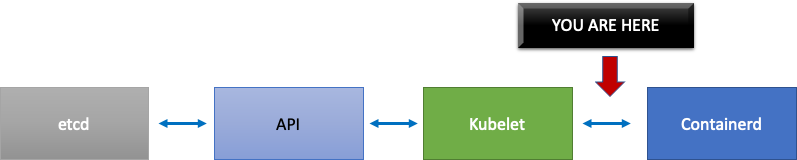

In the graph above, we see a flat line indicating we have just hit the timeout value for the pod lifecycle event generation duration metric. If you would like to see this in your own cluster you could use the following PromQL syntax.
If we witness this timeout behavior, we know we pushed the node over the limit it was capable of. We need to fix the cause of the timeout before proceeding further. This could be achieved by reducing the number of pods per node, or looking for errors that might be causing a high volume of retries (thus effecting the churn rate). The important take-away is that metrics are the best way to understand if a node is able to handle the churn rate of the pods assigned vs. using a fixed number.
Scale by Metrics¶
While the concept of using metrics to optimize systems is an old one, its often overlooked as people begin their Kubernetes journey. Instead of focusing on specific numbers (i.e. 110 pods per node), we focus our efforts on finding the metrics that help us find bottlenecks in our system. Understanding the right thresholds for these metrics can give us a high degree of confidence our system is optimally configured.
The Impact of Changes¶
A common pattern that could get us into trouble is focusing on the first metric or log error that looks suspect. When we saw that the Kubelet was timing out earlier, we could try random things, such as increasing the per second rate that the Kubelet is allowed to send, etc. However, it is wise to look at the whole picture of everything downstream of the error we find first. Make each change with purpose and backed by data.
Downstream of the Kubelet would be the Containerd runtime (pod errors), DaemonSets such as the storage driver (CSI) and the network driver (CNI) that talk to the EC2 API, etc.

Lets continue our earlier example of the Kubelet not keeping up with the runtime. There are a number of points where we could bin pack a node so densely that it triggers errors.

When designing the right node size for our workloads these are easy-to-overlook signals that might be putting unnecessary pressure on the system thus limiting both our scale and performance.
The Cost of Unnecessary Errors¶
Kubernetes controllers excel at retrying when error conditions arise, however this comes at a cost. These retries can increase the pressure on components such as the Kube Controller Manager. It is an important tenant of scale testing to monitor for such errors.
When fewer errors are occurring, it is easier spot issues in the system. By periodically ensuring that our clusters are error free before major operations (such as upgrades) we can simplify troubleshooting logs when unforeseen events happen.
Expanding Our View¶
In large scale clusters with 1,000s of nodes we dont want to look for bottlenecks individually. In PromQL we can find the highest values in a data set using a function called topk; K being a variable we place the number of items we want. Here we use three nodes to get an idea whether all of the the Kubelets in the cluster are saturated. We have been looking at latency up to this point, now lets see if the Kubelet is discarding events.
Breaking this statement down.
- We use the Grafana variable
$__rate_intervalto ensure it gets the four samples it needs. This bypasses a complex topic in monitoring with a simple variable. topkgive us just the top results and the number 3 limits those results to three. This is a useful function for cluster wide metrics.{}tell us there are no filters, normally you would put the job name of whatever the scraping rule, however since these names vary we will leave it blank.
Splitting the Problem in Half¶
To address a bottleneck in the system, we will take the approach of finding a metric that shows us there is a problem upstream or downstream as this allows us to split the problem in half. It will also be a core tenet of how we display our metrics data.
A good place to start with this process is the API server, as it allow us to see if theres a problem with a client application or the Control Plane.
Control Plane Monitoring¶
API Server¶
When looking at our API server its important to remember that one of its functions is to throttle inbound requests to prevent overloading the control plane. What can seem like a bottleneck at the API server level might actually be protecting it from more serious issues. We need to factor in the pros and cons of increasing the volume of requests moving through the system. To make a determination if the API server values should be increased, here is small sampling of the things we need to be mindful of:
- What is the latency of requests moving through the system?
- Is that latency the API server itself, or something downstream like etcd?
- Is the API server queue depth a factor in this latency?
- Are the API Priority and Fairness (APF) queues setup correctly for the API call patterns we want?
Where is the issue?¶
To start, we can use the metric for API latency to give us insight into how long its taking the API server to service requests. Lets use the below PromQL and Grafana heatmap to display this data.
max(increase(apiserver_request_duration_seconds_bucket{subresource!="status",subresource!="token",subresource!="scale",subresource!="/healthz",subresource!="binding",subresource!="proxy",verb!="WATCH"}[$__rate_interval])) by (le)
Tip
For an in depth write up on how to monitor the API server with the API dashboard used in this article, please see the following blog

These requests are all under the one second mark, which is a good indication that the control plane is handling requests in a timely fashion. But what if that was not the case?
The format we are using in the above API Request Duration is a heatmap. Whats nice about the heatmap format, is that it tells us the timeout value for the API by default (60 sec). However, what we really need to know is at what threshold should this value be of concern before we reach the timeout threshold. For a rough guideline of what acceptable thresholds are we can use the upstream Kubernetes SLO, which can be found here
Tip
Notice the max function on this statement? When using metrics that are aggregating multiple servers (by default two API servers on EKS) its important not to average those servers together.
Asymmetrical traffic patterns¶
What if one API server [pod] was lightly loaded, and the other heavily loaded? If we averaged those two numbers together we might misinterpret what was happening. For example, here we have three API servers but all of the load is on one of these API servers. As a rule anything that has multiple servers such as etcd and API servers should be broken out when investing scale and performance issues.

With the move to API Priority and Fairness the total number of requests on the system is only one factor to check to see if the API server is oversubscribed. Since the system now works off a series of queues, we must look to see if any of these queues are full and if the traffic for that queue is getting dropped.
Lets look at these queues with the following query:
Note
For more information on how API A&F works please see the following best practices guide
Here we see the seven different priority groups that come by default on the cluster

Next we want to see what percentage of that priority group is being used, so that we can understand if a certain priority level is being saturated. Throttling requests in the workload-low level might be desirable, however drops in a leader election level would not be.
The API Priority and Fairness (APF) system has a number of complex options, some of those options can have unintended consequences. A common issue we see in the field is increasing the queue depth to the point it starts adding unnecessary latency. We can monitor this problem by using the apiserver_flowcontrol_current_inqueue_request metric. We can check for drops using the apiserver_flowcontrol_rejected_requests_total. These metrics will be a non-zero value if any bucket exceeds its concurrency.

Increasing the queue depth can make the API Server a significant source of latency and should be done with care. We recommend being judicious with the number of queues created. For example, the number of shares on a EKS system is 600, if we create too many queues, this can reduce the shares in important queues that need the throughput such as the leader-election queue or system queue. Creating too many extra queues can make it more difficult to size theses queues correctly.
To focus on a simple impactful change you can make in APF we simply take shares from underutilized buckets and increase the size of buckets that are at their max usage. By intelligently redistributing the shares among these buckets, you can make drops less likely.
For more information, visit API Priority and Fairness settings in the EKS Best Practices Guide.
API vs. etcd latency¶
How can we use the metrics/logs of the API server to determine whether theres a problem with API server, or a problem thats upstream/downstream of the API server, or a combination of both. To understand this better, lets look at how API Server and etcd can be related, and how easy it can be to troubleshoot the wrong system.
In the below chart we see API server latency, but we also see much of this latency is correlated to the etcd server due to the bars in the graph showing most of the latency at the etcd level. If there is 15 secs of etcd latency at the same time there is 20 seconds of API server latency, then the majority of the latency is actually at the etcd level.
By looking at the whole flow, we see that its wise to not focus solely on the API Server, but also look for signals that indicate that etcd is under duress (i.e. slow apply counters increasing). Being able to quickly move to the right problem area with just a glance is what makes a dashboard powerful.
Tip
The dashboard in section can be found at https://github.com/RiskyAdventure/Troubleshooting-Dashboards/blob/main/api-troubleshooter.json
Control plane vs. Client side issues¶
In this chart we are looking for the API calls that took the most time to complete for that period. In this case we see a custom resource (CRD) is calling a APPLY function that is the most latent call during the 05:40 time frame.

Armed with this data we can use an Ad-Hoc PromQL or a CloudWatch Insights query to pull LIST requests from the audit log during that time frame to see which application this might be.
Finding the Source with CloudWatch¶
Metrics are best used to find the problem area we want to look at and narrow both the timeframe and the search parameters of the problem. Once we have this data we want to transition to logs for more detailed times and errors. To do this we will turn our logs into metrics using CloudWatch Logs Insights.
For example, to investigate the issue above, we will use the following CloudWatch Logs Insights query to pull the userAgent and requestURI so that we can pin down which application is causing this latency.
Tip
An appropriate Count needs to be used as to not pull normal List/Resync behavior on a Watch.
fields *@timestamp*, *@message*
| filter *@logStream* like "kube-apiserver-audit"
| filter ispresent(requestURI)
| filter verb = "list"
| parse requestReceivedTimestamp /\d+-\d+-(?<StartDay>\d+)T(?<StartHour>\d+):(?<StartMinute>\d+):(?<StartSec>\d+).(?<StartMsec>\d+)Z/
| parse stageTimestamp /\d+-\d+-(?<EndDay>\d+)T(?<EndHour>\d+):(?<EndMinute>\d+):(?<EndSec>\d+).(?<EndMsec>\d+)Z/
| fields (StartHour * 3600 + StartMinute * 60 + StartSec + StartMsec / 1000000) as StartTime, (EndHour * 3600 + EndMinute * 60 + EndSec + EndMsec / 1000000) as EndTime, (EndTime - StartTime) as DeltaTime
| stats avg(DeltaTime) as AverageDeltaTime, count(*) as CountTime by requestURI, userAgent
| filter CountTime >=50
| sort AverageDeltaTime desc
Using this query we found two different agents running a large number of high latency list operations. Splunk and CloudWatch agent. Armed with the data, we can make a decision to remove, update, or replace this controller with another project.

Tip
For more details on this subject please see the following blog
Scheduler¶
Since the EKS control plane instances are run in separate AWS account we will not be able to scrape those components for metrics (The API server being the exception). However, since we have access to the audit logs for these components, we can turn those logs into metrics to see if any of the sub-systems are causing a scaling bottleneck. Lets use CloudWatch Logs Insights to see how many unscheduled pods are in the scheduler queue.
Unscheduled pods in the scheduler log¶
If we had access to scrape the scheduler metrics directly on a self managed Kubernetes (such as Kops) we would use the following PromQL to understand the scheduler backlog.
Since we do not have access to the above metric in EKS, we will use the below CloudWatch Logs Insights query to see the backlog by checking for how many pods were unable to unscheduled during a particular time frame. Then we could dive further into into the messages at the peak time frame to understand the nature of the bottleneck. For example, nodes not spinning up fast enough, or the rate limiter in the scheduler itself.
fields timestamp, pod, err, *@message*
| filter *@logStream* like "scheduler"
| filter *@message* like "Unable to schedule pod"
| parse *@message* /^.(?<date>\d{4})\s+(?<timestamp>\d+:\d+:\d+\.\d+)\s+\S*\s+\S+\]\s\"(.*?)\"\s+pod=(?<pod>\"(.*?)\")\s+err=(?<err>\"(.*?)\")/
| count(*) as count by pod, err
| sort count desc
Here we see the errors from the scheduler saying the pod did not deploy because the storage PVC was unavailable.

Note
Audit logging must be turned on the control plane to enable this function. It is also a best practice to limit the log retention as to not drive up cost over time unnecessarily. An example for turning on all logging functions using the EKSCTL tool below.
Kube Controller Manager¶
Kube Controller Manager, like all other controllers, has limits on how many operations it can do at once. Lets review what some of those flags are by looking at a KOPS configuration where we can set these parameters.
kubeControllerManager:
concurrentEndpointSyncs: 5
concurrentReplicasetSyncs: 5
concurrentNamespaceSyncs: 10
concurrentServiceaccountTokenSyncs: 5
concurrentServiceSyncs: 5
concurrentResourceQuotaSyncs: 5
concurrentGcSyncs: 20
kubeAPIBurst: 20
kubeAPIQPS: "30"
These controllers have queues that fill up during times of high churn on a cluster. In this case we see the replicaset set controller has a large backlog in its queue.

We have two different ways of addressing such a situation. If running self managed we could simply increase the concurrent goroutines, however this would have an impact on etcd by processing more data in the KCM. The other option would be to reduce the number of replicaset objects using .spec.revisionHistoryLimit on the deployment to reduce the number of replicaset objects we can rollback, thus reducing the pressure on this controller.
Other Kubernetes features can be tuned or turned off to reduce pressure in high churn rate systems. For example, if the application in our pods doesnt need to speak to the k8s API directly then turning off the projected secret into those pods would decrease the load on ServiceaccountTokenSyncs. This is the more desirable way to address such issues if possible.
In systems where we cant get access to the metrics, we can again look at the logs to detect contention. If we wanted to see the number of requests being being processed on a per controller or an aggregate level we would use the following CloudWatch Logs Insights Query.
Total Volume Processed by the KCM¶
# Query to count API qps coming from kube-controller-manager, split by controller type.
# If you're seeing values close to 20/sec for any particular controller, it's most likely seeing client-side API throttling.
fields @timestamp, @logStream, @message
| filter @logStream like /kube-apiserver-audit/
| filter userAgent like /kube-controller-manager/
# Exclude lease-related calls (not counted under kcm qps)
| filter requestURI not like "apis/coordination.k8s.io/v1/namespaces/kube-system/leases/kube-controller-manager"
# Exclude API discovery calls (not counted under kcm qps)
| filter requestURI not like "?timeout=32s"
# Exclude watch calls (not counted under kcm qps)
| filter verb != "watch"
# If you want to get counts of API calls coming from a specific controller, uncomment the appropriate line below:
# | filter user.username like "system:serviceaccount:kube-system:job-controller"
# | filter user.username like "system:serviceaccount:kube-system:cronjob-controller"
# | filter user.username like "system:serviceaccount:kube-system:deployment-controller"
# | filter user.username like "system:serviceaccount:kube-system:replicaset-controller"
# | filter user.username like "system:serviceaccount:kube-system:horizontal-pod-autoscaler"
# | filter user.username like "system:serviceaccount:kube-system:persistent-volume-binder"
# | filter user.username like "system:serviceaccount:kube-system:endpointslice-controller"
# | filter user.username like "system:serviceaccount:kube-system:endpoint-controller"
# | filter user.username like "system:serviceaccount:kube-system:generic-garbage-controller"
| stats count(*) as count by user.username
| sort count desc
The key takeaway here is when looking into scalability issues, to look at every step in the path (API, scheduler, KCM, etcd) before moving to the detailed troubleshooting phase. Often in production you will find that it takes adjustments to more than one part of Kubernetes to allow the system to work at its most performant. Its easy to inadvertently troubleshoot what is just a symptom (such as a node timeout) of a much larger bottle neck.
ETCD¶
etcd uses a memory mapped file to store key value pairs efficiently. There is a protection mechanism to set the size of this memory space available set commonly at the 2, 4, and 8GB limits. Fewer objects in the database means less clean up etcd needs to do when objects are updated and older versions needs to be cleaned out. This process of cleaning old versions of an object out is referred to as compaction. After a number of compaction operations, there is a subsequent process that recovers usable space space called defragging that happens above a certain threshold or on a fixed schedule of time.
There are a couple user related items we can do to limit the number of objects in Kubernetes and thus reduce the impact of both the compaction and de-fragmentation process. For example, Helm keeps a high revisionHistoryLimit. This keeps older objects such as ReplicaSets on the system to be able to do rollbacks. By setting the history limits down to 2 we can reduce the the number of objects (like ReplicaSets) from ten to two which in turn would put less load on the system.
From a monitoring standpoint, if system latency spikes occur in a set pattern separated by hours, checking to see if this defragmentation process is the source can be helpful. We can see this by using CloudWatch Logs.
If you want to see start/end times of defrag use the following query:
fields *@timestamp*, *@message*
| filter *@logStream* like /etcd-manager/
| filter *@message* like /defraging|defraged/
| sort *@timestamp* asc

Node and Workload Efficiency¶
Being efficient with our workloads and nodes reduces complexity/cost while increasing performance and scale. There are many factors to consider when planning this efficiency, and its easiest to think in terms of trade offs vs. one best practice setting for each feature. Lets explore these tradeoffs in depth in the following section.
Node Selection¶
Using node sizes that are slightly larger (4-12xlarge) increases the available space that we have for running pods due to the fact it reduces the percentage of the node used for overhead such as DaemonSets and Reserves for system components. In the diagram below we see the difference between the usable space on a 2xlarge vs. a 8xlarge system with just a moderate number of DaemonSets.
Note
Since k8s scales horizontally as a general rule, for most applications it does not make sense to take the performance impact of NUMA sizes nodes, thus the recommendation of a range below that node size.

Large nodes sizes allow us to have a higher percentage of usable space per node. However, this model can be taken to to the extreme by packing the node with so many pods that it causes errors or saturates the node. Monitoring node saturation is key to successfully using larger node sizes.
Node selection is rarely a one-size-fits-all proposition. Often it is best to split workloads with dramatically different churn rates into different node groups. Small batch workloads with a high churn rate would be best served by the the 4xlarge family of instances, while a large scale application such as Kafka which takes 8 vCPU and has a low churn rate would be better served by the 12xlarge family.

Tip
Another factor to consider with very large node sizes is since CGROUPS do not hide the total number of vCPU from the containerized application. Dynamic runtimes can often spawn an unintentional number of OS threads, creating latency that is difficult to troubleshoot. For these application CPU pinning is recommend. For a deeper exploration of topic please see the following video https://www.youtube.com/watch?v=NqtfDy_KAqg
Node Bin-packing¶
Kubernetes vs. Linux Rules¶
There are two sets of rules we need to be mindful of when dealing with workloads on Kubernetes. The rules of the Kubernetes Scheduler, which uses the request value to schedule pods on a node, and then what happens after the pod is scheduled, which is the realm of Linux, not Kubernetes.
After Kubernetes scheduler is finished, a new set of rules takes over, the Linux Completely Fair Scheduler (CFS). The key take away is that Linux CFS doesnt have a the concept of a core. We will discuss why thinking in cores can lead to major problems with optimizing workloads for scale.
Thinking in Cores¶
The confusion starts because the Kubernetes scheduler does have the concept of cores. From a Kubernetes scheduler perspective if we looked at a node with 4 NGINX pods, each with a request of one core set, the node would look like this.

However, lets do a thought experiment on how different this looks from a Linux CFS perspective. The most important thing to remember when using the Linux CFS system is: busy containers (CGROUPS) are the only containers that count toward the share system. In this case, only the first container is busy so it is allowed to use all 4 cores on the node.
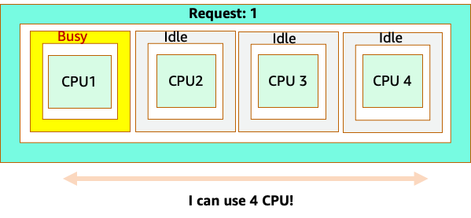
Why does this matter? Lets say we ran our performance testing in a development cluster where an NGINX application was the only busy container on that node. When we move the app to production, the following would happen: the NGINX application wants 4 vCPU of resources however, because all the other pods on the node are busy, our apps performance is constrained.

This situation would lead us to add more containers unnecessarily because we were not allowing our applications scale to their sweet spot. Let's explore this important concept of a sweet spot in a bit more detail.
Application right sizing¶
Each application has a certain point where it can not take anymore traffic. Going above this point can increase processing times and even drop traffic when pushed well beyond this point. This is known as the applications saturation point. To avoid scaling issues, we should attempt to scale the application before it reaches its saturation point. Lets call this point the sweet spot.

We need to test each of our applications to understand its sweet spot. There will be no universal guidance here as each application is different. During this testing we are trying to understand the best metric that shows our applications saturation point. Oftentimes, utilization metrics are used to indicate an application is saturated but this can quickly lead to scaling issues (We will explore this topic in detail in a later section). Once we have this sweet spot we can use it to efficiently scale our workloads.
Conversely, what would happen if we scale up well before the sweet spot and created unnecessary pods? Lets explore that in the next section.
Pod sprawl¶
To see how creating unnecessary pods could quickly get out of hand, let's look at the first example on the left. The correct vertical scale of this container takes up about two vCPUs worth of utilization when handling 100 requests a second. However, If we were to under-provision the requests value by setting requests to half a core, we would now need 4 pods for each one pods we actually needed. Exacerbating this problem further, if our HPA was set at the default of 50% CPU, those pods would scale half empty, creating an 8:1 ratio.

Scaling this problem up we can quickly see how this can get out of hand. A deployment of ten pods whose sweet spot was set incorrectly could quickly spiral to 80 pods and the additional infrastructure needed to run them.

Now that we understand the impact of not allowing applications to operate in their sweet spot, lets return to the node level and ask why this difference between the Kubernetes scheduler and Linux CFS so important?
When scaling up and down with HPA, we can have a scenario where we have a lot of space to allocate more pods. This would be a bad decision because the node depicted on the left is already at 100% CPU utilization. In a unrealistic but theoretically possible scenario, we could have the other extreme where our node is completely full, yet our CPU utilization is zero.

Setting Requests¶
It would tempting to set the request at the sweet spot value for that application, however this would cause inefficiencies as pictured in the diagram below. Here we have set the request value to 2 vCPU, however the average utilization of these pods runs only 1 CPU most of the time. This setting would cause us to waste 50% of our CPU cycles, which would be unacceptable.

This bring us to the complex answer to problem. Container utilization cannot be thought of in a vacuum; one must take into account the other applications running on the node. In the following example containers that are bursty in nature are mixed in with two low CPU utilization containers that might be memory constrained. In this way we allow the containers to hit their sweet spot without taxing the node.
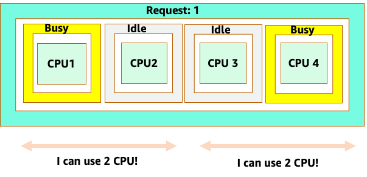
The important concept to take away from all this is that using Kubernetes scheduler concept of cores to understand Linux container performance can lead to poor decision making as they are not related.
Tip
Linux CFS has its strong points. This is especially true for I/O based workloads. However, if your application uses full cores without sidecars, and has no I/O requirements, CPU pinning can remove a great deal of complexity from this process and is encouraged with those caveats.
Utilization vs. Saturation¶
A common mistake in application scaling is only using CPU utilization for your scaling metric. In complex applications this is almost always a poor indicator that an application is actually saturated with requests. In the example on the left, we see all of our requests are actually hitting the web server, so CPU utilization is tracking well with saturation.
In real world applications, its likely that some of those requests will be getting serviced by a database layer or an authentication layer, etc. In this more common case, notice CPU is not tracking with saturation as the request is being serviced by other entities. In this case CPU is a very poor indicator for saturation.

Using the wrong metric in application performance is the number one reason for unnecessary and unpredictable scaling in Kubernetes. Great care must be taken in picking the correct saturation metric for the type of application that you're using. It is important to note that there is not a one size fits all recommendation that can be given. Depending on the language used and the type of application in question, there is a diverse set of metrics for saturation.
We might think this problem is only with CPU Utilization, however other common metrics such as request per second can also fall into the exact same problem as discussed above. Notice the request can also go to DB layers, auth layers, not being directly serviced by our web server, thus its a poor metric for true saturation of the web server itself.

Unfortunately there are no easy answers when it comes to picking the right saturation metric. Here are some guidelines to take into consideration:
- Understand your language runtime - languages with multiple OS threads will react differently than single threaded applications, thus impacting the node differently.
- Understand the correct vertical scale - how much buffer do you want in your applications vertical scale before scaling a new pod?
- What metrics truly reflect the saturation of your application - The saturation metric for a Kafka Producer would be quite different than a complex web application.
- How do all the other applications on the node effect each other - Application performance is not done in a vacuum the other workloads on the node have a major impact.
To close out this section, it would be easy to dismiss the above as overly complex and unnecessary. It can often be the case that we are experiencing an issue but we are unaware of the true nature of the problem because we are looking at the wrong metrics. In the next section we will look at how that could happen.
Node Saturation¶
Now that we have explored application saturation, lets look at this same concept from a node point of view. Lets take two CPUs that are 100% utilized to see the difference between utilization vs. saturation.
The vCPU on the left is 100% utilized, however no other tasks are waiting to run on this vCPU, so in a purely theoretical sense, this is quite efficient. Meanwhile, we have 20 single threaded applications waiting to get processed by a vCPU in the second example. All 20 applications now will experience some type of latency while they're waiting their turn to be processed by the vCPU. In other words, the vCPU on the right is saturated.
Not only would we not see this problem if we where just looking at utilization, but we might attribute this latency to something unrelated such as networking which would lead us down the wrong path.

It is important to view saturation metrics, not just utilization metrics when increasing the total number of pods running on a node at any given time as we can easily miss the fact we have over-saturated a node. For this task we can use pressure stall information metrics as seen in the below chart.
PromQL - Stalled I/O

Note
For more on Pressure stall metrics, see https://facebookmicrosites.github.io/psi/docs/overview*
With these metrics we can tell if threads are waiting on CPU, or even if every thread on the box is stalled waiting on resource like memory or I/O. For example, we could see what percentage every thread on the instance was stalled waiting on I/O over the period of 1 min.
Using this metric, we can see in the above chart every thread on the box was stalled 45% of the time waiting on I/O at the high water mark, meaning we were throwing away all of those CPU cycles in that minute. Understanding that this is happening can help us reclaim a significant amount of vCPU time, thus making scaling more efficient.
HPA V2¶
It is recommended to use the autoscaling/v2 version of the HPA API. The older versions of the HPA API could get stuck scaling in certain edge cases. It was also limited to pods only doubling during each scaling step, which created issues for small deployments that needed to scale rapidly.
Autoscaling/v2 allows us more flexibility to include multiple criteria to scale on and allows us a great deal of flexibility when using custom and external metrics (non K8s metrics).
As an example, we can scaling on the highest of three values (see below). We scale if the average utilization of all the pods are over 50%, if custom metrics the packets per second of the ingress exceed an average of 1,000, or ingress object exceeds 10K request per second.
Note
This is just to show the flexibility of the auto-scaling API, we recommend against overly complex rules that can be difficult to troubleshoot in production.
apiVersion: autoscaling/v2
kind: HorizontalPodAutoscaler
metadata:
name: php-apache
spec:
scaleTargetRef:
apiVersion: apps/v1
kind: Deployment
name: php-apache
minReplicas: 1
maxReplicas: 10
metrics:
- type: Resource
resource:
name: cpu
target:
type: Utilization
averageUtilization: 50
- type: Pods
pods:
metric:
name: packets-per-second
target:
type: AverageValue
averageValue: 1k
- type: Object
object:
metric:
name: requests-per-second
describedObject:
apiVersion: networking.k8s.io/v1
kind: Ingress
name: main-route
target:
type: Value
value: 10k
However, we learned the danger of using such metrics for complex web applications. In this case we would be better served by using custom or external metric that accurately reflects the saturation of our application vs. the utilization. HPAv2 allows for this by having the ability to scale according to any metric, however we still need to find and export that metric to Kubernetes for use.
For example, we can look at the active thread queue count in Apache. This often creates a smoother scaling profile (more on that term soon). If a thread is active, it doesnt matter if that thread is waiting on a database layer or servicing a request locally, if all of the applications threads are being used, its a great indication that application is saturated.
We can use this thread exhaustion as a signal to create a new pod with a fully available thread pool. This also gives us control over how big a buffer we want in the application to absorb during times of heavy traffic. For example, if we had a total thread pool of 10, scaling at 4 threads used vs. 8 threads used would have a major impact on the buffer we have available when scaling the application. A setting of 4 would make sense for an application that needs to rapidly scale under heavy load, where a setting of 8 would be more efficient with our resources if we had plenty of time to scale due to the number of requests increasing slowly vs. sharply over time.

What do we mean by the term smooth when it comes to scaling? Notice the below chart where we are using CPU as a metric. The pods in this deployment are spiking in a short period for from 50 pods, all the way up to 250 pods only to immediately scale down again. This is highly inefficient scaling is the leading cause on churn on clusters.
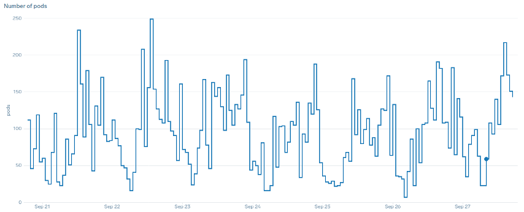
Notice how after we change to a metric that reflects the correct sweet spot of our application (mid-part of chart), we are able to scale smoothly. Our scaling is now efficient, and our pods are allowed to fully scale with the headroom we provided by adjusting requests settings. Now a smaller group of pods are doing the work the hundreds of pods were doing before. Real world data shows that this is the number one factor in scalability of Kubernetes clusters.

The key takeaway is CPU utilization is only one dimension of both application and node performance. Using CPU utilization as a sole health indicator for our nodes and applications creates problems in scaling, performance and cost which are all tightly linked concepts. The more performant the application and nodes are, the less that you need to scale, which in turn lowers your costs.
Finding and using the correct saturation metrics for scaling your particular application also allows you to monitor and alarm on the true bottlenecks for that application. If this critical step is skipped, reports of performance problems will be difficult, if not impossible, to understand.
Setting CPU Limits¶
To round out this section on misunderstood topics, we will cover CPU limits. In short, limits are metadata associated with the container that has a counter that resets every 100ms. This helps Linux keep track of how many CPU resources are used node-wide by a specific container in a 100ms period of time.

A common error with setting limits is assuming that the application is single threaded and only running on its assigned vCPU. In the above section we learned that CFS doesnt assign cores, and in reality a container running large thread pools will schedule on all available vCPUs on the box.
If 64 OS threads are running across 64 available cores (from a Linux node perspective) we will make the total bill of used CPU time in a 100ms period quite large after the time running on all of those 64 cores are added up. Since this might only occur during a garbage collection process it can be quite easy to miss something like this. This is why it is necessary to use metrics to ensure we have the correct usage over time before attempting to set a limit.
Fortunately, we have a way to see exactly how much vCPU is being used by all the threads in a application. We will use the metric container_cpu_usage_seconds_total for this purpose.
Since throttling logic happens every 100ms and this metric is a per second metric, we will PromQL to match this 100ms period. If you would like to dive deep into this PromQL statement work please see the following blog.
PromQL query:
topk(3, max by (pod, container)(rate(container_cpu_usage_seconds_total{image!="", instance="$instance"}[$__rate_interval]))) / 10

Once we feel we have the right value, we can put the limit in production. It then becomes necessary to see if our application is being throttled due to something unexpected. We can do this by looking at container_cpu_throttled_seconds_total
topk(3, max by (pod, container)(rate(container_cpu_cfs_throttled_seconds_total{image!=``""``, instance=``"$instance"``}[$__rate_interval]))) / 10

Memory¶
The memory allocation is another example where it is easy to confuse Kubernetes scheduling behavior for Linux CGroup behavior. This is a more nuanced topic as there have been major changes in the way that CGroup v2 handles memory in Linux and Kubernetes has changed its syntax to reflect this; read this blog for further details.
Unlike CPU requests, memory requests go unused after the scheduling process completes. This is because we can not compress memory in CGroup v1 the same way we can with CPU. That leaves us with just memory limits, which are designed to act as a fail safe for memory leaks by terminating the pod completely. This is an all or nothing style proposition, however we have now been given new ways to address this problem.
First, it is important to understand that setting the right amount of memory for containers is not a straightforward as it appears. The file system in Linux will use memory as a cache to improve performance. This cache will grow over time, and it can be hard to know how much memory is just nice to have for the cache but can be reclaimed without a significant impact to application performance. This often results in misinterpreting memory usage.
Having the ability to compress memory was one of the primary drivers behind CGroup v2. For more history on why CGroup V2 was necessary, please see Chris Downs presentation at LISA21 where he covers why being unable to set the minimum memory correctly was one of the reasons that drove him to create CGroup v2 and pressure stall metrics.
Fortunately, Kubernetes now has the concept of memory.min and memory.high under requests.memory. This gives us the option of aggressive releasing this cached memory for other containers to use. Once the container hits the memory high limit, the kernel can aggressively reclaim that containers memory up to the value set at memory.min. Thus giving us more flexibility when a node comes under memory pressure.
The key question becomes, what value to set memory.min to? This is where memory pressure stall metrics come into play. We can use these metrics to detect memory thrashing at a container level. Then we can use controllers such as fbtax to detect the correct values for memory.min by looking for this memory thrashing, and dynamically set the memory.min value to this setting.
Summary¶
To sum up the section, it is easy to conflate the following concepts:
- Utilization and Saturation
- Linux performance rules with Kubernetes Scheduler logic
Great care must be taken to keep these concepts separated. Performance and scale are linked on a deep level. Unnecessary scaling creates performance problems, which in turn creates scaling problems.
Ended: Scalability
Best Practices for Cluster Upgrades¶
This guide shows cluster administrators how to plan and execute their Amazon EKS upgrade strategy. It also describes how to upgrade self-managed nodes, managed node groups, Karpenter nodes, and Fargate nodes. It does not include guidance on EKS Anywhere, self-managed Kubernetes, AWS Outposts, or AWS Local Zones.
Overview¶
A Kubernetes version encompasses both the control plane and the data plane. To ensure smooth operation, both the control plane and the data plane should run the same Kubernetes minor version, such as 1.24. While AWS manages and upgrades the control plane, updating the worker nodes in the data plane is your responsibility.
- Control plane The version of the control plane is determined by the Kubernetes API server. In Amazon EKS clusters, AWS takes care of managing this component. Control plane upgrades can be initiated via the AWS API.
- Data plane The data plane version is associated with the Kubelet versions running on your individual nodes. It's possible to have nodes in the same cluster running different versions. You can check the versions of all nodes by running
kubectl get nodes.
Before Upgrading¶
If you're planning to upgrade your Kubernetes version in Amazon EKS, there are a few important policies, tools, and procedures you should put in place before starting an upgrade.
- Understand Deprecation Policies Gain a deep understanding of how the Kubernetes deprecation policy works. Be aware of any upcoming changes that may affect your existing applications. Newer versions of Kubernetes often phase out certain APIs and features, potentially causing issues for running applications.
- Review Kubernetes Change Log Thoroughly review the Kubernetes change log alongside Amazon EKS Kubernetes versions to understand any possible impact to your cluster, such as breaking changes that may affect your workloads.
- Assess Cluster Add-Ons Compatibility Amazon EKS doesn't automatically update an add-on when new versions are released or after you update your cluster to a new Kubernetes minor version. Review Updating an add-on to understand the compatibility of any existing cluster add-ons with the cluster version you intend to upgrade to.
- Enable Control Plane Logging Enable control plane logging to capture logs, errors, or issues that can arise during the upgrade process. Consider reviewing these logs for any anomalies. Test cluster upgrades in a non-production environment, or integrate automated tests into your continuous integration workflow to assess version compatibility with your applications, controllers, and custom integrations.
- Explore eksctl for Cluster Management Consider using eksctl to manage your EKS cluster. It provides you with the ability to update the control plane, manage add-ons, and handle worker node updates out-of-the-box.
- Opt for Managed Node Groups or EKS on Fargate Streamline and automate worker node upgrades by using EKS managed node groups or EKS on Fargate. These options simplify the process and reduce manual intervention.
- Utilize kubectl Convert Plugin Leverage the kubectl convert plugin to facilitate the conversion of Kubernetes manifest files between different API versions. This can help ensure that your configurations remain compatible with the new Kubernetes version.
Keep your cluster up-to-date¶
Staying current with Kubernetes updates is paramount for a secure and efficient EKS environment, reflecting the shared responsibility model in Amazon EKS. By integrating these strategies into your operational workflow, you're positioning yourself to maintain up-to-date, secure clusters that take full advantage of the latest features and improvements. Tactics:
- Supported Version Policy Aligned with the Kubernetes community, Amazon EKS typically provides three active Kubernetes versions while deprecating a fourth version each year. Deprecation notices are issued at least 60 days before a version reaches its end-of-support date. For more details, refer to the EKS Version FAQ.
- Auto-Upgrade Policy We strongly recommend staying in sync with Kubernetes updates in your EKS cluster. Kubernetes community support, including bug fixes and security patches, typically ceases for versions older than one year. Deprecated versions may also lack vulnerability reporting, posing a potential risk. Failure to proactively upgrade before a version's end-of-life triggers an automatic upgrade, which could disrupt your workloads and systems. For additional information, consult the EKS Version Support Policy.
- Create Upgrade Runbooks Establish a well-documented process for managing upgrades. As part of your proactive approach, develop runbooks and specialized tools tailored to your upgrade process. This not only enhances your preparedness but also simplifies complex transitions. Make it a standard practice to upgrade your clusters at least once a year. This practice aligns you with ongoing technological advancements, thereby boosting the efficiency and security of your environment.
Review the EKS release calendar¶
Review the EKS Kubernetes release calendar to learn when new versions are coming, and when support for specific versions end. Generally, EKS releases three minor versions of Kubernetes annually, and each minor version is supported for about 14 months.
Additionally, review the upstream Kubernetes release information.
Understand how the shared responsibility model applies to cluster upgrades¶
You are responsible for initiating upgrade for both cluster control plane as well as the data plane. Learn how to initiate an upgrade. When you initiate a cluster upgrade, AWS manages upgrading the cluster control plane. You are responsible for upgrading the data plane, including Fargate pods and other add-ons. You must validate and plan upgrades for workloads running on your cluster to ensure their availability and operations are not impacted after cluster upgrade
Upgrade clusters in-place¶
EKS supports an in-place cluster upgrade strategy. This maintains cluster resources, and keeps cluster configuration consistent (e.g., API endpoint, OIDC, ENIs, load balancers). This is less disruptive for cluster users, and it will use the existing workloads and resources in the cluster without requiring you to redeploy workloads or migrate external resources (e.g., DNS, storage).
When performing an in-place cluster upgrade, it is important to note that only one minor version upgrade can be executed at a time (e.g., from 1.24 to 1.25).
This means that if you need to update multiple versions, a series of sequential upgrades will be required. Planning sequential upgrades is more complicated, and has a higher risk of downtime. In this situation, evaluate a blue/green cluster upgrade strategy.
Upgrade your control plane and data plane in sequence¶
To upgrade a cluster you will need to take the following actions:
- Review the Kubernetes and EKS release notes.
- Take a backup of the cluster. (optional)
- Identify and remediate deprecated and removed API usage in your workloads.
- Ensure Managed Node Groups, if used, are on the same Kubernetes version as the control plane. EKS managed node groups and nodes created by EKS Fargate Profiles only support 1 minor version skew between the control plane and data plane.
- Upgrade the cluster control plane using the AWS console or cli.
- Review add-on compatibility. Upgrade your Kubernetes add-ons and custom controllers, as required.
- Update kubectl.
- Upgrade the cluster data plane. Upgrade your nodes to the same Kubernetes minor version as your upgraded cluster.
Use the EKS Documentation to create an upgrade checklist¶
The EKS Kubernetes version documentation includes a detailed list of changes for each version. Build a checklist for each upgrade.
For specific EKS version upgrade guidance, review the documentation for notable changes and considerations for each version.
Upgrade add-ons and components using the Kubernetes API¶
Before you upgrade a cluster, you should understand what versions of Kubernetes components you are using. Inventory cluster components, and identify components that use the Kubernetes API directly. This includes critical cluster components such as monitoring and logging agents, cluster autoscalers, container storage drivers (e.g. EBS CSI, EFS CSI), ingress controllers, and any other workloads or add-ons that rely on the Kubernetes API directly.
Tip
Critical cluster components are often installed in a *-system namespace
Once you have identified components that rely the Kubernetes API, check their documentation for version compatibility and upgrade requirements. For example, see the AWS Load Balancer Controller documentation for version compatibility. Some components may need to be upgraded or configuration changed before proceeding with a cluster upgrade. Some critical components to check include CoreDNS, kube-proxy, VPC CNI, and storage drivers.
Clusters often contain many workloads that use the Kubernetes API and are required for workload functionality such as ingress controllers, continuous delivery systems, and monitoring tools. When you upgrade an EKS cluster, you must also upgrade your add-ons and third-party tools to make sure they are compatible.
See the following examples of common add-ons and their relevant upgrade documentation:
- Amazon VPC CNI: For the recommended version of the Amazon VPC CNI add-on for each cluster version, see Updating the Amazon VPC CNI plugin for Kubernetes self-managed add-on. When installed as an Amazon EKS Add-on, it can only be upgraded one minor version at a time.
- kube-proxy: See Updating the Kubernetes kube-proxy self-managed add-on.
- CoreDNS: See Updating the CoreDNS self-managed add-on.
- AWS Load Balancer Controller: The AWS Load Balancer Controller needs to be compatible with the EKS version you have deployed. See the installation guide for more information.
- Amazon Elastic Block Store (Amazon EBS) Container Storage Interface (CSI) driver: For installation and upgrade information, see Managing the Amazon EBS CSI driver as an Amazon EKS add-on.
- Amazon Elastic File System (Amazon EFS) Container Storage Interface (CSI) driver: For installation and upgrade information, see Amazon EFS CSI driver.
- Kubernetes Metrics Server: For more information, see metrics-server on GitHub.
- Kubernetes Cluster Autoscaler: To upgrade the version of Kubernetes Cluster Autoscaler, change the version of the image in the deployment. The Cluster Autoscaler is tightly coupled with the Kubernetes scheduler. You will always need to upgrade it when you upgrade the cluster. Review the GitHub releases to find the address of the latest release corresponding to your Kubernetes minor version.
- Karpenter: For installation and upgrade information, see the Karpenter documentation.
Verify basic EKS requirements before upgrading¶
AWS requires certain resources in your account to complete the upgrade process. If these resources arent present, the cluster cannot be upgraded. A control plane upgrade requires the following resources:
- Available IP addresses: Amazon EKS requires up to five available IP addresses from the subnets you specified when you created the cluster in order to update the cluster. If not, update your cluster configuration to include new cluster subnets prior to performing the version update.
- EKS IAM role: The control plane IAM role is still present in the account with the necessary permissions.
- If your cluster has secret encryption enabled, then make sure that the cluster IAM role has permission to use the AWS Key Management Service (AWS KMS) key.
Verify available IP addresses¶
To update the cluster, Amazon EKS requires up to five available IP addresses from the subnets that you specified when you created your cluster.
To verify that your subnets have enough IP addresses to upgrade the cluster you can run the following command:
CLUSTER=<cluster name>
aws ec2 describe-subnets --subnet-ids \
$(aws eks describe-cluster --name ${CLUSTER} \
--query 'cluster.resourcesVpcConfig.subnetIds' \
--output text) \
--query 'Subnets[*].[SubnetId,AvailabilityZone,AvailableIpAddressCount]' \
--output table
----------------------------------------------------
| DescribeSubnets |
+---------------------------+--------------+-------+
| subnet-067fa8ee8476abbd6 | us-east-1a | 8184 |
| subnet-0056f7403b17d2b43 | us-east-1b | 8153 |
| subnet-09586f8fb3addbc8c | us-east-1a | 8120 |
| subnet-047f3d276a22c6bce | us-east-1b | 8184 |
+---------------------------+--------------+-------+
The VPC CNI Metrics Helper may be used to create a CloudWatch dashboard for VPC metrics. Amazon EKS recommends updating the cluster subnets using the "UpdateClusterConfiguration" API prior to beginning a Kubernetes version upgrade if you are running out of IP addresses in the subnets initially specified during cluster creation. Please verify that the new subnets you will be provided:
- belong to same set of AZs that are selected during cluster creation.
- belong to the same VPC provided during cluster creation
Please consider associating additional CIDR blocks if the IP addresses in the existing VPC CIDR block run out. AWS enables the association of additional CIDR blocks with your existing cluster VPC, effectively expanding your IP address pool. This expansion can be accomplished by introducing additional private IP ranges (RFC 1918) or, if necessary, public IP ranges (non-RFC 1918). You must add new VPC CIDR blocks and allow VPC refresh to complete before Amazon EKS can use the new CIDR. After that, you can update the subnets based on the newly set up CIDR blocks to the VPC.
Verify EKS IAM role¶
To verify that the IAM role is available and has the correct assume role policy in your account you can run the following commands:
CLUSTER=<cluster name>
ROLE_ARN=$(aws eks describe-cluster --name ${CLUSTER} \
--query 'cluster.roleArn' --output text)
aws iam get-role --role-name ${ROLE_ARN##*/} \
--query 'Role.AssumeRolePolicyDocument'
{
"Version": "2012-10-17",
"Statement": [
{
"Effect": "Allow",
"Principal": {
"Service": "eks.amazonaws.com"
},
"Action": "sts:AssumeRole"
}
]
}
Migrate to EKS Add-ons¶
Amazon EKS automatically installs add-ons such as the Amazon VPC CNI plugin for Kubernetes, kube-proxy, and CoreDNS for every cluster. Add-ons may be self-managed, or installed as Amazon EKS Add-ons. Amazon EKS Add-ons is an alternate way to manage add-ons using the EKS API.
You can use Amazon EKS Add-ons to update versions with a single command. For Example:
aws eks update-addon cluster-name my-cluster addon-name vpc-cni addon-version version-number \
--service-account-role-arn arn:aws:iam::111122223333:role/role-name configuration-values '{}' resolve-conflicts PRESERVE
Check if you have any EKS Add-ons with:
Warning
EKS Add-ons are not automatically upgraded during a control plane upgrade. You must initiate EKS add-on updates, and select the desired version.
- You are responsible for selecting a compatible version from all available versions. Review the guidance on add-on version compatibility.
- Amazon EKS Add-ons may only be upgraded one minor version at a time.
Learn more about what components are available as EKS Add-ons, and how to get started.
Learn how to supply a custom configuration to an EKS Add-on.
Identify and remediate removed API usage before upgrading the control plane¶
You should identify API usage of removed APIs before upgrading your EKS control plane. To do that we recommend using tools that can check a running cluster or static, rendered Kubernetes manifest files.
Running the check against static manifest files is generally more accurate. If run against live clusters, these tools may return false positives.
A deprecated Kubernetes API does not mean the API has been removed. You should check the Kubernetes Deprecation Policy to understand how API removal affects your workloads.
Kube-no-trouble¶
Kube-no-trouble is an open source command line utility with the command kubent. When you run kubent without any arguments it will use your current KubeConfig context and scan the cluster and print a report with what APIs will be deprecated and removed.
kubent
4:17PM INF >>> Kube No Trouble `kubent` <<<
4:17PM INF version 0.7.0 (git sha d1bb4e5fd6550b533b2013671aa8419d923ee042)
4:17PM INF Initializing collectors and retrieving data
4:17PM INF Target K8s version is 1.24.8-eks-ffeb93d
4:l INF Retrieved 93 resources from collector name=Cluster
4:17PM INF Retrieved 16 resources from collector name="Helm v3"
4:17PM INF Loaded ruleset name=custom.rego.tmpl
4:17PM INF Loaded ruleset name=deprecated-1-16.rego
4:17PM INF Loaded ruleset name=deprecated-1-22.rego
4:17PM INF Loaded ruleset name=deprecated-1-25.rego
4:17PM INF Loaded ruleset name=deprecated-1-26.rego
4:17PM INF Loaded ruleset name=deprecated-future.rego
__________________________________________________________________________________________
>>> Deprecated APIs removed in 1.25 <<<
------------------------------------------------------------------------------------------
KIND NAMESPACE NAME API_VERSION REPLACE_WITH (SINCE)
PodSecurityPolicy <undefined> eks.privileged policy/v1beta1 <removed> (1.21.0)
It can also be used to scan static manifest files and helm packages. It is recommended to run kubent as part of a continuous integration (CI) process to identify issues before manifests are deployed. Scanning manifests is also more accurate than scanning live clusters.
Kube-no-trouble provides a sample Service Account and Role with the appropriate permissions for scanning the cluster.
Pluto¶
Another option is pluto which is similar to kubent because it supports scanning a live cluster, manifest files, helm charts and has a GitHub Action you can include in your CI process.
pluto detect-all-in-cluster
NAME KIND VERSION REPLACEMENT REMOVED DEPRECATED REPL AVAIL
eks.privileged PodSecurityPolicy policy/v1beta1 false true true
Resources¶
To verify that your cluster don't use deprecated APIs before the upgrade, you should monitor:
- metric
apiserver_requested_deprecated_apissince Kubernetes v1.19:
kubectl get --raw /metrics | grep apiserver_requested_deprecated_apis
apiserver_requested_deprecated_apis{group="policy",removed_release="1.25",resource="podsecuritypolicies",subresource="",version="v1beta1"} 1
- events in the audit logs with
k8s.io/deprecatedset totrue:
CLUSTER="<cluster_name>"
QUERY_ID=$(aws logs start-query \
--log-group-name /aws/eks/${CLUSTER}/cluster \
--start-time $(date -u --date="-30 minutes" "+%s") # or date -v-30M "+%s" on MacOS \
--end-time $(date "+%s") \
--query-string 'fields @message | filter `annotations.k8s.io/deprecated`="true"' \
--query queryId --output text)
echo "Query started (query id: $QUERY_ID), please hold ..." && sleep 5 # give it some time to query
aws logs get-query-results --query-id $QUERY_ID
Which will output lines if deprecated APIs are in use:
{
"results": [
[
{
"field": "@message",
"value": "{\"kind\":\"Event\",\"apiVersion\":\"audit.k8s.io/v1\",\"level\":\"Request\",\"auditID\":\"8f7883c6-b3d5-42d7-967a-1121c6f22f01\",\"stage\":\"ResponseComplete\",\"requestURI\":\"/apis/policy/v1beta1/podsecuritypolicies?allowWatchBookmarks=true\\u0026resourceVersion=4131\\u0026timeout=9m19s\\u0026timeoutSeconds=559\\u0026watch=true\",\"verb\":\"watch\",\"user\":{\"username\":\"system:apiserver\",\"uid\":\"8aabfade-da52-47da-83b4-46b16cab30fa\",\"groups\":[\"system:masters\"]},\"sourceIPs\":[\"::1\"],\"userAgent\":\"kube-apiserver/v1.24.16 (linux/amd64) kubernetes/af930c1\",\"objectRef\":{\"resource\":\"podsecuritypolicies\",\"apiGroup\":\"policy\",\"apiVersion\":\"v1beta1\"},\"responseStatus\":{\"metadata\":{},\"code\":200},\"requestReceivedTimestamp\":\"2023-10-04T12:36:11.849075Z\",\"stageTimestamp\":\"2023-10-04T12:45:30.850483Z\",\"annotations\":{\"authorization.k8s.io/decision\":\"allow\",\"authorization.k8s.io/reason\":\"\",\"k8s.io/deprecated\":\"true\",\"k8s.io/removed-release\":\"1.25\"}}"
},
[...]
Update Kubernetes workloads. Use kubectl-convert to update manifests¶
After you have identified what workloads and manifests need to be updated, you may need to change the resource type in your manifest files (e.g. PodSecurityPolicies to PodSecurityStandards). This will require updating the resource specification and additional research depending on what resource is being replaced.
If the resource type is staying the same but API version needs to be updated you can use the kubectl-convert command to automatically convert your manifest files. For example, to convert an older Deployment to apps/v1. For more information, see Install kubectl convert pluginon the Kubernetes website.
kubectl-convert -f <file> --output-version <group>/<version>
Configure PodDisruptionBudgets and topologySpreadConstraints to ensure availability of your workloads while the data plane is upgraded¶
Ensure your workloads have the proper PodDisruptionBudgets and topologySpreadConstraints to ensure availability of your workloads while the data plane is upgraded. Not every workload requires the same level of availability so you need to validate the scale and requirements of your workload.
Make sure workloads are spread in multiple Availability Zones and on multiple hosts with topology spreads will give a higher level of confidence that workloads will migrate to the new data plane automatically without incident.
Here is an example workload that will always have 80% of replicas available and spread replicas across zones and hosts
apiVersion: policy/v1
kind: PodDisruptionBudget
metadata:
name: myapp
spec:
minAvailable: "80%"
selector:
matchLabels:
app: myapp
---
apiVersion: apps/v1
kind: Deployment
metadata:
name: myapp
spec:
replicas: 10
selector:
matchLabels:
app: myapp
template:
metadata:
labels:
app: myapp
spec:
containers:
- image: public.ecr.aws/eks-distro/kubernetes/pause:3.2
name: myapp
resources:
requests:
cpu: "1"
memory: 256M
topologySpreadConstraints:
- labelSelector:
matchLabels:
app: host-zone-spread
maxSkew: 2
topologyKey: kubernetes.io/hostname
whenUnsatisfiable: DoNotSchedule
- labelSelector:
matchLabels:
app: host-zone-spread
maxSkew: 2
topologyKey: topology.kubernetes.io/zone
whenUnsatisfiable: DoNotSchedule
AWS Resilience Hub has added Amazon Elastic Kubernetes Service (Amazon EKS) as a supported resource. Resilience Hub provides a single place to define, validate, and track the resilience of your applications so that you can avoid unnecessary downtime caused by software, infrastructure, or operational disruptions.
Use Managed Node Groups or Karpenter to simplify data plane upgrades¶
Managed Node Groups and Karpenter both simplify node upgrades, but they take different approaches.
Managed node groups automate the provisioning and lifecycle management of nodes. This means that you can create, automatically update, or terminate nodes with a single operation.
In the default configuration, Karpenter automatically creates new nodes using the latest compatible EKS Optimized AMI. As EKS releases updated EKS Optimized AMIs or the cluster is upgraded, Karpenter will automatically start using these images. Karpenter also implements Node Expiry to update nodes.
Karpenter can be configured to use custom AMIs. If you use custom AMIs with Karpenter, you are responsible for the version of kubelet.
Confirm version compatibility with existing nodes and the control plane¶
Before proceeding with a Kubernetes upgrade in Amazon EKS, it's vital to ensure compatibility between your managed node groups, self-managed nodes, and the control plane. Compatibility is determined by the Kubernetes version you are using, and it varies based on different scenarios. Tactics:
- Kubernetes v1.28+ **** Starting from Kubernetes version 1.28 and onwards, there's a more lenient version policy for core components. Specifically, the supported skew between the Kubernetes API server and the kubelet has been extended by one minor version, going from n-2 to n-3. For example, if your EKS control plane version is 1.28, you can safely use kubelet versions as old as 1.25. This version skew is supported across AWS Fargate, managed node groups, and self-managed nodes. We highly recommend keeping your Amazon Machine Image (AMI) versions up-to-date for security reasons. Older kubelet versions might pose security risks due to potential Common Vulnerabilities and Exposures (CVEs), which could outweigh the benefits of using older kubelet versions.
- Kubernetes < v1.28 If you are using a version older than v1.28, the supported skew between the API server and the kubelet is n-2. For example, if your EKS version is 1.27, the oldest kubelet version you can use is 1.25. This version skew is applicable across AWS Fargate, managed node groups, and self-managed nodes.
Enable node expiry for Karpenter managed nodes¶
One way Karpenter implements node upgrades is using the concept of node expiry. This reduces the planning required for node upgrades. When you set a value for ttlSecondsUntilExpired in your provisioner, this activates node expiry. After nodes reach the defined age in seconds, theyre safely drained and deleted. This is true even if theyre in use, allowing you to replace nodes with newly provisioned upgraded instances. When a node is replaced, Karpenter uses the latest EKS-optimized AMIs. For more information, see Deprovisioning on the Karpenter website.
Karpenter doesnt automatically add jitter to this value. To prevent excessive workload disruption, define a pod disruption budget, as shown in Kubernetes documentation.
If you configure ttlSecondsUntilExpired on a provisioner, this applies to existing nodes associated with the provisioner.
Use Drift feature for Karpenter managed nodes¶
Karpenter's Drift feature can automatically upgrade the Karpenter-provisioned nodes to stay in-sync with the EKS control plane. Karpenter Drift currently needs to be enabled using a feature gate. Karpenter's default configuration uses the latest EKS-Optimized AMI for the same major and minor version as the EKS cluster's control plane.
After an EKS Cluster upgrade completes, Karpenter's Drift feature will detect that the Karpenter-provisioned nodes are using EKS-Optimized AMIs for the previous cluster version, and automatically cordon, drain, and replace those nodes. To support pods moving to new nodes, follow Kubernetes best practices by setting appropriate pod resource quotas, and using pod disruption budgets (PDB). Karpenter's deprovisioning will pre-spin up replacement nodes based on the pod resource requests, and will respect the PDBs when deprovisioning nodes.
Use eksctl to automate upgrades for self-managed node groups¶
Self managed node groups are EC2 instances that were deployed in your account and attached to the cluster outside of the EKS service. These are usually deployed and managed by some form of automation tooling. To upgrade self-managed node groups you should refer to your tools documentation.
For example, eksctl supports deleting and draining self-managed nodes.
Some common tools include:
Backup the cluster before upgrading¶
New versions of Kubernetes introduce significant changes to your Amazon EKS cluster. After you upgrade a cluster, you cant downgrade it.
Velero is an community supported open-source tool that can be used to take backups of existing clusters and apply the backups to a new cluster.
Note that you can only create new clusters for Kubernetes versions currently supported by EKS. If the version your cluster is currently running is still supported and an upgrade fails, you can create a new cluster with the original version and restore the data plane. Note that AWS resources, including IAM, are not included in the backup by Velero. These resources would need to be recreated.
Restart Fargate deployments after upgrading the control plane¶
To upgrade Fargate data plane nodes you need to redeploy the workloads. You can identify which workloads are running on fargate nodes by listing all pods with the -o wide option. Any node name that begins with fargate- will need to be redeployed in the cluster.
Evaluate Blue/Green Clusters as an alternative to in-place cluster upgrades¶
Some customers prefer to do a blue/green upgrade strategy. This can have benefits, but also includes downsides that should be considered.
Benefits include:
- Possible to change multiple EKS versions at once (e.g. 1.23 to 1.25)
- Able to switch back to the old cluster
- Creates a new cluster which may be managed with newer systems (e.g. terraform)
- Workloads can be migrated individually
Some downsides include:
- API endpoint and OIDC change which requires updating consumers (e.g. kubectl and CI/CD)
- Requires 2 clusters to be run in parallel during the migration, which can be expensive and limit region capacity
- More coordination is needed if workloads depend on each other to be migrated together
- Load balancers and external DNS cannot easily span multiple clusters
While this strategy is possible to do, it is more expensive than an in-place upgrade and requires more time for coordination and workload migrations. It may be required in some situations and should be planned carefully.
With high degrees of automation and declarative systems like GitOps, this may be easier to do. You will need to take additional precautions for stateful workloads so data is backed up and migrated to new clusters.
Review these blogs posts for more information:
- Kubernetes cluster upgrade: the blue-green deployment strategy
- Blue/Green or Canary Amazon EKS clusters migration for stateless ArgoCD workloads
Track planned major changes in the Kubernetes project Think ahead¶
Dont look only at the next version. Review new versions of Kubernetes as they are released, and identify major changes. For example, some applications directly used the docker API, and support for Container Runtime Interface (CRI) for Docker (also known as Dockershim) was removed in Kubernetes 1.24. This kind of change requires more time to prepare for.
Review all documented changes for the version that youre upgrading to, and note any required upgrade steps. Also, note any requirements or procedures that are specific to Amazon EKS managed clusters.
Specific Guidance on Feature Removals¶
Removal of Dockershim in 1.25 - Use Detector for Docker Socket (DDS)¶
The EKS Optimized AMI for 1.25 no longer includes support for Dockershim. If you have a dependency on Dockershim, e.g. you are mounting the Docker socket, you will need to remove those dependencies before upgrading your worker nodes to 1.25.
Find instances where you have a dependency on the Docker socket before upgrading to 1.25. We recommend using Detector for Docker Socket (DDS), a kubectl plugin..
Removal of PodSecurityPolicy in 1.25 - Migrate to Pod Security Standards or a policy-as-code solution¶
PodSecurityPolicy was deprecated in Kubernetes 1.21, and has been removed in Kubernetes 1.25. If you are using PodSecurityPolicy in your cluster, then you must migrate to the built-in Kubernetes Pod Security Standards (PSS) or to a policy-as-code solution before upgrading your cluster to version 1.25 to avoid interruptions to your workloads.
AWS published a detailed FAQ in the EKS documentation.
Review the Pod Security Standards (PSS) and Pod Security Admission (PSA) best practices.
Review the PodSecurityPolicy Deprecation blog post on the Kubernetes website.
Deprecation of In-Tree Storage Driver in 1.23 - Migrate to Container Storage Interface (CSI) Drivers¶
The Container Storage Interface (CSI) was designed to help Kubernetes replace its existing, in-tree storage driver mechanisms. The Amazon EBS container storage interface (CSI) migration feature is enabled by default in Amazon EKS 1.23 and later clusters. If you have pods running on a version 1.22 or earlier cluster, then you must install the Amazon EBS CSI driver before updating your cluster to version 1.23 to avoid service interruption.
Review the Amazon EBS CSI migration frequently asked questions.
Additional Resources¶
ClowdHaus EKS Upgrade Guidance¶
ClowdHaus EKS Upgrade Guidance is a CLI to aid in upgrading Amazon EKS clusters. It can analyze a cluster for any potential issues to remediate prior to upgrade.
GoNoGo¶
GoNoGo is an alpha-stage tool to determine the upgrade confidence of your cluster add-ons.
Cost Optimization
Cost Optimization - Introduction¶
AWS Cloud Economics is a discipline that helps customers increase efficiency and reduce their costs through the adoption of modern compute technologies like Amazon EKS. The discipline recommends following a methodology called the Cloud Financial Management (CFM) framework which consists of 4 pillars:
The See pillar: Measurement and accountability¶
The See pillar is a foundational set of activities and technologies that define how to measure, monitor and create accountability for cloud spend. It is often referred to as Observability, Instrumentation, or Telemetry. The capabilities and limitations of the Observability infrastructure dictate what can be optimized. Obtaining a clear picture of your costs is a critical first step in cost optimization as you need to know where you are starting from. This type of visibility will also guide the types of activities you will need to do to further optimize your environment.
Here is a brief overview of our best practices for the See pillar:
- Define and maintain a tagging strategy for your workloads.
- Use Instance Tagging, tagging EKS clusters allows you to see individual cluster costs and allocate them in your Cost & Usage Reports.
- Establish reporting and monitoring of EKS usage by using technologies like Kubecost.
- Enable Cloud Intelligence Dashboards, by having resources properly tagged and using visualizations, you can measure and estimate costs.
- Allocate cloud costs to applications, Lines of Business (LoBs), and revenue streams.
- Define, measure, and circulate efficiency/value KPIs with business stakeholders. For example, create a unit metric KPI that measures the cost per transaction, e.g. a ride sharing services might have a KPI for cost per ride.
For more details on the recommended technologies and activities associated with this pillar, please see the Cost Optimization - Observability section of this guide.
The Save pillar: Cost optimization¶
This pillar is based on the technologies and capabilities developed in the See pillar. The following activities typically fall under this pillar:
- Identify and eliminate waste in your environment.
- Architect and design for cost efficiency.
- Choose the best purchasing option, e.g. on-demand instances vs Spot instances.
- Adapt as services evolve: as AWS services evolve, the way to efficiently use those services may change. Be willing to adapt to account for these changes.
Since these activities are operational, they are highly dependent on your environments characteristics. Ask yourself, what are the main drivers of costs? What business value do your different environments provide? What purchasing options and infrastructure choices, e.g. instance family types, are best suited for each environment?
Below is a prioritized list of the most common cost drivers for EKS clusters:
- Compute costs: Combining multiple types of instance families, purchasing options, and balancing scalability with availability require careful consideration. For further information, see the recommendations in the Cost Optimization - Compute section of this guide.
- Networking costs: using 3 AZs for EKS clusters can potentially increase inter-AZ traffic costs. For our recommendations on how to balance HA requirements with keeping network traffic costs down, please consult the Cost Optimization - Networking section of this guide.
- Storage costs: Depending on the stateful/stateless nature of the workloads in the EKS clusters, and how the different storage types are used, storage can be considered as part of the workload. For considerations relating to EKS storage costs, please consult the Cost Optimization - Storage section of this guide.
The Plan pillar: Planning and forecasting¶
Once the recommendations in the See pillar are implemented, clusters are optimized on an on-going basis. As experience is gained in operating clusters efficiently, planning and forecasting activities can focus on:
- Budgeting and forecasting cloud costs dynamically.
- Quantifying the business value delivered by EKS container services.
- Integrating EKS cluster cost management with IT financial management planning.
The Run pillar¶
Cost optimization is a continuous process and involves a flywheel of incremental improvements:

Securing executive sponsorship for these types of activities is crucial for integrating EKS cluster optimization into the organizations FinOps efforts. It allows stakeholder alignment through a shared understanding of EKS cluster costs, implementation of EKS cluster cost guardrails, and ensuring that the tooling, automation, and activities evolve with the organizations needs.
References¶
Cost Optimization - Compute and Autoscaling¶
As a developer, you'll make estimates about your applications resource requirements, e.g. CPU and memory, but if youre not continually adjusting them they may become outdated which could increase your costs and worsen performance and reliability. Continually adjusting an application's resource requirements is more important than getting them right the first time.
The best practices mentioned below will help you build and operate cost-aware workloads that achieve business outcomes while minimizing costs and allowing your organization to maximize its return on investment. A high level order of importance for optimizing your cluster compute costs are:
- Right-size workloads
- Reduce unused capacity
- Optimize compute capacity types (e.g. Spot) and accelerators (e.g. GPUs)
Right-size your workloads¶
In most EKS clusters, the bulk of cost come from the EC2 instances that are used to run your containerized workloads. You will not be able to right-size your compute resources without understanding your workloads requirements. This is why it is essential that you use the appropriate requests and limits and make adjustments to those settings as necessary. In addition, dependencies, such as instance size and storage selection, may effect workload performance which can have a variety of unintended consequences on costs and reliability.
Requests should align with the actual utilization. If a container's requests are too high there will be unused capacity which is a large factor in total cluster costs. Each container in a pod, e.g. application and sidecars, should have their own requests and limits set to make sure the aggregate pod limits are as accurate as possible.
Utilize tools such as Goldilocks, KRR, and Kubecost which estimate resource requests and limits for your containers. Depending on the nature of the applications, performance/cost requirements, and complexity you need to evaluate which metrics are best to scale on, at what point your application performance degrades (saturation point), and how to tweak request and limits accordingly. Please refer to Application right sizing for further guidance on this topic.
We recommend using the Horizontal Pod Autoscaler (HPA) to control how many replicas of your application should be running, the Vertical Pod Autoscaler (VPA) to adjust how many requests and limits your application needs per replica, and a node autoscaler like Karpenter or Cluster Autoscaler to continually adjust the total number of nodes in your cluster. Cost optimization techniques using Karpenter and Cluster Autoscaler are documented in a later section of this document.
The Vertical Pod Autoscaler can adjust the requests and limits assigned to containers so workloads run optimally. You should run the VPA in auditing mode so it does not automatically make changes and restart your pods. It will suggest changes based on observed metrics. With any changes that affect production workloads you should review and test those changes first in a non-production environment because these can have impact on your applications reliability and performance.
Reduce consumption¶
The best way to save money is to provision fewer resources. One way to do that is to adjust workloads based on their current requirements. You should start any cost optimization efforts with making sure your workloads define their requirements and scale dynamically. This will require getting metrics from your applications and setting configurations such as PodDisruptionBudgets and Pod Readiness Gates to make sure your application can safely scale up and down dynamically.
The Horizontal Pod Autoscaler is a flexible workload autoscaler that can adjust how many replicas are needed to meet the performance and reliability requirements of your application. It has a flexible model for defining when to scale up and down based on various metrics such as CPU, memory, or custom metrics e.g. queue depth, number of connections to a pod, etc.
The Kubernetes Metrics Server enables scaling in response to built-in metrics like CPU and memory usage, but if you want to scale based on other metrics, such as Amazon CloudWatch or SQS queue depth, you should consider event driven autoscaling projects such as KEDA. Please refer to this blog post on how to use KEDA with CloudWatch metrics. If you are unsure, which metrics to monitor and scale based on, check out the best practices on monitoring metrics that matters.
Reducing workload consumption creates excess capacity in a cluster and with proper autoscaling configuration allows you to scale down nodes automatically and reduce your total spend. We recommend you do not try to optimize compute capacity manually. The Kubernetes scheduler and node autoscalers were designed to handle this process for you.
Reduce unused capacity¶
After you have determined the correct size for applications, reducing excess requests, you can begin to reduce the provisioned compute capacity. You should be able to do this dynamically if you have taken the time to correctly size your workloads from the sections above. There are two primary node autoscalers used with Kubernetes in AWS.
Karpenter and Cluster Autoscaler¶
Both Karpenter and the Kubernetes Cluster Autoscaler will scale the number of nodes in your cluster as pods are created or removed and compute requirements change. The primary goal of both is the same, but Karpenter takes a different approach for node management provisioning and de-provisioning which can help reduce costs and optimize cluster wide usage.
As clusters grow in size and the variety of workloads increases it becomes more difficult to pre-configure node groups and instances. Just like with workload requests its important to set an initial baseline and continually adjust as needed.
Cluster Autoscaler Priority Expander¶
The Kubernetes Cluster Autoscaler works by scaling groups of nodes called a node group up and down as applications scale up and down. If you are not dynamically scaling workloads then the Cluster Autoscaler will not help you save money. The Cluster Autoscaler requires a cluster admin to create node groups ahead of time for workloads to consume. The node groups need to configured to use instances that have the same "profile", i.e. roughly the same amount of CPU and memory.
You can have multiple node groups and the Cluster Autoscaler can be configured to set priority scaling levels and each node group can contain different sized nodes. Node groups can have different capacity types and the priority expander can be used to scale less expensive groups first.
Below is an example of a snippet of cluster configuration that uses a `ConfigMap`` to prioritize reserved capacity before using on-demand instances. You can use the same technique to prioritize Graviton or Spot Instances over other types.
apiVersion: eksctl.io/v1alpha5
kind: ClusterConfig
metadata:
name: my-cluster
managedNodeGroups:
- name: managed-ondemand
minSize: 1
maxSize: 7
instanceType: m5.xlarge
- name: managed-reserved
minSize: 2
maxSize: 10
instanceType: c5.2xlarge
apiVersion: v1
kind: ConfigMap
metadata:
name: cluster-autoscaler-priority-expander
namespace: kube-system
data:
priorities: |-
10:
- .*ondemand.*
50:
- .*reserved.*
Using node groups can help the underlying compute resources do the expected thing by default, e.g. spread nodes across AZs, but not all workloads have the same requirements or expectations and its better to let applications declare their requirements explicitly. For more information about Cluster Autoscaler, please see the best practices section.
Descheduler¶
The Cluster Autoscaler can add and remove node capacity from a cluster based on new pods needing to be scheduled or nodes being underutilized. It does not take a wholistic view of pod placement after it has been scheduled to a node. If you are using the Cluster Autoscaler you should also look at the Kubernetes descheduler to avoid wasting capacity in your cluster.
If you have 10 nodes in a cluster and each node is 60% utilized you are not using 40% of the provisioned capacity in the cluster. With the Cluster Autoscaler you can set the utilization threashold per node to 60%, but that would only try to scale down a single node after utilization dropped below 60%.
With the descheduler it can look at cluster capacity and utilization after pods have been scheduled or nodes have been added to the cluster. It attempts to keep the total capacity of the cluster above a specified threshold. It can also remove pods based on node taints or new nodes that join the cluster to make sure pods are running in their optimal compute environment. Note that, descheduler does not schedule replacement of evicted pods but relies on the default scheduler for that.
Karpenter Consolidation¶
Karpenter takes a groupless approach to node management. This approach is more flexible for different workload types and requires less up front configuration for cluster administrators. Instead of pre-defining groups and scaling each group as workloads need, Karpenter uses provisioners and node templates to define broadly what type of EC2 instances can be created and settings about the instances as they are created.
Bin packing is the practice of utilizing more of the instances resources by packing more workloads onto fewer, optimally sized, instances. While this helps to reduce your compute costs by only provisioning resources your workloads use, it has a trade-off. It can take longer to start new workloads because capacity has to be added to the cluster, especially during large scaling events. Consider the balance between cost optimization, performance, and availability when setting up bin packing.
Karpenter can continuously monitor and binpack to improve instance resource utilization and lower your compute costs. Karpenter can also select a more cost efficient worker node for your workload. This can be achieved by turning on consolidation flag to true in the provisioner (sample code snippet below). The example below shows an example provisioner that enables consolidation. At the time of writing this guide, Karpenter wont replace a running Spot instance with a cheaper Spot instance. For further details on Karpenter consolidation, refer to this blog.
apiVersion: karpenter.sh/v1alpha5
kind: Provisioner
metadata:
name: enable-binpacking
spec:
consolidation:
enabled: true
For workloads that might not be interruptible e.g. long running batch jobs without checkpointing, consider annotating pods with the do-not-evict annotation. By opting pods out of eviction, you are telling Karpenter that it should not voluntarily remove nodes containing this pod. However, if a do-not-evict pod is added to a node while the node is draining, the remaining pods will still evict, but that pod will block termination until it is removed. In either case, the node will be cordoned to prevent additional work from being scheduled on the node. Below is an example showing how set the annotation:
apiVersion: v1
kind: Pod
metadata:
name: label-demo
labels:
environment: production
annotations:
"karpenter.sh/do-not-evict": "true"
spec:
containers:
- name: nginx
image: nginx
ports:
- containerPort: 80
Remove under-utilized nodes by adjusting Cluster Autoscaler parameters¶
Node utilization is defined as the sum of requested resources divided by capacity. By default scale-down-utilization-threshold is set to 50%. This parameter can be used along with and scale-down-unneeded-time, which determines how long a node should be unneeded before it is eligible for scale down the default is 10 minutes. Pods still running on a node that was scaled down will get scheduled on other nodes by kube-scheduler. Adjusting these settings can help remove nodes that are underutilized, but its important you test these values first so you dont force the cluster to scale down prematurely.
You can prevent scale down from happening by ensuring that pods that are expensive to evict are protected by a label recognized by the Cluster Autoscaler. To do this, ensure that pods that are expensive to evict have the annotation cluster-autoscaler.kubernetes.io/safe-to-evict=false. Below is an example yaml to set the annotation:
apiVersion: v1
kind: Pod
metadata:
name: label-demo
labels:
environment: production
annotations:
"cluster-autoscaler.kubernetes.io/safe-to-evict": "false"
spec:
containers:
- name: nginx
image: nginx
ports:
- containerPort: 80
Tag nodes with Cluster Autoscaler and Karpenter¶
AWS resource tags are used to organize your resources, and to track your AWS costs on a detailed level. They do not directly correlate with Kubernetes labels for cost tracking. Its recommended to start with Kubernetes resource labeling and utilize tools like Kubecost to get infrastructure cost reporting based on Kubernetes labels on pods, namespaces etc.
Worker nodes need to have tags to show billing information in AWS Cost Explorer. With Cluster Autoscaler, tag your worker nodes inside a managed node group using launch template. For self managed node groups, tag your instances using EC2 auto scaling group. For instances provisioned by Karpenter, tag them using spec.tags in the node template.
Multi-tenant clusters¶
When working on clusters that are shared by different teams you may not have visibility to other workloads running on the same node. While resource requests can help isolate some noisy neighbor concerns, such as CPU sharing, they may not isolate all resource boundaries such as disk I/O exhaustion. Not every consumable resource by a workload can be isolated or limited. Workloads that consume shared resources at higher rates than other workloads should be isolated through node taints and tolerations. Another advanced technique for such workload is CPU pinning which ensures exclusive CPU instead of shared CPU for the container.
Isolating workloads at a node level can be more expensive, but it may be possible to schedule BestEffort jobs or take advantage of additional savings by using Reserved Instances, Graviton processors, or Spot.
Shared clusters may also have cluster level resource constraints such as IP exhaustion, Kubernetes service limits, or API scaling requests. You should review the scalability best practices guide to make sure your clusters avoid these limits.
You can isolate resources at a namespace or Karpenter provisioner level. Resource Quotas provide a way to set limits on how many resources workloads in a namespace can consume. This can be a good initial guard rail but it should be continually evaluated to make sure it doesnt artificially restrict workloads from scaling.
Karpenter provisioners can set limits on some of the consumable resources in a cluster (e.g. CPU, GPU), but you will need to configure tenant applications to use the appropriate provisioner. This can prevent a single provisioner from creating too many nodes in a cluster, but it should be continually evaluated to make sure the limit isnt set too low and in turn, prevent workloads from scaling.
Scheduled Autoscaling¶
You may have the need to scale down your clusters on weekends and off hours. This is particularly relevant for test and non-production clusters where you want to scale down to zero when they are not in use. Solutions like cluster-turndown and kube-downscaler can scale down the replicas to zero based on a cron schedule.
Optimize compute capacity types¶
After optimizing the total capacity of compute in your cluster and utilizing bin packing, you should look at what type of compute you have provisioned in your clusters and how you pay for those resources. AWS has Compute Savings plans that can reduce the cost for your compute which we will categorize into the following capacity types:
- Spot
- Savings Plans
- On-Demand
- Fargate
Each capacity type has different trade-offs for management overhead, availability, and long term commitments and you will need to decide which is right for your environment. No environment should rely on a single capacity type and you can mix multiple run types in a single cluster to optimize specific workload requirements and cost.
Spot¶
The spot capacity type provisions EC2 instances from spare capacity in an Availability Zone. Spot offers the largest discountsup to 90% but those instances can be interrupted when they are needed elsewhere. Additionally, there may not always be capacity to provision new Spot instances and existing Spot instances can be reclaimed with a 2 minute interruption notice. If your application has a long startup or shutdown process, Spot instances may not be the best option.
Spot compute should use a wide variety of instance types to reduce the likelihood of not having spot capacity available. Instance interruptions need to be handled to safely shutdown nodes. Nodes provisioned with Karpenter or part of a Managed Node Group automatically support instance interruption notifications. If you are using self-managed nodes you will need to run the node termination handler separately to gracefully shutdown spot instances.
It is possible to balance spot and on-demand instances in a single cluster. With Karpenter you can create weighted provisioners to achieve a balance of different capacity types. With Cluster Autoscaler you can create mixed node groups with spot and on-demand or reserved instances.
Here is an example of using Karpenter to prioritize Spot instances ahead of On-Demand instances. When creating a provisioner, you can specify either Spot, On-Demand, or both (as shown below). When you specify both, and if the pod does not explicitly specify whether it needs to use Spot or On-Demand, then Karpenter prioritizes Spot when provisioning a node with price-capacity-optimization allocation strategy .
apiVersion: karpenter.sh/v1alpha5
kind: Provisioner
metadata:
name: spot-prioritized
spec:
requirements:
- key: "karpenter.sh/capacity-type"
operator: In
values: ["spot", "on-demand"]
Savings Plans, Reserved Instances, and AWS EDP¶
You can reduce your compute spend by using a compute savings plan. Savings plans offer reduced prices for a 1 or 3 year commitment of compute usage. The usage can apply to EC2 instances in an EKS cluster but also applies to any compute usage such as Lambda and Fargate. With savings plans you can reduce costs and still pick any EC2 instance type during your commitment period.
Compute savings plan can reduce your EC2 cost by up to 66% without requiring commitments on what instance types, families, or regions you want to use. Savings are automatically applied to instances as you use them.
EC2 Instance Savings Plans provides up to 72% savings on compute with a commitment of usage in a specific region and EC2 family, e.g. instances from the C family. You can shift usage to any AZ within the region, use any generation of the instance family, e.g. c5 or c6, and use any size of instance within the family. The discount will automatically be applied for any instance in your account that matches the savings plan criteria.
Reserved Instances are similar to EC2 Instance Savings Plan but they also guarantee capacity in an Availability Zone or Region and reduce costup to 72% over on-demand instances. Once you calculate how much reserved capacity you will need you can select how long you would like to reserve them for (1 year or 3 years). The discounts will automatically be applied as you run those EC2 instances in your account.
Customers also have the option to enroll in an Enterprise Agreement with AWS. Enterprise Agreements give customers the option to tailor agreements that best suit their needs. Customers can enjoy discounts on the pricing based on AWS EDP (Enterprise Discount Program). For additional information on Enterprise Agreements please contact your AWS sales representative.
On-Demand¶
On-Demand EC2 instances have the benefit of availability without interruptions compared to spot and no long term commitments compared to savings plans. If you are looking to reduce costs in a cluster you should reduce your usage of on-demand EC2 instances.
After optimizing your workload requirements you should be able to calculate a minimum and maximum capacity for your clusters. This number may change over time but rarely goes down. Consider using a Savings Plan for everything under the minimum, and spot for capacity that will not affect your applications availability. Anything else that may not be continuously used or is required for availability can use on-demand.
As mentioned in this section, the best way to reduce your usage is to consume fewer resources and utilize the resources you provision to the fullest extent possible. With the Cluster Autoscaler you can remove underutilized nodes with the scale-down-utilization-threshold setting. With Karpenter it is recommended to enable consolidation.
To manually identify EC2 instance types that can be used with your workloads you should use ec2-instance-selector which can show instances that are available in each region as well as instances compatible with EKS. Example usage for instances with x86 process architecture, 4 Gb of memory, 2 vCPUs and available in the us-east-1 region.
ec2-instance-selector --memory 4 --vcpus 2 --cpu-architecture x86_64 \
-r us-east-1 --service eks
c5.large
c5a.large
c5ad.large
c5d.large
c6a.large
c6i.large
t2.medium
t3.medium
t3a.medium
For non-production environments you can automatically have clusters scaled down during unused hours such as night and weekends. The kubecost project cluster-turndown is an example of a controller that can automatically scale your cluster down based on a set schedule.
Fargate compute¶
Fargate compute is a fully managed compute option for EKS clusters. It provides pod isolation by scheduling one pod per node in a Kubernetes cluster. It allows you to size your compute nodes to the CPU and RAM requirements of your workload to tightly control workload usage in a cluster.
Fargate can scale workloads as small as .25 vCPU with 0.5 GB memory and as large as 16 vCPU with 120 GB memory. There are limits on how many pod size variations are available and you will need to understand how your workload best fits into a Fargate configuration. For example, if your workload requires 1 vCPU with 0.5 GB of memory the smallest Fargate pod will be 1 vCPU with 2 GB of memory.
While Fargate has many benefits such as no EC2 instance or operating system management, it may require more compute capacity than traditional EC2 instances due to the fact that every deployed pod is isolated as a separate node in the cluster. This requires more duplication for things like the Kubelet, logging agents, and any DaemonSets you would typically deploy to a node. DaemonSets are not supported in Fargate and they will need to be converted into pod sidecars and run alongside the application.
Fargate cannot benefit from bin packing or CPU over provisioning because the boundary for the workload is a node which is not burstable or shareable between workloads. Fargate will save you EC2 instance management time which itself has a cost, but CPU and memory costs may be more expensive than other EC2 capacity types. Fargate pods can take advantage of compute savings plan to reduce the on-demand cost.
Optimize Compute Usage¶
Another way to save money on your compute infrastructure is to use more efficient compute for the workload. This can come from more performant general purpose compute like Graviton processors which are up to 20% cheaper and 60% more energy efficient than x86or workload specific accelerators such as GPUs and FPGAs. You will need to build containers that can run on arm architecture and set up nodes with the right accelerators for your workloads.
EKS has the ability to run clusters with mixed architecture (e.g. amd64 and arm64) and if your containers are compiled for multiple architectures you can take advantage of Graviton processors with Karpenter by allowing both architectures in your provisioner. To keep consistent performance, however, it is recommended you keep each workload on a single compute architecture and only use different architecture if there is no additional capacity available.
Provisioners can be configured with multiple architectures and workloads can also request specific architectures in their workload specification.
apiVersion: karpenter.sh/v1alpha5
kind: Provisioner
metadata:
name: default
spec:
requirements:
- key: "kubernetes.io/arch"
operator: In
values: ["arm64", "amd64"]
With Cluster Autoscaler you will need to create a node group for Graviton instances and set node tolerations on your workload to utilize the new capacity.
GPUs and FPGAs can greatly increase the performance for your workload, but the workload will need to be optimized to use the accelerator. Many workload types for machine learning and artificial intelligence can use GPUs for compute and instances can be added to a cluster and mounted into a workload using resource requests.
Some GPU hardware can be shared across multiple workloads so a single GPU can be provisioned and used. To see how to configure workload GPU sharing see the virtual GPU device plugin for more information. You can also refer to the following blogs:
Cost Optimization - Networking¶
Architecting systems for high availability (HA) is a best practice in order to accomplish resilience and fault-tolerance. In practice, this means spreading your workloads and the underlying infrastructure across multiple Availability Zones (AZs) in a given AWS Region. Ensuring these characteristics are in place for your Amazon EKS environment will enhance the overall reliability of your system. In conjunction with this, your EKS environments will likely also be composed of a variety of constructs (i.e. VPCs), components (i.e. ELBs), and integrations (i.e. ECR and other container registries).
The combination of highly available systems and other use-case specific components can play a significant role in how data is transferred and processed. This will in turn have an impact on the costs incurred due to data transfer and processing.
The practices detailed below will help you design and optimize your EKS environments in order to achieve cost-effectiveness for different domains and use cases.
Pod to Pod Communication¶
Depending on your setup, network communication and data transfer between Pods can have a significant impact on the overall cost of running Amazon EKS workloads. This section will cover different concepts and approaches to mitigating the costs tied to inter-pod communication, while considering highly available (HA) architectures, application performance and resilience.
Restricting Traffic to an Availability Zone¶
Frequent egress cross-zone traffic (traffic distributed between AZs) can have a major impact on your network-related costs. Below are some strategies on how to control the amount of cross-zone traffic between Pods in your EKS cluster.
If you want granular visibility into the amount of cross-zone traffic between Pods in your cluster (such as the amount of data transferred in bytes), refer to this post.
Using Topology Aware Routing (formerly known as Topology Aware Hints)

When using topology aware routing, it's important to understand how Services, EndpointSlices and the kube-proxy work together when routing traffic. As the diagram above depicts, Services are the stable network abstraction layer that receive traffic destined for your Pods. When a Service is created, multiple EndpointSlices are created. Each EndpointSlice has a list of endpoints containing a subset of Pod addresses along with the nodes they're running on and any additional topology information. kube-proxy is a daemonset that runs on every node in your cluster and also fulfills a role of internal routing, but it does so based on what it consumes from the created EndpointSlices.
When topology aware routing is enabled and implemented on a Kubernetes Service, the EndpointSlice controller will proportionally allocate endpoints to the different zones that your cluster is spread across. For each of those endpoints, the EndpointSlice controller will also set a hint for the zone. Hints describe which zone an endpoint should serve traffic for. kube-proxy will then route traffic from a zone to an endpoint based on the hints that get applied.
The diagram below shows how EndpointSlices with hints are organized in such a way that kube-proxy can know what destination they should go to based on their zonal point of origin. Without hints, there is no such allocation or organization and traffic will be proxied to different zonal destinations regardless of where its coming from.

In some cases, the EndpointSlice controller may apply a hint for a different zone, meaning the endpoint could end up serving traffic originating from a different zone. The reason for this is to try and maintain an even distribution of traffic between endpoints in different zones.
Below is a code snippet on how to enable topology aware routing for a Service.
apiVersion: v1
kind: Service
metadata:
name: orders-service
namespace: ecommerce
annotations:
service.kubernetes.io/topology-mode: Auto
spec:
selector:
app: orders
type: ClusterIP
ports:
- protocol: TCP
port: 3003
targetPort: 3003
The screenshot below shows the result of the EndpointSlice controller having successfully applied a hint to an endpoint for a Pod replica running in the AZ eu-west-1a.
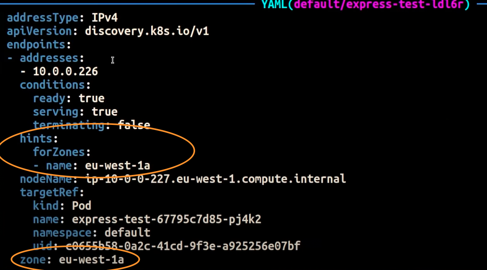
Note
Its important to note that topology aware routing is still in beta. Also, this feature is more predictable when workloads are widely and evenly distributed across the cluster topology. Therefore, it is highly recommended to use it in conjunction with scheduling constraints that increase the availability of an application such as pod topology spread constraints.
Using Autoscalers: Provision Nodes to a Specific AZ
We strongly recommend running your workloads in highly available environments across multiple AZs. This improves the reliability of your applications, especially when there is an incident of an issue with an AZ. In the case you're willing to sacrifice reliability for the sake of reducing their network-related costs, you can restrict your nodes to a single AZ.
To run all your Pods in the same AZ, either provision the worker nodes in the same AZ or schedule the Pods on the worker nodes running on the same AZ. To provision nodes within a single AZ, define a node group with subnets belonging to the same AZ with Cluster Autoscaler (CA). For Karpenter, use topology.kubernetes.io/zone and specify the AZ where youd like to create the worker nodes. For example, the below Karpenter provisioner snippet provisions the nodes in the us-west-2a AZ.
Karpenter
apiVersion: karpenter.sh/v1alpha5
kind: Provisioner
metadata:
name: single-az
spec:
requirements:
- key: "topology.kubernetes.io/zone
operator: In
values: ["us-west-2a"]
Cluster Autoscaler (CA)
apiVersion: eksctl.io/v1alpha5
kind: ClusterConfig
metadata:
name: my-ca-cluster
region: us-east-1
version: "1.21"
availabilityZones:
- us-east-1a
managedNodeGroups:
- name: managed-nodes
labels:
role: managed-nodes
instanceType: t3.medium
minSize: 1
maxSize: 10
desiredCapacity: 1
...
Using Pod Assignment and Node Affinity
Alternatively, if you have worker nodes running in multiple AZs, each node would have the label topology.kubernetes.io/zone with the value of its AZ (such as us-west-2a or us-west-2b). You can utilize nodeSelector or nodeAffinity to schedule Pods to the nodes in a single AZ. For example, the following manifest file will schedule the Pod inside a node running in AZ us-west-2a.
apiVersion: v1
kind: Pod
metadata:
name: nginx
labels:
env: test
spec:
nodeSelector:
topology.kubernetes.io/zone: us-west-2a
containers:
- name: nginx
image: nginx
imagePullPolicy: IfNotPresent
Restricting Traffic to a Node¶
There are cases where restricting traffic at a zonal level isnt sufficient. Apart from reducing costs, you may have the added requirement of reducing network latency between certain applications that have frequent inter-communication. In order to achieve optimal network performance and reduce costs, you need a way to restrict traffic to a specific node. For example, Microservice A should always talk to Microservice B on Node 1, even in highly available (HA) setups. Having Microservice A on Node 1 talk to Microservice B on Node 2 may have a negative impact on the desired performance for applications of this nature, especially if Node 2 is in a separate AZ altogether.
Using the Service Internal Traffic Policy
In order to restrict Pod network traffic to a node, you can make use of the Service internal traffic policy. By default, traffic sent to a workloads Service will be randomly distributed across the different generated endpoints. So in a HA architecture, that means traffic from Microservice A could go to any replica of Microservice B on any given node across the different AZs. However, with the Service's internal traffic policy set to Local, traffic will be restricted to endpoints on the node that the traffic originated from. This policy dictates the exclusive use of node-local endpoints. By implication, your network traffic-related costs for that workload will be lower than if the distribution was cluster wide. Also, the latency will be lower, making your application more performant.
Note
Its important to note that this feature cannot be combined with topology aware routing in Kubernetes.
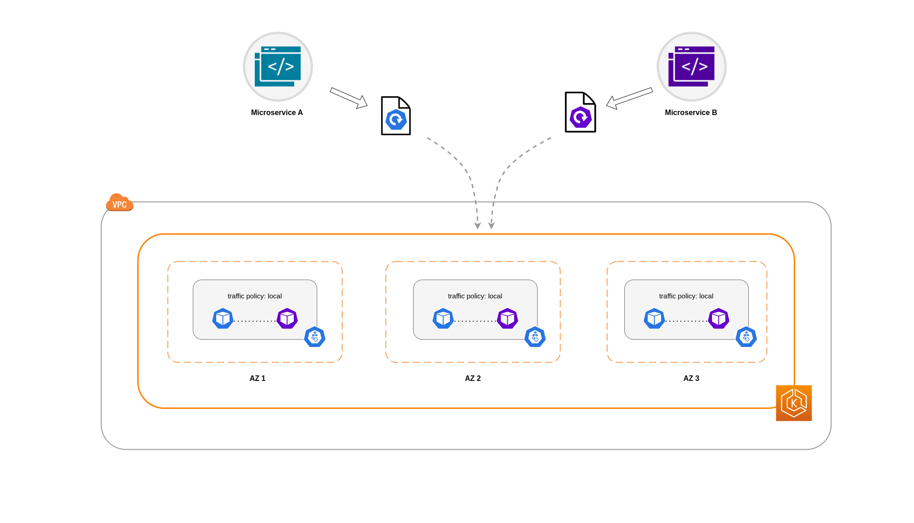
Below is a code snippet on how to set the internal traffic policy for a Service.
apiVersion: v1
kind: Service
metadata:
name: orders-service
namespace: ecommerce
spec:
selector:
app: orders
type: ClusterIP
ports:
- protocol: TCP
port: 3003
targetPort: 3003
internalTrafficPolicy: Local
To avoid unexpected behaviour from your application due to traffic drops, you should consider the following approaches:
- Run enough replicas for each of the communicating Pods
- Have a relatively even spread of Pods using topology spread constraints
- Make use of pod-affinity rules for co-location of communicating Pods
In this example, you have 2 replicas of Microservice A and 3 replicas of Microservice B. If Microservice A has its replicas spread between Nodes 1 and 2, and Microservice B has all 3 of its replicas on Node 3, then they won't be able to communicate because of the Local internal traffic policy. When there are no available node-local endpoints the traffic is dropped.

If Microservice B does have 2 of its 3 replicas on Nodes 1 and 2, then there will be communication between the peer applications. But you would still have an isolated replica of Microservice B without any peer replica to communicate with.

Note
In some scenarios, an isolated replica like the one depicted in the above diagram may not be a cause for concern if it still serves a purpose (such as serving requests from external incoming traffic).
Using the Service Internal Traffic Policy with Topology Spread Constraints
Using the internal traffic policy in conjunction with topology spread constraints can be useful to ensure that you have the right number of replicas for communicating microservices on different nodes.
apiVersion: apps/v1
kind: Deployment
metadata:
name: express-test
spec:
replicas: 6
selector:
matchLabels:
app: express-test
template:
metadata:
labels:
app: express-test
tier: backend
spec:
topologySpreadConstraints:
- maxSkew: 1
topologyKey: "topology.kubernetes.io/zone"
whenUnsatisfiable: ScheduleAnyway
labelSelector:
matchLabels:
app: express-test
Using the Service Internal Traffic Policy with Pod Affinity Rules
Another approach is to make use of Pod affinity rules when using the Service internal traffic policy. With Pod affinity, you can influence the scheduler to co-locate certain Pods because of their frequent communication. By applying strict scheduling constraints (requiredDuringSchedulingIgnoredDuringExecution) on certain Pods, this will give you better results for Pod co-location when the Scheduler is placing Pods on nodes.
apiVersion: apps/v1
kind: Deployment
metadata:
name: graphql
namespace: ecommerce
labels:
app.kubernetes.io/version: "0.1.6"
...
spec:
serviceAccountName: graphql-service-account
affinity:
podAffinity:
requiredDuringSchedulingIgnoredDuringExecution:
- labelSelector:
matchExpressions:
- key: app
operator: In
values:
- orders
topologyKey: "kubernetes.io/hostname"
Load Balancer to Pod Communication¶
EKS workloads are typically fronted by a load balancer that distributes traffic to the relevant Pods in your EKS cluster. Your architecture may comprise internal and/or external facing load balancers. Depending on your architecture and network traffic configurations, the communication between load balancers and Pods can contribute a significant amount to data transfer charges.
You can use the AWS Load Balancer Controller to automatically manage the creation of ELB resources (ALB and NLB). The data transfer charges you incur in such setups will depend on the path taken by the network traffic. The AWS Load Balancer Controller supports two network traffic modes, instance mode, and ip mode.
When using instance mode, a NodePort will be opened on each node in your EKS cluster. The load balancer will then proxy traffic evenly across the nodes. If a node has the destination Pod running on it, then there will be no data transfer costs incurred. However, if the destination Pod is on a separate node and in a different AZ than the NodePort receiving the traffic, then there will be an extra network hop from the kube-proxy to the destination Pod. In such a scenario, there will be cross-AZ data transfer charges. Because of the even distribution of traffic across the nodes, it is highly likely that there will be additional data transfer charges associated with cross-zone network traffic hops from kube-proxies to the relevant destination Pods.
The diagram below depicts a network path for traffic flowing from the load balancer to the NodePort, and subsequently from the kube-proxy to the destination Pod on a separate node in a different AZ. This is an example of the instance mode setting.

When using ip mode, network traffic is proxied from the load balancer directly to the destination Pod. As a result, there are no data transfer charges involved in this approach.
Tip
It is recommended that you set your load balancer to ip traffic mode to reduce data transfer charges. For this setup, its also important to make sure that your load balancer is deployed across all the subnets in your VPC.
The diagram below depicts network paths for traffic flowing from the load balancer to Pods in the network ip mode.

Data Transfer from Container Registry¶
Amazon ECR¶
Data transfer into the Amazon ECR private registry is free. In-region data transfer incurs no cost, but data transfer out to the internet and across regions will be charged at Internet Data Transfer rates on both sides of the transfer.
You should utilize ECRs built-in image replication feature to replicate the relevant container images into the same region as your workloads. This way the replication would be charged once, and all the same region (intra-region) image pulls would be free.
You can further reduce data transfer costs associated with pulling images from ECR (data transfer out) by using Interface VPC Endpoints to connect to the in-region ECR repositories. The alternative approach of connecting to ECRs public AWS endpoint (via a NAT Gateway and an Internet Gateway) will incur higher data processing and transfer costs. The next section will cover reducing data transfer costs between your workloads and AWS Services in greater detail.
If youre running workloads with especially large images, you can build your own custom Amazon Machine Images (AMIs) with pre-cached container images. This can reduce the initial image pull time and potential data transfer costs from a container registry to the EKS worker nodes.
Data Transfer to Internet & AWS Services¶
It's a common practice to integrate Kubernetes workloads with other AWS services or third-party tools and platforms via the Internet. The underlying network infrastructure used to route traffic to and from the relevant destination can impact the costs incurred in the data transfer process.
Using NAT Gateways¶
NAT Gateways are network components that perform network address translation (NAT). The diagram below depicts Pods in an EKS cluster communicating with other AWS services (Amazon ECR, DynamoDB, and S3), and third-party platforms. In this example, the Pods are running in private subnets in separate AZs. To send and receive traffic from the Internet, a NAT Gateway is deployed to the public subnet of one AZ, allowing any resources with private IP addresses to share a single public IP address to access the Internet. This NAT Gateway in turn communicates with the Internet Gateway component, allowing for packets to be sent to their final destination.

When using NAT Gateways for such use cases, you can minimize the data transfer costs by deploying a NAT Gateway in each AZ. This way, traffic routed to the Internet will go through the NAT Gateway in the same AZ, avoiding inter-AZ data transfer. However, even though youll save on the cost of inter-AZ data transfer, the implication of this setup is that youll incur the cost of an additional NAT Gateway in your architecture.
This recommended approach is depicted in the diagram below.

Using VPC Endpoints¶
To further reduce costs in such architectures, you should use VPC Endpoints to establish connectivity between your workloads and AWS services. VPC Endpoints allow you to access AWS services from within a VPC without data/network packets traversing the Internet. All traffic is internal and stays within the AWS network. There are two types of VPC Endpoints: Interface VPC Endpoints (supported by many AWS services) and Gateway VPC Endpoints (only supported by S3 and DynamoDB).
Gateway VPC Endpoints
There are no hourly or data transfer costs associated with Gateway VPC Endpoints. When using Gateway VPC Endpoints, it's important to note that they are not extendable across VPC boundaries. They can't be used in VPC peering, VPN networking, or via Direct Connect.
Interface VPC Endpoint
VPC Endpoints have an hourly charge and, depending on the AWS service, may or may not have an additional charge associated with data processing via the underlying ENI. To reduce inter-AZ data transfer costs related to Interface VPC Endpoints, you can create a VPC Endpoint in each AZ. You can create multiple VPC Endpoints in the same VPC even if they're pointing to the same AWS service.
The diagram below shows Pods communicating with AWS services via VPC Endpoints.

Data Transfer between VPCs¶
In some cases, you may have workloads in distinct VPCs (within the same AWS region) that need to communicate with each other. This can be accomplished by allowing traffic to traverse the public internet through Internet Gateways attached to the respective VPCs. Such communication can be enabled by deploying infrastructure components like EC2 instances, NAT Gateways or NAT instances in public subnets. However, a setup including these components will incur charges for processing/transferring data in and out of the VPCs. If the traffic to and from the separate VPCs is moving across AZs, then there will be an additional charge in the transfer of data. The diagram below depicts a setup that uses NAT Gateways and Internet Gateways to establish communication between workloads in different VPCs.

VPC Peering Connections¶
To reduce costs for such use cases, you can make use of VPC Peering. With a VPC Peering connection, there are no data transfer charges for network traffic that stays within the same AZ. If traffic crosses AZs, there will be a cost incurred. Nonetheless, the VPC Peering approach is recommended for cost-effective communication between workloads in separate VPCs within the same AWS region. However, its important to note that VPC peering is primarily effective for 1:1 VPC connectivity because it doesnt allow for transitive networking.
The diagram below is a high-level representation of workloads communication via a VPC peering connection.

Transitive Networking Connections¶
As pointed out in the previous section, VPC Peering connections do not allow for transitive networking connectivity. If you want to connect 3 or more VPCs with transitive networking requirements, then you should use a Transit Gateway (TGW). This will enable you to overcome the limits of VPC Peering or any operational overhead associated with having multiple VPC Peering connections between multiple VPCs. You are billed on an hourly basis and for data sent to the TGW. There is no destination cost associated with inter-AZ traffic that flows through the TGW.
The diagram below shows inter-AZ traffic flowing through a TGW between workloads in different VPCs but within the same AWS region.

Using a Service Mesh¶
Service meshes offer powerful networking capabilities that can be used to reduce network related costs in your EKS cluster environments. However, you should carefully consider the operational tasks and complexity that a service mesh will introduce to your environment if you adopt one.
Restricting Traffic to Availability Zones¶
Using Istios Locality Weighted Distribution
Istio enables you to apply network policies to traffic after routing occurs. This is done using Destination Rules such as locality weighted distribution. Using this feature, you can control the weight (expressed as a percentage) of traffic that can go to a certain destination based on its origin. The source of this traffic can either be from an external (or public facing) load balancer or a Pod within the cluster itself. When all the Pod endpoints are available, the locality will be selected based on a weighted round-robin load balancing algorithm. In the case that certain endpoints are unhealthy or unavailable, the locality weight will be automatically adjusted to reflect this change in the available endpoints.
Note
Before implementing locality weighted distribution, you should start by understanding your network traffic patterns and the implications that the Destination Rule policy may have on your applications behaviour. As such, its important to have distributed tracing mechanisms in place with tools such as AWS X-Ray or Jaeger.
The Istio Destination Rules detailed above can also be applied to manage traffic from a load balancer to Pods in your EKS cluster. Locality weighted distribution rules can be applied to a Service that receives traffic from a highly available load balancer (specifically the Ingress Gateway). These rules allow you to control how much traffic goes where based on its zonal origin - the load balancer in this case. If configured correctly, less egress cross-zone traffic will be incurred compared to a load balancer that distributes traffic evenly or randomly to Pod replicas in different AZs.
Below is a code block example of a Destination Rule resource in Istio. As can be seen below, this resource specifies weighted configurations for incoming traffic from 3 different AZs in the eu-west-1 region. These configurations declare that a majority of the incoming traffic (70% in this case) from a given AZ should be proxied to a destination in the same AZ from which it originates.
apiVersion: networking.istio.io/v1beta1
kind: DestinationRule
metadata:
name: express-test-dr
spec:
host: express-test.default.svc.cluster.local
trafficPolicy:
loadBalancer:
localityLbSetting:
distribute:
- from: eu-west-1/eu-west-1a/
to:
"eu-west-1/eu-west-1a/*": 70
"eu-west-1/eu-west-1b/*": 20
"eu-west-1/eu-west-1c/*": 10
- from: eu-west-1/eu-west-1b/*
to:
"eu-west-1/eu-west-1a/*": 20
"eu-west-1/eu-west-1b/*": 70
"eu-west-1/eu-west-1c/*": 10
- from: eu-west-1/eu-west-1c/*
to:
"eu-west-1/eu-west-1a/*": 20
"eu-west-1/eu-west-1b/*": 10
"eu-west-1/eu-west-1c/*": 70**
connectionPool:
http:
http2MaxRequests: 10
maxRequestsPerConnection: 10
outlierDetection:
consecutiveGatewayErrors: 1
interval: 1m
baseEjectionTime: 30s
Note
The minimum weight that can be distributed destination is 1%. The reason for this is to maintain failover regions and zones in the case that the endpoints in the main destination become unhealthy or unavailable.
The diagram below depicts a scenario in which there is a highly available load balancer in the eu-west-1 region and locality weighted distribution is applied. The Destination Rule policy for this diagram is configured to send 60% of traffic coming from eu-west-1a to Pods in the same AZ, whereas 40% of the traffic from eu-west-1a should go to Pods in eu-west-1b.

Restricting Traffic to Availability Zones and Nodes¶
Using the Service Internal Traffic Policy with Istio
To mitigate network costs associated with external incoming traffic and internal traffic between Pods, you can combine Istios Destination Rules and the Kubernetes Service internal traffic policy. The way to combine Istio destination rules with the service internal traffic policy will largely depend on 3 things:
- The role of the microservices
- Network traffic patterns across the microservices
- How the microservices should be deployed across the Kubernetes cluster topology
The diagram below shows what the network flow would look like in the case of a nested request and how the aforementioned policies would control the traffic.

- The end user makes a request to APP A, which in turn makes a nested request to APP C. This request is first sent to a highly available load balancer, which has instances in AZ 1 and AZ 2 as the above diagram shows.
- The external incoming request is then routed to the correct destination by the Istio Virtual Service.
- After the request is routed, the Istio Destination Rule controls how much traffic goes to the respective AZs based on where it originated from (AZ 1 or AZ 2).
- The traffic then goes to the Service for APP A, and is then proxied to the respective Pod endpoints. As shown in the diagram, 80% of the incoming traffic is sent to Pod endpoints in AZ 1, and 20% of the incoming traffic is sent to AZ 2.
- APP A then makes an internal request to APP C. APP C's Service has an internal traffic policy enabled (
internalTrafficPolicy``: Local). - The internal request from APP A (on NODE 1) to APP C is successful because of the available node-local endpoint for APP C.
- The internal request from APP A (on NODE 3) to APP C fails because there are no available node-local endpoints for APP C. As the diagram shows, APP C has no replicas on NODE 3. ****
The screenshots below are captured from a live example of this approach. The first set of screenshots demonstrate a successful external request to a graphql and a successful nested request from the graphql to a co-located orders replica on the node ip-10-0-0-151.af-south-1.compute.internal.
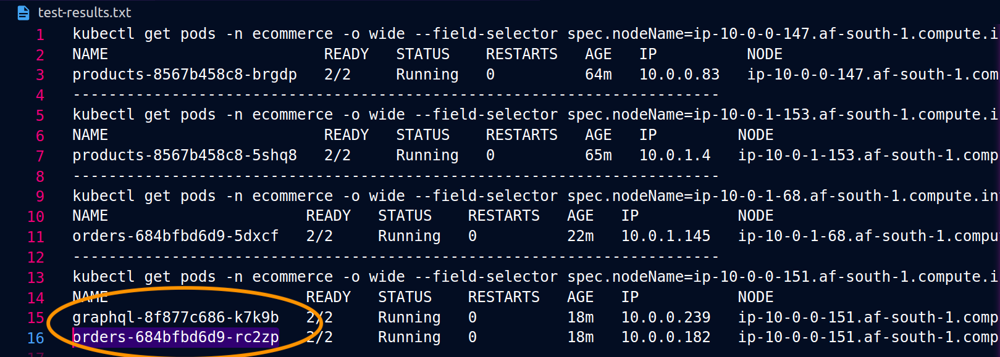

With Istio, you can verify and export the statistics of any upstream clusters and endpoints that your proxies are aware of. This can help provide a picture of the network flow as well as the share of distribution among the services of a workload. Continuing with the same example, the orders endpoints that the graphql proxy is aware of can be obtained using the following command:
kubectl exec -it deploy/graphql -n ecommerce -c istio-proxy -- curl localhost:15000/clusters | grep orders
...
orders-service.ecommerce.svc.cluster.local::10.0.1.33:3003::**rq_error::0**
orders-service.ecommerce.svc.cluster.local::10.0.1.33:3003::**rq_success::119**
orders-service.ecommerce.svc.cluster.local::10.0.1.33:3003::**rq_timeout::0**
orders-service.ecommerce.svc.cluster.local::10.0.1.33:3003::**rq_total::119**
orders-service.ecommerce.svc.cluster.local::10.0.1.33:3003::**health_flags::healthy**
orders-service.ecommerce.svc.cluster.local::10.0.1.33:3003::**region::af-south-1**
orders-service.ecommerce.svc.cluster.local::10.0.1.33:3003::**zone::af-south-1b**
...
In this case, the graphql proxy is only aware of the orders endpoint for the replica that it shares a node with. If you remove the internalTrafficPolicy: Local setting from the orders Service, and re-run a command like the one above, then the results will return all the endpoints of the replicas spread across the different nodes. Furthermore, by examining the rq_total for the respective endpoints, you'll notice a relatively even share in network distribution. Consequently, if the endpoints are associated with upstream services running in different AZs, then this network distribution across zones will result in higher costs.
As mentioned in a previous section above, you can co-locate frequently communicating Pods by making use of pod-affinity.
...
spec:
...
template:
metadata:
labels:
app: graphql
role: api
workload: ecommerce
spec:
affinity:
podAffinity:
requiredDuringSchedulingIgnoredDuringExecution:
- labelSelector:
matchExpressions:
- key: app
operator: In
values:
- orders
topologyKey: "kubernetes.io/hostname"
nodeSelector:
managedBy: karpenter
billing-team: ecommerce
...
When the graphql and orders replicas don't co-exist on the same node (ip-10-0-0-151.af-south-1.compute.internal), the first request to graphql is successful as noted by the 200 response code in the Postman screenshot below, whereas the second nested request from graphql to orders fails with a 503 response code.


Additional Resources¶
- Addressing latency and data transfer costs on EKS using Istio
- Exploring the effect of Topology Aware Hints on network traffic in Amazon Elastic Kubernetes Service
- Getting visibility into your Amazon EKS Cross-AZ pod to pod network bytes
- Optimize AZ Traffic with Istio
- Optimize AZ Traffic with Topology Aware Routing
- Optimize Kubernetes Cost & Performance with Service Internal Traffic Policy
- Optimize Kubernetes Cost & Performance with Istio and Service Internal Traffic Policy
- Overview of Data Transfer Costs for Common Architectures
- Understanding data transfer costs for AWS container services
Cost Optimization - Storage¶
Overview¶
There are scenarios where you may want to run applications that need to preserve data for a short or long term basis. For such use cases, volumes can be defined and mounted by Pods so that their containers can tap into different storage mechanisms. Kubernetes supports different types of volumes for ephemeral and persistent storage. The choice of storage largely depends on application requirements. For each approach, there are cost implications, and the practices detailed below which will help you accomplish cost efficiency for workloads needing some form of storage in your EKS environments.
Ephemeral Volumes¶
Ephemeral volumes are for applications that require transient local volumes but don't require data to be persisted after restarts. Examples of this include requirements for scratch space, caching, and read-only input data like configuration data and secrets. You can find more details of Kubernetes ephemeral volumes here. Most of ephemeral volumes (e.g. emptyDir, configMap, downwardAPI, secret, hostpath) are backed by locally-attached writable devices (usually the root disk) or RAM, so it's important to choose the most cost efficient and performant host volume.
Using EBS Volumes¶
We recommend starting with gp3 as the host root volume. It is the latest general purpose SSD volume offered by Amazon EBS and also offers a lower price (up to 20%) per GB compared to gp2 volumes.
Using Amazon EC2 Instance Stores¶
Amazon EC2 instance stores provide temporary block-level storage for your EC2 instances. The storage provided by EC2 instance stores is accessible through disks that are physically attached to the hosts. Unlike Amazon EBS, you can only attach instance store volumes when the instance is launched, and these volumes only exist during the lifetime of the instance. They cannot be detached and re-attached to other instances. You can learn more about Amazon EC2 instance stores here. There are no additional fees associated with an instance store volume. This makes them (instance store volumes) more cost efficient than the the general EC2 instances with large EBS volumes.
To use local store volumes in Kubernetes, you should partition, configure, and format the disks using the Amazon EC2 user-data so that volumes can be mounted as a HostPath in the pod spec. Alternatively, you can leverage the Local Persistent Volume Static Provisioner to simplify local storage management. The Local Persistent Volume static provisioner allows you to access local instance store volumes through the standard Kubernetes PersistentVolumeClaim (PVC) interface. Furthermore, it will provision PersistentVolumes (PVs) that contains node affinity information to schedule Pods to the correct nodes. Although it uses Kubernetes PersistentVolumes, EC2 instance store volumes are ephemeral in nature. Data written to ephemeral disks is only available during the instances lifetime. When the instance is terminated, so is the data. Please refer to this blog for more details.
Keep in mind that when using Amazon EC2 instance store volumes, the total IOPS limit is shared with the host and it binds Pods to a specific host. You should thoroughly review your workload requirements before adopting Amazon EC2 instance store volumes.
Persistent Volumes¶
Kubernetes is typically associated with running stateless applications. However, there are scenarios where you may want to run microservices that need to preserve persistent data or information from one request to the next. Databases are a common example for such use cases. However, Pods, and the containers or processes inside them, are ephemeral in nature. To persist data beyond the lifetime of a Pod, you can use PVs to define access to storage at a specific location that is independent from the Pod. The costs associated with PVs is highly dependent on the type of storage being used and how applications are consuming it.
There are different types of storage options that support Kubernetes PVs on Amazon EKS listed here. The storage options covered below are Amazon EBS, Amazon EFS, Amazon FSx for Lustre, Amazon FSx for NetApp ONTAP.
Amazon Elastic Block Store (EBS) Volumes¶
Amazon EBS volumes can be consumed as Kubernetes PVs to provide block-level storage volumes. These are well suited for databases that rely on random reads & writes and throughput-intensive applications that perform long, continuous reads and writes. The Amazon Elastic Block Store Container Storage Interface (CSI) driver allows Amazon EKS clusters to manage the lifecycle of Amazon EBS volumes for persistent volumes. The Container Storage Interface enables and facilitates interaction between Kubernetes and a storage system. When a CSI driver is deployed to your EKS cluster, you can access its capabilities through the native Kubernetes storage resources such as Persistent Volumes (PVs), Persistent Volume Claims (PVCs) and Storage Classes (SCs). This link provides practical examples of how to interact with Amazon EBS volumes with Amazon EBS CSI driver.
Choosing the right volume¶
We recommend using the latest generation of block storage (gp3) as it provides the right balance between price and performance. It also allows you to scale volume IOPS and throughput independently of volume size without needing to provision additional block storage capacity. If youre currently using gp2 volumes, we highly recommend migrating to gp3 volumes. This blog explains how to migrate from gp2 on gp3 on Amazon EKS clusters.
When you have applications that require higher performance and need volumes larger than what a single gp3 volume can support, you should consider using io2 block express. This type of storage is ideal for your largest, most I/O intensive, and mission critical deployment such as SAP HANA or other large databases with low latency requirements. Keep in mind that an instance's EBS performance is bounded by the instance's performance limits, so not all the instances support io2 block express volumes. You can check the supported instance types and other considerations in this doc.
A single gp3 volume can support up to up to 16,000 max IOPS, 1,000 MiB/s max throughput, max 16TiB. The latest generation of Provisioned IOPS SSD volume that provides up to 256,000 IOPS, 4,000 MiB/s, throughput, and 64TiB.
Among these options, you should best tailor your storage performance and cost to the needs of your applications.
Monitor and optimize over time¶
It's important to understand your application's baseline performance and monitor it for selected volumes to check if it's meeting your requirements/expectations or if it's over-provisioned (e.g. a scenario where provisioned IOPS are not being fully utilized).
Instead of allocating a large volume from the beginning, you can gradually increase the size of the volume as you accumulate data. You can dynamically re-size volumes using the volume resizing feature in the Amazon Elastic Block Store CSI driver (aws-ebs-csi-driver). Keep in mind that you can only increase the EBS volume size.
To identify and remove any dangling EBS volumes, you can use AWS trusted advisors cost optimization category. This feature helps you identify unattached volumes or volumes with very low write activity for a period of time. There is a cloud-native open-source, read-only tool called Popeye that scans live Kubernetes clusters and reports potential issues with deployed resources and configurations. For example, it can scan for unused PVs and PVCs and check whether they are bound or whether there is any volume mount error.
For a deep dive on monitoring, please refer to the EKS cost optimization observability guide.
One other option you can consider is the AWS Compute Optimizer Amazon EBS volume recommendations. This tool automatically identifies the optimal volume configuration and correct level of performance needed. For example, it can be used for optimal settings pertaining to provisioned IOPS, volume sizes, and types of EBS volumes based on the maximum utilization during the past 14 days. It also quantifies the potential monthly cost savings derived from its recommendations. You can review this blog for more details.
Backup retention policy¶
You can back up the data on your Amazon EBS volumes by taking point-in-time snapshots. The Amazon EBS CSI driver supports volume snapshots. You can learn how to create a snapshot and restore an EBS PV using the steps outlined here.
Subsequent snapshots are incremental backups, meaning that only the blocks on the device that have changed after your most recent snapshot are saved. This minimizes the time required to create the snapshot and saves on storage costs by not duplicating data. However, growing the number of old EBS snapshots without a proper retention policy can cause unexpected costs when operating at scale. If youre directly backing up Amazon EBS volumes through AWS API, you can leverage Amazon Data Lifecycle Manager (DLM) that provides an automated, policy-based lifecycle management solution for Amazon Elastic Block Store (EBS) Snapshots and EBS-backed Amazon Machine Images (AMIs). The console makes it easier to automate the creation, retention, and deletion of EBS Snapshots and AMIs.
Note
There is currently no way to make use of Amazon DLM via the Amazon EBS CSI driver.
In a Kubernetes environment, you can leverage an open-source tool called Velero to backup your EBS Persistent Volumes. You can set a TTL flag when scheduling the job to expire backups. Here is a guide from Velero as an example.
Amazon Elastic File System (EFS)¶
Amazon Elastic File System (EFS) is a serverless, fully elastic file system that lets you share file data using standard file system interface and file system semantics for a broad spectrum of workloads and applications. Examples of workloads and applications include Wordpress and Drupal, developer tools like JIRA and Git, and shared notebook system such as Jupyter as well as home directories.
One of main benefits of Amazon EFS is that it can be mounted by multiple containers spread across multiple nodes and multiple availability zones. Another benefit is that you only pay for the storage you use. EFS file systems will automatically grow and shrink as you add and remove files which eliminates the need for capacity planning.
To use Amazon EFS in Kubernetes, you need to use the Amazon Elastic File System Container Storage Interface (CSI) Driver, aws-efs-csi-driver. Currently, the driver can dynamically create access points. However, the Amazon EFS file system has to be provisioned first and provided as an input to the Kubernetes storage class parameter.
Choosing the right EFS storage class¶
Amazon EFS offers four storage classes.
Two standard storage classes:
- Amazon EFS Standard
- Amazon EFS Standard-Infrequent Access (EFS Standard-IA)
Two one-zone storage classes:
- Amazon EFS One Zone
- Amazon EFS One Zone-Infrequent Access (EFS One Zone-IA)
The Infrequent Access (IA) storage classes are cost-optimized for files that are not accessed every day. With Amazon EFS lifecycle management, you can move files that have not been accessed for the duration of the lifecycle policy (7, 14, 30, 60, or 90 days) to the IA storage classes which can reduce the storage cost by up to 92 percent compared to EFS Standard and EFS One Zone storage classes respectively.
With EFS Intelligent-Tiering, lifecycle management monitors the access patterns of your file system and automatically move files to the most optimal storage class.
Note
aws-efs-csi-driver currently doesnt have a control on changing storage classes, lifecycle management or Intelligent-Tiering. Those should be setup manually in the AWS console or through the EFS APIs.
Note
aws-efs-csi-driver isnt compatible with Window-based container images.
Note
There is a known memory issue when vol-metrics-opt-in (to emit volume metrics) is enabled due to the DiskUsage function that consumes an amount of memory that is proportional to the size of your filesystem. Currently, we recommend to disable the --vol-metrics-opt-in option on large filesystems to avoid consuming too much memory. Here is a github issue link for more details.
Amazon FSx for Lustre¶
Lustre is a high-performance parallel file system commonly used in workloads requiring throughput up to hundreds of GB/s and sub-millisecond per-operation latencies. Its used for scenarios such as machine learning training, financial modeling, HPC, and video processing. Amazon FSx for Lustre provides a fully managed shared storage with the scalability and performance, seamlessly integrated with Amazon S3.
You can use Kubernetes persistent storage volumes backed by FSx for Lustre using the FSx for Lustre CSI driver from Amazon EKS or your self-managed Kubernetes cluster on AWS. See the Amazon EKS documentation for more details and examples.
Link to Amazon S3¶
It's recommended to link a highly durable long-term data repository residing on Amazon S3 with your FSx for Lustre file system. Once linked, large datasets are lazy-loaded as needed from Amazon S3 to FSx for Lustre file systems. You can also run your analyses and your results back to S3, and then delete your [Lustre] file system.
Choosing the right deployment and storage options¶
FSx for Lustre provides different deployment options. The first option is called scratch and it doesnt replicate data, while the second option is called persistent which, as the name implies, persists data.
The first option (scratch) can be used to reduce the cost of temporary shorter-term data processing. The persistent deployment option is designed for longer-term storage that automatically replicates data within an AWS Availability Zone. It also supports both SSD and HDD storage.
You can configure the desired deployment type under parameters in the FSx for lustre filesystems Kubernetes StorageClass. Here is an link that provides sample templates.
Note
For latency-sensitive workloads or workloads requiring the highest levels of IOPS/throughput, you should choose SSD storage. For throughput-focused workloads that arent latency-sensitive, you should choose HDD storage.
Enable data compression¶
You can also enable data compression on your file system by specifying LZ4 as the Data Compression Type. Once its enabled, all newly-written files will be automatically compressed on FSx for Lustre before they are written to disk and uncompressed when they are read. LZ4 data compression algorithm is lossless so the original data can be fully reconstructed from the compressed data.
You can configure the data compression type as LZ4 under parameters in the FSx for lustre filesystems Kubernetes StorageClass. Compression is disabled when the value is set to NONE, which is default. This link provides sample templates.
Note
Amazon FSx for Lustre isnt compatible with Window-based container images.
Amazon FSx for NetApp ONTAP¶
Amazon FSx for NetApp ONTAP is a fully managed shared storage built on NetApps ONTAP file system. FSx for ONTAP provides feature-rich, fast, and flexible shared file storage thats broadly accessible from Linux, Windows, and macOS compute instances running in AWS or on premises.
Amazon FSx for NetApp ONTAP supports two tiers of storage: 1/primary tier and 2/capacity pool tier.
The primary tier is a provisioned, high-performance SSD-based tier for active, latency-sensitive data. The fully elastic capacity pool tier is cost-optimized for infrequently accessed data, automatically scales as data is tiered to it, and offers virtually unlimited petabytes of capacity. You can enable data compression and deduplication on capacity pool storage and further reduce the amount of storage capacity your data consumes. NetApps native, policy-based FabricPool feature continually monitors data access patterns, automatically transferring data bidirectionally between storage tiers to optimize performance and cost.
NetApp's Astra Trident provides dynamic storage orchestration using a CSI driver which allows Amazon EKS clusters to manage the lifecycle of persistent volumes PVs backed by Amazon FSx for NetApp ONTAP file systems. To get started, see Use Astra Trident with Amazon FSx for NetApp ONTAP in the Astra Trident documentation.
Other considerations¶
Minimize the size of container image¶
Once containers are deployed, container images are cached on the host as multiple layers. By reducing the size of images, the amount of storage required on the host can be reduced.
By using slimmed-down base images such as scratch images or distroless container images (that contain only your application and its runtime dependencies) from the beginning, you can reduce storage cost in addition to other ancillary benefits such as a reducing the attack surface area and shorter image pull times.
You should also consider using open source tools, such as Slim.ai that provides an easy, secure way to create minimal images.
Multiple layers of packages, tools, application dependencies, libraries can easily bloat the container image size. By using multi-stage builds, you can selectively copy artifacts from one stage to another, excluding everything that isnt necessary from the final image. You can check more image-building best practices here.
Another thing to consider is how long to persist cached images. You may want to clean up the stale images from the image cache when a certain amount of disk is utilized. Doing so will help make sure you have enough space for the hosts operation. By default, the kubelet performs garbage collection on unused images every five minutes and on unused containers every minute.
To configure options for unused container and image garbage collection, tune the kubelet using a configuration file and change the parameters related to garbage collection using the KubeletConfiguration resource type.
You can learn more about it in the Kubernetes documentation.
Cost Optimization - Observability¶
Introduction¶
Observability tools help you efficiently detect, remediate and investigate your workloads. The cost of telemetry data naturally increases as your use of EKS increases. At times, it can be challenging to balance your operational needs and measuring what matters to your business and keeping observability costs in check. This guide focuses on cost optimization strategies for the three pillars of observability: logs, metrics and traces. Each of these best practices can be applied independently to fit your organizations optimization goals.
Logging¶
Logging plays a vital role in monitoring and troubleshooting the applications in your cluster. There are several strategies that can be employed to optimize logging costs. The best practice strategies listed below include examining your log retention policies to implement granular controls on how long log data is kept, sending log data to different storage options based on importance, and utilizing log filtering to narrow down the types of logs messages that are stored. Efficiently managing log telemetry can lead to cost savings for your environments.
EKS Control Plane¶
Optimize Your Control Plane Logs¶
The Kubernetes control plane is a set of components that manage the clusters and these components send different types of information as log streams to a log group in Amazon CloudWatch. While there are benefits to enabling all control plane log types, you should be aware of the information in each log and the associated costs to storing all the log telemetry. You are charged for the standard CloudWatch Logs data ingestion and storage costs for logs sent to Amazon CloudWatch Logs from your clusters. Before enabling them, evaluate whether each log stream is necessary.
For example, in non-production clusters, selectively enable specific log types, such as the api server logs, only for analysis and deactivate afterward. But for production clusters, where you might not be able to reproduce events, and resolving issues requires more log information, then you can enable all log types. Further control plane cost optimization implementation details are in this blog post.
Stream Logs to S3¶
Another cost optimization best practice is streaming control plane logs to S3 via CloudWatch Logs subscriptions. Leveraging CloudWatch Logs subscriptions allows you to selectively forward logs to S3 which provides more cost efficient long term storage compared to retaining logs indefinitely in CloudWatch. For example, for production clusters, you can create a critical log group and leverage subscriptions to stream these logs to S3 after 15 days. This will ensure you have have quick access to the logs for analysis but also save on cost by moving logs to a more cost efficient storage.
Attention
As of 9/5/2023 EKS logs are classified as Vended Logs in Amazon CloudWatch Logs. Vended Logs are specific AWS service logs natively published by AWS services on behalf of the customer and available at volume discount pricing. Please visit the Amazon CloudWatch pricing page to learn more about Vended Logs pricing.
EKS Data Plane¶
Log Retention¶
Amazon CloudWatchs default retention policy is to keep logs indefinitely and never expire, incurring storage costs applicable to your AWS region. In order to reduce the storage costs, you can customize the retention policy for each log group based on your workload requirements.
In a development environment, a lengthy retention period may not be necessary. But in a production environment, you can set a longer retention policy to meet troubleshooting, compliance, and capacity planning requirements. For example, if you are running an e-commerce application during the peak holiday season the system is under heavier load and issues can arise that may not be immediately noticeable, you will want to set a longer log retention for detailed troubleshooting and post event analysis.
You can configure your retention periods in the AWS CloudWatch console or AWS API with the duration from 1 day to 10 years based on each log group. Having a flexible retention period can save log storage costs, while also maintaining critical logs.
Log Storage Options¶
Storage is a large driver of observability costs therefore it is crucial to optimize your log storage strategy. Your strategies should align with your workloads requirements while maintaining performance and scalability. One strategy to reduce the costs of storing logs is to leverage AWS S3 buckets and its different storage tiers.
Forward logs directly to S3¶
Consider forwarding less critical logs, such as development environments, directly to S3 instead of Cloudwatch. This can have an immediate impact on log storage costs. One option is to forward the logs straight to S3 using Fluentbit. You define this in the [OUTPUT] section, the destination where FluentBit transmits container logs for retention. Review additional configurations parameter here.
[OUTPUT]
Name eks_to_s3
Match application.*
bucket $S3_BUCKET name
region us-east-2
store_dir /var/log/fluentbit
total_file_size 30M
upload_timeout 3m
Forward logs to CloudWatch only for short term analysis¶
For more critical logs, such as a production environments where you might need to perform immediate analysis on the data, consider forwarding the logs to CloudWatch. You define this in the [OUTPUT] section, the destination where FluentBit transmits container logs for retention. Review additional configurations parameter here.
[OUTPUT]
Name eks_to_cloudwatch_logs
Match application.*
region us-east-2
log_group_name fluent-bit-cloudwatch
log_stream_prefix from-fluent-bit-
auto_create_group On
However, this will not have an instant affect on your cost savings. For additional savings, you will have to export these logs to Amazon S3.
Export to Amazon S3 from CloudWatch¶
For storing Amazon CloudWatch logs long term, we recommend exporting your Amazon EKS CloudWatch logs to Amazon Simple Storage Service (Amazon S3). You can forward the logs to Amazon S3 bucket by creating an export task via the Console or the API. After you have done so, Amazon S3 presents many options to further reduce cost. You can define your own Amazon S3 Lifecycle rules to move your logs to a storage class that a fits your needs, or leverage the Amazon S3 Intelligent-Tiering storage class to have AWS automatically move data to long-term storage based on your usage pattern. Please refer to this blog for more details. For example, for your production environment logs reside in CloudWatch for more than 30 days then exported to Amazon S3 bucket. You can then use Amazon Athena to query the data in Amazon S3 bucket if you need to refer back to the logs at a later time.
Reduce Log Levels¶
Practice selective logging for your application. Both your applications and nodes output logs by default. For your application logs, adjust the log levels to align with the criticality of the workload and environment. For example, the java application below is outputting INFO logs which is the typical default application configuration and depending on the code can result in a high volume of log data.
import org.apache.log4j.*;
public class LogClass {
private static org.apache.log4j.Logger log = Logger.getLogger(LogClass.class);
public static void main(String[] args) {
log.setLevel(Level.INFO);
log.debug("This is a DEBUG message, check this out!");
log.info("This is an INFO message, nothing to see here!");
log.warn("This is a WARN message, investigate this!");
log.error("This is an ERROR message, check this out!");
log.fatal("This is a FATAL message, investigate this!");
}
}
In a development environment, change your log level to DEBUG, as this can help you debug issues or catch potential ones before they get into production.
In a production environment, consider modifying your log level to ERROR or FATAL. This will output log only when your application has errors, reducing the log output and help you focus on important data about your application status.
You can fine tune various Kubernetes components log levels. For example, if you are using Bottlerocket as your EKS Node operating system, there are configuration settings that allow you to adjust the kubelet process log level. A snippet of this configuration setting is below. Note the default log level of 2 which adjusts the logging verbosity of the kubelet process.
[settings.kubernetes]
log-level = "2"
image-gc-high-threshold-percent = "85"
image-gc-low-threshold-percent = "80"
For a development environment, you can set the log level greater than 2 in order to view additional events, this is good for debugging. For a production environment, you can set the level to 0 in order to view only critical events.
Leverage Filters¶
When using a default EKS Fluentbit configuration to send container logs to Cloudwatch, FluentBit captures and send ALL application container logs enriched with Kubernetes metadata to Cloudwatch as shown in the [INPUT] configuration block below.
[INPUT]
Name tail
Tag application.*
Exclude_Path /var/log/containers/cloudwatch-agent*, /var/log/containers/fluent-bit*, /var/log/containers/aws-node*, /var/log/containers/kube-proxy*
Path /var/log/containers/*.log
Docker_Mode On
Docker_Mode_Flush 5
Docker_Mode_Parser container_firstline
Parser docker
DB /var/fluent-bit/state/flb_container.db
Mem_Buf_Limit 50MB
Skip_Long_Lines On
Refresh_Interval 10
Rotate_Wait 30
storage.type filesystem
Read_from_Head ${READ_FROM_HEAD}
The [INPUT] section above is ingesting all the container logs. This can generate a large amount of data that might not be necessary. Filtering out this data can reduce the amount of log data sent to CloudWatch therefore reducing your cost. You can apply a filter to you logs before it outputs to CloudWatch. Fluentbit defines this in the [FILTER] section. For example, filtering out the Kubernetes metadata from being appended to log events can reduce your log volume.
[FILTER]
Name nest
Match application.*
Operation lift
Nested_under kubernetes
Add_prefix Kube.
[FILTER]
Name modify
Match application.*
Remove Kube.<Metadata_1>
Remove Kube.<Metadata_2>
Remove Kube.<Metadata_3>
[FILTER]
Name nest
Match application.*
Operation nest
Wildcard Kube.*
Nested_under kubernetes
Remove_prefix Kube.
Metrics¶
Metrics provide valuable information regarding the performance of your system. By consolidating all system-related or available resource metrics in a centralized location, you gain the capability to compare and analyze performance data. This centralized approach enables you to make more informed strategic decisions, such as scaling up or scaling down resources. Additionally, metrics play a crucial role in assessing the health of resources, allowing you to take proactive measures when necessary. Generally observability costs scale with telemetry data collection and retention. Below are a few strategies you can implement to reduce the cost of metric telemetry: collecting only metrics that matter, reducing the cardinality of your telemetry data, and fine tuning the granularity of your telemetry data collection.
Monitor what matters and collect only what you need¶
The first cost reduction strategy is to reduce the number of metrics you are collecting and in turn, reduce retention costs.
- Begin by working backwards from your and/or your stakeholders requirements to determine the metrics that are most important. Success metrics are different for everyone! Know what good looks like and measure for it.
- Consider diving deep into the workloads you are supporting and identifying its Key Performance Indicators (KPIs) a.k.a 'Golden Signals'. These should align to business and stake-holder requirements. Calculating SLIs, SLOs, and SLAs using Amazon CloudWatch and Metric Math is crucial for managing service reliability. Follow the best practices outlined in this guide to effectively monitor and maintain the performance of your EKS environment.
- Then continue through the different layers of infrastructure to connect and correlate EKS cluster, node and additional infrastructure metrics to your workload KPIs. Store your business metrics and operational metrics in a system where you can correlate them together and draw conclusions based on observed impacts to both.
- EKS exposes metrics from the control plane, cluster kube-state-metrics, pods, and nodes. The relevance of all these metrics is dependent on your needs, however its likely that you will not need every single metric across the different layers. You can use this EKS essential metrics guide as a baseline for monitoring the overall health of an EKS cluster and your workloads.
Here is an example prometheus scrape config where we are using the relabel_config to keep only kubelet metrics and metric_relabel_config to drop all container metrics.
kubernetes_sd_configs:
- role: endpoints
namespaces:
names:
- kube-system
bearer_token_file: /var/run/secrets/kubernetes.io/serviceaccount/token
tls_config:
insecure_skip_verify: true
relabel_configs:
- source_labels: [__meta_kubernetes_service_label_k8s_app]
regex: kubelet
action: keep
metric_relabel_configs:
- source_labels: [__name__]
regex: container_(network_tcp_usage_total|network_udp_usage_total|tasks_state|cpu_load_average_10s)
action: drop
Reduce cardinality where applicable¶
Cardinality refers to the uniqueness of the data values in combination with its dimensions (eg. prometheus labels) for a specific metrics set. High cardinality metrics have many dimensions and each dimension metric combination has higher uniqueness. Higher cardinality results in larger metric telemetry data size and storage needs which increases cost.
In the high cardinality example below, we see that the Metric, Latency, has Dimensions, RequestID, CustomerID, and Service and each Dimension has many unique values. Cardinality is the measure of the combination of the number of possible values per Dimension. In Prometheus, each set of unique dimensions/labels are consider as a new metric, therefore high cardinality means more metrics.

In EKS environments with many metrics and dimensions/labels per metric (Cluster, Namespace, Service, Pod, Container, etc), the cardinality tends to grow. In order to optimize cost, consider the cardinality of the metrics you are collecting carefully. For example, if you are aggregating a specific metric for visualization at the cluster level, then you can drop additional labels that are at a lower layer such as the namespace label.
In order to identify high cardinality metrics in prometheus you can run the following PROMQL query to determine which scrape targets have the highest number of metrics (cardinality):
and the following PROMQL query can help you determine which scrape targets have the highest metrics churn (how many new metrics series were created in a given scrape) rates :
If you are using grafana you can use Grafana Labs Mimirtool to analyze your grafana dashboards and prometheus rules to identify unused high-cardinality metrics. Follow this guide on how to use the mimirtool analyze and mimirtool analyze prometheus commands to identify active metrics which are not referenced in your dashboards.
Consider metric granularity¶
Collecting metrics at a higher granularity like every second vs every minute can have a big impact on how much telemetry is collected and stored which increases cost. Determine sensible scrape or metrics collection intervals that balance between enough granularity to see transient issues and low enough to be cost effective. Decrease granularity for metrics that are used for capacity planning and larger time window analysis.
Below is a snippet from the default AWS Distro for Opentelemetry (ADOT) EKS Addon Collector configuration.
Attention
the global prometheus scrape interval is set to 15s. This scrape interval can be increased resulting in a decrease in the amount of metric data collected in prometheus.
apiVersion: opentelemetry.io/v1alpha1
kind: OpenTelemetryCollector
metadata:
name: my-collector-amp
...
config: |
extensions:
sigv4auth:
region: "<YOUR_AWS_REGION>"
service: "aps"
receivers:
#
# Scrape configuration for the Prometheus Receiver
# This is the same configuration used when Prometheus is installed using the community Helm chart
#
prometheus:
config:
global:
scrape_interval: 15s
scrape_timeout: 10s
Tracing¶
The primary cost associated with tracing stem from trace storage generation. With tracing, the aim is to gather sufficient data to diagnose and understand performance aspects. However, as X-Ray traces costs are based on data forwarded to to X-Ray, erasing traces after it has been forward will not reduce your costs. Lets review ways to lower your costs for tracing while maintaining data for you to perform proper analysis.
Apply Sampling rules¶
The X-Ray sampling rate is conservative by default. Define sampling rules where you can control the amount of data that you gather. This will improve performance efficiency while reducing costs. By decreasing the sampling rate, you can collect traces from the request only what your workloads needs while maintaining a lower cost structure.
For example, you have java application that you want to debug the traces of all the requests for 1 problematic route.
Configure via the SDK to load sampling rules from a JSON document
{
"version": 2,
"rules": [
{
"description": "debug-eks",
"host": "*",
"http_method": "PUT",
"url_path": "/history/*",
"fixed_target": 0,
"rate": 1,
"service_type": "debug-eks"
}
],
"default": {
"fixed_target": 1,
"rate": 0.1
}
}
Via the Console
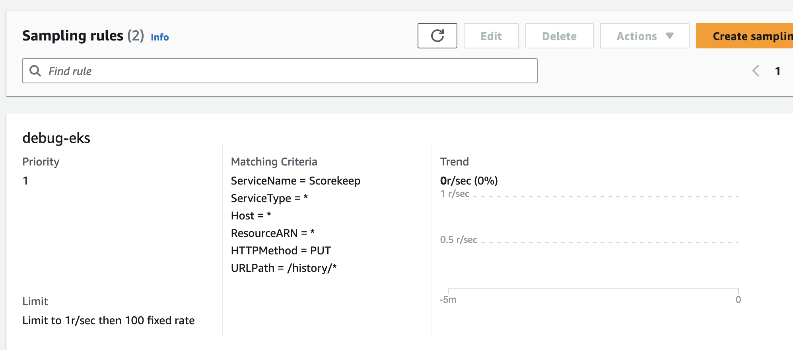
Apply Tail Sampling with AWS Distro for OpenTelemetry (ADOT)¶
ADOT Tail Sampling allows you to control the volume of traces ingested in the service. However, Tail Sampling allows you to define the sampling policies after all the spans in the request have been completed instead of at the beginning. This further limits the amount of raw data transferred to CloudWatch, hence reducing cost.
For example, if youre sampling 1% of traffic to a landing page and 10% of the requests to a payment page this might leave you with 300 traces for an 30 minute period. With an ADOT Tail Sampling rule of that filters specific errors, you could be left with 200 traces which decreases the number of traces stored.
processors:
groupbytrace:
wait_duration: 10s
num_traces: 300
tail_sampling:
decision_wait: 1s # This value should be smaller than wait_duration
policies:
- ..... # Applicable policies**
batch/tracesampling:
timeout: 0s # No need to wait more since this will happen in previous processors
send_batch_max_size: 8196 # This will still allow us to limit the size of the batches sent to subsequent exporters
service:
pipelines:
traces/tailsampling:
receivers: [otlp]
processors: [groupbytrace, tail_sampling, batch/tracesampling]
exporters: [awsxray]
Leverage Amazon S3 Storage options¶
You should leverage AWS S3 bucket and its different storage classes to store the traces. Export traces to S3 before the retention period expires. Use Amazon S3 Lifecycle rules to move the trace data to the storage class that meets your requirements.
For example, if you have traces that are 90 days old, Amazon S3 Intelligent-Tiering can automatically move the data to long-term storage based on your usage pattern. You can use Amazon Athena to query the data in Amazon S3 if you need to refer back to the traces at a later time. This can further reduce your cost for distributed tracing.